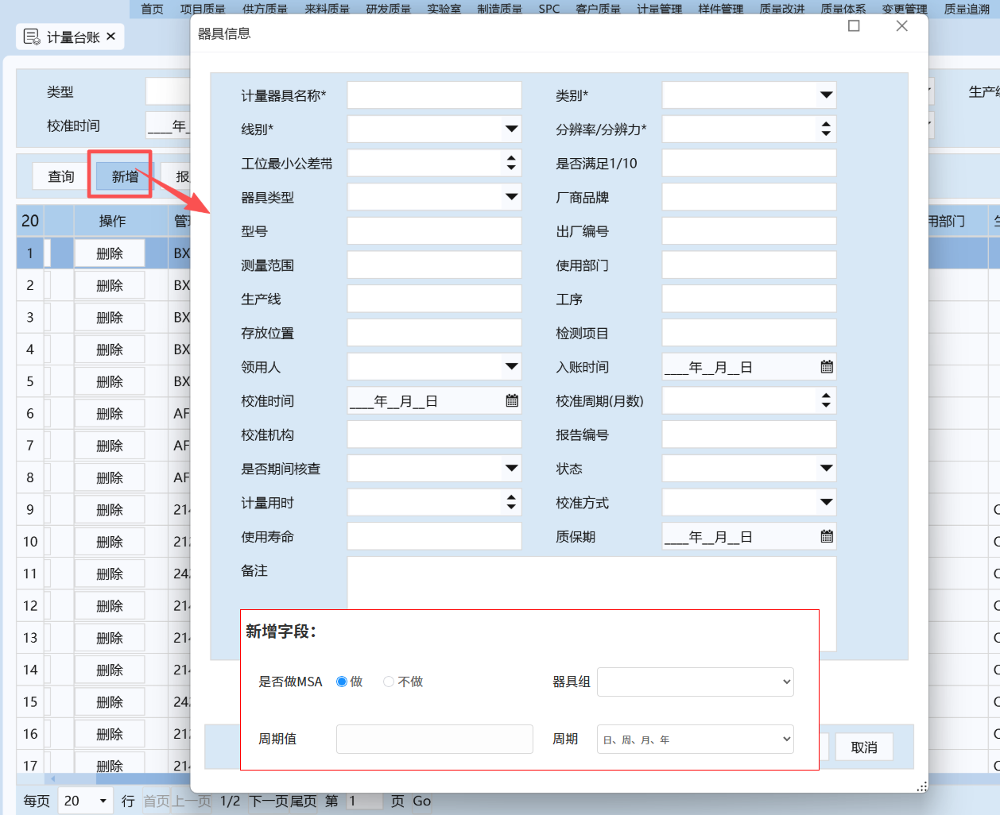

<!DOCTYPE html>
<html lang="zh-CN">
<head>
<meta charset="utf-8" />
<meta name="viewport" content="width=device-width, initial-scale=1" />
<title>MSA 测量系统分析管理系统 · 质量计量中心</title>
<script src="lib/react.production.min.js"></script>
<script src="lib/react-dom.production.min.js"></script>
<script src="lib/dayjs.min.js"></script>
<script src="lib/antd.min.js"></script>
<script src="lib/xlsx.full.min.js"></script>
<script src="lib/babel.min.js"></script>
<style>
/* 创建MSA计划弹窗：器具列表区域撑满容器，滚动条固定在底部 */
.modal-inst-table{flex:1;min-height:0;display:flex;flex-direction:column}
.modal-inst-table .ant-table-wrapper{flex:1;min-height:0;display:flex;flex-direction:column}
.modal-inst-table .ant-table-wrapper .ant-table{flex:1;min-height:0;display:flex;flex-direction:column}
.modal-inst-table .ant-table-wrapper .ant-table-content{flex:1;min-height:0;overflow:auto}
*{box-sizing:border-box}
html,body{margin:0;padding:0}
body{font-family:-apple-system,BlinkMacSystemFont,'Segoe UI','Microsoft YaHei',Roboto,Helvetica,Arial,sans-serif;background:#eef2f7;color:#333333;-webkit-font-smoothing:antialiased}
#root{min-height:100vh}
/* ---------- Layout ---------- */
.app-layout{min-height:100vh}
.ant-layout-sider{background:linear-gradient(180deg,#0c1c36 0%,#123052 100%)!important}
.sider-logo{height:58px;display:flex;align-items:center;gap:10px;padding:0 18px;color:#fff;font-weight:700;font-size:16px;letter-spacing:.4px;border-bottom:1px solid rgba(255,255,255,.08);white-space:nowrap;overflow:hidden}
.sider-logo .logo-ico{width:30px;height:30px;border-radius:8px;background:linear-gradient(135deg,#3b8bff,#1e5fc9);display:flex;align-items:center;justify-content:center;font-size:16px;color:#fff;flex:none}
.ant-menu-dark{background:transparent!important}
.ant-menu-dark .ant-menu-item-selected{background:linear-gradient(90deg,#2563eb,#1d4ed8)!important}
.sider-foot{position:absolute;bottom:14px;left:14px;right:14px;color:rgba(255,255,255,.45);font-size:14px;line-height:1.6}
/* ---------- Header ---------- */
.app-header{background:#fff;padding:0 24px;box-shadow:0 1px 4px rgba(16,24,40,.07);display:flex;align-items:center;justify-content:space-between;height:58px;position:sticky;top:0;z-index:20}
.app-header .crumb{font-size:16px;font-weight:600;color:#333333}
.app-header .crumb small{font-weight:400;color:#666666;margin-right:8px}
.hd-right{display:flex;align-items:center;gap:14px}
/* ---------- Content ---------- */
.app-content{padding:20px 24px 40px;min-width:0;overflow-x:auto}
.page-head{display:flex;justify-content:space-between;align-items:flex-start;margin-bottom:16px}
.page-head h2{margin:0;font-size:16px;color:#333333}
.page-head .sub{color:#666666;font-size:14px;margin-top:4px}
/* ---------- Cards / panels ---------- */
.panel{background:#fff;border-radius:12px;padding:18px 20px;box-shadow:0 1px 2px rgba(16,24,40,.05);margin-bottom:16px}
.stat-grid{display:grid;grid-template-columns:repeat(auto-fit,minmax(210px,1fr));gap:14px;margin-bottom:16px}
.stat-card{background:#fff;border-radius:12px;padding:16px 18px;box-shadow:0 1px 2px rgba(16,24,40,.05);display:flex;gap:14px;align-items:center}
.stat-card .ic{width:46px;height:46px;border-radius:11px;display:flex;align-items:center;justify-content:center;font-size:16px;color:#fff;flex:none}
.stat-card .val{font-size:16px;font-weight:700;color:#333333;line-height:1.15}
.stat-card .lbl{font-size:14px;color:#666666;margin-top:2px}
.stat-card .extra{font-size:14px;color:#666666;margin-top:3px}
.ic-blue{background:linear-gradient(135deg,#3b82f6,#2563eb)}
.ic-green{background:linear-gradient(135deg,#22c55e,#16a34a)}
.ic-amber{background:linear-gradient(135deg,#f59e0b,#d97706)}
.ic-red{background:linear-gradient(135deg,#ef4444,#dc2626)}
.ic-cyan{background:linear-gradient(135deg,#06b6d4,#0891b2)}
.ic-slate{background:linear-gradient(135deg,#64748b,#475569)}
.panel-extra{display:flex;justify-content:flex-end;margin-bottom:14px}
.panel-title{display:flex;align-items:center;justify-content:space-between;margin-bottom:14px}
.panel-title .t{font-size:16px;font-weight:600;color:#333333;display:flex;align-items:center;gap:8px}
.panel-title .t .bar{width:4px;height:16px;border-radius:2px;background:linear-gradient(180deg,#3b82f6,#1d4ed8);display:inline-block}
/* ---------- Table tweaks ---------- */
.ant-table{font-size:14px}
.ant-table-thead>tr>th{background:#f8fafc!important;color:#666666;font-weight:600;white-space:nowrap}
.ant-table-tbody>tr>td{padding:10px 12px!important}
.ant-table-row{cursor:default}
.row-link{color:#333333;cursor:pointer}
.row-selected{background:#e6f4ff !important;cursor:pointer}
.ledger-group-active > td{background:#e6f4ff !important;cursor:pointer}
.ledger-group-active:hover > td{background:#e6f4ff !important}
.ledger-group-active{background:#e6f4ff !important}
.row-link:hover{text-decoration:underline}
.mono{font-family:'SFMono-Regular',Consolas,'Liberation Mono',Menlo,monospace;white-space:nowrap}
/* 多选下拉选项显示左侧checkbox（JS自动给多选面板加.multi-dropdown） */
.multi-dropdown .ant-select-item-option{padding-left:26px !important}
.multi-dropdown .ant-select-item-option-state{display:inline-flex !important;opacity:1 !important;visibility:visible !important;left:8px;top:50%;transform:translateY(-50%);position:absolute !important}
.multi-dropdown .ant-select-item-option-state .ant-select-checkbox{display:inline-block !important}
/* ---------- misc ---------- */
.grp-label{font-size:14px;color:#666666;margin:14px 0 6px;font-weight:600}
.mt8{margin-top:8px}.mt12{margin-top:12px}.mt16{margin-top:16px}
.flex{display:flex}.gap8{gap:8px}.gap12{gap:12px}.between{justify-content:space-between}.center{align-items:center}.wrap{flex-wrap:wrap}
.form-hint{font-size:14px;color:#666666;line-height:1.6}
.kpi-row{display:flex;gap:22px;flex-wrap:wrap;padding:6px 2px}
.kpi-item{min-width:120px}
.kpi-item .k{font-size:14px;color:#666666}
.kpi-item .v{font-size:16px;font-weight:700;color:#333333;margin-top:2px}
.mono-grid{border-collapse:collapse;font-size:14px;font-family:'JetBrains Mono',Consolas,monospace}
.mono-grid th,.mono-grid td{border:1px solid #e2e8f0;padding:3px 6px;text-align:center;white-space:nowrap}
.mono-grid th{background:#f1f5f9;color:#333333;font-weight:600}
.gauge-wrap{display:flex;align-items:center;gap:12px}
.verdict-banner{border-radius:10px;padding:14px 18px;margin-top:14px}
.verdict-accept{background:#f0fdf4;border:1px solid #bbf7d0}
.verdict-cond{background:#fff7ed;border:1px solid #fed7aa}
.verdict-reject{background:#fef2f2;border:1px solid #fecaca}
.data-cell{min-width:64px;text-align:center}
.tiny{font-size:14px;color:#333333}
::-webkit-scrollbar{width:8px;height:8px}
::-webkit-scrollbar-thumb{background:#cbd5e1;border-radius:4px}
.ant-drawer-body{padding-top:8px}
.spec-tag{font-weight:600}
.flow-row{display:flex;align-items:center;gap:6px;flex-wrap:wrap;color:#666666;font-size:14px}
.flow-row .node{background:#eff6ff;border:1px solid #bfdbfe;color:#333333;border-radius:8px;padding:5px 10px;font-size:14px}
.flow-row .arrow{color:#666666}
.dict-code{font-family:monospace;background:#f1f5f9;border-radius:4px;padding:1px 6px;font-size:14px;color:#333333}
.note{background:#fffbeb;border:1px solid #fde68a;border-radius:8px;padding:8px 12px;font-size:14px;color:#666666}
/* ---------- 统一表单控件样式：标签行等高不换行、控件占满 ---------- */
.flt-label{display:block;font-size:14px;color:#666666;margin-bottom:4px;white-space:nowrap;overflow:hidden;text-overflow:ellipsis;line-height:16px}
.flt-cell{min-width:0}
/* 弹窗/抽屉内容超高或超宽时出滚动条，而非溢出显示 */
.ant-modal-body{max-height:72vh;overflow:auto}
.ant-modal{max-width:calc(100vw - 32px)}
.ant-drawer-body{overflow:auto}

/* ============ V2.5 朴素化全局覆盖：字号 16/14、文字色 #333/#666、按钮两形式 ============ */
body{font-size:14px;color:#333333}
.ant-btn{font-size:14px;border-radius:4px}
.ant-btn-primary{background:#1677ff;border-color:#1677ff;color:#fff}
.ant-btn-primary:not(:disabled):hover{background:#4096ff;border-color:#4096ff;color:#fff}
.ant-btn-primary:not(:disabled):active{background:#0958d9;border-color:#0958d9}
.ant-btn-default{background:#fff;border-color:#1677ff;color:#1677ff}
.ant-btn-default:not(:disabled):hover{background:#fff;border-color:#4096ff;color:#4096ff}
.ant-btn-default:not(:disabled):active{background:#fff;border-color:#0958d9;color:#0958d9}
.ant-btn-default.ant-btn-dangerous{background:#fff;border-color:#1677ff;color:#1677ff}
.ant-btn-link{background:transparent;border:none;color:#1677ff;border-radius:4px}
.ant-btn-link:not(:disabled):hover{background:rgba(22,119,255,.06);color:#4096ff}
.ant-btn-link:not(:disabled):active{background:rgba(22,119,255,.12);color:#0958d9}
.ant-btn-link.ant-btn-sm{padding:0 8px;height:24px;line-height:22px;font-size:14px}
.ant-btn-link.ant-btn-dangerous{background:transparent;border:none;color:#ff4d4f}
.ant-btn-link.ant-btn-dangerous:not(:disabled):hover{background:rgba(255,77,79,.06);color:#ff7875}
.ant-btn-link.ant-btn-dangerous:not(:disabled):active{background:rgba(255,77,79,.12);color:#d9363e}
.ant-btn-text{background:transparent;border:none;color:#1677ff;border-radius:4px}
.ant-drawer .ant-descriptions-item-label{white-space:nowrap;word-break:keep-all}
.ant-btn-sm{font-size:14px}
.ant-input,.ant-input-affix-wrapper,.ant-select .ant-select-selector,.ant-picker,
.ant-input-number,.ant-input-number-input,.ant-input-search .ant-input{font-size:14px!important;color:#333333!important}
.ant-input::placeholder,.ant-picker-input>input::placeholder{color:#666666!important}
.ant-select-selection-placeholder{color:#666666!important}
.ant-select-dropdown .ant-select-item,.ant-select-dropdown .ant-select-item-option-content{font-size:14px;color:#333333}
.ant-select-single .ant-select-selection-item{color:#333333}
.ant-table{font-size:14px;color:#333333}
.ant-table-thead>tr>th{color:#333333!important;font-size:14px!important}
.ant-modal-title{font-size:16px;color:#333333}
.ant-modal-body{font-size:14px;color:#333333}
.ant-form-item-label>label{font-size:14px;color:#333333}
.ant-form-item .ant-form-item-explain,.ant-form-item .ant-form-item-extra{font-size:14px;color:#666666}
.ant-menu-item,.ant-menu-submenu-title{font-size:14px!important}
.ant-tabs-tab{font-size:14px}
.ant-tabs-tab-active .ant-tabs-tab-btn{color:#333333}
.ant-pagination-item,.ant-pagination-total-text,.ant-pagination-options{font-size:14px}
.ant-typography{font-size:14px;color:#333333}
.ant-tag{font-size:14px;line-height:22px}
a{color:#333333}
.row-link{color:#333333!important;text-decoration:none}
.row-link:hover{color:#1677ff}

/* 检验方法多选：已选项用；分隔的纯文本展示 */
.msa-method-select .ant-select-selection-overflow-item{margin-inline-end:0!important;padding:0!important}
.msa-method-select .ant-select-selection-overflow-item + .ant-select-selection-overflow-item::before{content:'；';margin-right:2px}
.msa-method-select .ant-select-selection-overflow-item.ant-select-selection-overflow-item-suffix{min-width:4px}
.entry-panel > .ant-card-body { height: 100%; display: flex; flex-direction: column; }
.entry-panel > .ant-card-body > div { flex: 1; display: flex; flex-direction: column; }
.entry-panel .ant-table-wrapper { flex: 1; display: flex; flex-direction: column; }
.entry-panel .ant-spin-nested-loading { flex: 1; display: flex; flex-direction: column; }
.entry-panel .ant-spin-container { flex: 1; display: flex; flex-direction: column; }
.entry-panel .ant-table { flex: 1; }
.entry-panel .ant-table-container { flex: 1; display: flex; flex-direction: column; }
.entry-panel .ant-table-body { flex: 1; }
/* 全局细滚动条 */
*::-webkit-scrollbar { width: 6px; height: 6px; }
*::-webkit-scrollbar-track { background: transparent; }
*::-webkit-scrollbar-thumb { background: #c1c1c1; border-radius: 3px; }
*::-webkit-scrollbar-thumb:hover { background: #a8a8a8; }
* { scrollbar-width: thin; scrollbar-color: #c1c1c1 transparent; }
</style>
<script>
(function(){
  function fixMultiDropdowns(){
    document.querySelectorAll('.ant-select-dropdown:not(.multi-fixed)').forEach(function(dd){
      dd.classList.add('multi-fixed');
      var opts = dd.querySelectorAll('.ant-select-item-option');
      if(!opts.length) return;
      var isMulti = dd.classList.contains('ant-select-dropdown-multiple');
      if(!isMulti) return;
      opts.forEach(function(opt){
        if(opt.querySelector('.my-cb')) return;
        var cb = document.createElement('span');
        cb.className = 'my-cb';
        cb.style.cssText = 'display:inline-block;width:14px;height:14px;border:1px solid #d9d9d9;border-radius:2px;margin-right:8px;vertical-align:middle;position:relative;flex-shrink:0;background:#fff';
        opt.style.paddingLeft = '26px';
        opt.style.position = 'relative';
        opt.insertBefore(cb, opt.firstChild);
        if(opt.classList.contains('ant-select-item-option-selected')){
          cb.style.background = '#1677ff';
          cb.style.borderColor = '#1677ff';
          cb.innerHTML = '<span style="position:absolute;left:3px;top:0px;width:4px;height:8px;border:solid #fff;border-width:0 2px 2px 0;transform:rotate(45deg)"></span>';
        }
      });
    });
  }
  document.addEventListener('click', function(){ setTimeout(fixMultiDropdowns, 50); }, true);
  var mo = new MutationObserver(function(){ fixMultiDropdowns(); });
  mo.observe(document.body, {childList:true, subtree:true});
  fixMultiDropdowns();
})();
</script>


</head>
<body>
<div id="root"></div>

<script type="text/babel" data-presets="react">
/* ============================================================================
 *  MSA 测量系统分析管理系统 —— 业务模型与种子数据
 *  设计依据：AIAG MSA 参考手册(第4版) / IATF 16949:2016 条款7.1.5.1.1 /
 *           ISO 10012 测量管理体系 / JJF 1001 通用计量术语 / 企业内控文件
 * ==========================================================================*/
const { useState, useEffect, useMemo, useRef, useReducer } = React;
const { Table, Card, Tag, Badge, Button, Space, Input, InputNumber, Select, Form, Modal, Drawer,
        Descriptions, Tabs, Steps, Alert, Tooltip, Popconfirm, Popover, Progress, Timeline,
        Result, Empty, Row, Col, Divider, List, Avatar, Dropdown, Breadcrumb, Statistic,
        Menu, Layout, message, Pagination, Radio, Segmented, Checkbox, Switch, DatePicker } = antd;
const { Sider, Header, Content, Footer } = Layout;

const TODAY = (window.dayjs && dayjs().format('YYYY-MM-DD')) || '2026-09-03';
const NOW = (window.dayjs && dayjs().format('YYYY-MM-DD HH:mm:ss')) || TODAY+' 09:00:00';

/* 日期/日期时间输入控件：内部完成 dayjs<->字符串转换（Form 与行内编辑均存字符串） */
const _toD = v => (v && v!=='—' && v!=='暂无' && v!=='待维护' && v!=='-' && dayjs(v).isValid()) ? dayjs(v) : null;
function FDate({value,onChange,showTime,format,...rest}){
  return <DatePicker {...rest} showTime={showTime} format={format||(showTime?'YYYY-MM-DD HH:mm:ss':'YYYY-MM-DD')} value={_toD(value)} onChange={(d)=>onChange(d ? (showTime? d.format('YYYY-MM-DD HH:mm:ss') : d.format('YYYY-MM-DD')) : '')}/>;
}

/* ---------- 通用小工具 ---------- */
function mulberry32(a){return function(){a|=0;a=a+0x6D2B79F5|0;let t=Math.imul(a^a>>>15,1|a);t=t+Math.imul(t^t>>>7,61|t)^t;return((t^t>>>14)>>>0)/4294967296}}
function gauss(rnd){let u=0,v=0;while(u===0)u=rnd();while(v===0)v=rnd();return Math.sqrt(-2*Math.log(u))*Math.cos(2*Math.PI*v)}
const r3 = x => Math.round(x*1000)/1000;
const r2 = x => Math.round(x*100)/100;
const r1 = x => Math.round(x*10)/10;
/* 确定性生成 GRR 原始数据（全局可用：种子数据与样本录入“填入演示数据”共用） */
function genGRR(seedBase, refs, opBias, noiseSigma, trials){
  const rnd = mulberry32(seedBase);
  const raw = [];
  for(let o=0;o<opBias.length;o++){
    const opRow = [];
    for(let p=0;p<refs.length;p++){
      const tRow = [];
      for(let r=0;r<trials;r++){
        tRow.push(r3(refs[p] + opBias[o] + gauss(rnd)*noiseSigma));
      }
      opRow.push(tRow);
    }
    raw.push(opRow);
  }
  return raw;
}
const daysBetween = (a,b) => Math.round((new Date(b)-new Date(a))/86400000);
function addMonths(dateStr, m){ if(!dateStr) return ''; const d=new Date(dateStr); if(isNaN(d.getTime())) return ''; d.setMonth(d.getMonth()+(m||0)); return d.toISOString().slice(0,10); }
const nextReviewDate=(i, months)=> (i&&i.lastMsa&&i.lastMsa!=='-')? addMonths(i.lastMsa, months||12) : null; // 年度/定期复评：上次MSA+复评周期
function esc(s){return String(s==null?'':s)}
function uid(prefix){return prefix+'-'+Date.now().toString(36).slice(-6)}

/* ---------- 全局消息 ---------- */
const toast = {
  ok:(t)=>message.success(t), warn:(t)=>message.warning(t), err:(t)=>message.error(t), info:(t)=>message.info(t)
};

/* ============================================================================
 * 数据存储（内存 + localStorage 持久化，便于演示与评审）
 * ==========================================================================*/
const DEFAULT_DATA = null; // 占位，实际种子在下方构造

const Store = {
  data: null,
  listeners: [],
  emit(){ this.listeners.forEach(f=>{try{f()}catch(e){}}) },
  onChange(fn){ this.listeners.push(fn); return ()=>{ this.listeners=this.listeners.filter(x=>x!==fn); } },
  get(){ return this.data; }
};

function logAction(actor, action, target, detail){
  if(!Store.data) return;
  Store.data.logs.unshift({ id:uid('LOG'), time: new Date().toLocaleString('zh-CN',{hour12:false}), actor, action, target, detail });
  if(Store.data.logs.length>300) Store.data.logs.length=300;
}
function mut(fn){
  if(!Store.data) return;
  fn(Store.data);
  try{ localStorage.setItem('msa_demo_data_v20260916', JSON.stringify(Store.data)); }catch(e){}
  Store.emit();
}
let G_SEED_CHARS=[];
function buildSeed(){
  /* ---------------- 计量器具台账 ---------------- */
  const instruments = [
    {id:'JJQ-2023-010', name:'三坐标测量机(参考标准)', model:'CMM-Global 575', serial:'G575-2019-088', cat:'三坐标测量机', mcat:'长度', range:'0~500mm', res:'0.001mm', acc:'MPE: ±(1.8+L/350)μm', unit:'mm', vendor:'海克斯康', asset:'ZC-2019-0101', buy:'2019-06-12', dept:'计量室', owner:'计量室·刘工', loc:'计量室-恒温区', calMode:'外校', calOrg:'省计量科学研究院', period:12, lastCal:'2026-03-02 10:30:00', nextCal:'2027-03-02', cert:'JX-2026-0302', calResult:'合格', status:'在用', keyMeasure:'是', note:'用于关键样本参考值测定（溯源至国家基准）'},
    {id:'JJQ-2024-001', name:'数显卡尺', model:'CD-6\"CX', serial:'240315-018', cat:'卡尺', mcat:'长度', range:'0~150mm', res:'0.01mm', acc:'MPE: ±0.02mm', unit:'mm', vendor:'三丰(Mitutoyo)', asset:'ZC-2024-0121', buy:'2024-03-15', dept:'装配一车间', owner:'王强', loc:'装配一车间-工具柜A3', calMode:'外校', calOrg:'市计量测试所', period:6, lastCal:'2026-05-10 09:15:00', nextCal:'2026-11-10', cert:'CS-2026-0510', calResult:'合格', status:'在用', keyMeasure:'是', calCycle:12, calAdvance:20, note:'测量轴径 φ50±0.05，用于GRR分析'},
    {id:'JJQ-2024-002', name:'外径千分尺', model:'MDC-25', serial:'241102-066', cat:'千分尺', mcat:'长度', range:'0~25mm', res:'0.001mm', acc:'MPE: ±0.004mm', unit:'mm', vendor:'成量', asset:'ZC-2024-0130', buy:'2024-04-02', dept:'金加工车间', owner:'赵磊', loc:'金加工车间-量具柜', calMode:'内校', calOrg:'计量室(内校)', period:12, lastCal:'2026-01-15 14:00:00', nextCal:'2027-01-15', cert:'NX-2026-0115', calResult:'合格', status:'在用', keyMeasure:'是', note:''},
    {id:'JJQ-2024-003', name:'百分表', model:'0.01×10', serial:'240521-031', cat:'指示表', mcat:'长度', range:'0~10mm', res:'0.01mm', acc:'MPE: ±0.02mm', unit:'mm', vendor:'哈量', asset:'ZC-2024-0141', buy:'2024-05-21', dept:'金加工车间', owner:'赵磊', loc:'金加工车间-量具柜', calMode:'内校', calOrg:'计量室(内校)', period:6, lastCal:'2026-07-02 11:20:00', nextCal:'2027-01-02', cert:'NX-2026-0702', calResult:'合格', status:'在用', keyMeasure:'否', note:''},
    {id:'JJQ-2024-004', name:'数显千分表', model:'ID-S112E', serial:'240812-047', cat:'指示表', mcat:'长度', range:'0~12.7mm', res:'0.001mm', acc:'MPE: ±0.003mm', unit:'mm', vendor:'三丰(Mitutoyo)', asset:'ZC-2024-0155', buy:'2024-06-30', dept:'装配二车间', owner:'孙丽', loc:'装配二车间-检验台', calMode:'外校', calOrg:'市计量测试所', period:6, lastCal:'2025-09-15 15:40:00', nextCal:'2026-03-15', cert:'CS-2025-0915', calResult:'合格', status:'停用', keyMeasure:'否', note:'校准逾期未送检，已停用待安排外校（2026-09-01 由计量管理员标记）'},
    {id:'JJQ-2024-005', name:'精密压力表', model:'Y-150B', serial:'240905-112', cat:'压力表', mcat:'力学', range:'0~1.6MPa', res:'0.02MPa', acc:'1.6级', unit:'MPa', vendor:'红旗仪表', asset:'ZC-2024-0162', buy:'2024-09-05', dept:'液压车间', owner:'周军', loc:'液压车间-试验台', calMode:'外校', calOrg:'省计量科学研究院', period:6, lastCal:'2026-03-20 10:05:00', nextCal:'2026-09-20', cert:'JX-2026-0320', calResult:'合格', status:'在用', keyMeasure:'是', note:'30天内到期'},
    {id:'JJQ-2024-006', name:'电子天平', model:'FA3004', serial:'241101-023', cat:'天平', mcat:'力学', range:'0~300g', res:'0.01g', acc:'Ⅲ级', unit:'g', vendor:'梅特勒-托利多', asset:'ZC-2024-0170', buy:'2024-11-01', dept:'实验室', owner:'吴芳', loc:'实验室-天平室', calMode:'外校', calOrg:'省计量科学研究院', period:12, lastCal:'2025-11-11 16:30:00', nextCal:'2026-11-11', cert:'JX-2025-1111', calResult:'合格', status:'在用', keyMeasure:'是', note:'配合稳定性分析'},
    {id:'JJQ-2024-007', name:'数显扭力扳手', model:'DTC-60', serial:'241212-078', cat:'扭力扳手', mcat:'力学', range:'5~50N·m', res:'0.1N·m', acc:'±3%', unit:'N·m', vendor:'世达(SATA)', asset:'ZC-2024-0177', buy:'2024-12-12', dept:'装配一车间', owner:'王强', loc:'装配一车间-防错工具柜', calMode:'外校', calOrg:'市计量测试所', period:12, lastCal:'2025-12-05 09:45:00', nextCal:'2026-12-05', cert:'CS-2025-1205', calResult:'合格', status:'在用', keyMeasure:'是', calCycle:6, calAdvance:15, note:'GRR需整改复测'},
    {id:'JJQ-2024-008', name:'光滑塞规(通止规)', model:'φ8H7', serial:'240226-015', cat:'塞规/环规', mcat:'长度', range:'φ8H7', res:'计数型', acc:'通端/止端', unit:'', vendor:'上工量具', asset:'ZC-2024-0180', buy:'2024-02-26', dept:'装配二车间', owner:'孙丽', loc:'装配二车间-检验台', calMode:'内校', calOrg:'计量室(内校)', period:12, lastCal:'2026-02-18 13:30:00', nextCal:'2027-02-18', cert:'NX-2026-0218', calResult:'合格', status:'在用', keyMeasure:'是', calCycle:12, calAdvance:30, note:'计数型检具，用于KAPPA分析'},
    {id:'JJQ-2024-009', name:'深度游标卡尺', model:'0-200', serial:'240401-092', cat:'卡尺', mcat:'长度', range:'0~200mm', res:'0.02mm', acc:'MPE: ±0.03mm', unit:'mm', vendor:'广陆', asset:'ZC-2024-0188', buy:'2024-04-01', dept:'金加工车间', owner:'赵磊', loc:'金加工车间-量具柜', calMode:'内校', calOrg:'计量室(内校)', period:12, lastCal:'2026-04-01 10:25:00', nextCal:'2027-04-01', cert:'NX-2026-0401', calResult:'合格', status:'封存', keyMeasure:'否', note:'近期无使用计划，封存管理'},
    {id:'JJQ-2024-011', name:'数字温度计', model:'TES-1310', serial:'240606-055', cat:'温度计', mcat:'热学', range:'-50~200℃', res:'0.1℃', acc:'±0.5℃', unit:'℃', vendor:'泰仕(TES)', asset:'ZC-2024-0190', buy:'2024-06-06', dept:'实验室', owner:'吴芳', loc:'实验室-烘箱区', calMode:'外校', calOrg:'省计量科学研究院', period:12, lastCal:'2026-03-01 14:10:00', nextCal:'2027-03-01', cert:'JX-2026-0301', calResult:'合格', status:'在用', keyMeasure:'否', note:''}
  ];

  /* ---------------- 器具组（独立维护：组编码/名称、检验周期、上次执行、下次提醒、执行记录） ---------------- */
  const instGroups = [
    {id:'G-01', type:'inst', name:'轴类关键尺寸组', memberIds:['JJQ-2024-001','JJQ-2024-002','JJQ-2024-003','JJQ-2024-009'], note:'精加工工序轴类关键尺寸测量（卡尺/千分尺/百分表/深度尺）', creator:'计量室·刘工', createDate:'2026-01-05 09:00:00', editor:'计量室·刘工', editorDate:'2026-06-01 14:20:00', calCycle:12, lastExec:'2026-03-15 10:30:00', nextRemind:'2027-03-15 08:00:00', records:[{time:'2026-03-15 10:30:00', content:'轴类关键尺寸组周期复评（GRR），结论可接受，归档'}]},
    {id:'G-02', type:'inst', name:'装配力学组', memberIds:['JJQ-2024-007','JJQ-2024-005'], note:'装配扭矩 / 液压压力测量', creator:'计量室·刘工', createDate:'2026-01-06 10:00:00', editor:'计量室·刘工', editorDate:'2026-06-01 14:35:00', calCycle:6, lastExec:'2026-06-10 09:20:00', nextRemind:'2026-12-10 08:00:00', records:[{time:'2026-06-10 09:20:00', content:'装配力学组周期复评（GRR），%GRR 有条件区间，纠正措施进行中'}]},
    {id:'G-03', type:'inst', name:'实验室计量组', memberIds:['JJQ-2023-010','JJQ-2024-006','JJQ-2024-011'], note:'实验室参考测量（三坐标/天平/温度计）', creator:'计量室·张工', createDate:'2026-01-08 11:00:00', editor:'计量室·张工', editorDate:'2026-06-01 15:00:00', calCycle:12, lastExec:'2026-03-18 11:00:00', nextRemind:'2027-03-18 08:00:00', records:[{time:'2026-03-18 11:00:00', content:'实验室计量组复评（线性/偏倚），结论非常理想可接受'}]},
    {id:'G-04', type:'inst', name:'目视/计数检验组', memberIds:['JJQ-2024-008','JJQ-2024-004'], note:'计数型检验（塞规/千分表），用于 KAPPA 分析', creator:'计量室·张工', createDate:'2026-01-10 14:00:00', editor:'计量室·张工', editorDate:'2026-06-01 15:30:00', calCycle:6, lastExec:'2026-08-22 10:10:00', nextRemind:'2026-10-05 08:00:00', records:[{time:'2026-08-22 10:10:00', content:'目视/计数检验组二期 KAPPA 复评，误判偏高需整改'}]},
    {id:'P-01', type:'iqc', postCode:'POST-IQC', name:'IQC 检验组', dept:'品质部', note:'人员MSA组：以岗位编码为组标识，选择岗位自动带出该岗位下人员（人员编号/姓名/部门/岗位）', creator:'计量室·张工', createDate:'2026-08-20 09:30:00', editor:'计量室·张工', editorDate:'2026-08-25 09:40:00', calCycle:6, lastExec:'2026-08-22 10:10:00', nextPlanDate:'2027-02-22', remindAdvance:20, nextRemind:'2027-02-02 08:00:00', records:[{time:'2026-08-22 10:10:00', content:'IQC 检验组 KAPPA 一致性复评，人员组建立并纳入盲测'}]},
    {id:'P-02', type:'ipqc', postCode:'POST-IPQC', name:'IPQC 巡检组', dept:'品质部', note:'人员MSA组：以岗位编码为组标识，成员由人员主数据按岗位自动带出', creator:'计量室·张工', createDate:'2026-08-20 09:35:00', editor:'计量室·张工', editorDate:'2026-08-25 09:55:00', calCycle:6, lastExec:'2026-08-22 10:10:00', nextPlanDate:'2027-02-22', remindAdvance:20, nextRemind:'2027-02-02 08:00:00', records:[]},
    {id:'P-03', type:'fqc', postCode:'POST-FQC', name:'FQC 终检组', dept:'品质部', note:'人员MSA组：以岗位编码为组标识，成员由人员主数据按岗位自动带出', creator:'计量室·刘工', createDate:'2026-08-20 09:40:00', editor:'计量室·刘工', editorDate:'2026-09-01 10:05:00', calCycle:6, lastExec:'2026-09-01 10:05:00', nextPlanDate:'2027-03-01', remindAdvance:20, nextRemind:'2027-02-09 08:00:00', records:[]},
    {id:'P-04', type:'gpr', postCode:'POST-GPR', name:'GPR 判定组', dept:'总装车间', note:'人员MSA组：以岗位编码为组标识（动总GPR/电控GPR），成员由人员主数据按岗位自动带出', creator:'计量室·刘工', createDate:'2026-08-20 09:45:00', editor:'计量室·刘工', editorDate:'2026-09-01 10:20:00', calCycle:6, lastExec:'2026-09-01 10:20:00', nextPlanDate:'2027-03-01', remindAdvance:20, nextRemind:'2027-02-09 08:00:00', records:[]}
  ];

  /* ---------------- 人员主数据（人员MSA数据源：岗位编码作为人员组标识） ---------------- */
  const personnel = [
    {empNo:'E1001', name:'王强', postCode:'POST-IQC', postName:'IQC检验员', dept:'品质部'},
    {empNo:'E1002', name:'刘青', postCode:'POST-IQC', postName:'IQC检验员', dept:'品质部'},
    {empNo:'E1003', name:'张伟', postCode:'POST-IPQC', postName:'IPQC巡检', dept:'品质部'},
    {empNo:'E1004', name:'孙丽', postCode:'POST-IPQC', postName:'IPQC巡检', dept:'品质部'},
    {empNo:'E1005', name:'赵磊', postCode:'POST-FQC', postName:'FQC终检', dept:'品质部'},
    {empNo:'E1006', name:'周敏', postCode:'POST-FQC', postName:'FQC终检', dept:'品质部'},
    {empNo:'E1007', name:'吴刚', postCode:'POST-GPR', postName:'动总GPR', dept:'总装车间'},
    {empNo:'E1008', name:'郑芳', postCode:'POST-GPR', postName:'电控GPR', dept:'电控车间'},
    {empNo:'E1009', name:'冯强', postCode:'POST-LAB', postName:'实验室测量员', dept:'计量室'},
    {empNo:'E1010', name:'何静', postCode:'POST-LAB', postName:'实验室测量员', dept:'计量室'}
  ];

  /* ---------------- 校准记录 ---------------- */
  const calibrations = [
    {id:'CAL-2026-0001', instId:'JJQ-2024-001', calDate:'2026-05-10', calOrg:'市计量测试所', certNo:'CS-2026-0510', result:'合格', basis:'JJG 30-2012 通用卡尺', fee:120, operator:'计量室·刘工', adjust:'无', nextDate:'2026-11-10'},
    {id:'CAL-2026-0002', instId:'JJQ-2024-001', calDate:'2025-11-10', calOrg:'市计量测试所', certNo:'CS-2025-1110', result:'合格', basis:'JJG 30-2012 通用卡尺', fee:120, operator:'计量室·刘工', adjust:'无', nextDate:'2026-05-10'},
    {id:'CAL-2026-0003', instId:'JJQ-2024-008', calDate:'2026-02-18', calOrg:'计量室(内校)', certNo:'NX-2026-0218', result:'合格', basis:'JJG 343-2012 光滑极限量规', fee:0, operator:'计量室·张工', adjust:'无', nextDate:'2027-02-18'},
    {id:'CAL-2026-0004', instId:'JJQ-2024-007', calDate:'2025-12-05', calOrg:'市计量测试所', certNo:'CS-2025-1205', result:'合格', basis:'JJG 707-2014 扭矩扳子', fee:180, operator:'计量室·刘工', adjust:'无', nextDate:'2026-12-05'},
    {id:'CAL-2026-0005', instId:'JJQ-2024-004', calDate:'2025-09-15', calOrg:'市计量测试所', certNo:'CS-2025-0915', result:'合格', basis:'JJG 34-2008 指示表', fee:150, operator:'计量室·刘工', adjust:'无', nextDate:'2026-03-15'},
    {id:'CAL-2026-0006', instId:'JJQ-2023-010', calDate:'2026-03-02', calOrg:'省计量科学研究院', certNo:'JX-2026-0302', result:'合格', basis:'JJF 1064-2010 坐标测量机', fee:2200, operator:'计量室·张工', adjust:'无', nextDate:'2027-03-02'}
  ];

  /* ---------------- MSA 检验标准维护 ---------------- */
  const standards = [
    {id:'STD-MSA-001', name:'计量型变差分析(GRR)判定准则', type:'GRR判定', version:'V3.0', effDate:'2026-01-01', editorDate:'2026-01-01 09:30:00', status:'启用',
     instIds:['JJQ-2023-010','JJQ-2024-001','JJQ-2024-002','JJQ-2024-003','JJQ-2024-005','JJQ-2024-006','JJQ-2024-007','JJQ-2024-011'],
     basis:'AIAG MSA 参考手册第4版 §4.2；IATF 16949 7.1.5.1.1',
     criteria:[
       {cond:'%GRR < 10%', verdict:'可接受'},
       {cond:'10% ≤ %GRR ≤ 30%', verdict:'有条件接受（需评审批准，结合 NDC/公差/过程能力综合判定）'},
       {cond:'%GRR > 30%', verdict:'不可接受（必须整改后重新分析）'}
     ],
     owner:'质量部', editor:'李工程师', auditor:'张工', approver:'王经理', changeLog:'V3.0：按AIAG第4版修订，新增公差%GRR补充判定', charIds:['CHAR-2026-001','CHAR-2026-002','CHAR-2026-004','CHAR-2026-007']},
    {id:'STD-MSA-002', name:'可区分类别数(NDC)判定准则', type:'NDC判定', version:'V2.0', effDate:'2025-07-01', editorDate:'2025-07-01 09:30:00', status:'启用',
     instIds:['JJQ-2023-010','JJQ-2024-001','JJQ-2024-002','JJQ-2024-003','JJQ-2024-005','JJQ-2024-006','JJQ-2024-007','JJQ-2024-011'],
     basis:'AIAG MSA 参考手册第4版；NDC=1.41×(PV/GRR)',
     criteria:[
       {cond:'NDC ≥ 5', verdict:'可接受'},
       {cond:'2 ≤ NDC < 5', verdict:'有条件接受（需按过程能力评估后批准）'},
       {cond:'NDC < 2', verdict:'不可接受'}
     ],
     owner:'质量部', editor:'李工程师', auditor:'张工', approver:'王经理', changeLog:'V2.0：明确2~4档需过程能力佐证', charIds:['CHAR-2026-001','CHAR-2026-002']},
    {id:'STD-MSA-003', name:'计数型测量系统一致性(KAPPA)判定准则', type:'KAPPA判定', version:'V2.0', effDate:'2025-07-01', editorDate:'2025-07-01 10:15:00', status:'启用',
     instIds:['JJQ-2024-008'],
     basis:'AIAG MSA 参考手册第4版 §9；行业惯例（KAPPA>0.75为优秀）',
     criteria:[
       {cond:'KAPPA > 0.75', verdict:'优秀（可接受）'},
       {cond:'0.40 ≤ KAPPA ≤ 0.75', verdict:'良好（有条件接受，需对缺陷样本重点培训）'},
       {cond:'KAPPA < 0.40', verdict:'不可接受（必须重新培训/更换判定标准后复测）'}
     ],
     owner:'质量部', editor:'李工程师', auditor:'张工', approver:'王经理', changeLog:'V2.0：阈值与客户SPEC对齐', charIds:['CHAR-2026-003']},
    {id:'STD-MSA-004', name:'计数型三档判定准则', type:'有效性判定', version:'V2.0', effDate:'2025-07-01', editorDate:'2025-07-01 11:00:00', status:'启用',
     instIds:['JJQ-2024-008'],
     basis:'AIAG MSA 第4版 §9；业务《计数型测量系统分析》三档判定表',
     criteria:[
       {cond:'Kappa≥0.75 且 有效性≥90% 且 错误率≤2% 且 错误警报率≤5%', verdict:'评价人可接受'},
       {cond:'Kappa 0.40~0.75 / 有效性 80%~90% / 错误率 2%~5% / 错误警报率 5%~10%', verdict:'可接受边缘-可能需改进'},
       {cond:'Kappa<0.40 或 有效性<80% 或 错误率>5% 或 错误警报率>10%', verdict:'不可接受-需改进（结论取最差档）'}
     ],
     owner:'质量部', editor:'李工程师', auditor:'张工', approver:'王经理', changeLog:'V2.0：按业务三档判定表对齐（有效性=正确决定次数/总决定次数）', charIds:['CHAR-2026-003']},
    {id:'STD-MSA-005', name:'偏倚与线性判定准则', type:'偏倚/线性判定', version:'V2.0', effDate:'2025-01-01', editorDate:'2025-01-01 09:30:00', status:'启用',
     instIds:[],
     basis:'AIAG MSA 第4版 §3、§4；业务判定准则（"0"水平线 vs 95% 置信区间）',
     criteria:[
       {cond:'"0"水平线完全包围在 95% 置信区间内，且各点平均偏倚均落在区间内', verdict:'非常理想可接受'},
       {cond:'"0"出区间、常量显著≠0、斜率显著=0', verdict:'理想可接受（固定偏倚可修正）'},
       {cond:'"0"出区间、斜率显著≠0、平均偏倚在区间内', verdict:'较理想可接受（线性偏倚可修正）'},
       {cond:'"0"出区间、斜率≈0、出界点位于不同侧', verdict:'不可接受（有偏倚且无线性可修正）'},
       {cond:'线性% ≤ 10%', verdict:'可接受'},
       {cond:'> 10%', verdict:'不可接受，需校准/补偿'}
     ],
     owner:'质量部', editor:'李工程师', auditor:'张工', approver:'王经理', changeLog:'V1.0 初始版本', charIds:['CHAR-2026-004','CHAR-2026-007']},
    {id:'STD-MSA-006', name:'测量系统稳定性判定准则', type:'稳定性判定', version:'V1.0', effDate:'2025-01-01', editorDate:'2025-01-01 10:00:00', status:'启用',
     instIds:[],
     basis:'AIAG MSA 第4版 §4.5；SPC控制图理论',
     criteria:[
       {cond:'Xbar-R 控制图无失控点、无趋势漂移', verdict:'可接受'},
       {cond:'出现失控点', verdict:'不可接受，需查因并采取纠正措施'}
     ],
     owner:'质量部', editor:'李工程师', auditor:'张工', approver:'王经理', changeLog:'V1.0 初始版本', charIds:['CHAR-2026-002','CHAR-2026-006']}
  ];

  /* ---------------- MSA 计划与任务 ---------------- */
  /* MSA 计划（1:1 模型：一个计划 = 一个分析任务 = 一台器具的一次 MSA 分析）
     创建时仅确定器具（type 为空=未定型）；后续在「定型」环节手动选择转 GRR / KAPPA 并确定检验标准；
     数据录入在 GRR/KAPPA 台账内完成，状态与台账记录联动。 */
  const plans = [
    {id:'MSAP-2026-001', name:'数显卡尺 0~150mm · GRR 分析', instId:'JJQ-2024-001', instName:'数显卡尺 0~150mm', cat:'卡尺',
     type:'GRR', method:'均值-极差法(Xbar-R)', standard:'STD-MSA-001', params:{ops:3, trials:3, parts:10},
     object:'轴径 φ50±0.05', feature:'直径', owner:'王强', editor:'李工程师', editorDate:'2026-03-15 09:00:00', planDate:'2026-03-15 17:30:00',
     trigger:'周期复评', source:'周期任务', status:'已闭环', recordId:'GRR-2026-001', result:'可接受', note:'年度复评，测量系统可接受，归档'},
    {id:'MSAP-2026-002', name:'光滑塞规 φ8H7 · KAPPA 分析', instId:'JJQ-2024-008', instName:'光滑塞规 φ8H7', cat:'塞规/环规',
     type:'KAPPA', method:'计数型一致性(KAPPA)', standard:'STD-MSA-003', params:{ops:3, trials:1, parts:30},
     object:'孔径 φ8H7 通/止判定', feature:'通/止判定', owner:'孙丽', editor:'李工程师', editorDate:'2026-04-20 09:00:00', planDate:'2026-04-20 17:00:00',
     trigger:'周期复评', source:'周期任务', status:'已闭环', recordId:'KPA-2026-001', result:'优秀(可接受)', note:'首期一致性分析，优秀，归档'},
    {id:'MSAP-2026-003', name:'数显扭力扳手 5~50N·m · GRR 分析', instId:'JJQ-2024-007', instName:'数显扭力扳手 5~50N·m', cat:'扭力扳手',
     type:'GRR', method:'方差分析法(ANOVA)', standard:'STD-MSA-001', params:{ops:3, trials:3, parts:10},
     object:'螺栓拧紧力矩 25N·m', feature:'扭矩', owner:'王强', editor:'李工程师', editorDate:'2026-06-10 09:00:00', planDate:'2026-06-10 16:40:00',
     trigger:'周期复评', source:'周期任务', status:'需整改', recordId:'GRR-2026-002', result:'有条件接受', note:'%GRR 处于有条件区间，纠正措施进行中，复测验证后闭环'},
    {id:'MSAP-2026-004', name:'外径千分尺 0~25mm · GRR 分析', instId:'JJQ-2024-002', instName:'外径千分尺 0~25mm', cat:'千分尺',
     type:'GRR', method:'均值-极差法(Xbar-R)', standard:'STD-MSA-001', params:{ops:3, trials:3, parts:10},
     object:'轴径 φ10±0.02', feature:'直径', owner:'赵磊', editor:'李工程师', editorDate:'2026-08-20 09:00:00', planDate:'2026-09-20 17:00:00',
     trigger:'周期复评', source:'周期任务', status:'待采集', recordId:'GRR-2026-003', result:'', note:'样本组已就绪（SMP-2026-004），请在 GRR 台账内录入数据'},
    {id:'MSAP-2026-005', name:'光滑塞规 φ8H7 · KAPPA 二期复评', instId:'JJQ-2024-008', instName:'光滑塞规 φ8H7', cat:'塞规/环规',
     type:'KAPPA', method:'计数型一致性(KAPPA)', standard:'STD-MSA-003', params:{ops:2, trials:1, parts:30},
     object:'孔径 φ8H7 通/止判定（二期复评）', feature:'通/止判定', owner:'孙丽', editor:'李工程师', editorDate:'2026-08-22 09:00:00', planDate:'2026-09-20 17:00:00',
     trigger:'顾客审核整改', source:'临时任务', status:'需整改', recordId:'KPA-2026-002', result:'良好(有条件接受)', note:'顾客审核整改项：误判偏高，培训后复测验证'},
    {id:'MSAP-2026-006', name:'电子天平 300g · MSA 分析', instId:'JJQ-2024-006', instName:'电子天平 300g', cat:'天平',
     type:'', method:'', standard:'', params:{ops:3, trials:3, parts:10},
     object:'称量 100g', feature:'质量', owner:'吴芳', editor:'李工程师', editorDate:'2026-08-25 09:00:00', planDate:'2026-09-30 17:00:00',
     trigger:'新过程', source:'临时任务', status:'未定型', recordId:'', result:'', note:'待定型为 GRR / KAPPA 后开展分析'},
    {id:'MSAP-2026-007', name:'数字温度计 · MSA 分析', instId:'JJQ-2024-011', instName:'数字温度计', cat:'温度计',
     type:'', method:'', standard:'', params:{ops:3, trials:3, parts:10},
     object:'烘箱温度 120℃', feature:'温度', owner:'吴芳', editor:'李工程师', editorDate:'2026-08-25 10:00:00', planDate:'2026-10-15 17:00:00',
     trigger:'周期复评', source:'周期任务', status:'未定型', recordId:'', result:'', note:'待定型'},
    {id:'MSAP-2026-008', name:'精密压力表 1.6MPa · MSA 分析', instId:'JJQ-2024-005', instName:'精密压力表 1.6MPa', cat:'压力表',
     type:'', method:'', standard:'', params:{ops:3, trials:3, parts:10},
     object:'液压试验压力 1.0MPa', feature:'压力', owner:'周军', editor:'李工程师', editorDate:'2026-08-26 09:00:00', planDate:'2026-09-25 17:00:00',
     trigger:'顾客审核整改', source:'临时任务', status:'未定型', recordId:'', result:'', note:'待定型'},
    {id:'MSAP-2026-009', name:'数显千分表 0~12.7mm · GRR/稳定性/Cg-Cgk', instId:'JJQ-2024-004', instName:'数显千分表 0~12.7mm', cat:'千分表',
     type:'GRR', method:'均值-极差法(Xbar-R)', methods:['GRR','stability','cgcgk'], standard:'STD-MSA-001', params:{ops:3, trials:3, parts:10},
     object:'轴径 Φ12.5±0.05', feature:'直径', owner:'李工程师', editor:'李工程师', editorDate:'2026-09-08 09:00:00', planDate:'2026-10-15 17:00:00',
     trigger:'周期复评', source:'周期任务', status:'待采集', recordId:'', result:'', note:'一计划多方法：GRR + 稳定性 + Cg/Cgk（一个计划可触发多个分析任务）'},
    {id:'MSAP-2026-010', name:'光滑塞规 φ8H7 · KAPPA 三期复评', instId:'JJQ-2024-008', instName:'光滑塞规 φ8H7', cat:'塞规/环规',
     type:'KAPPA', method:'计数型一致性(KAPPA)', standard:'STD-MSA-003', params:{ops:2, trials:1, parts:30},
     object:'孔径 φ8H7 通/止判定（三期复评）', feature:'通/止判定', owner:'孙丽', editor:'系统自动', editorDate:'2026-09-05 09:00:00', planDate:'2026-10-05 17:00:00',
     trigger:'周期复评', source:'周期任务', status:'待采集', recordId:'', result:'', note:'由器具组「目视/计数检验组」检验周期自动生成（提前一个月推送待办，2026-10-05 到期）'},
    {id:'MSAP-2026-011', name:'数显千分表 0~12.7mm · GRR 复评（不通过示例）', instId:'JJQ-2024-004', instName:'数显千分表 0~12.7mm', cat:'千分表',
     type:'GRR', method:'均值-极差法(Xbar-R)', standard:'STD-MSA-001', params:{ops:3, trials:3, parts:10},
     object:'轴径 Φ12.5±0.05（复评）', feature:'直径', owner:'赵磊', editor:'李工程师', editorDate:'2026-09-10 09:00:00', planDate:'2026-09-10 16:30:00',
     trigger:'周期复评', source:'周期任务', status:'需整改', recordId:'GRR-2026-005', result:'不可接受', note:'%GRR>30%，测量系统不可接受，暂停用于产品放行测量'},
    {id:'MSAP-2026-012', name:'光滑塞规 φ8H7 · KAPPA 四期复评（不通过示例）', instId:'JJQ-2024-008', instName:'光滑塞规 φ8H7', cat:'塞规/环规',
     type:'KAPPA', method:'计数型一致性(KAPPA)', standard:'STD-MSA-003', params:{ops:3, trials:3, parts:30},
     object:'孔径 φ8H7 通/止判定（四期复评）', feature:'通/止判定', owner:'孙丽', editor:'李工程师', editorDate:'2026-09-12 09:00:00', planDate:'2026-09-12 16:20:00',
     trigger:'顾客审核整改', source:'临时任务', status:'需整改', recordId:'KPA-2026-003', result:'不可接受', note:'误判率过高，测量系统一致性不可接受'}
  ];

  /* ---------------- 样本管理 ---------------- */
  const samples = [
    {id:'SMP-2026-001', name:'卡尺GRR分析样本组', instId:'JJQ-2024-001', planId:'MSAP-2026-001', count:10, cover:'覆盖过程变差（低/中/高）',
     refSource:'三坐标测量机(JJQ-2023-010) 实测，溯源至国家基准', picker:'计量室·刘工', pickDate:'2026-02-20', store:'计量室-样本柜S1', status:'已测量', valid:'长期'},
    {id:'SMP-2026-002', name:'塞规KAPPA分析样本组', instId:'JJQ-2024-008', planId:'MSAP-2026-002', count:30, cover:'合格18件/不合格12件（含临界样本）',
     refSource:'检定合格标准件 + 专家仲裁判定', picker:'计量室·张工', pickDate:'2026-03-05', store:'装配二车间-检验台', status:'已测量', valid:'长期'},
    {id:'SMP-2026-003', name:'扭力扳手GRR分析样本组', instId:'JJQ-2024-007', planId:'MSAP-2026-003', count:10, cover:'覆盖过程变差（低/中/高）',
     refSource:'标准扭矩校验仪(上级标准) 实测', picker:'计量室·刘工', pickDate:'2026-05-10', store:'计量室-样本柜S2', status:'已测量', valid:'6个月'},
    {id:'SMP-2026-004', name:'千分尺GRR分析样本组', instId:'JJQ-2024-002', planId:'MSAP-2026-004', count:10, cover:'覆盖过程变差（低/中/高）',
     refSource:'三坐标测量机(JJQ-2023-010) 实测', picker:'计量室·刘工', pickDate:'2026-08-01', store:'计量室-样本柜S1', status:'待测量', valid:'长期'},
    {id:'SMP-2026-005', name:'塞规二期KAPPA复评样本组', instId:'JJQ-2024-008', planId:'MSAP-2026-005', count:30, cover:'合格18件/不合格12件（含边界缺陷样本）',
     refSource:'专家仲裁判定（质量经理+顾客代表确认）', picker:'孙丽', pickDate:'2026-08-22', store:'装配二车间-留样区', status:'已测量', valid:'6个月'}
  ];
  const sampleItems = [];
  (function(){
    const refs1 = [49.952,49.961,49.974,49.988,49.996,50.008,50.017,50.029,50.041,50.049];
    refs1.forEach((v,i)=> sampleItems.push({id:'SI-'+String(i+1).padStart(2,'0'), groupId:'SMP-2026-001', seq:i+1, refValue:v, zone: v<49.975?'低':v>50.025?'高':'中', measuredBy:'计量室·刘工', device:'三坐标测量机', status:'已测'}));
    const refs4 = [9.985,9.991,9.997,10.003,10.008,10.014,10.021,10.027,10.034,10.042];
    refs4.forEach((v,i)=> sampleItems.push({id:'SJ-'+String(i+1).padStart(2,'0'), groupId:'SMP-2026-004', seq:i+1, refValue:v, zone: v<10.000?'低':v>10.020?'高':'中', measuredBy:'计量室·刘工', device:'三坐标测量机', status:'待测'}));
    const refs3 = [23.2,23.8,24.3,24.9,25.4,25.9,26.4,26.9,27.4,27.9];
    refs3.forEach((v,i)=> sampleItems.push({id:'ST-'+String(i+1).padStart(2,'0'), groupId:'SMP-2026-003', seq:i+1, refValue:v, zone: v<25.0?'低':v>26.0?'高':'中', measuredBy:'计量室·刘工', device:'标准扭矩校验仪', status:'已测'}));
    // 塞规KAPPA样本（参考判定：0=不合格 1=合格）
    for(let i=1;i<=30;i++) sampleItems.push({id:'SS-'+String(i).padStart(2,'0'), groupId:'SMP-2026-002', seq:i, refValue:null, refVerdict: i<=18?1:0, zone:'', measuredBy:'专家仲裁', device:'标准件', status:'已测'});
    for(let i=1;i<=30;i++) sampleItems.push({id:'SW-'+String(i).padStart(2,'0'), groupId:'SMP-2026-005', seq:i, refValue:null, refVerdict: i<=18?1:0, zone:'', measuredBy:'专家仲裁', device:'标准样件', status:'已测'});
  })();

  /* ---------------- GRR 台账（原始数据由全局 genGRR 确定性生成） ---------------- */
  const grr = [
    {id:'GRR-2026-001', planId:'MSAP-2026-001', instId:'JJQ-2024-001', instName:'数显卡尺 0~150mm', object:'轴径 φ50±0.05', unit:'mm',
     method:'均值-极差法(Xbar-R)', standard:'STD-MSA-001', numOps:3, numTrials:3, numParts:10, sampleGroup:'SMP-2026-001',
     tolerance:{has:true, usl:50.05, lsl:49.95},
     operators:['操作员A·王强','操作员B·刘青','操作员C·陈杰'],
     raw: genGRR(20260201, [49.952,49.961,49.974,49.988,49.996,50.008,50.017,50.029,50.041,50.049], [0.0008,-0.0008,0.0000], 0.0010, 3),
     analysisDate:'2026-03-18', analyst:'李工程师', reviewStatus:'已批准', conclusion:'可接受',
     reviewer:'张工', reviewDate:'2026-03-20', approver:'王经理', approveDate:'2026-03-22',
     actions:[], note:'满足 <10% 要求，测量系统可接受'},
    {id:'GRR-2026-002', planId:'MSAP-2026-003', instId:'JJQ-2024-007', instName:'数显扭力扳手 5~50N·m', object:'螺栓拧紧力矩 25N·m', unit:'N·m',
     method:'方差分析法(ANOVA)', standard:'STD-MSA-001', numOps:3, numTrials:3, numParts:10, sampleGroup:'SMP-2026-003',
     tolerance:{has:true, usl:27.5, lsl:22.5},
     operators:['操作员A·王强','操作员B·刘青','操作员C·陈杰'],
     raw: genGRR(20260605, [23.2,23.8,24.3,24.9,25.4,25.9,26.4,26.9,27.4,27.9], [0.35,-0.30,0.10], 0.16, 3),
     analysisDate:'2026-06-12', analyst:'李工程师', reviewStatus:'需整改', conclusion:'有条件接受',
     reviewer:'张工', reviewDate:'2026-06-15', approver:'', approveDate:'',
     actions:[{type:'纠正措施', content:'操作员读数方式培训+力矩扳手示值复校', owner:'王强', planDate:'2026-09-30', status:'进行中', note:'整改完成后需重新抽样复测，验证有效性后闭环'}],
     note:'%GRR 处于有条件区间，按 STD-MSA-001 需评审批准并制定纠正措施后复测'},
    {id:'GRR-2026-003', planId:'MSAP-2026-004', instId:'JJQ-2024-002', instName:'外径千分尺 0~25mm', object:'轴径 φ10±0.02', unit:'mm',
     method:'均值-极差法(Xbar-R)', standard:'STD-MSA-001', numOps:3, numTrials:3, numParts:10, sampleGroup:'SMP-2026-004',
     tolerance:{has:true, usl:10.02, lsl:9.98},
     operators:['操作员A·赵磊','操作员B·刘青','操作员C·陈杰'],
     raw:null,
     analysisDate:'', analyst:'', reviewStatus:'待采集', conclusion:'',
     reviewer:'', reviewDate:'', approver:'', approveDate:'', actions:[],
     note:'已完成定型并建立台账记录，待录入测量数据后自动完成变差分解与判定'},
    {id:'GRR-2026-004', planId:'MSAP-2026-009', instId:'JJQ-2024-004', instName:'数显千分表 0~12.7mm', object:'轴径 Φ12.5±0.05', unit:'mm',
     method:'均值-极差法(Xbar-R)', standard:'STD-MSA-001', numOps:3, numTrials:3, numParts:10, sampleGroup:'',
     tolerance:{has:true, usl:12.55, lsl:12.45},
     operators:['操作员A','操作员B','操作员C'], raw:null, analysisDate:'', analyst:'', reviewStatus:'待采集', conclusion:'', reviewer:'', reviewDate:'', approver:'', approveDate:'', actions:[], note:'一计划多方法：GRR 任务（待采集）'},
    {id:'GRR-2026-005', planId:'MSAP-2026-011', instId:'JJQ-2024-004', instName:'数显千分表 0~12.7mm', object:'轴径 Φ12.5±0.05（复评）', unit:'mm',
     method:'均值-极差法(Xbar-R)', standard:'STD-MSA-001', numOps:3, numTrials:3, numParts:10, sampleGroup:'',
     tolerance:{has:true, usl:12.55, lsl:12.45},
     operators:['操作员A·赵磊','操作员B·刘青','操作员C·陈杰'],
     raw: genGRR(20260910, [12.30,12.35,12.40,12.45,12.50,12.55,12.60,12.65,12.70,12.75], [0.12,-0.15,0.10], 0.42, 3),
     analysisDate:'2026-09-10', analyst:'李工程师', reviewStatus:'需整改', conclusion:'不可接受',
     reviewer:'张工', reviewDate:'2026-09-11', approver:'', approveDate:'',
     actions:[{type:'纠正措施', content:'千分表测杆磨损超差，送计量室检修并重新校准', owner:'赵磊', planDate:'2026-09-30', status:'进行中', note:'整改完成后需重新抽样复测'}],
     note:'%GRR > 30%，测量系统不可接受，暂停用于产品放行测量'}
  ];

  /* ---------------- KAPPA 台账 ---------------- */
  // KPA-2026-001：塞规，3检验员×30样本，参考：1-18合格，19-30不合格（各检验员判定与参照完全一致，零漏判零误判）
  const kRef1 = Array.from({length:30},(_,i)=> i<18?1:0);
  // KPA-2026-002：外观目视判定，2检验员；仅存在“误判”（合格件判为不合格），无漏判（顾客零风险），误判偏高需整改
  const judge = (base, wrongIdx)=>{ const a=base.slice(); wrongIdx.forEach(i=>{ a[i]=a[i]===1?0:1; }); return a; };
  const kappa = [
    {id:'KPA-2026-001', planId:'MSAP-2026-002', instId:'JJQ-2024-008', instName:'光滑塞规 φ8H7', object:'孔径 φ8H7 通/止判定', kind:'计数型(合格/不合格)',
     standard:'STD-MSA-003', numApp:3, numSamples:30, sampleGroup:'SMP-2026-002',
     appNames:['检验员甲·孙丽','检验员乙·周燕','检验员丙·吴敏'],
     reference:kRef1,
     appData:[
       kRef1.slice(),
       kRef1.slice(),
       kRef1.slice()
     ],
     rawData:[
       kRef1.slice().map(v=>[v,v,v]),
       kRef1.slice().map(v=>[v,v,v]),
       kRef1.slice().map(v=>[v,v,v])
     ],
     numTrials:3,
     analysisDate:'2026-04-22', analyst:'李工程师', reviewStatus:'已批准', conclusion:'优秀(可接受)',
     reviewer:'张工', reviewDate:'2026-04-24', approver:'王经理', approveDate:'2026-04-26', actions:[], note:'总体KAPPA=1.00，零漏判零误判，测量系统一致性优秀'},
    {id:'KPA-2026-002', planId:'MSAP-2026-005', instId:'JJQ-2024-008', instName:'光滑塞规 φ8H7', object:'孔径 φ8H7 通/止判定（二期复评）', kind:'计数型(合格/不合格)',
     standard:'STD-MSA-003', numApp:2, numSamples:30, sampleGroup:'SMP-2026-005',
     appNames:['检验员甲·孙丽','检验员乙·周燕'],
     reference:kRef1,
     appData:[
       judge(kRef1, [3,10,17]),
       judge(kRef1, [2,6,11,14,16])
     ],
     rawData:[
       judge(kRef1, [3,10,17]).map(v=>[v,v,v]),
       judge(kRef1, [2,6,11,14,16]).map(v=>[v,v,v])
     ],
     numTrials:3,
     analysisDate:'2026-08-26', analyst:'李工程师', reviewStatus:'需整改', conclusion:'不可接受-需改进',
     reviewer:'张工', reviewDate:'2026-08-28', approver:'', approveDate:'',
     actions:[{type:'纠正措施', content:'通/止判定标准样件培训+新增边界缺陷样件库，重点降低误判(过严判定)', owner:'孙丽', planDate:'2026-09-20', status:'进行中', note:'复测后需重新评估KAPPA并闭环'}],
     note:'零漏判（无顾客风险）；但错误警报率偏高（过严拒收），按顾客整改要求培训后复测'},
    {id:'KPA-2026-003', planId:'MSAP-2026-012', instId:'JJQ-2024-008', instName:'光滑塞规 φ8H7', object:'孔径 φ8H7 通/止判定（四期复评）', kind:'计数型(合格/不合格)',
     standard:'STD-MSA-003', numApp:3, numSamples:30, sampleGroup:'',
     appNames:['检验员甲·孙丽','检验员乙·周燕','检验员丙·吴敏'],
     reference:kRef1,
     appData:[
       judge(kRef1,[3,8,15,22]),
       judge(kRef1,[1,4,9,12,18,25]),
       judge(kRef1,[2,7,14,20,28])
     ],
     rawData:[
       judge(kRef1,[3,8,15,22]).map(v=>[v,v,v]),
       judge(kRef1,[1,4,9,12,18,25]).map(v=>[v,v,v]),
       judge(kRef1,[2,7,14,20,28]).map(v=>[v,v,v])
     ],
     numTrials:3,
     analysisDate:'2026-09-12', analyst:'李工程师', reviewStatus:'需整改', conclusion:'不可接受',
     reviewer:'张工', reviewDate:'2026-09-13', approver:'', approveDate:'',
     actions:[{type:'纠正措施', content:'检验员判定标准培训 + 重新确认合格/不合格边界样本', owner:'孙丽', planDate:'2026-09-30', status:'进行中', note:'培训后复测验证'}],
     note:'误判率过高，KAPPA 值低于可接受下限，测量系统一致性不可接受'},
    {id:'KPA-2026-004', planId:'MSAP-2026-013', instId:'JJQ-2024-008', instName:'光滑塞规 φ8H7', object:'孔径 φ8H7 通/止判定（五期复评）', kind:'计数型(合格/不合格)',
     standard:'STD-MSA-003', numApp:3, numSamples:30, sampleGroup:'SMP-2026-002',
     appNames:['检验员甲·孙丽','检验员乙·周燕','检验员丙·吴敏'],
     reference:kRef1,
     appData:null, rawData:null, numTrials:3,
     analysisDate:'', analyst:'', reviewStatus:'待采集', conclusion:'',
     reviewer:'', reviewDate:'', approver:'', approveDate:'', actions:[], note:'五期复评台账，待录入判定数据'}
  ];

  /* ---------------- 质量特性基础数据（业务口径：特性主表 + 检验方法子表，一特性多方法；检验标准由特性穿透关联） ---------------- */
  const characteristics = [
    {id:'CHAR-2026-001', name:'轴径 φ50±0.05', type:'SC', partName:'轴类件', partNo:'PN-1001', processName:'精加工', category:'计量型', unit:'mm', target:'50', usl:'50.05', lsl:'49.95', source:'CP-轴类控制计划', methods:[{method:'GRR', standardId:'STD-MSA-001'},{method:'linear', standardId:'STD-MSA-005'},{method:'cgcgk', standardId:'STD-MSA-001'}], plant:'青岛工厂', subplant:'一分厂', status:'启用', note:'关键尺寸，配数显卡尺，GRR+线性+Cg/Cgk', version:'V1', editor:'李工程师', editorDate:'2026-09-09 10:24:00'},
    {id:'CHAR-2026-002', name:'轴径 φ10±0.02', type:'CC', partName:'轴类件', partNo:'PN-1002', processName:'精加工', category:'计量型', unit:'mm', target:'10', usl:'10.02', lsl:'9.98', source:'CP-轴类控制计划', methods:[{method:'GRR', standardId:'STD-MSA-001'},{method:'stability', standardId:'STD-MSA-006'}], plant:'青岛工厂', subplant:'一分厂', status:'启用', note:'外径千分尺测量，稳定性分析', version:'V1', editor:'李工程师', editorDate:'2026-09-09 10:26:00'},
    {id:'CHAR-2026-003', name:'孔径 φ8H7 通/止', type:'CC', partName:'孔类件', partNo:'PN-1003', processName:'检验', category:'计数型', unit:'', target:'', usl:'', lsl:'', source:'CP-孔类控制计划', methods:[{method:'KAPPA', standardId:'STD-MSA-003'}], plant:'青岛工厂', subplant:'一分厂', status:'启用', note:'光滑塞规通止判定，KAPPA 分析', version:'V1', editor:'李工程师', editorDate:'2026-09-09 10:28:00'},
    {id:'CHAR-2026-004', name:'螺栓拧紧力矩 25N·m', type:'SC', partName:'轴类件', partNo:'PN-1004', processName:'装配', category:'计量型', unit:'N·m', target:'25', usl:'27.5', lsl:'22.5', source:'CP-装配控制计划', methods:[{method:'GRR', standardId:'STD-MSA-001'},{method:'linear', standardId:'STD-MSA-005'}], plant:'青岛工厂', subplant:'二分厂', status:'启用', note:'安全相关扭矩，GRR+偏倚', version:'V1', editor:'李工程师', editorDate:'2026-09-09 10:30:00'},
    {id:'CHAR-2026-005', name:'称量 100g', type:'普通', partName:'标准件', partNo:'PN-1005', processName:'检验', category:'计量型', unit:'g', target:'100', usl:'100.1', lsl:'99.9', source:'CP-实验室控制计划', methods:[{method:'GRR', standardId:'STD-MSA-001'}], plant:'烟台工厂', subplant:'一分厂', status:'启用', note:'电子天平', version:'V1', editor:'李工程师', editorDate:'2026-09-09 10:32:00'},
    {id:'CHAR-2026-006', name:'烘箱温度 120℃', type:'普通', partName:'标准件', partNo:'PN-1006', processName:'检验', category:'计量型', unit:'℃', target:'120', usl:'122', lsl:'118', source:'CP-实验室控制计划', methods:[{method:'stability', standardId:'STD-MSA-006'}], plant:'烟台工厂', subplant:'一分厂', status:'启用', note:'数字温度计', version:'V1', editor:'李工程师', editorDate:'2026-09-09 10:34:00'},
    {id:'CHAR-2026-007', name:'液压试验压力 1.0MPa', type:'SC', partName:'轴类件', partNo:'PN-1007', processName:'检验', category:'计量型', unit:'MPa', target:'1.0', usl:'1.05', lsl:'0.95', source:'CP-液压控制计划', methods:[{method:'cgcgk', standardId:'STD-MSA-001'}], plant:'青岛工厂', subplant:'二分厂', status:'启用', note:'精密压力表，Cg/Cgk', version:'V1', editor:'李工程师', editorDate:'2026-09-09 10:36:00'}
  ];
  G_SEED_CHARS=characteristics;

  /* ---------------- 抽样方法基础数据（业务口径：七大检测方法代码 + 合并取样配置 + 取样规则一张表） ---------------- */
  const anMethods = [
    {code:'GRR', name:'GRR（重复性+再现性）', needSample:'是', canMerge:'是', mergeWith:'', defaultType:'计量型', status:'启用', note:'10 件×3 人×3 次'},
    {code:'KAPPA', name:'KAPPA（计数型一致性）', needSample:'是', canMerge:'否', mergeWith:'', defaultType:'计数型', status:'启用', note:'50 件×3 人×3 次'},
    {code:'LINEAR', name:'线性', needSample:'是', canMerge:'是', mergeWith:'LIN_BIAS', defaultType:'计量型', status:'启用', note:'5 标准件×12 次，覆盖量程'},
    {code:'BIAS', name:'偏倚性', needSample:'是', canMerge:'是', mergeWith:'LIN_BIAS', defaultType:'计量型', status:'启用', note:'1 标准件×15 次'},
    {code:'STABILITY', name:'稳定性', needSample:'是', canMerge:'否', mergeWith:'', defaultType:'计量型', status:'启用', note:'25 子组×5 次，跨 4 周~3 个月'},
    {code:'CGCGK', name:'Cg/Cgk（Type1）', needSample:'是', canMerge:'否', mergeWith:'', defaultType:'计量型', status:'启用', note:'标准件 50 次'},
    {code:'RES', name:'分辨力', needSample:'否', canMerge:'否', mergeWith:'', defaultType:'计量型', status:'启用', note:'不取样，直接录入'}
  ];
  const samplingRules = [
    {id:'SR-001', method:'GRR', category:'其他', sampleDefault:10, sampleMin:1, sampleMax:30, opsDefault:3, opsMin:1, opsMax:5, trialsDefault:3, trialsMin:2, trialsMax:5, useOps:true, readingsMin:'60', readingsMax:'90', plant:'青岛工厂', subplant:'一分厂', note:'重复性+再现性合并取样：10 个生产件×3 人×每件 3 次，覆盖过程散差、重新装夹；盲测随机序'},
    {id:'SR-002', method:'KAPPA', category:'其他', sampleDefault:50, sampleMin:20, sampleMax:50, opsDefault:3, opsMin:2, opsMax:5, trialsDefault:3, trialsMin:1, trialsMax:5, useOps:true, readingsMin:'450', readingsMax:'450', plant:'青岛工厂', subplant:'一分厂', note:'50 件×3 人×每件 3 次（业务报告样例 50 件/3 人/每件 1 次判定），与参考值交叉表+检验员间交叉+三档判定'},
    {id:'SR-003', method:'linear', category:'线性类', sampleDefault:5, sampleMin:1, sampleMax:10, opsDefault:1, opsMin:1, opsMax:3, trialsDefault:12, trialsMin:10, trialsMax:20, useOps:false, readingsMin:'50', readingsMax:'60', plant:'青岛工厂', subplant:'一分厂', note:'线性+偏倚合并取样：线性 5 个标准件覆盖 0/25/50/75/100% 量程×每件 12 次；偏倚 1 件×15 次'},
    {id:'SR-004', method:'stability', category:'稳定性类', sampleDefault:25, sampleMin:25, sampleMax:100, opsDefault:1, opsMin:1, opsMax:3, trialsDefault:5, trialsMin:3, trialsMax:10, useOps:false, readingsMin:'75', readingsMax:'125', plant:'烟台工厂', subplant:'一分厂', note:'稳定性单独取样：25 个子组×每期 5 次，跨 4 周~3 个月，SPC 判异'},
    {id:'SR-005', method:'cgcgk', category:'其他', sampleDefault:1, sampleMin:1, sampleMax:1, opsDefault:1, opsMin:1, opsMax:1, trialsDefault:50, trialsMin:50, trialsMax:200, useOps:false, readingsMin:'50', readingsMax:'50', plant:'青岛工厂', subplant:'二分厂', note:'Cg/Cgk 单独取样：1 件标准件独立装夹连续测 50 次，参考值±10% 标准误控制线'},
    {id:'SR-006', method:'GRR', category:'其他', sampleDefault:10, sampleMin:3, sampleMax:15, opsDefault:3, opsMin:2, opsMax:4, trialsDefault:3, trialsMin:2, trialsMax:5, useOps:true, readingsMin:'60', readingsMax:'90', plant:'烟台工厂', subplant:'一分厂', note:'烟台工厂 GRR 抽样规则（示例）：10 件×3 人×3 次'},
    {id:'SR-007', method:'KAPPA', category:'其他', sampleDefault:50, sampleMin:20, sampleMax:50, opsDefault:3, opsMin:2, opsMax:4, trialsDefault:3, trialsMin:1, trialsMax:5, useOps:true, readingsMin:'450', readingsMax:'450', plant:'烟台工厂', subplant:'一分厂', note:'烟台工厂 KAPPA 抽样规则（示例）：50 件×3 人×3 次'},
    {id:'SR-008', method:'stability', category:'稳定性类', sampleDefault:25, sampleMin:25, sampleMax:100, opsDefault:1, opsMin:1, opsMax:3, trialsDefault:5, trialsMin:3, trialsMax:10, useOps:false, readingsMin:'75', readingsMax:'125', plant:'青岛工厂', subplant:'一分厂', note:'青岛工厂稳定性抽样规则（示例）：25 子组×5 次'}
  ];

  /* ---------------- 审计日志（初始几条） ---------------- */
  const logs = [
    {id:'LOG-1', time:'2026-09-01 09:12:33', actor:'计量管理员·刘工', action:'状态变更', target:'JJQ-2024-004 数显千分表', detail:'校准逾期，状态由[在用]变更为[停用]，待安排外校'},
    {id:'LOG-2', time:'2026-08-28 16:40:02', actor:'质量工程师·李工程师', action:'分析提交', target:'KPA-2026-002', detail:'外观目视KAPPA分析完成，结论：良好(有条件接受)'},
    {id:'LOG-3', time:'2026-08-22 10:05:19', actor:'质量工程师·李工程师', action:'计划编制', target:'MSAP-2026-002', detail:'顾客审核整改项MSA验证计划创建并提交审核'},
    {id:'LOG-4', time:'2026-08-20 14:22:47', actor:'质量经理·王经理', action:'审批', target:'MSAP-2026-002', detail:'批准顾客审核整改项验证计划'}
  ];

  /* 新增分析方法台账（2026-09-08 会议口径：线性/偏移、稳定性、Cg/Cgk、分辨力；一器一计划一方法） */
  const linear = [
{id:'LIN-2026-001', planId:'MSAP-2026-001', instId:'JJQ-2024-001', instName:'数显卡尺 0~150mm', object:'轴径 φ50±0.05', unit:'mm',
     method:'线性回归+偏移t检验（5标准件覆盖量程）', standard:'STD-MSA-001', stds:5, per:12, points:5, biasRuns:15,
     refs:['10','40','80','120','150'], raw:[[9.996, 10.0008, 9.9976, 10.0024, 9.9992, 9.996, 10.0008, 9.9976, 10.0024, 9.9992, 9.996, 10.0008], [39.9976, 40.0024, 39.9992, 39.996, 40.0008, 39.9976, 40.0024, 39.9992, 39.996, 40.0008, 39.9976, 40.0024], [79.9992, 79.996, 80.0008, 79.9976, 80.0024, 79.9992, 79.996, 80.0008, 79.9976, 80.0024, 79.9992, 79.996], [120.0008, 119.9976, 120.0024, 119.9992, 119.996, 120.0008, 119.9976, 120.0024, 119.9992, 119.996, 120.0008, 119.9976], [150.0024, 149.9992, 149.996, 150.0008, 149.9976, 150.0024, 149.9992, 149.996, 150.0008, 149.9976, 150.0024, 149.9992]], tolerance:{has:true, usl:50.05, lsl:49.95},
     analysisDate:'2026-03-18', analyst:'李工程师', reviewStatus:'已批准', conclusion:'非常理想可接受',
     parts:['轴径 φ50 标准件','轴径 φ10 标准件'], opsNames:['王强','刘青'],
     reviewer:'张工', reviewDate:'2026-03-20', approver:'王经理', approveDate:'2026-03-22', actions:[],
     note:'偏倚为0的水平线完全包围在置信区间内，各点平均偏倚均落在区间内（示例数据）'},
    {id:'LIN-2026-002', planId:'MSAP-2026-004', instId:'JJQ-2024-002', instName:'外径千分尺 0~25mm', object:'轴径 φ10±0.02', unit:'mm',
     method:'线性回归+偏移t检验（5标准件覆盖量程）', standard:'STD-MSA-001', stds:5, per:12, points:5, biasRuns:15,
     refs:['','','','',''], raw:null, tolerance:{has:true, usl:10.02, lsl:9.98},
     analysisDate:'', analyst:'', reviewStatus:'待采集', conclusion:'', reviewer:'', reviewDate:'', approver:'', approveDate:'', actions:[],
     note:'已建立台账记录，待录入 5 标准件×12 次测量数据后自动完成线性回归与偏倚判定'}
  ];
  const stability = [
{id:'STB-2026-001', planId:'MSAP-2026-004', instId:'JJQ-2024-002', instName:'外径千分尺 0~25mm', object:'轴径 φ10±0.02', unit:'mm',
     method:'均值-极差控制图（SPC判异模型）', standard:'STD-MSA-001', groups:25, per:5, span:'4周~3个月',
     raw:[[9.9979, 9.9987, 9.9996, 10.0004, 10.0013], [9.9996, 10.0004, 10.0013, 10.0021, 9.997], [10.0013, 10.0021, 9.997, 9.9979, 9.9987], [9.997, 9.9979, 9.9987, 9.9996, 10.0004], [9.9987, 9.9996, 10.0004, 10.0013, 10.0021], [10.0004, 10.0013, 10.0021, 9.997, 9.9979], [10.0021, 9.997, 9.9979, 9.9987, 9.9996], [9.9979, 9.9987, 9.9996, 10.0004, 10.0013], [9.9996, 10.0004, 10.0013, 10.0021, 9.997], [10.0013, 10.0021, 9.997, 9.9979, 9.9987], [9.997, 9.9979, 9.9987, 9.9996, 10.0004], [9.9987, 9.9996, 10.0004, 10.0013, 10.0021], [10.0004, 10.0013, 10.0021, 9.997, 9.9979], [10.0021, 9.997, 9.9979, 9.9987, 9.9996], [9.9979, 9.9987, 9.9996, 10.0004, 10.0013], [9.9996, 10.0004, 10.0013, 10.0021, 9.997], [10.0013, 10.0021, 9.997, 9.9979, 9.9987], [9.997, 9.9979, 9.9987, 9.9996, 10.0004], [9.9987, 9.9996, 10.0004, 10.0013, 10.0021], [10.0004, 10.0013, 10.0021, 9.997, 9.9979], [10.0021, 9.997, 9.9979, 9.9987, 9.9996], [9.9979, 9.9987, 9.9996, 10.0004, 10.0013], [9.9996, 10.0004, 10.0013, 10.0021, 9.997], [10.0013, 10.0021, 9.997, 9.9979, 9.9987], [9.997, 9.9979, 9.9987, 9.9996, 10.0004]], tolerance:{has:true, usl:10.02, lsl:9.98},
     analysisDate:'2026-04-10', analyst:'李工程师', reviewStatus:'已批准', conclusion:'可接受',
     sampleNames:['轴径 φ50 标准件'], opsNames:['赵磊','刘青'], stations:['1号工位','2号工位'],
     reviewer:'张工', reviewDate:'2026-04-12', approver:'王经理', approveDate:'2026-04-15', actions:[],
     note:'25 子组×5 次，Xbar-R 控制图无出界点，过程稳定（示例数据）'},
    {id:'STB-2026-002', planId:'MSAP-2026-003', instId:'JJQ-2024-007', instName:'数显扭力扳手 5~50N·m', object:'螺栓拧紧力矩 25N·m', unit:'N·m',
     method:'均值-极差控制图（SPC判异模型）', standard:'STD-MSA-001', groups:25, per:5, span:'4周~3个月',
     raw:null, tolerance:{has:true, usl:27.5, lsl:22.5},
     analysisDate:'', analyst:'', reviewStatus:'待采集', conclusion:'', reviewer:'', reviewDate:'', approver:'', approveDate:'', actions:[],
     note:'已建立台账记录，待按子组录入测量数据后自动绘制控制图并判异'},
    {id:'STB-2026-003', planId:'MSAP-2026-009', instId:'JJQ-2024-004', instName:'数显千分表 0~12.7mm', object:'轴径 Φ12.5±0.05', unit:'mm',
     method:'均值-极差控制图（SPC判异模型）', standard:'STD-MSA-001', groups:25, per:5, span:'4周~3个月',
     raw:null, tolerance:{has:true, usl:12.55, lsl:12.45},
     reviewStatus:'待采集', conclusion:'', analyst:'', analysisDate:'', reviewer:'', reviewDate:'', approver:'', approveDate:'', actions:[], note:'一计划多方法：稳定性任务（待采集）'}
  ];
  const cgcgk = [
{id:'CG-2026-001', planId:'MSAP-2026-001', instId:'JJQ-2024-001', instName:'数显卡尺 0~150mm', object:'轴径 φ50±0.05', unit:'mm',
     method:'Type1 能力指数（VDA 参考值±10%标准误）', standard:'STD-MSA-001', runs:50, refValue:'50',
     raw:[49.9989, 50.0011, 49.9993, 50.0016, 49.9998, 49.998, 50.0002, 49.9984, 50.0007, 49.9989, 50.0011, 49.9993, 50.0016, 49.9998, 49.998, 50.0002, 49.9984, 50.0007, 49.9989, 50.0011, 49.9993, 50.0016, 49.9998, 49.998, 50.0002, 49.9984, 50.0007, 49.9989, 50.0011, 49.9993, 50.0016, 49.9998, 49.998, 50.0002, 49.9984, 50.0007, 49.9989, 50.0011, 49.9993, 50.0016, 49.9998, 49.998, 50.0002, 49.9984, 50.0007, 49.9989, 50.0011, 49.9993, 50.0016, 49.9998], tolerance:{has:true, usl:50.05, lsl:49.95},
     analysisDate:'2026-03-18', analyst:'李工程师', reviewStatus:'已批准', conclusion:'可接受',
     parts:['轴径 φ50 标准件'], opsNames:['王强','陈静'],
     reviewer:'张工', reviewDate:'2026-03-20', approver:'王经理', approveDate:'2026-03-22', actions:[],
     note:'Cg、Cgk 均 ≥1.33，量具能力充足，可用于日常检验与量产判定（示例数据）'},
    {id:'CG-2026-002', planId:'MSAP-2026-003', instId:'JJQ-2024-007', instName:'数显扭力扳手 5~50N·m', object:'螺栓拧紧力矩 25N·m', unit:'N·m',
     method:'Type1 能力指数（VDA 参考值±10%标准误）', standard:'STD-MSA-001', runs:50, refValue:'25',
     raw:[25.0333, 25.0889, 25.0444, 25.0, 25.0556, 25.0111, 25.0667, 25.0222, 25.0778, 25.0333, 25.0889, 25.0444, 25.0, 25.0556, 25.0111, 25.0667, 25.0222, 25.0778, 25.0333, 25.0889, 25.0444, 25.0, 25.0556, 25.0111, 25.0667, 25.0222, 25.0778, 25.0333, 25.0889, 25.0444, 25.0, 25.0556, 25.0111, 25.0667, 25.0222, 25.0778, 25.0333, 25.0889, 25.0444, 25.0, 25.0556, 25.0111, 25.0667, 25.0222, 25.0778, 25.0333, 25.0889, 25.0444, 25.0, 25.0556], tolerance:{has:true, usl:27.5, lsl:22.5},
     analysisDate:'2026-06-12', analyst:'李工程师', reviewStatus:'待审核', conclusion:'有条件接受',
     parts:['扭矩标准杆 25N·m'], opsNames:['赵磊'],
     reviewer:'', reviewDate:'', approver:'', approveDate:'', actions:[],
     note:'存在系统性偏倚，Cgk 处于边缘，需评估是否需要重新校准（示例数据）'},
    {id:'CG-2026-003', planId:'MSAP-2026-004', instId:'JJQ-2024-002', instName:'外径千分尺 0~25mm', object:'轴径 φ10±0.02', unit:'mm',
     method:'Type1 能力指数（VDA 参考值±10%标准误）', standard:'STD-MSA-001', runs:50, refValue:'',
     raw:null, tolerance:{has:true, usl:10.02, lsl:9.98},
     analysisDate:'', analyst:'', reviewStatus:'待采集', conclusion:'', reviewer:'', reviewDate:'', approver:'', approveDate:'', actions:[],
     note:'已建立台账记录，待录入 50 次连续测量并填写参考值后自动计算 Cg/Cgk'},
    {id:'CG-2026-004', planId:'MSAP-2026-009', instId:'JJQ-2024-004', instName:'数显千分表 0~12.7mm', object:'轴径 Φ12.5±0.05', unit:'mm',
     method:'Type1 能力指数（VDA 参考值±10%标准误）', standard:'STD-MSA-001', runs:50, refValue:'',
     raw:null, tolerance:{has:true, usl:12.55, lsl:12.45},
     reviewStatus:'待采集', conclusion:'', analyst:'', analysisDate:'', reviewer:'', reviewDate:'', approver:'', approveDate:'', actions:[], note:'一计划多方法：Cg/Cgk 任务（待采集）'}
  ];
  /* 分辨力作为文本录入（计划创建/台账维护），不再作为分析方法生成台账记录 */
  const resolution = [];

  /* 样本库管理（标准件/生产件真值维护，会议口径新增页面：质量特性维度 / 名义值 / 关联检验标准 / 工厂车间） */
  const sampleLib = [
    {id:'SPL-001', name:'轴径 φ50 标准件', type:'标准件', partNo:'PN-1001', refValue:'50.000', nominal:'50.000', unit:'mm', charDim:'轴径 φ50±0.05', standardId:'STD-MSA-001', source:'计量校准中心', expireDate:'2027-03-31', plant:'青岛工厂', subplant:'一分厂', status:'启用', note:'高等级量具鉴定真值，用于 GRR/偏倚/线性参考', verdict:'合格'},
    {id:'SPL-002', name:'轴径 φ10 标准件', type:'标准件', partNo:'PN-1002', refValue:'10.000', nominal:'10.000', unit:'mm', charDim:'轴径 φ10±0.02', standardId:'STD-MSA-001', source:'计量校准中心', expireDate:'2027-06-30', plant:'青岛工厂', subplant:'一分厂', status:'启用', note:'用于 Cg/Cgk 参考值±10% 控制线', verdict:'合格'},
    {id:'SPL-003', name:'扭矩标准杆 25N·m', type:'标准件', partNo:'PN-1003', refValue:'25.000', nominal:'25.000', unit:'N·m', charDim:'螺栓拧紧力矩 25N·m', standardId:'STD-MSA-001', source:'第三方检定', expireDate:'2027-01-31', plant:'青岛工厂', subplant:'二分厂', status:'启用', note:'用于扭力扳手 Cg/Cgk 与稳定性分析', verdict:'合格'},
    {id:'SPL-004', name:'壳体成品件 003 批', type:'生产件', partNo:'PN-2001', refValue:'待维护', nominal:'待维护', unit:'mm', charDim:'壳体关键尺寸', standardId:'STD-MSA-003', source:'3号线当班抽取', expireDate:'待维护', plant:'烟台工厂', subplant:'一分厂', status:'启用', note:'生产件代表过程散差，用于 GRR 样本抽取', verdict:'不合格'},
    {id:'SPL-005', name:'外观判定样件 外观 A', type:'生产件', partNo:'PN-2002', refValue:'合格', nominal:'合格', unit:'—', charDim:'外观判定', standardId:'STD-MSA-004', source:'检验班留样', expireDate:'—', plant:'烟台工厂', subplant:'一分厂', status:'停用', note:'计数型 KAPPA 判定参考样件', verdict:'合格'}
  ];
  /* 样本库变更日志（真值 / 有效期变更自动留痕：操作人 / 时间 / 变更前后值） */
  const sampleLibLogs = [
    {id:'LG-SPL-001', sampleId:'SPL-001', field:'参考值（真值）', before:'50.010', after:'50.000', actor:'李工程师', time:'2026-08-30 14:22:33', note:'标准件重新检定后更新真值（溯源至国家基准）'},
    {id:'LG-SPL-002', sampleId:'SPL-003', field:'有效期至', before:'2026-10-31', after:'2027-01-31', actor:'李工程师', time:'2026-09-01 09:15:47', note:'第三方检定合格，有效期顺延'},
    {id:'LG-SPL-003', sampleId:'SPL-002', field:'参考值（真值）', before:'10.005', after:'10.000', actor:'张工', time:'2026-09-05 16:40:21', note:'计量校准中心复测后校准真值'}
  ];

  /* MES 工位主数据（稳定性台账工位下拉来源；MES 无数据时手填兜底） */
  const mesStations = [
    {id:'WS-01', name:'1号工位', line:'一号线'},
    {id:'WS-02', name:'2号工位', line:'一号线'},
    {id:'WS-03', name:'3号工位', line:'二号线'},
    {id:'WS-04', name:'4号工位', line:'二号线'},
    {id:'WS-05', name:'5号工位', line:'三号线'}
  ];

  /* 抽样判断规则（按分析方法：判定条件→判定结论，供抽样方法维护页「判断规则」页签维护） */
  const judgeRules = [
    {id:'JR-001', method:'GRR', condition:'NDC ≥ 5', verdict:'可接受', plant:'青岛工厂', subplant:'一分厂', note:'可区分类别数达标，测量系统分辨力与变差可接受'},
    {id:'JR-002', method:'GRR', condition:'%GRR < 10%', verdict:'可接受', plant:'青岛工厂', subplant:'一分厂', note:'测量系统重复性+再现性占比小于 10%，可接受'},
    {id:'JR-003', method:'GRR', condition:'10% ≤ %GRR ≤ 30%', verdict:'有条件接受', plant:'青岛工厂', subplant:'一分厂', note:'处于有条件区间，需结合过程能力评审后批准'},
    {id:'JR-004', method:'GRR', condition:'%GRR > 30%', verdict:'不可接受', plant:'青岛工厂', subplant:'一分厂', note:'测量系统不能接受，必须整改后重新分析'},
    {id:'JR-005', method:'KAPPA', condition:'Kappa > 0.75', verdict:'可接受', plant:'青岛工厂', subplant:'一分厂', note:'检验员判定与参考值高度一致，满足要求'},
    {id:'JR-006', method:'KAPPA', condition:'0.40 ≤ Kappa ≤ 0.75', verdict:'有条件接受', plant:'青岛工厂', subplant:'一分厂', note:'一致性处于边缘区间，需结合有效性/错误率评估'},
    {id:'JR-007', method:'KAPPA', condition:'Kappa < 0.40', verdict:'不可接受', plant:'青岛工厂', subplant:'一分厂', note:'一致性不足，需培训或整改后重新分析'},
    {id:'JR-008', method:'linear', condition:'偏倚0水平线完全包围在置信区间内', verdict:'可接受', plant:'青岛工厂', subplant:'一分厂', note:'各点平均偏倚均落在置信区间内'},
    {id:'JR-009', method:'linear', condition:'固定偏倚（常量显著≠0、斜率不显著）', verdict:'可接受', plant:'青岛工厂', subplant:'一分厂', note:'量程范围内固定偏倚，可通过纠偏修正'},
    {id:'JR-010', method:'linear', condition:'线性偏倚（斜率显著≠0）且平均偏倚在区间内', verdict:'有条件接受', plant:'青岛工厂', subplant:'一分厂', note:'可按回归结果对偏倚加以修正'},
    {id:'JR-011', method:'linear', condition:'斜率不显著且有偏倚点位于区间外不同侧', verdict:'不可接受', plant:'青岛工厂', subplant:'一分厂', note:'测量系统有偏倚且无法修正，不能接受'},
    {id:'JR-012', method:'stability', condition:'Xbar-R 控制图无出界点', verdict:'可接受', plant:'烟台工厂', subplant:'一分厂', note:'过程稳定，无异常波动'},
    {id:'JR-013', method:'cgcgk', condition:'Cg ≥ 1.33 且 Cgk ≥ 1.33', verdict:'可接受', plant:'青岛工厂', subplant:'二分厂', note:'量具重复性、偏倚满足要求，能力充足'},
    {id:'JR-014', method:'cgcgk', condition:'Cg < 1.33', verdict:'不可接受', plant:'青岛工厂', subplant:'二分厂', note:'量具重复性差，需检修/清洁/更换量具或提升装夹稳定性'},
    {id:'JR-015', method:'cgcgk', condition:'Cg 合格、Cgk < 1.33', verdict:'有条件接受', plant:'青岛工厂', subplant:'二分厂', note:'存在系统性偏倚，需重新校准、修正补偿、核对标准件真值'},
    {id:'JR-016', method:'cgcgk', condition:'Cgk < 0', verdict:'不可接受', plant:'青岛工厂', subplant:'二分厂', note:'偏倚超出 10% 公差，量具不可使用，立即整改复测'},
    {id:'JR-017', method:'cgcgk', condition:'6σ/T ≤ 15%', verdict:'可接受', plant:'青岛工厂', subplant:'二分厂', note:'重复性误差占比优秀'},
    {id:'JR-018', method:'cgcgk', condition:'6σ/T ≤ 20%', verdict:'可接受', plant:'青岛工厂', subplant:'二分厂', note:'重复性误差占比可接受'},
    {id:'JR-019', method:'GRR', condition:'NDC ≥ 5 且 %GRR < 10%', verdict:'可接受', plant:'烟台工厂', subplant:'一分厂', note:'烟台工厂 GRR 判定（示例）'},
    {id:'JR-020', method:'KAPPA', condition:'Kappa > 0.75', verdict:'可接受', plant:'烟台工厂', subplant:'一分厂', note:'烟台工厂 KAPPA 判定（示例）'}
  ];

  /* 计算参数（抽样方法维护-「计算参数」页签：参数编号/参数名称/参数值，支持行内增删改） */
  const calParams = [
    {id:'CAL-001', name:'NDC 可区分类别数下限', value:'5'},
    {id:'CAL-002', name:'%GRR 可接受上限(%)', value:'10'},
    {id:'CAL-003', name:'%GRR 有条件接受上限(%)', value:'30'},
    {id:'CAL-004', name:'KAPPA 可接受下限', value:'0.75'},
    {id:'CAL-005', name:'有效性可接受下限(%)', value:'90'},
    {id:'CAL-006', name:'错误率可接受上限(%)', value:'2'},
    {id:'CAL-007', name:'错误警报率可接受上限(%)', value:'5'},
    {id:'CAL-008', name:'Cg/Cgk 能力指数下限', value:'1.33'},
    {id:'CAL-009', name:'重复性误差占比优秀上限(%)', value:'15'},
    {id:'CAL-010', name:'重复性误差占比可接受上限(%)', value:'20'}
  ];

  /* 企业字段口径补全：台账 / 检验标准 / MSA 计划 / 特性 / 抽样 / 样本库 缺失字段给默认值（新增字段统一在此兜底） */
  applyFieldDefaults({instruments, standards, plans, grr, kappa, characteristics, samplingRules, sampleLib, instGroups});

  return { me:{ name:'李工程师', role:'quality', roleName:'质量工程师' },
           instruments, calibrations, standards, plans, samples, sampleItems, grr, kappa, linear, stability, cgcgk, resolution, logs, extrapolations:[], instGroups, personnel, characteristics, anMethods, samplingRules, sampleLib, judgeRules, calParams, mesStations };
}

/* 器具组类型（固定5值）：测量器具组为器具组；IQC检验组/IPQC巡检组/FQC终检组/动总GPR 均为人员组（对应 MSA 计划按器具/按人员创建） */
const GROUP_TYPE_OPTS=[
  {value:'inst', label:'测量器具组'},
  {value:'iqc', label:'IQC检验组'},
  {value:'ipqc', label:'IPQC巡检组'},
  {value:'fqc', label:'FQC终检组'},
  {value:'gpr', label:'动总GPR'}
];
const GROUP_TYPE_MAP=Object.fromEntries(GROUP_TYPE_OPTS.map(o=>[o.value,o.label]));
const isPersonGroupType=(t)=> !!t && t!=='inst';
/* 人员组 → 岗位编码/岗位名称 自动推导（岗位由组类型决定，不再单独维护岗位字段） */
const GROUP_POST={iqc:'POST-IQC', ipqc:'POST-IPQC', fqc:'POST-FQC', gpr:'POST-GPR'};
const GROUP_POST_NAME={iqc:'IQC检验员', ipqc:'IPQC巡检', fqc:'FQC终检', gpr:'动总GPR'};

/* 分辨力去单位：'0.01mm'→'0.01'、'0.02MPa'→'0.02'、'0.1N·m'→'0.1'、'0.1℃'→'0.1'；非"数字+单位"形态（如 计数型/暂无）原样保留 */
function resClean(v){
  const s=String(v==null?'':v).trim();
  const m=s.match(/^([0-9]+(?:\.[0-9]+)?)\s*[a-zA-Z°℃Ω%·]+$/);
  return m?m[1]:s;
}

/* 企业字段口径补全函数：对旧数据 / 新数据统一补齐新增字段默认值（本地已存数据加载时同样调用） */
function applyFieldDefaults(d){
  const LINES=['1号线','2号线','3号线','4号线','5号线','6号线'];
  const PRODS=['压铸线','机加线','装配线','冲压线','热处理线','注塑线'];
  const PROCESSES=['下料','粗加工','精加工','装配','检验','包装'];
  const PLANTS=['青岛工厂','烟台工厂']; const SUBPLANTS=['一分厂','二分厂'];
  const PARTNAME_MAP={'PN-1000':'轴类件','PN-1001':'孔类件','PN-1002':'标准件','PN-1003':'轴端盖','PN-1004':'壳体','PN-1005':'齿轮轴','PN-1006':'轴类件','PN-1007':'孔类件','PN-2001':'标准件','PN-3001':'轴端盖','PN-4001':'壳体','PN-5001':'齿轮轴'};
  if(!d.extrapolations) d.extrapolations=[];
  if(!d.instGroups) d.instGroups=[];
  if(!d.linear) d.linear=[]; if(!d.stability) d.stability=[]; if(!d.cgcgk) d.cgcgk=[]; if(!d.resolution) d.resolution=[]; // 新增分析方法台账（线性/偏移、稳定性、Cg/Cgk、分辨力）
  if(!d.characteristics) d.characteristics=[]; if(!d.anMethods) d.anMethods=[]; if(!d.samplingRules) d.samplingRules=[]; // 新增基础数据（质量特性 / 抽样方法）
  if(!d.sampleLib) d.sampleLib=[];
  if(!d.mesStations) d.mesStations=['1号工位','2号工位','3号工位','4号工位','5号工位'];
  if(!d.judgeRules) d.judgeRules=[];
  if(!d.calParams) d.calParams=[];
  if(!d.sampleLib.length) d.sampleLib=[
    {id:'SPL-001', name:'轴径 φ50 标准件', type:'标准件', partNo:'PN-1001', refValue:'50.000', nominal:'50.000', unit:'mm', charDim:'轴径 φ50±0.05', standardId:'STD-MSA-001', source:'计量校准中心', expireDate:'2027-03-31', plant:'青岛工厂', subplant:'一分厂', status:'启用', note:'高等级量具鉴定真值，用于 GRR/偏倚/线性参考', verdict:'合格'},
    {id:'SPL-002', name:'轴径 φ10 标准件', type:'标准件', partNo:'PN-1002', refValue:'10.000', nominal:'10.000', unit:'mm', charDim:'轴径 φ10±0.02', standardId:'STD-MSA-001', source:'计量校准中心', expireDate:'2027-06-30', plant:'青岛工厂', subplant:'一分厂', status:'启用', note:'用于 Cg/Cgk 参考值±10% 控制线', verdict:'合格'},
    {id:'SPL-003', name:'扭矩标准杆 25N·m', type:'标准件', partNo:'PN-1003', refValue:'25.000', nominal:'25.000', unit:'N·m', charDim:'螺栓拧紧力矩 25N·m', standardId:'STD-MSA-001', source:'第三方检定', expireDate:'2027-01-31', plant:'青岛工厂', subplant:'二分厂', status:'启用', note:'用于扭力扳手 Cg/Cgk 与稳定性分析', verdict:'合格'},
    {id:'SPL-004', name:'壳体成品件 003 批', type:'生产件', partNo:'PN-2001', refValue:'待维护', nominal:'待维护', unit:'mm', charDim:'壳体关键尺寸', standardId:'STD-MSA-003', source:'3号线当班抽取', expireDate:'待维护', plant:'烟台工厂', subplant:'一分厂', status:'启用', note:'生产件代表过程散差，用于 GRR 样本抽取', verdict:'不合格'},
    {id:'SPL-005', name:'外观判定样件 外观 A', type:'生产件', partNo:'PN-2002', refValue:'合格', nominal:'合格', unit:'—', charDim:'外观判定', standardId:'STD-MSA-004', source:'检验班留样', expireDate:'—', plant:'烟台工厂', subplant:'一分厂', status:'停用', note:'计数型 KAPPA 判定参考样件', verdict:'合格'}
  ];
  (d.sampleLib||[]).forEach(o=>{ if(o.verdict===undefined) o.verdict=''; });
  if(!d.judgeRules.length) d.judgeRules=[
    {id:'JR-001', method:'GRR', condition:'NDC ≥ 5', verdict:'可接受', plant:'青岛工厂', subplant:'一分厂', note:'可区分类别数达标，测量系统分辨力与变差可接受'},
    {id:'JR-002', method:'GRR', condition:'%GRR < 10%', verdict:'可接受', plant:'青岛工厂', subplant:'一分厂', note:'测量系统重复性+再现性占比小于 10%，可接受'},
    {id:'JR-003', method:'GRR', condition:'10% ≤ %GRR ≤ 30%', verdict:'有条件接受', plant:'青岛工厂', subplant:'一分厂', note:'处于有条件区间，需结合过程能力评审后批准'},
    {id:'JR-004', method:'GRR', condition:'%GRR > 30%', verdict:'不可接受', plant:'青岛工厂', subplant:'一分厂', note:'测量系统不能接受，必须整改后重新分析'},
    {id:'JR-005', method:'KAPPA', condition:'Kappa > 0.75', verdict:'可接受', plant:'青岛工厂', subplant:'一分厂', note:'检验员判定与参考值高度一致，满足要求'},
    {id:'JR-006', method:'KAPPA', condition:'0.40 ≤ Kappa ≤ 0.75', verdict:'有条件接受', plant:'青岛工厂', subplant:'一分厂', note:'一致性处于边缘区间，需结合有效性/错误率评估'},
    {id:'JR-007', method:'KAPPA', condition:'Kappa < 0.40', verdict:'不可接受', plant:'青岛工厂', subplant:'一分厂', note:'一致性不足，需培训或整改后重新分析'},
    {id:'JR-008', method:'linear', condition:'偏倚0水平线完全包围在置信区间内', verdict:'可接受', plant:'青岛工厂', subplant:'一分厂', note:'各点平均偏倚均落在置信区间内'},
    {id:'JR-009', method:'linear', condition:'固定偏倚（常量显著≠0、斜率不显著）', verdict:'可接受', plant:'青岛工厂', subplant:'一分厂', note:'量程范围内固定偏倚，可通过纠偏修正'},
    {id:'JR-010', method:'linear', condition:'线性偏倚（斜率显著≠0）且平均偏倚在区间内', verdict:'有条件接受', plant:'青岛工厂', subplant:'一分厂', note:'可按回归结果对偏倚加以修正'},
    {id:'JR-011', method:'linear', condition:'斜率不显著且有偏倚点位于区间外不同侧', verdict:'不可接受', plant:'青岛工厂', subplant:'一分厂', note:'测量系统有偏倚且无法修正，不能接受'},
    {id:'JR-012', method:'stability', condition:'Xbar-R 控制图无出界点', verdict:'可接受', plant:'烟台工厂', subplant:'一分厂', note:'过程稳定，无异常波动'},
    {id:'JR-013', method:'cgcgk', condition:'Cg ≥ 1.33 且 Cgk ≥ 1.33', verdict:'可接受', plant:'青岛工厂', subplant:'二分厂', note:'量具重复性、偏倚满足要求，能力充足'},
    {id:'JR-014', method:'cgcgk', condition:'Cg < 1.33', verdict:'不可接受', plant:'青岛工厂', subplant:'二分厂', note:'量具重复性差，需检修/清洁/更换量具或提升装夹稳定性'},
    {id:'JR-015', method:'cgcgk', condition:'Cg 合格、Cgk < 1.33', verdict:'有条件接受', plant:'青岛工厂', subplant:'二分厂', note:'存在系统性偏倚，需重新校准、修正补偿、核对标准件真值'},
    {id:'JR-016', method:'cgcgk', condition:'Cgk < 0', verdict:'不可接受', plant:'青岛工厂', subplant:'二分厂', note:'偏倚超出 10% 公差，量具不可使用，立即整改复测'},
    {id:'JR-017', method:'cgcgk', condition:'6σ/T ≤ 15%', verdict:'可接受', plant:'青岛工厂', subplant:'二分厂', note:'重复性误差占比优秀'},
    {id:'JR-018', method:'cgcgk', condition:'6σ/T ≤ 20%', verdict:'可接受', plant:'青岛工厂', subplant:'二分厂', note:'重复性误差占比可接受'},
    {id:'JR-019', method:'GRR', condition:'NDC ≥ 5 且 %GRR < 10%', verdict:'可接受', plant:'烟台工厂', subplant:'一分厂', note:'烟台工厂 GRR 判定（示例）'},
    {id:'JR-020', method:'KAPPA', condition:'Kappa > 0.75', verdict:'可接受', plant:'烟台工厂', subplant:'一分厂', note:'烟台工厂 KAPPA 判定（示例）'}
  ];
  if(!d.calParams.length) d.calParams=[
    {id:'CAL-001', name:'NDC 可区分类别数下限', value:'5'},
    {id:'CAL-002', name:'%GRR 可接受上限(%)', value:'10'},
    {id:'CAL-003', name:'%GRR 有条件接受上限(%)', value:'30'},
    {id:'CAL-004', name:'KAPPA 可接受下限', value:'0.75'},
    {id:'CAL-005', name:'有效性可接受下限(%)', value:'90'},
    {id:'CAL-006', name:'错误率可接受上限(%)', value:'2'},
    {id:'CAL-007', name:'错误警报率可接受上限(%)', value:'5'},
    {id:'CAL-008', name:'Cg/Cgk 能力指数下限', value:'1.33'},
    {id:'CAL-009', name:'重复性误差占比优秀上限(%)', value:'15'},
    {id:'CAL-010', name:'重复性误差占比可接受上限(%)', value:'20'}
  ];
  /* 迁移：分辨力不再作为分析方法（2026-09-10 口径），清理旧数据中的分辨力取样规则与台账记录 */
  d.samplingRules=(d.samplingRules||[]).filter(r=>r.method!=='resolution');
  d.resolution=[];
  /* 迁移：线性/偏倚方法组统一为 LIN_BIAS（2026-09-16 口径，兼容旧本地数据） */
  (d.anMethods||[]).forEach(m=>{ if(m.code==='LINEAR'||m.code==='BIAS'){ if(m.canMerge==='是'||m.mergeWith){ m.mergeWith='LIN_BIAS'; } } });
  /* 台账操作人/对象字段回填（2026-09-10 口径：GRR/KAPPA 选人；线性/CGK 选件；稳定性 选标准件+人+工位） */
  const OBJ_BY={ '轴径 φ50±0.05':'轴径 φ50 标准件', '轴径 φ10±0.02':'轴径 φ10 标准件', '螺栓拧紧力矩 25N·m':'扭矩标准杆 25N·m' };
  (d.linear||[]).forEach(r=>{ if(r.conclusion&&!r.parts&&!r.opsNames){ r.parts=[OBJ_BY[r.object]||'轴径 φ50 标准件']; r.opsNames=['王强','刘青']; } });
  (d.cgcgk||[]).forEach(r=>{ if(r.conclusion&&!r.parts&&!r.opsNames){ r.parts=[OBJ_BY[r.object]||'轴径 φ10 标准件']; r.opsNames=['王强','陈静']; } });
  (d.stability||[]).forEach(r=>{ if(r.conclusion&&!r.sampleNames&&!r.opsNames){ r.sampleNames=[OBJ_BY[r.object]||'轴径 φ10 标准件']; r.opsNames=['赵磊','刘青']; r.stations=['1号工位','2号工位']; } });
  (d.instruments||[]).forEach((i,ix)=>{
    const msaDates=(d.grr||[]).concat(d.kappa||[]).filter(r=>r.instId===i.id&&r.analysisDate).map(r=>r.analysisDate).sort();
    Object.assign(i,{
      line:i.line||LINES[ix%LINES.length], minTolBand:i.minTolBand||'±0.01mm', prodLine:i.prodLine||PRODS[ix%PRODS.length],
      interimCheck:i.interimCheck||'是', meteringTime:i.meteringTime||'0.5h', lifeSpan:i.lifeSpan||'5年',
      ymd:i.ymd||((i.lastCal||TODAY)+'').slice(0,10), satisfy110:i.satisfy110||'是', process:i.process||PROCESSES[ix%PROCESSES.length],
      inspectItem:i.inspectItem||'暂无', ledgerDate:i.ledgerDate||((i.buy||TODAY)+' 09:30:00'), warranty:i.warranty||'1年',
      spec:i.spec||(i.range&&i.range!=='-'?i.range:'暂无'),
      doMsa:i.doMsa||'是', cycleValue:i.cycleValue||i.period, cycle:i.cycle||(i.period+'个月'),
      plant:i.plant||PLANTS[ix%2], subplant:i.subplant||SUBPLANTS[ix%2], qcArea:i.qcArea||'质检科',
      nextReviewDate:i.nextReviewDate||(i.nextCal?i.nextCal:'暂无'), calAdvanceDays:i.calAdvanceDays||(i.calAdvance||15),
      res:i.res?resClean(i.res):i.res,
      lastMsa:i.lastMsa||(msaDates.length?msaDates[msaDates.length-1]:'暂无'),
      extrapolatedFrom:i.extrapolatedFrom||''
    });
  });
  const PARTMAP={ 'STD-MSA-001':['轴类件','精加工'], 'STD-MSA-002':['套类件','精加工'],
    'STD-MSA-003':['孔类件','检验'], 'STD-MSA-004':['孔类件','终检'],
    'STD-MSA-005':['标准样件','偏倚/线性'], 'STD-MSA-006':['标准样件','稳定性'] };
  (d.standards||[]).forEach(s=>{
    const kappa=(s.id.indexOf('003')>=0||s.id.indexOf('004')>=0);
    const pm=PARTMAP[s.id]||['暂无','暂无'];
    Object.assign(s,{
      partName:(s.partName&&s.partName!=='—')?s.partName:(pm[0]==='—'?'暂无':pm[0]), processName:(s.processName&&s.processName!=='—')?s.processName:(pm[1]==='—'?'暂无':pm[1]),
      method:s.method||(kappa?'计数型一致性(KAPPA)':'均值-极差法(Xbar-R)'),
      numOps:s.numOps||3, numTrials:s.numTrials||3, numParts:s.numParts||(kappa?50:10),
      res:s.res||'暂无', unit:s.unit||'—', target:s.target||'', usl:s.usl||'', lsl:s.lsl||'',
      note:s.note||'', qcArea:s.qcArea||'质检科', plant:s.plant||PLANTS[0], subplant:s.subplant||SUBPLANTS[0],
      groupIds:s.groupIds||(s.id==='STD-MSA-001'?['G-01']:(s.id==='STD-MSA-003'?['G-04']:[])) // 绑定器具组（会议口径：为周期自动选样准备）
    });
  });
  (d.plans||[]).forEach((p,ix)=>{
    Object.assign(p,{
      source:p.source||'临时任务',
      partNo:p.partNo||('PN-'+String(1000+ix)), partName:p.partName||'—',
      qcArea:p.qcArea||'质检科', plant:p.plant||PLANTS[ix%2], subplant:p.subplant||SUBPLANTS[ix%2],
      planType:p.planType||'器具MSA', // 计划类型：器具MSA / 人员MSA
      measurers:p.measurers||'操作员A·王强 / 操作员B·刘青 / 操作员C·陈杰', observer:p.observer||'李工程师', reason:p.reason||'', improvement:p.improvement||'',
      actualDate:p.actualDate||'', modifier:p.modifier||'—', modifyDate:p.modifyDate||'',
      dept:p.dept||'质量', dataType:p.dataType||(p.type==='KAPPA'?'计数型':'计量型'), // 部门/数据类型（业务口径）
      msaMethods:p.msaMethods||(p.type==='KAPPA'?['kappa']:(p.type==='GRR'?['重复性','再现性']:[])), // 勾选的 MSA 方法
      analyst:p.analyst||p.observer||'李工程师', resolution:p.resolution||'', // 责任人（观察员改责任人）/ 分辨力（文本录入，非分析方法）
      opMethod:p.opMethod||'《测量系统分析操作指导书》' // 操作方法
    });
    // 种子计划任务来源对齐（旧数据缺 source 时按种子口径回填：周期复评/新过程为周期任务，顾客整改/手动为临时任务）
    if(p.id==='MSAP-2026-001'||p.id==='MSAP-2026-002'||p.id==='MSAP-2026-003'||p.id==='MSAP-2026-004'||p.id==='MSAP-2026-007'||p.id==='MSAP-2026-009'||p.id==='MSAP-2026-010') p.source='周期任务';
    else if(p.id==='MSAP-2026-005'||p.id==='MSAP-2026-006'||p.id==='MSAP-2026-008') p.source='临时任务';
  });
  (d.grr||[]).forEach(g=>{ if(!g.dataLayout) g.dataLayout='交叉型'; });
  (d.kappa||[]).forEach(k=>{ if(!k.dataLayout) k.dataLayout='交叉型'; });
  /* 器具组：组类型 / 检验周期 / 上次执行 / 下次提醒 / 执行记录（2026-09-10 口径：器具组维护完成后自动带入台账与周期复评） */
  (d.instGroups||[]).forEach((g,ix)=>{
    if(!g.type) g.type='inst';
    if(!g.members) g.members=[];
    if(!g.posts) g.posts=[];
    if(!g.calCycle) g.calCycle=(ix%2===0?12:6);
    if(!g.lastExec) g.lastExec='暂无';
    if(!g.remindAdvance) g.remindAdvance=20;
    if(!g.nextPlanDate) g.nextPlanDate=(g.lastExec&&g.lastExec!=='暂无')?dayjs(g.lastExec).add(g.calCycle||12,'month').format('YYYY-MM-DD'):'暂无';
    if(!g.nextRemind) g.nextRemind=(g.nextPlanDate&&g.nextPlanDate!=='暂无')?dayjs(g.nextPlanDate).subtract(g.remindAdvance||20,'day').format('YYYY-MM-DD'):'暂无';
    if(!g.records) g.records=[];
    if(!g.creator) g.creator=g.editor||'—';
    if(!g.createDate) g.createDate=g.editorDate||'—';
    if(!g.plant) g.plant=PLANTS[ix%2];
    if(!g.subplant) g.subplant=SUBPLANTS[ix%2];
  });
  /* 质量特性：零件编号 / 检验方法子表 / 工厂车间（旧数据从原 standardId 推导方法子表） */
  const METHOD_STD = { 'GRR':'STD-MSA-001','KAPPA':'STD-MSA-003','linear':'STD-MSA-005','stability':'STD-MSA-006','cgcgk':'STD-MSA-001' };
  const DEF_METHODS = { 'KAPPA':['KAPPA'], 'stability':['stability'], 'cgcgk':['cgcgk'], 'linear':['linear'] };
  (d.characteristics||[]).forEach((c,ix)=>{
    if(!c.partNo) c.partNo='PN-'+String(1000+ix+1);
    if(!c.methods || !c.methods.length){
      const defs = DEF_METHODS[c.type]||(c.category==='计数型'?['KAPPA']:['GRR']);
      c.methods = defs.map(m=>({method:m, standardId:(c.standardId||METHOD_STD[m])}));
    }
    if(!c.plant) c.plant=PLANTS[ix%2];
    if(!c.subplant) c.subplant=SUBPLANTS[ix%2];
  });
  /* 特殊特性主数据（业务口径：特殊特性清单由 CP/研发下发，前端模拟；被测参数按顺序绑定） */
  if(!d.specialChars) d.specialChars=[
    {id:'SC-001', name:'轴径 φ50', type:'SC', category:'关键特性'},
    {id:'SC-002', name:'轴径 φ10', type:'SC', category:'关键特性'},
    {id:'SC-003', name:'拧紧力矩 25N·m', type:'CC', category:'重要特性'},
    {id:'SC-004', name:'壳体关键尺寸', type:'CC', category:'重要特性'},
    {id:'SC-005', name:'外观判定', type:'普通', category:'一般特性'}
  ];
  (d.characteristics||[]).forEach((c,ix)=>{ if(!c.specialCharId){ const scs=d.specialChars||[]; if(scs.length) c.specialCharId=scs[ix%scs.length].id; } });
  /* 抽样方法：工厂车间 */
  (d.samplingRules||[]).forEach((r,ix)=>{ if(!r.plant) r.plant=PLANTS[ix%2]; if(!r.subplant) r.subplant=SUBPLANTS[ix%2]; });
  /* 样本库：质量特性维度 / 名义值 / 关联检验标准 / 工厂车间 */
  (d.sampleLib||[]).forEach((s,ix)=>{
    if(!s.charDim) s.charDim='—';
    if(!s.nominal) s.nominal=(s.refValue&&s.refValue!=='—'?s.refValue:'—');
    if(!s.standardId) s.standardId='';
    if(!s.plant) s.plant=PLANTS[ix%2];
    if(!s.subplant) s.subplant=SUBPLANTS[ix%2];
    if(!s.partName) s.partName=({ 'PN-1001':'轴类件','PN-1002':'轴类件','PN-1003':'扭矩杆件','PN-2001':'壳体件','PN-2002':'外观件' })[s.partNo]||'—';
  });
  if(!d.sampleLibLogs) d.sampleLibLogs=[];
  /* 零件号↔零件名称：历史数据按映射补齐零件名称（与 PartSelect 联动同一映射） */
  (['plans','characteristics','sampleLib']).forEach(k=>{ (d[k]||[]).forEach(o=>{ if(o.partNo&&(!o.partName||o.partName==='—')){ const pn=PARTNAME_MAP[o.partNo]; if(pn) o.partName=pn; } }); });
  /* 计划：按 object 与特性名称匹配回填 charId（历史计划无该字段，追加弹窗需自动带出被测参数） */
  (d.plans||[]).forEach(p=>{
    if(!p.charId && p.object){
      const c=(d.characteristics||[]).find(x=>x.name && p.object.indexOf(x.name)>=0);
      if(c) p.charId=c.id;
    }
  });
  /* 新种子补录：旧数据（localStorage）不含本轮新增种子时补入，保证各页面有完整示例 */
  /* 人员主数据 + 人员组（主方案：以岗位编码为组标识，成员按岗位自动带出；旧 kappa 人员组迁移为人员组） */
  if(!d.personnel || !d.personnel.length){
    d.personnel=[
      {empNo:'E1001', name:'王强', postCode:'POST-IQC', postName:'IQC检验员', dept:'品质部'},
      {empNo:'E1002', name:'刘青', postCode:'POST-IQC', postName:'IQC检验员', dept:'品质部'},
      {empNo:'E1003', name:'张伟', postCode:'POST-IPQC', postName:'IPQC巡检', dept:'品质部'},
      {empNo:'E1004', name:'孙丽', postCode:'POST-IPQC', postName:'IPQC巡检', dept:'品质部'},
      {empNo:'E1005', name:'赵磊', postCode:'POST-FQC', postName:'FQC终检', dept:'品质部'},
      {empNo:'E1006', name:'周敏', postCode:'POST-FQC', postName:'FQC终检', dept:'品质部'},
      {empNo:'E1007', name:'吴刚', postCode:'POST-GPR', postName:'动总GPR', dept:'总装车间'},
      {empNo:'E1008', name:'郑芳', postCode:'POST-GPR', postName:'电控GPR', dept:'电控车间'},
      {empNo:'E1009', name:'冯强', postCode:'POST-LAB', postName:'实验室测量员', dept:'计量室'},
      {empNo:'E1010', name:'何静', postCode:'POST-LAB', postName:'实验室测量员', dept:'计量室'}
    ];
  }
  if((d.instGroups||[]).some(g=>(g.type||'inst')==='kappa')){
    d.instGroups = d.instGroups.filter(g=>(g.type||'inst')!=='kappa');
  }
  /* 旧数据迁移：person 类型按岗位编码映射为具体人员组类型（iqc/ipqc/fqc/gpr） */
  (d.instGroups||[]).forEach(g=>{ if(g.type==='person'){ g.type=(g.postCode==='POST-IPQC'?'ipqc':g.postCode==='POST-FQC'?'fqc':g.postCode==='POST-GPR'?'gpr':'iqc'); } });
  const PERSON_GROUPS=[
    {id:'P-01', type:'iqc', postCode:'POST-IQC', name:'IQC 检验组', dept:'品质部', note:'人员MSA组：以岗位编码为组标识，选择岗位自动带出该岗位下人员（人员编号/姓名/部门/岗位）', editor:'计量室·张工', editorDate:'2026-08-25 09:40:00', calCycle:6, lastExec:'2026-08-22 10:10:00', nextPlanDate:'2027-02-22', remindAdvance:20, nextRemind:'2027-02-02 08:00:00', records:[{time:'2026-08-22 10:10:00', content:'IQC 检验组 KAPPA 一致性复评，人员组建立并纳入盲测'}], plant:'青岛工厂', subplant:'一分厂'},
    {id:'P-02', type:'ipqc', postCode:'POST-IPQC', name:'IPQC 巡检组', dept:'品质部', note:'人员MSA组：以岗位编码为组标识，成员由人员主数据按岗位自动带出', editor:'计量室·张工', editorDate:'2026-08-25 09:55:00', calCycle:6, lastExec:'2026-08-22 10:10:00', nextPlanDate:'2027-02-22', remindAdvance:20, nextRemind:'2027-02-02 08:00:00', records:[], plant:'青岛工厂', subplant:'一分厂'},
    {id:'P-03', type:'fqc', postCode:'POST-FQC', name:'FQC 终检组', dept:'品质部', note:'人员MSA组：以岗位编码为组标识，成员由人员主数据按岗位自动带出', editor:'计量室·刘工', editorDate:'2026-09-01 10:05:00', calCycle:6, lastExec:'2026-09-01 10:05:00', nextPlanDate:'2027-03-01', remindAdvance:20, nextRemind:'2027-02-09 08:00:00', records:[], plant:'青岛工厂', subplant:'一分厂'},
    {id:'P-04', type:'gpr', postCode:'POST-GPR', name:'GPR 判定组', dept:'总装车间', note:'人员MSA组：以岗位编码为组标识（动总GPR/电控GPR），成员由人员主数据按岗位自动带出', editor:'计量室·刘工', editorDate:'2026-09-01 10:20:00', calCycle:6, lastExec:'2026-09-01 10:20:00', nextPlanDate:'2027-03-01', remindAdvance:20, nextRemind:'2027-02-09 08:00:00', records:[], plant:'青岛工厂', subplant:'一分厂'}
  ];
  PERSON_GROUPS.forEach(g=>{ if(!d.instGroups.some(x=>x.id===g.id)) d.instGroups.push(g); });
  if(!(d.sampleLibLogs||[]).length){
    d.sampleLibLogs.push({id:'LG-SPL-001', sampleId:'SPL-001', field:'参考值（真值）', before:'50.010', after:'50.000', actor:'李工程师', time:'2026-08-30 14:22:33', note:'标准件重新检定后更新真值（溯源至国家基准）'});
    d.sampleLibLogs.push({id:'LG-SPL-002', sampleId:'SPL-003', field:'有效期至', before:'2026-10-31', after:'2027-01-31', actor:'李工程师', time:'2026-09-01 09:15:47', note:'第三方检定合格，有效期顺延'});
    d.sampleLibLogs.push({id:'LG-SPL-003', sampleId:'SPL-002', field:'参考值（真值）', before:'10.005', after:'10.000', actor:'张工', time:'2026-09-05 16:40:21', note:'计量校准中心复测后校准真值'});
  }
  if(!(d.plans||[]).some(p=>p.id==='MSAP-2026-010')){
    d.plans.push({id:'MSAP-2026-010', name:'光滑塞规 φ8H7 · KAPPA 三期复评', instId:'JJQ-2024-008', instName:'光滑塞规 φ8H7', cat:'塞规/环规', type:'KAPPA', method:'计数型一致性(KAPPA)', standard:'STD-MSA-003', params:{ops:2, trials:1, parts:30}, object:'孔径 φ8H7 通/止判定（三期复评）', feature:'通/止判定', owner:'孙丽', editor:'系统自动', editorDate:'2026-09-05 09:00:00', planDate:'2026-10-05 17:00:00', trigger:'周期复评', source:'周期任务', status:'待采集', recordId:'', result:'', note:'由器具组「目视/计数检验组」检验周期自动生成（提前一个月推送待办，2026-10-05 到期）'});
  }
  if(!(d.plans||[]).some(p=>p.id==='MSAP-2026-004')){
    d.plans.push({id:'MSAP-2026-004', name:'外径千分尺 0~25mm · GRR 分析', instId:'JJQ-2024-002', instName:'外径千分尺 0~25mm', cat:'千分尺', type:'GRR', method:'均值-极差法(Xbar-R)', standard:'STD-MSA-001', params:{ops:3, trials:3, parts:10}, object:'轴径 φ10±0.02', feature:'直径', owner:'赵磊', editor:'李工程师', editorDate:'2026-08-20 09:00:00', planDate:'2026-09-20 17:00:00', trigger:'周期复评', source:'周期任务', status:'待采集', recordId:'GRR-2026-003', result:'', note:'样本组已就绪（SMP-2026-004），请在 GRR 台账内录入数据'});
  }
  if(!(d.plans||[]).some(p=>p.id==='MSAP-2026-007')){
    d.plans.push({id:'MSAP-2026-007', name:'数字温度计 · MSA 分析', instId:'JJQ-2024-011', instName:'数字温度计', cat:'温度计', type:'', method:'', standard:'', params:{ops:3, trials:3, parts:10}, object:'烘箱温度 120℃', feature:'温度', owner:'吴芳', editor:'李工程师', editorDate:'2026-08-25 10:00:00', planDate:'2026-10-15 17:00:00', trigger:'周期复评', source:'周期任务', status:'未定型', recordId:'', result:'', note:'待定型'});
  }
  if(!(d.plans||[]).some(p=>p.id==='MSAP-2026-008')){
    d.plans.push({id:'MSAP-2026-008', name:'精密压力表 1.6MPa · MSA 分析', instId:'JJQ-2024-005', instName:'精密压力表 1.6MPa', cat:'压力表', type:'', method:'', standard:'', params:{ops:3, trials:3, parts:10}, object:'液压试验压力 1.0MPa', feature:'压力', owner:'周军', editor:'李工程师', editorDate:'2026-08-26 09:00:00', planDate:'2026-09-25 17:00:00', trigger:'顾客审核整改', source:'临时任务', status:'未定型', recordId:'', result:'', note:'待定型'});
  }
  if(!(d.plans||[]).some(p=>p.id==='MSAP-2026-009')){
    d.plans.push({id:'MSAP-2026-009', name:'数显千分表 0~12.7mm · GRR/稳定性/Cg-Cgk', instId:'JJQ-2024-004', instName:'数显千分表 0~12.7mm', cat:'千分表', type:'GRR', method:'均值-极差法(Xbar-R)', methods:['GRR','stability','cgcgk'], standard:'STD-MSA-001', params:{ops:3, trials:3, parts:10}, object:'轴径 Φ12.5±0.05', feature:'直径', owner:'李工程师', editor:'李工程师', editorDate:'2026-09-08 09:00:00', planDate:'2026-10-15 17:00:00', trigger:'周期复评', source:'周期任务', status:'待采集', recordId:'', result:'', note:'一计划多方法：GRR + 稳定性 + Cg/Cgk（一个计划可触发多个分析任务）'});
  }
  /* 台账种子权威重建（演示数据一致性）：按种子 id 集合过滤旧数据残留、去重、锚定基础字段与状态/结论，保证台账与计划跨页面一致 */
  const SEED_IDS={'grr':['GRR-2026-001','GRR-2026-002','GRR-2026-003','GRR-2026-004'],'kappa':['KPA-2026-001','KPA-2026-002'],'linear':['LIN-2026-001','LIN-2026-002'],'stability':['STB-2026-001','STB-2026-002','STB-2026-003'],'cgcgk':['CG-2026-001','CG-2026-002','CG-2026-003','CG-2026-004']};
  const SEED_F={
    'GRR-2026-001':{planId:'MSAP-2026-001',instId:'JJQ-2024-001',instName:'数显卡尺 0~150mm',object:'轴径 φ50±0.05',standard:'STD-MSA-001',numOps:3,numTrials:3,numParts:10,operators:['操作员A·王强','操作员B·刘青','操作员C·陈杰']},
    'GRR-2026-002':{planId:'MSAP-2026-003',instId:'JJQ-2024-007',instName:'数显扭力扳手 5~50N·m',object:'螺栓拧紧力矩 25N·m',standard:'STD-MSA-001',numOps:3,numTrials:3,numParts:10,operators:['操作员A·王强','操作员B·刘青','操作员C·陈杰']},
    'GRR-2026-003':{planId:'MSAP-2026-004',instId:'JJQ-2024-002',instName:'外径千分尺 0~25mm',object:'轴径 φ10±0.02',standard:'STD-MSA-001',numOps:3,numTrials:3,numParts:10,operators:['操作员A·赵磊','操作员B·刘青','操作员C·陈杰']},
    'GRR-2026-004':{planId:'MSAP-2026-009',instId:'JJQ-2024-004',instName:'数显千分表 0~12.7mm',object:'轴径 Φ12.5±0.05',standard:'STD-MSA-001',numOps:3,numTrials:3,numParts:10},
    'KPA-2026-001':{planId:'MSAP-2026-002',instId:'JJQ-2024-008',instName:'光滑塞规 φ8H7',object:'孔径 φ8H7 通/止判定',standard:'STD-MSA-003',numApp:3,numSamples:30,numTrials:3,appNames:['检验员甲·孙丽','检验员乙·周燕','检验员丙·吴敏']},
    'KPA-2026-002':{planId:'MSAP-2026-005',instId:'JJQ-2024-008',instName:'光滑塞规 φ8H7',object:'孔径 φ8H7 通/止判定（二期复评）',standard:'STD-MSA-003',numApp:2,numSamples:30,numTrials:3,appNames:['检验员甲·孙丽','检验员乙·周燕']},
    'LIN-2026-001':{planId:'MSAP-2026-001',instId:'JJQ-2024-001',instName:'数显卡尺 0~150mm',object:'轴径 φ50±0.05',standard:'STD-MSA-001',stds:5,per:12,points:5},
    'LIN-2026-002':{planId:'MSAP-2026-004',instId:'JJQ-2024-002',instName:'外径千分尺 0~25mm',object:'轴径 φ10±0.02',standard:'STD-MSA-001',stds:5,per:12,points:5},
    'STB-2026-001':{planId:'MSAP-2026-004',instId:'JJQ-2024-002',instName:'外径千分尺 0~25mm',object:'轴径 φ10±0.02',standard:'STD-MSA-001',groups:25,per:5},
    'STB-2026-002':{planId:'MSAP-2026-003',instId:'JJQ-2024-007',instName:'数显扭力扳手 5~50N·m',object:'螺栓拧紧力矩 25N·m',standard:'STD-MSA-001',groups:25,per:5},
    'STB-2026-003':{planId:'MSAP-2026-009',instId:'JJQ-2024-004',instName:'数显千分表 0~12.7mm',object:'轴径 Φ12.5±0.05',standard:'STD-MSA-001',groups:25,per:5},
    'CG-2026-001':{planId:'MSAP-2026-001',instId:'JJQ-2024-001',instName:'数显卡尺 0~150mm',object:'轴径 φ50±0.05',standard:'STD-MSA-001',runs:50},
    'CG-2026-002':{planId:'MSAP-2026-003',instId:'JJQ-2024-007',instName:'数显扭力扳手 5~50N·m',object:'螺栓拧紧力矩 25N·m',standard:'STD-MSA-001',runs:50},
    'CG-2026-003':{planId:'MSAP-2026-004',instId:'JJQ-2024-002',instName:'外径千分尺 0~25mm',object:'轴径 φ10±0.02',standard:'STD-MSA-001',runs:50},
    'CG-2026-004':{planId:'MSAP-2026-009',instId:'JJQ-2024-004',instName:'数显千分表 0~12.7mm',object:'轴径 Φ12.5±0.05',standard:'STD-MSA-001',runs:50}
  };
  const SEED_ST={'GRR-2026-001':'已批准','GRR-2026-002':'需整改','GRR-2026-003':'待采集','GRR-2026-004':'待采集','KPA-2026-001':'已批准','KPA-2026-002':'需整改','LIN-2026-001':'已批准','LIN-2026-002':'待采集','STB-2026-001':'已批准','STB-2026-002':'待采集','STB-2026-003':'待采集','CG-2026-001':'已批准','CG-2026-002':'待审核','CG-2026-003':'待采集','CG-2026-004':'待采集'};
  const SEED_CON={'GRR-2026-001':'可接受','GRR-2026-002':'有条件接受','GRR-2026-003':'','GRR-2026-004':'','KPA-2026-001':'优秀(可接受)','KPA-2026-002':'不可接受-需改进','LIN-2026-001':'非常理想可接受','LIN-2026-002':'','STB-2026-001':'可接受','STB-2026-002':'','STB-2026-003':'','CG-2026-001':'可接受','CG-2026-002':'有条件接受','CG-2026-003':'','CG-2026-004':''};
  const GEN_STB01=()=>{ const arr=[]; const base=[9.9979,9.9987,9.9996,10.0004,10.0013]; for(let g=0;g<25;g++){ const row=[]; for(let k=0;k<5;k++){ row.push(base[(g+k)%5]); } arr.push(row); } return arr; };
  const REBUILD=(key)=>{
    const seen={};
    d[key]=(d[key]||[]).filter(r=>{ if(seen[r.id]) return false; seen[r.id]=1; return true; });
    SEED_IDS[key].forEach(id=>{ if(!seen[id]){ const f=SEED_F[id]||{}; const rec=Object.assign({id:id, method:'', analysisDate:'', analyst:'', reviewer:'', reviewDate:'', approver:'', approveDate:'', actions:[], note:'种子补录（演示数据）'}, f); if(id==='STB-2026-001'){ rec.raw=GEN_STB01(); rec.sampleNames=['轴径 φ10 标准件']; rec.opsNames=['赵磊','刘青']; rec.stations=['1号工位','2号工位']; } d[key].push(rec); } });
    (d[key]||[]).forEach(r=>{ const f=SEED_F[r.id]; if(f) Object.assign(r,f); if(key==='grr'&&r.operators) r.opsNames=r.operators.map(n=>String(n).split('·').pop()).filter(n=>!/^(操作员[ABCDE]|检验员[甲乙丙丁戊])$/.test(n)); if(SEED_ST[r.id]){ r.reviewStatus=SEED_ST[r.id]; r.conclusion=SEED_CON[r.id]!==undefined?SEED_CON[r.id]:r.conclusion; } if(SEED_ST[r.id]==='待采集'){ r.raw=null; r.rawData=null; r.analysisDate=''; r.analyst=''; r.reviewer=''; r.reviewDate=''; r.approver=''; r.approveDate=''; r.actions=[]; } });
  };
  REBUILD('grr'); REBUILD('kappa'); REBUILD('linear'); REBUILD('stability'); REBUILD('cgcgk');
  /* 被测参数（质量特性）锚定种子：覆盖旧数据 methods 结构（字符串数组→对象数组）与字段口径 */
  const SEED_CHARS={}; (G_SEED_CHARS||[]).forEach(c=>{ SEED_CHARS[c.id]=c; });
  (d.characteristics||[]).forEach(c=>{ const f=SEED_CHARS[c.id]; if(f) Object.assign(c,f); });
  (d.plans||[]).forEach(p=>syncPlanFromRecord(d,p.id));
}

/* ---------------- 枚举字典 ---------------- */
const ENUM = {
  instStatus: ['在用','待校准','送检中','封存','停用','报废'],
  instCat: ['卡尺','千分尺','指示表','塞规/环规','扭力扳手','压力表','天平','温度计','三坐标测量机','其他'],
  mcat: ['长度','力学','热学','电磁','时间频率','化学','声学','光学','其他'],
  calMode: ['外校','内校'],
  calResult: ['合格','限用','不合格'],
  taskType: ['GRR','KAPPA'], // 兼容旧定型按钮
  analysisTypes: ['GRR','KAPPA','linear','stability','cgcgk'], // 会议口径：特性-量具-方法（分辨力不作为分析方法，改为文本录入）
  analysisNames: { 'GRR':'GRR（重复性+再现性）','KAPPA':'KAPPA（计数型一致性）','linear':'线性/偏移性','stability':'稳定性','cgcgk':'Cg/Cgk（Type1）' },
  msaMethods: ['cg/cgk','偏倚','线性','稳定性','重复性','再现性','kappa'], // 业务《测量系统分析计划》表中的 MSA 分析方法
  deptOptions: ['质量','工艺','生产','质量/工艺','质量/工艺/生产'],
  taskMethod: { 'GRR':['均值-极差法(Xbar-R)','方差分析法(ANOVA)'], 'KAPPA':['计数型一致性(KAPPA)'],
    'linear':['线性回归+偏移t检验（5标准件覆盖量程）'], 'stability':['均值-极差控制图（SPC判异模型）'], 'cgcgk':['Type1 能力指数（VDA 参考值±10%标准误）'] },
  /* 1:1 模型：计划即分析任务，状态与 GRR/KAPPA 台账记录联动 */
  planStatus: ['未定型','待采集','待分析','待审核','已批准','需整改','已闭环','已关闭'],
  planType: ['年度计划','临时计划','项目计划'],
  reviewStatus: ['待采集','待分析','待审核','已批准','需整改','已闭环','已关闭'],
  conclusion: ['可接受','有条件接受','不可接受'],
  verdictTagColor: { '可接受':'green','优秀(可接受)':'green','有条件接受':'orange','良好(有条件接受)':'orange','不可接受':'red','优秀':'green','良好':'orange','-':'default' },
  statusColor: { '在用':'green','待校准':'orange','送检中':'blue','封存':'default','停用':'red','报废':'default',
                 '未定型':'default','待采集':'processing','待分析':'cyan','待审核':'orange','已批准':'geekblue','需整改':'volcano','已闭环':'green','已关闭':'default',
                 '草稿':'default','待执行':'orange','样本准备中':'processing','数据采集中':'blue','分析中':'cyan','已完成':'green',
                 '启用':'green','停用':'default' },
  roleOptions: [
    {value:'admin', label:'系统管理员'},{value:'quality', label:'质量工程师'},{value:'metrology', label:'计量管理员'},
    {value:'auditor', label:'审核/批准(质量经理)'},{value:'viewer', label:'只读(评审/查看)'}
  ]
};
/* 工厂 / 车间 基础选项（全局，基础数据页查询与录入共用） */
const PLANTS_OPT = ['青岛工厂','烟台工厂'].map(v=>({value:v,label:v}));
const SUBPLANTS_OPT = ['一分厂','二分厂'].map(v=>({value:v,label:v}));
/* 模拟数据下拉选项（前端演示用，非业务主数据） */
const PARTNO_OPT = ['PN-1000','PN-1001','PN-1002','PN-1003','PN-1004','PN-1005','PN-1006','PN-1007','PN-2001','PN-3001','PN-4001','PN-5001'].map(v=>({value:v,label:v}));
const PARTNAME_OPT = ['轴类件','孔类件','标准件','轴端盖','壳体','齿轮轴'].map(v=>({value:v,label:v}));
/* 零件号↔零件名称 模拟映射（样本库/被测参数/MSA计划 联动选择共用） */
const PART_PAIRS=['PN-1000','PN-1001','PN-1002','PN-1003','PN-1004','PN-1005','PN-1006','PN-1007','PN-2001','PN-3001','PN-4001','PN-5001'].map((no,i)=>({no, name:['轴类件','孔类件','标准件','轴端盖','壳体','齿轮轴','轴类件','孔类件','标准件','轴端盖','壳体','齿轮轴'][i]}));
/* 零件号选择控件：下拉选项显示「零件号-零件名称」，可搜索零件号/名称；选中后只显示零件号并联动零件名称 */
function PartSelect({value, onChange, width}){
  const [open,setOpen]=useState(false);
  const [kw,setKw]=useState('');
  const [pkw,setPkw]=useState('');
  const [pline,setPline]=useState(undefined);
  const list=PART_PAIRS.filter(p=>!kw||(p.no+p.name).toLowerCase().includes(kw.toLowerCase()));
  return <Popover trigger="click" open={open} onOpenChange={o=>{setOpen(o); if(o) setKw('');}} placement="bottomLeft" content={<div style={{width:240}}>
    <Input size="small" autoFocus allowClear placeholder="搜索零件号 / 零件名称" value={kw} onChange={e=>setKw(e.target.value)}/>
    <div style={{maxHeight:200,overflow:'auto',marginTop:4}}>
      {list.length===0? <div style={{padding:'6px 8px',color:'#999',fontSize:12}}>无匹配零件</div> : list.map(p=>(
        <div key={p.no} onClick={()=>{onChange(p.no,p.name); setOpen(false);}} style={{padding:'5px 8px',cursor:'pointer',borderRadius:4,fontSize:13,whiteSpace:'nowrap'}} onMouseEnter={e=>e.currentTarget.style.background='#f5f5f5'} onMouseLeave={e=>e.currentTarget.style.background=''}>{p.no}-{p.name}</div>
      ))}
    </div>
  </div>}>
    <Input size="small" readOnly value={value||''} placeholder="选择零件号" style={{width}} suffix={<span style={{fontSize:10,color:'#999'}}>▾</span>}/>
  </Popover>;
}
const PROCESS_OPT = ['精加工','检验','装配','机加工','终检','总装'].map(v=>({value:v,label:v}));
const UNIT_OPT = ['mm','μm','N','N·m','kg','g','°C','MPa','件'].map(v=>({value:v,label:v}));
const DEPT_OPT = ['品质部','总装车间','电控车间','计量室','实验室','质量'].map(v=>({value:v,label:v}));
const ANALYST_OPT = ['王强','刘青','张伟','孙丽','赵磊','周敏','吴刚','郑芳','冯强','何静','李工程师','陈杰','吴芳','周军'].map(v=>({value:v,label:v}));
const TIPS = {
  status: {'待采集':'台账记录已生成，等待录入样本/测量数据','待分析':'样本已录入/导入，等待手动执行分析','待审核':'数据已提交，等待审核员审核','已批准':'审核通过，结论生效并回写计划/器具','需整改':'审核退回，需添加纠正措施并复测','已闭环':'纠正措施完成、复测通过，已归档','已关闭':'人工关闭归档','在用':'可正常使用','待校准':'已到/即将到校准周期','送检中':'正在送检','封存':'封存保管，暂停使用','停用':'暂停使用，需整改后启用','报废':'已报废'},
  verdict: {'可接受':'测量系统能力合格，可用于日常检验与量产判定','有条件接受':'能力处于边缘，需结合过程能力/公差评估后批准','不可接受':'能力不足，必须整改后重新分析','待采集':'样本未录完，尚无分析结论','优秀(可接受)':'各项指标显著优于阈值，可接受','良好(有条件接受)':'处于边缘档，需评估后批准','优秀':'测量系统能力合格','良好':'处于边缘，需评估后批准'},
  plan: {'待开始':'计划已创建/已定型，等待采集样本','进行中':'样本采集中或结论审核中','已完成':'计划已闭环归档'},
  calib: {'正常':'在检定/校准周期内','临期':'距校准到期不足30天，请安排送检','超期':'已超过校准日期，应停用并送检'},
  sample: {'已测量':'该样本已完成测量','待测量':'该样本等待测量','已作废':'该样本已作废'},
  charType: {'SC':'关键特性（Safety/Critical）：影响安全法规或功能的关键尺寸，须全量覆盖 MSA 监控','CC':'重要特性（Critical Characteristic）：影响装配/性能/客户要求的重要特性，纳入周期 MSA','普通':'一般特性：非特殊特性，按量具风险管理需要开展 MSA'},
  status2: {'启用':'基础数据生效，可用于计划创建','停用':'基础数据停用，不再参与选择'}
};
/* 分析方法 code → 名称（大小写不敏感，被测参数维护页检验方法展示用） */
const STRIP_PAREN=(s)=>String(s||'').replace(/（[^）]*）/g,'').replace(/\([^)]*\)/g,'');
const METHOD_NAME=(code)=>{ const d=Store.get(); const m=(d.anMethods||[]).find(x=>String(x.code).toLowerCase()===String(code||'').toLowerCase()); return STRIP_PAREN(m?m.name:code); };
function verdictColor(c){ if(!c) return 'default'; if(c.indexOf('不可接受')>=0) return 'red'; if(c.indexOf('有条件')>=0||c.indexOf('边缘')>=0||c.indexOf('较理想')>=0) return 'orange'; if(c.indexOf('可接受')>=0||c.indexOf('优秀')>=0||c.indexOf('理想')>=0||c.indexOf('好')>=0) return 'green'; return ENUM.verdictTagColor[c]||'default'; }

/* 角色权限：哪些动作允许 */
function canDo(role, action){
  if(role==='viewer') return false;
  if(action==='approve') return role==='admin'||role==='auditor';
  if(action==='review')  return role==='admin'||role==='auditor'||role==='quality';
  return true; // 编辑/新增/录入等
}

/* ============================================================================
 *  检验标准 ↔ 器具 关联规则（按器具类别 / 分辨力特性推导，可审计、可维护）
 *  - 塞规/环规、计数型 → 适用计数型判定标准（KAPPA / 有效性）
 *  - 通用计量器具（卡尺/千分尺/指示表/天平/压力表/扭力扳手/温度计等）→ 适用计量型判定标准（GRR/NDC/偏倚/线性/稳定性）
 *  定型（GRR/KAPPA）时仅允许从「该器具适用 ∩ 该类型对应」的标准中选择。
 * ==========================================================================*/
/* 某器具适用的检验标准 id（读取「检验标准维护」中显式维护的器具-标准关联，可在维护页新增/删除） */
function instStdIds(inst){
  if(!inst) return [];
  const d = Store.get();
  const proc = inst.process || '';
  if(!proc) return [];
  // 评审修正：检验标准定义在「零件/工序」上，不与器具直接绑定；器具按其所处工序自动匹配可用的检验标准
  return (d.standards||[]).filter(s=>s.processName && s.processName!=='—' && s.processName===proc).map(s=>s.id);
}
/* 某检验标准（按工序）自动匹配的适用器具（只读派生，非手工关联） */
function applicableInstruments(d, std){
  if(!std||!std.processName||std.processName==='—') return [];
  return (d.instruments||[]).filter(i=>i.process===std.processName);
}
const TYPE_STDS = { 'GRR':['STD-MSA-001','STD-MSA-002'], 'KAPPA':['STD-MSA-003','STD-MSA-004'] };
const TYPE_PARAMS = { 'GRR':{ops:3,trials:3,parts:10}, 'KAPPA':{ops:3,trials:3,parts:50},
  'linear':{stds:5,per:12,points:5,biasRuns:15}, 'stability':{groups:25,per:5,span:'4周~3个月'}, 'cgcgk':{runs:50} };
/* 会议确认的取样策略（固化展示；线性+偏移合并取样、GRR/Kappa合并取样、稳定性单独、Cg/Cgk单独、分辨力不取样） */
const SAMPLING = {
  'linear':'线性+偏倚合并取样（业务速查默认）：线性 5 个标准件（鉴定证书/高等级量具真值）覆盖 0/25/50/75/100% 量程点 × 每件 12 次（10~12 次可调，读数 50~60）；偏倚 1 件标准件重复测 15 次（10~15 次可调，真值可追溯），先正态性检验（P>0.05）再判"0"是否落在 95% 置信区间',
  'stability':'稳定性单独取样（业务速查默认）：长周期跨 4 周~3 个月，固定参照仪/工位，每期 5 次（3~5 次可调）× 25 个子组（≥25，读数 75~125），走 SPC 判异模型',
  'GRR':'重复性+再现性合并取样（业务速查默认）：10 个生产件 × 3 人 × 每件 3 次（2~3 次可调，读数 60~90）；覆盖过程散差、重新装夹；盲测随机序，含 EV+AV+NDC；仅交叉表+方差分析法(ANOVA)，不做嵌套',
  'KAPPA':'KAPPA（计数型）取样（业务速查默认）：50 件 × 3 人 × 每件 3 次（20~50 件、2~5 人可调，读数 450；业务报告样例 50 件/3 人/每件 1 次判定），与参考值交叉表 + 检验员间交叉 + 有效性/错误率/错误警报率三档判定',
  'cgcgk':'Cg/Cgk 单独取样（VDA Type1，业务速查默认）：1 件标准件（中值）独立装夹连续测 50 次（≥50 次可调），参考值±10% 标准误控制线，输出 Cg/Cgk（偏倚打包进 Cgk）'
};
/* 标准 → 可支撑的分析类型（空=仅参考标准，不可用于 GRR/KAPPA 创建或定型） */
/* 被测参数版本号：优先按 charId（台账/计划），取启用版本；无则取该编号任一版本 */
function charVerOf(rec){
  let cid = rec&&rec.charId;
  if(!cid && rec&&rec.planId){ const p=Store.get().plans.find(x=>x.id===rec.planId); if(p) cid=p.charId; }
  const cs = Store.get().characteristics||[];
  let c = null;
  if(cid) c = cs.find(x=>x.id===cid&&x.status==='启用') || cs.find(x=>x.id===cid);
  if(!c && rec&&rec.object){ c = cs.find(x=>x.name && rec.object.indexOf(x.name)>=0 && x.status==='启用') || cs.find(x=>x.name && rec.object.indexOf(x.name)>=0); }
  return c? (c.version||'V1') : '';
}
function stdTypeOf(sid){
  if(TYPE_STDS.GRR.indexOf(sid)>=0) return 'GRR';
  if(TYPE_STDS.KAPPA.indexOf(sid)>=0) return 'KAPPA';
  return '';
}
/* 返回某器具（按分析类型可选）的启用检验标准列表 */
function applicableStds(inst, type){
  if(!inst) return [];
  let ids = instStdIds(inst);
  if(type) ids = ids.filter(x=>TYPE_STDS[type].indexOf(x)>=0);
  const d = Store.get();
  return ids.map(id=>d.standards.find(s=>s.id===id)).filter(Boolean).filter(s=>s.status==='启用');
}
/* 某器具在创建/定型时可实际选择的标准（仅含能支撑 GRR/KAPPA 类型的启用标准） */
function selectableStds(inst){
  return applicableStds(inst).filter(s=>stdTypeOf(s.id)!=='');
}
/* 计划关联的全部台账记录（1 计划可对应 1 台器具 1 条记录，或多台器具多条记录） */
function planRecords(s, planId){
  return (s.grr||[]).concat(s.kappa||[],s.linear||[],s.stability||[],s.cgcgk||[],s.resolution||[]).filter(r=>r.planId===planId);
}
/* 计划状态与台账记录状态同步（台账记录为权威来源；多记录按聚合规则推导：需整改/待审核/待采集优先于已批准/已闭环） */
function syncPlanFromRecord(s, planId){
  const p = s.plans.find(x=>x.id===planId); if(!p) return;
  const recs = planRecords(s, planId);
  if(!recs.length) return;
  const sts = recs.map(r=>r.reviewStatus);
  let agg;
  if(sts.includes('需整改')) agg='需整改';
  else if(sts.includes('待审核')) agg='待审核';
  else if(sts.includes('待分析')) agg='待分析';
  else if(sts.includes('待采集')) agg='待采集';
  else if(sts.includes('已批准')) agg='已批准';
  else if(sts.includes('已闭环')) agg='已闭环';
  else if(sts.includes('已关闭')) agg='已关闭';
  else agg = recs[0].reviewStatus;
  p.status = agg;
  const cons = recs.map(r=>r.conclusion).filter(c=>c&&c!=='-'&&c!=='待采集');
  p.result = recs.length>1 ? (cons.length? cons.join('；') : '待采集') : (recs[0].conclusion&&recs[0].conclusion!=='-'?recs[0].conclusion:'待采集');
}
/* 分析闭环终态（已批准/已闭环）回写器具「上次MSA」，复评周期随之滚动（会议口径：汇总到器具并更新周期） */
function backfillMsa(s, planId){
  const p = s.plans.find(x=>x.id===planId); if(!p) return;
  (p.instIds||[p.instId]).forEach(iid=>{ const it=s.instruments.find(i=>i.id===iid); if(it) it.lastMsa=TODAY; });
}
/* 器具是否允许再次创建计划（同一器具存在未闭环/未归档计划时禁止重复生成；合并计划按 instIds 全覆盖检查） */
function instHasActivePlan(s, instId){
  return s.plans.some(p=>(p.instIds||[p.instId]).indexOf(instId)>=0 && ['未定型','待采集','待分析','待审核','需整改'].indexOf(p.status)>=0);
}
/* 分析类型显示名与配色（会议口径：特性-量具-方法） */
const ANAL_SHORT = { 'GRR':'GRR','KAPPA':'KAPPA','linear':'线性/偏移','stability':'稳定性','cgcgk':'Cg/Cgk','resolution':'分辨力' };
const ANAL_COLOR = { 'GRR':'blue','KAPPA':'green','linear':'cyan','stability':'purple','cgcgk':'gold','resolution':'geekblue' };
const msaExcelMap=(an)=> an==='GRR'?['重复性','再现性']: an==='KAPPA'?['kappa']: an==='linear'?['偏倚','线性']: an==='stability'?['稳定性']: an==='cgcgk'?['cg/cgk']: [];
function anTag(t){ return t? <Tag color={ANAL_COLOR[t]||'default'}>{ANAL_SHORT[t]||t}</Tag> : <Tag>未定型</Tag>; }
/* 操作列按钮折叠：最多显示 3 个，超出部分放入「更多」悬停菜单 */
function OpBtns({items}){
  const visible=items.slice(0,3);
  const rest=items.slice(3);
  return <Space size={0}>
    {visible.map((b,ix)=>(
      <Button key={'v'+ix} size="small" type="link" danger={b.danger} disabled={b.disabled} onClick={b.onClick}>{b.label}</Button>
    ))}
    {rest.length>0 && (
      <Dropdown trigger={['hover']} overlay={<Menu>
        {rest.map((b,ix)=>(<Menu.Item key={'r'+ix} danger={b.danger} disabled={b.disabled} onClick={b.onClick}>{b.label}</Menu.Item>))}
      </Menu>}>
        <Button size="small" type="link">更多</Button>
      </Dropdown>
    )}
  </Space>;
}
/* 由计划生成一条台账记录（6 类分析方法），返回记录 id；供「创建时按方法生成」与「计划定型」共用 */
function spawnRecord(s, planId, o){
  const p = s.plans.find(x=>x.id===planId); if(!p) return '';
  const inst = s.instruments.find(i=>i.id===o.instId);
  if(o.type==='GRR'){
    const rid = 'GRR-'+TODAY.slice(0,4)+'-'+String(s.grr.length+1).padStart(3,'0');
    const opsN=o.params?Number(o.params.ops)||3:3, trialsN=o.params?Number(o.params.trials)||3:3, partsN=o.params?Number(o.params.parts)||10:10;
    s.grr.push({ id:rid, planId, instId:o.instId||p.instId, instName:o.instName||p.instName, object:o.object||p.object, unit:inst?inst.unit:'',
      method:o.method||'均值-极差法(Xbar-R)', standard:o.standard||'', numOps:opsN, numTrials:trialsN, numParts:partsN,
      sampleGroup:findSampleGroupForPlan(s,planId), tolerance:parseTol(o.object||p.object),
      operators:Array.from({length:opsN},(_,i)=>['操作员A','操作员B','操作员C','操作员D','操作员E'][i]),
      raw:null, analysisDate:'', analyst:'', reviewStatus:'待采集', conclusion:'', reviewer:'', reviewDate:'', approver:'', approveDate:'', actions:[], note:o.note||'' });
    return rid;
  }
  if(o.type==='KAPPA'){
    const rid = 'KPA-'+TODAY.slice(0,4)+'-'+String(s.kappa.length+1).padStart(3,'0');
    const opsN=o.params?Number(o.params.ops)||3:3, partsN=o.params?Number(o.params.parts)||50:50, trialsN=o.params?Number(o.params.trials)||3:3;
    s.kappa.push({ id:rid, planId, instId:o.instId||p.instId, instName:o.instName||p.instName, object:o.object||p.object, kind:'计数型(合格/不合格)',
      standard:o.standard||'', numApp:opsN, numSamples:partsN, numTrials:trialsN, sampleGroup:findSampleGroupForPlan(s,planId),
      appNames:Array.from({length:opsN},(_,i)=>['检验员甲','检验员乙','检验员丙','检验员丁','检验员戊'][i]),
      reference:[], appData:[], analysisDate:'', analyst:'', reviewStatus:'待采集', conclusion:'', reviewer:'', reviewDate:'', approver:'', approveDate:'', actions:[], note:o.note||'' });
    return rid;
  }
  if(o.type==='linear'){
    const rid = 'LIN-'+TODAY.slice(0,4)+'-'+String(s.linear.length+1).padStart(3,'0');
    s.linear.push({ id:rid, planId, instId:o.instId||p.instId, instName:o.instName||p.instName, object:o.object||p.object, unit:inst?inst.unit:'',
      method:o.method||'线性回归+偏移t检验（5标准件覆盖量程）', standard:o.standard||'', stds:o.params?Number(o.params.stds)||5:5, per:o.params?Number(o.params.per)||12:12, points:o.params?Number(o.params.points)||5:5, biasRuns:o.params?Number(o.params.biasRuns)||15:15,
      refs:['','','','',''], raw:null, tolerance:parseTol(o.object||p.object),
      analysisDate:'', analyst:'', reviewStatus:'待采集', conclusion:'', reviewer:'', reviewDate:'', approver:'', approveDate:'', actions:[], note:o.note||'' });
    return rid;
  }
  if(o.type==='stability'){
    const rid = 'STB-'+TODAY.slice(0,4)+'-'+String(s.stability.length+1).padStart(3,'0');
    s.stability.push({ id:rid, planId, instId:o.instId||p.instId, instName:o.instName||p.instName, object:o.object||p.object, unit:inst?inst.unit:'',
      method:o.method||'均值-极差控制图（SPC判异模型）', standard:o.standard||'', groups:o.params?Number(o.params.groups)||25:25, per:o.params?Number(o.params.per)||5:5, span:'4周~3个月',
      raw:null, tolerance:parseTol(o.object||p.object),
      analysisDate:'', analyst:'', reviewStatus:'待采集', conclusion:'', reviewer:'', reviewDate:'', approver:'', approveDate:'', actions:[], note:o.note||'' });
    return rid;
  }
  if(o.type==='cgcgk'){
    const rid = 'CG-'+TODAY.slice(0,4)+'-'+String(s.cgcgk.length+1).padStart(3,'0');
    s.cgcgk.push({ id:rid, planId, instId:o.instId||p.instId, instName:o.instName||p.instName, object:o.object||p.object, unit:inst?inst.unit:'',
      method:o.method||'Type1 能力指数（VDA 参考值±10%标准误）', standard:o.standard||'', runs:o.params?Number(o.params.runs)||50:50, refValue:'',
      raw:null, tolerance:parseTol(o.object||p.object),
      analysisDate:'', analyst:'', reviewStatus:'待采集', conclusion:'', reviewer:'', reviewDate:'', approver:'', approveDate:'', actions:[], note:o.note||'' });
    return rid;
  }
  const rid = 'RES-'+TODAY.slice(0,4)+'-'+String(s.resolution.length+1).padStart(3,'0');
  s.resolution.push({ id:rid, planId, instId:o.instId||p.instId, instName:o.instName||p.instName, object:o.object||p.object, unit:inst?inst.unit:'',
    method:o.method||'直接录入（不取样）', standard:o.standard||'', resValue:'', tolerance:parseTol(o.object||p.object),
    analysisDate:'', analyst:'', reviewStatus:'待采集', conclusion:'', reviewer:'', reviewDate:'', approver:'', approveDate:'', actions:[], note:o.note||'' });
  return rid;
}
/* ============================================================================
 *  MSA 计算引擎（AIAG 参考手册第4版）
 *  ----------------------------------------------------------------
 *  GRR 均值-极差法 / 方差分析法(ANOVA 采用相同变差分解口径展示)
 *  NDC = 1.41 × (PV/GRR)
 *  KAPPA = (Po-Pe)/(1-Pe)，附有效性/错误率(漏判)/错误警报率(误判)，按业务三档表判定
 * ==========================================================================*/
const K1 = {2:4.56, 3:3.05};          // 重复性常数（按试验次数）
const K2 = {2:3.65, 3:2.70};          // 再现性常数（按操作员数）
const K3 = {2:3.65,3:2.70,4:2.30,5:2.08,6:1.93,7:1.82,8:1.74,9:1.67,10:1.62,11:1.58,12:1.55,13:1.52,14:1.50,15:1.48}; // 零件常数

function calcGRR(rec){
  const raw=rec.raw, m=rec.numOps, t=rec.numTrials, k=rec.numParts;
  if(!raw||!raw.length) return null;
  // 各操作员的平均极差与均值
  const opStats = raw.map(opRows=>{
    let sumR=0;
    opRows.forEach(row=>{ const mx=Math.max.apply(null,row), mn=Math.min.apply(null,row); sumR+=(mx-mn); });
    const Rbar_j=sumR/k;
    let sumX=0; opRows.forEach(row=>{ sumX += row.reduce((a,b)=>a+b,0)/t; });
    const Xbar_j=sumX/k;
    return {name:null, Rbar_j, Xbar_j};
  });
  const Rbar = opStats.reduce((a,b)=>a+b.Rbar_j,0)/m;
  const Xbars = opStats.map(o=>o.Xbar_j);
  const Xdiff = Math.max.apply(null,Xbars)-Math.min.apply(null,Xbars);
  const EV = K1[t]*Rbar;
  const av2 = Math.pow(K2[m]*Xdiff,2) - Math.pow(EV,2)/(k*t);
  const AV = av2>0?Math.sqrt(av2):0;
  const GRR = Math.sqrt(EV*EV+AV*AV);
  // 零件均值
  const partMeans=[];
  for(let p=0;p<k;p++){ let s=0; for(let o=0;o<m;o++){ for(let r=0;r<t;r++) s+=raw[o][p][r]; } partMeans.push(s/(m*t)); }
  const Rp = Math.max.apply(null,partMeans)-Math.min.apply(null,partMeans);
  const K3v = K3[k]||1.48;
  const PV = Rp*K3v;
  const TV = Math.sqrt(GRR*GRR+PV*PV);
  const pctEv=100*EV/TV, pctAv=100*AV/TV, pctGrr=100*GRR/TV, pctPv=100*PV/TV;
  const ndc = Math.floor(1.41*(PV/GRR));
  let pctGrrTol=null;
  if(rec.tolerance&&rec.tolerance.has) pctGrrTol=100*GRR/(rec.tolerance.usl-rec.tolerance.lsl);
  // 综合判定（按 STD-MSA-001/002）
  let verdict='可接受', level=0, reasons=[];
  if(pctGrr<10){ verdict='可接受'; }
  else if(pctGrr<=30){ verdict='有条件接受'; level=1; reasons.push('%GRR 处于 10%~30% 有条件区间'); }
  else { verdict='不可接受'; level=2; reasons.push('%GRR > 30%，超限'); }
  if(ndc>=5){ reasons.push('NDC≥5，分辨力满足'); }
  else if(ndc>=2){ if(verdict==='可接受'){verdict='有条件接受'; level=1;} reasons.push('NDC= '+ndc+'，处于 2~4 有条件区间，需结合过程能力'); }
  else { verdict='不可接受'; level=2; reasons.push('NDC<2，分辨力严重不足'); }
  return {EV,AV,GRR,PV,TV,Rbar,Xdiff,partMeans,Xbars,opStats,pctEv,pctAv,pctGrr,pctPv,ndc,pctGrrTol,verdict,level,reasons};
}

/* ============================================================================
 * 新增分析方法计算引擎（会议口径）
 *  线性/偏移性：5 标准件覆盖 0/25/50/75/100% 量程，每件 10 次；偏移%=|均值-参考|/参考；线性最小二乘 R²
 *  稳定性：25 子组均值-极差控制图（SPC 判异，X̄±A2·R̄ / D4·R̄），无出界=稳定
 *  Cg/Cgk(VDA Type1)：标准件连续 50 次；USL/LSL=参考±10%公差，Cg=0.2T/6σ，Cgk=min(USL-x̄,x̄-LSL)/3σ
 *  分辨力：直接录入，分辨力 ≤ 1/10 过程公差
 * ==========================================================================*/
const SPC_A2 = {2:1.880,3:1.023,4:0.729,5:0.577};
const SPC_D4 = {2:3.267,3:2.574,4:2.282,5:2.114};
function stdev(a){ if(!a||a.length<2) return 0; const m=a.reduce((x,y)=>x+y,0)/a.length; return Math.sqrt(a.reduce((x,y)=>x+(y-m)*(y-m),0)/(a.length-1)); }
function mean(a){ return a&&a.length? a.reduce((x,y)=>x+y,0)/a.length : 0; }
/* 线性/偏移性 */
function calcLinear(rec){
  if(!rec.raw) return null;
  const rows=[], xs=[], ys=[], offs=[];
  for(let i=0;i<rec.raw.length;i++){
    const row=rec.raw[i]; if(!row||!row.length) return null;
    const ref=Number(rec.refs[i]); if(!(ref>0)) return null;
    const m=mean(row), sd=stdev(row), n=row.length;
    const off=m-ref;                       // 该量程点的平均偏倚
    xs.push(ref); ys.push(off); offs.push(off);
    const tcrit = n>20?1.96:(n>15?2.13:(n>10?2.26:2.31)); // t(0.975, n-1) 近似
    const se=sd/Math.sqrt(n);
    rows.push({ref, mean:m, off, sd, n, ciLo:off-tcrit*se, ciHi:off+tcrit*se, zeroIn:(0>=off-tcrit*se&&0<=off+tcrit*se)});
  }
  const maxOff=Math.max.apply(null, offs.map(Math.abs));
  const refMax=Math.max.apply(null, xs.map(Math.abs));
  const maxOffPct=100*maxOff/(refMax||1);
  const xb=mean(xs), yb=mean(ys);
  let sxy=0, sxx=0; for(let i=0;i<xs.length;i++){ sxy+=(xs[i]-xb)*(ys[i]-yb); sxx+=(xs[i]-xb)*(xs[i]-xb); }
  const slope=sxx? sxy/sxx : 0;            // 回归"斜率"：偏倚随参考值的变化率（线性偏倚）
  const intercept=yb-slope*xb;             // 回归"常量"：固定偏倚
  const nPts=xs.length;
  let ssr=0, sse=0; for(let i=0;i<nPts;i++){ const fit=intercept+slope*xs[i]; sse+=(ys[i]-fit)*(ys[i]-fit); ssr+=(fit-yb)*(fit-yb); }
  const r2 = (ssr+sse)? (1-sse/(ssr+sse)) : 1;
  const F = (sse>0&&nPts>2)? (ssr/1)/(sse/(nPts-2)) : 0; // 回归显著性 F 检验（F(1,n-2)）
  const slopeSig = F>7.71;                 // α=0.05 临界近似
  const zeroOut=rows.filter(r=>!r.zeroIn).length; // 偏倚为 0 的水平线落在 95% 置信区间外的点数
  const bothSides = (()=>{ const out=rows.filter(r=>!r.zeroIn); if(!out.length) return false; return out.some(r=>r.ciLo>0)&&out.some(r=>r.ciHi<0); })(); // 出界点是否位于不同侧
  let verdict, level, reasons=[];
  if(zeroOut===0){ verdict='非常理想可接受'; level=0; reasons.push('偏倚为 0 的水平线完全包围在 95% 置信区间内，且各点平均偏倚均落在置信区间内，测量系统非常理想可接受'); }
  else if(!slopeSig&&!bothSides){ verdict='理想可接受（固定偏倚可修正）'; level=0; reasons.push('偏倚为 0 的水平线若干点落在置信区间外，回归方程"常量"显著不为 0、"斜率"显著为 0 → 量程范围内有固定偏倚（常量），很容易通过纠偏加以修正'); }
  else if(slopeSig&&!bothSides){ verdict='较理想可接受（线性偏倚可修正）'; level=1; reasons.push('偏倚为 0 的水平线若干点落在置信区间外，且回归效果显著（斜率显著不为 0），同时各点平均偏倚值皆落在置信区间内 → 存在非"常量"线性偏倚，可按回归结果修正'); }
  else { verdict='不可接受'; level=2; reasons.push('偏倚为 0 的水平线若干点落在置信区间外，又不能拒绝回归斜率为 0，且有若干点平均偏移值落在置信区间外且位于不同侧 → 测量系统有偏倚，且因没有线性而无法修正'); }
  reasons.push('最大偏移 '+fmt(maxOff,3)+'（'+fmt(maxOffPct,1)+'%）');
  reasons.push('线性回归：斜率='+fmt(slope,4)+'、常量='+fmt(intercept,4)+'、R²='+fmt(r2,3)+(slopeSig?'（斜率显著≠0）':'（斜率不显著）'));
  reasons.push('偏倚 95% 置信区间外点数 '+zeroOut+'/'+rows.length);
  return {rows, offs, maxOff, maxOffPct, slope, slopePct:100*Math.abs(slope), intercept, r2, xs, ys, zeroOut, verdict, level, reasons};
}
/* 稳定性（Xbar-R 控制图判异） */
function calcStability(rec){
  if(!rec.raw) return null;
  const xbars=[], rs=[];
  for(const row of rec.raw){ if(!row||!row.length) return null; xbars.push(mean(row)); rs.push(Math.max.apply(null,row)-Math.min.apply(null,row)); }
  const xbarBar=mean(xbars), rbar=mean(rs);
  const n=(rec.raw[0]||[]).length||rec.per||5, A2=SPC_A2[n]||1.023, D4=SPC_D4[n]||2.574;
  const ucl=xbarBar+A2*rbar, lcl=Math.max(0,xbarBar-A2*rbar), uclR=D4*rbar;
  const out=xbars.filter(x=>x>ucl||x<lcl).length + rs.filter(r=>r>uclR).length;
  const verdict = out===0? '可接受' : (out<=2? '有条件接受':'不可接受');
  const level = verdict==='可接受'?0:(verdict==='有条件接受'?1:2);
  const reasons=[];
  reasons.push('子组数 '+xbars.length+'，X̄='+fmt(xbarBar,3)+'，R̄='+fmt(rbar,3));
  reasons.push('控制限 UCL='+fmt(ucl,3)+' / LCL='+fmt(lcl,3)+'，R 控制限='+fmt(uclR,3));
  reasons.push(out===0?'无出界点，过程稳定':'出界点数 '+out+'（SPC 判异）');
  return {xbars, rs, xbarBar, rbar, ucl, lcl, uclR, out, verdict, level, reasons};
}
/* Cg/Cgk（VDA Type1） */
function calcCgCgk(rec){
  if(!rec.raw||!rec.raw.length) return null;
  const ref=Number(rec.refValue); if(!(ref>0)) return null;
  const a=rec.raw.filter(v=>v!==''&&v!=null).map(Number).filter(v=>!isNaN(v));
  if(a.length<5) return null;
  const m=mean(a), sd=stdev(a);
  const T = (rec.tolerance&&rec.tolerance.has)? (rec.tolerance.usl-rec.tolerance.lsl) : 0.2*ref; // 无公差时默认 ±10% 参考值窗口
  const usl=ref+0.1*T, lsl=ref-0.1*T;
  const Cg = sd? (0.2*T)/(6*sd) : 0;
  const Cgk = sd? Math.min(usl-m, m-lsl)/(3*sd) : 0;
  const sgT = sd&&T? 100*6*sd/T : null; // 重复性误差占比 6σ/T
  let verdict, level, reasons=[];
  if(Cgk<0){ verdict='不可接受'; level=2; reasons.push('Cgk='+fmt(Cgk,2)+' <0：偏倚超出 10% 公差，量具不可使用，必须立即整改复测'); }
  else if(Cg>=1.33 && Cgk>=1.33){ verdict='可接受'; level=0; reasons.push('Cg、Cgk 均 ≥1.33：该量具重复性、偏倚满足 AIAG MSA-4 要求，量具能力充足，可用于该尺寸日常检验与量产判定'); }
  else if(Cg<1.33){ verdict='不可接受'; level=2; reasons.push('Cg='+fmt(Cg,2)+' 偏小：量具重复性差、波动大，需检修、清洁、更换量具或提升装夹稳定性'); }
  else { verdict='有条件接受'; level=1; reasons.push('Cg 合格、Cgk='+fmt(Cgk,2)+' 偏小：量具存在系统性偏倚，需重新校准、修正补偿、核对标准件真值'); }
  reasons.push('测量 '+a.length+' 次，均值 '+fmt(m,4)+'，σ='+fmt(sd,4));
  reasons.push('控制线 USL='+fmt(usl,4)+' / LSL='+fmt(lsl,4)+'（参考值±10%公差）');
  reasons.push('Cg='+fmt(Cg,2)+(Cg>=1.33?' ≥1.33':'')+'，Cgk='+fmt(Cgk,2));
  reasons.push('重复性误差占比 6σ/T='+(sgT!=null?fmt(sgT,1)+'%':'待补充')+(sgT!=null?(sgT<=15?'（≤15% 优秀）':(sgT<=20?'（≤20% 可接受）':'（＞20% 需改进）')):''));
  return {m, sd, usl, lsl, T, Cg, Cgk, sgT, verdict, level, reasons};
}
/* 分辨力 */
function calcResolution(rec){
  const rv=Number(rec.resValue); if(!(rv>0)) return null;
  const tol=rec.tolerance;
  const ratio = (tol&&tol.has)? rv/(tol.usl-tol.lsl) : null;
  const pct = ratio!=null? 100*ratio : null;
  const verdict = (pct!=null && pct<=10)? '可接受' : ((pct!=null && pct<=20)? '有条件接受':'不可接受');
  const level = verdict==='可接受'?0:(verdict==='有条件接受'?1:2);
  const reasons=[];
  reasons.push('分辨力 '+rv+' '+(rec.unit||'')+(pct!=null?('，占过程公差 '+fmt(pct,1)+'%'):'（未填公差，待补充）'));
  if(pct!=null) reasons.push(pct<=10?'≤1/10 公差，分辨力满足':'＞1/10 公差，分辨力不足');
  return {rv, pct, verdict, level, reasons};
}
function recKindId(r){
  if(r.id.indexOf('GRR')===0) return 'GRR'; if(r.id.indexOf('KPA')===0) return 'KAPPA';
  if(r.id.indexOf('LIN')===0) return 'linear'; if(r.id.indexOf('STB')===0) return 'stability';
  if(r.id.indexOf('CG')===0) return 'cgcgk'; if(r.id.indexOf('RES')===0) return 'resolution';
  return 'GRR';
}
function recCalc(r){ // 统一入口：返回 {calc, tag}
  const k=recKindId(r);
  if(k==='GRR') return calcGRR(r);
  if(k==='linear') return calcLinear(r);
  if(k==='stability') return calcStability(r);
  if(k==='cgcgk') return calcCgCgk(r);
  if(k==='resolution') return calcResolution(r);
  return null;
}

/* KAPPA 二分类一致性（参考 vs 检验员） */
function kappa2x2(ref, app){
  const n=ref.length; let a=0,b=0,c=0,d=0;
  for(let i=0;i<n;i++){
    if(app[i]===1&&ref[i]===1)a++;
    else if(app[i]===1&&ref[i]===0)b++;
    else if(app[i]===0&&ref[i]===1)c++;
    else d++;
  }
  const po=(a+d)/n;
  const pe=((a+b)*(a+c)+(c+d)*(b+d))/(n*n);
  const kappa=(1-pe===0)?1:(po-pe)/(1-pe);
  const missRate=(b+d)>0?100*b/(b+d):0;        // 漏判：参考不合格(0)被判为合格(1) → b / (b+d)
  const falseAlarm=(a+c)>0?100*c/(a+c):0;      // 误判：参考合格(1)被判为不合格(0) → c / (a+c)
  const effectiveness=100*po;
  return {a,b,c,d,po,pe,kappa,missRate,falseAlarm,effectiveness};
}
function majority1(arr){ if(!arr||!arr.length) return 0; const ones=arr.filter(v=>v===1).length; return ones>arr.length/2?1:0; }
function calcKappaRec(rec){
  if(!rec || !Array.isArray(rec.reference) || !rec.reference.length) return null;
  // 兼容：录入提交存 rawData（每件多次判定，三维）；旧数据仅 appData（二维，每件最终判定）
  const hasRaw = !!(rec.rawData && rec.rawData.length && rec.rawData[0] && Array.isArray(rec.rawData[0][0]));
  const finalData = hasRaw? rec.rawData.map(app=>app.map(s=>majority1(s))) : rec.appData;
  if(!Array.isArray(finalData) || !finalData.length) return null;
  const appN = Math.min(rec.numApp||finalData.length, finalData.length);
  const per = finalData.map((app,i)=>Object.assign({name:rec.appNames[i]}, kappa2x2(rec.reference, app)));
  // 检验员间两两一致性（逐对 Kappa + 分级）
  const pairs=[];
  for(let i=0;i<appN;i++) for(let j=i+1;j<appN;j++){
    const r=kappa2x2(finalData[i],finalData[j]);
    pairs.push(Object.assign({i,j,label:rec.appNames[i]+' ↔ '+rec.appNames[j]}, r, {level: r.kappa>=0.75?0:(r.kappa>=0.4?1:2)}));
  }
  // 自评 Self（每人多次试验两两一致性，业务报告 %Appraiser 重复性）
  const self=[];
  if(hasRaw){ rec.rawData.forEach((app,ai)=>{
    const trials=(app[0]&&app[0].length)||0; const cons=[];
    for(let x=0;x<trials;x++) for(let y=x+1;y<trials;y++){ cons.push(Object.assign({t1:x+1,t2:y+1}, kappa2x2(app.map(s=>s[x]), app.map(s=>s[y])))); }
    self.push({name:rec.appNames[ai], trials, pairs:cons});
  }); }
  // 汇总（所有检验员最终判定与参照合并）
  const n=rec.numSamples*rec.numApp; let a=0,b=0,c=0,d=0;
  finalData.forEach(app=>{const r=kappa2x2(rec.reference,app);a+=r.a;b+=r.b;c+=r.c;d+=r.d;});
  const po=(a+d)/n, pe=((a+b)*(a+c)+(c+d)*(b+d))/(n*n);
  const kappa=(1-pe===0)?1:(po-pe)/(1-pe);
  const overall={kappa, effectiveness:100*po, missRate:(b+d)>0?100*b/(b+d):0, falseAlarm:(a+c)>0?100*c/(a+c):0, a,b,c,d};
  // 判定（业务计数型三档判定表：Kappa / 有效性 / 错误率 / 错误警报率，取最差档）
  const eff=overall.effectiveness, miss=overall.missRate, fa=overall.falseAlarm;
  const lvK = kappa>=0.75?0:(kappa>=0.40?1:2);
  const lvE = eff>=90?0:(eff>=80?1:2);
  const lvM = miss<=2?0:(miss<=5?1:2);
  const lvF = fa<=5?0:(fa<=10?1:2);
  let verdict, level=Math.max(lvK,lvE,lvM,lvF), reasons=[];
  if(level===0) verdict='可接受';
  else if(level===1) verdict='可接受边缘-可能需改进';
  else verdict='不可接受-需改进';
  reasons.push('总体KAPPA='+r2(kappa)+(lvK===0?'（≥0.75）':lvK===1?'（0.40~0.75）':'（<0.40）'));
  if(lvE>0) reasons.push('有效性 '+r2(eff)+'%'+(lvE===1?'（80%~90% 边缘）':'（<80% 不可接受）'));
  if(lvM>0) reasons.push('错误率(漏判) '+r2(miss)+'%'+(lvM===1?'（2%~5% 边缘）':'（>5% 不可接受）'));
  if(lvF>0) reasons.push('错误警报率(误判) '+r2(fa)+'%'+(lvF===1?'（5%~10% 边缘）':'（>10% 不可接受）'));
  return {per,pairs,self,overall,verdict,level,reasons};
}

/* ---------- 供详情页展示的格式化 ---------- */
function fmt(x, d=3){ return (x==null||isNaN(x))?'暂无':Number(x).toFixed(d); }
function grrVerdictBanner(calc){
  if(!calc) return null;
  const map={0:{t:'测量系统可接受', c:'accept', desc:'%GRR < 10%（或满足有条件区间并已批准），系统可用于过程判定'},1:{t:'有条件接受', c:'cond', desc:'需结合 NDC/公差/过程能力评审，经批准后限定使用并制定纠正措施'},2:{t:'不可接受', c:'reject', desc:'必须整改后重新进行测量系统分析，期间该量具测量结果不得用于放行判定'}};
  return map[calc.level]||map[0];
}
/* ============================================================================
 *  应用框架 / 通用组件 / 计量器具台账
 * ==========================================================================*/
/* 导航 API：由 App 注入 */
const NavAPI = { go:()=>{}, openGrr:()=>{}, openKappa:()=>{}, openAnl:()=>{}, openInst:()=>{}, openCalibInst:()=>{} };
let InstOpenId = null;

const MENU = [
  /* 基础数据（按操作顺序：器具 → 器具组 → 特性 → 抽样 → 样本库） */
  {key:'ledger', icon:'☑', label:'计量器具台账', group:'基础数据', hidden:true},
  {key:'ledger_img', icon:'☑', label:'计量器具台账', group:'基础数据', hidden:true},
  {key:'instgroup', icon:'▦', label:'器具组维护', group:'基础数据'},
  {key:'char', icon:'♯', label:'被测参数维护', group:'基础数据'},
  {key:'sampling', icon:'∿', label:'抽样方法维护', group:'基础数据'},
  {key:'samplelib', icon:'▣', label:'样本库管理', group:'基础数据'},
  /* 计划：创建 → 定型 → 自动生成台账 */
  {key:'plan', icon:'▤', label:'MSA 计划', group:'MSA 计划'},
  /* 台账：定型后设置操作人/对象 */
  {key:'entry_grr', icon:'⌗', label:'GRR 台账', group:'台账'},
  {key:'entry_kappa', icon:'⌗', label:'KAPPA 台账', group:'台账'},
  {key:'entry_linear', icon:'⌗', label:'线性/偏倚台账', group:'台账'},
  {key:'entry_stability', icon:'⌗', label:'稳定性台账', group:'台账'},
  {key:'entry_cgcgk', icon:'⌗', label:'Cg/Cgk 台账', group:'台账'},
  /* 数据录入：手动矩阵 / Excel 导入 */
  {key:'data_grr', icon:'⌗', label:'GRR 录入数据', group:'数据录入'},
  {key:'data_kappa', icon:'⌗', label:'KAPPA 录入数据', group:'数据录入'},
  {key:'data_linear', icon:'⌗', label:'线性/偏倚录入数据', group:'数据录入'},
  {key:'data_stability', icon:'⌗', label:'稳定性录入数据', group:'数据录入'},
  {key:'data_cgcgk', icon:'⌗', label:'Cg/Cgk 录入数据', group:'数据录入'},
  /* 分析执行：手动分析 → 审核闭环（菜单隐藏，功能保留） */
  {key:'grr', icon:'◔', label:'GRR 分析结果', group:'分析执行', hidden:true},
  {key:'kappa', icon:'✓', label:'KAPPA 分析结果', group:'分析执行', hidden:true},
  {key:'anl_linear', icon:'↗', label:'线性/偏移分析结果', group:'分析执行', hidden:true},
  {key:'anl_stability', icon:'≋', label:'稳定性分析结果', group:'分析执行', hidden:true},
  {key:'anl_cgcgk', icon:'⊞', label:'Cg/Cgk 分析结果', group:'分析执行', hidden:true},
  /* 报告：独立报告页面（模拟数据） */
  {key:'report_grr', icon:'▤', label:'GRR 报告', group:'报告'},
  {key:'report_kappa', icon:'▤', label:'KAPPA 报告', group:'报告'},
  {key:'report_linear', icon:'▤', label:'线性/偏倚报告', group:'报告'},
  {key:'report_cgcgk', icon:'▤', label:'Cg/Cgk 报告', group:'报告'},
  {key:'report_stability', icon:'▤', label:'稳定性报告', group:'报告'}
];
const PAGE_TITLE = {'ledger':'计量器具台账','ledger_img':'计量器具台账','instgroup':'器具组维护','plan':'MSA 计划',
  'char':'被测参数维护','sampling':'抽样方法维护','samplelib':'样本库管理',
  'entry_grr':'GRR 台账','entry_kappa':'KAPPA 台账','entry_linear':'线性/偏倚台账','entry_stability':'稳定性台账','entry_cgcgk':'Cg/Cgk 台账','data_grr':'GRR 录入数据','data_kappa':'KAPPA 录入数据','data_linear':'线性/偏倚录入数据','data_stability':'稳定性录入数据','data_cgcgk':'Cg/Cgk 录入数据',
  'grr':'GRR 分析结果','kappa':'KAPPA 分析结果','anl_linear':'线性/偏移分析结果','anl_stability':'稳定性分析结果','anl_cgcgk':'Cg/Cgk 分析结果（VDA Type1）',
  'report_grr':'GRR 报告','report_kappa':'KAPPA 报告','report_linear':'线性/偏倚报告','report_cgcgk':'Cg/Cgk 报告','report_stability':'稳定性报告'};

/* 页面使用说明（可折叠，面向有经验的业务人员：简短说明 + 关键操作点 + 台账权限 + MSA 计划状态标识） */
const PAGE_GUIDE = {
  instgroup:{label:'器具组维护', text:'维护测量器具组与人员组（岗位）。',
    logic:'组类型决定用途：测量器具组供「创建 MSA 计划-器具」选择；人员组（岗位）供「创建 MSA 计划-人员」选择（仅支持 KAPPA）。被计划引用的器具组不可删除。',
    ops:'【查询区】\n• 按组名称 / 组类型（器具组 / 人员组）筛选；「查询」刷新，「重置」清空。\n\n【按钮板】\n• 「+ 新增器具组」：顶部插入空白行，行内填写后点「保存」。\n• 「导入」「导出」：待接入。\n\n【列表操作列】\n• 「编辑」：行内进入编辑状态。\n• 「删除」：二次确认；已被 MSA 计划引用的组置灰不可删。\n\n【行内编辑】\n• 可编辑：组名称、组类型、成员、检验周期、周期单位（月/年）、提前提醒天数、下次提醒日期、状态（Switch）。\n• 只读：编号、上次执行时间、下次计划日期、创建人、创建时间。\n\n【按钮与字段】\n• 「+ 新增」「编辑」「删除」「导入」「导出」：操作按钮，删除有二次确认。\n• 已被 MSA 计划引用的器具组，删除按钮置灰不可删。\n• 可编辑字段：组名称、组类型、成员、检验周期、周期单位、提前提醒天数、下次提醒日期、状态开关。\n• 只读字段：编号、上次执行时间、下次计划日期、创建人、创建时间。\n\n【保存校验】\n• 组名称必填，为空不允许保存并提示。\n• 检验周期、周期单位、提前提醒天数为数字，必须 > 0。'},
  char:{label:'被测参数维护', text:'维护质量特性（被测项目）主数据。被测参数支持版本管理（V1 起）：同一编号同一时刻仅一条启用，升版保留历史版本；所有引用点（计划 / 台账 / 样本库 / 检验标准）均显示引用版本号。检验标准通过操作列「检验标准」按钮弹窗维护，检验标准号系统自动生成不可修改。', logic:'【查询区】\n· 工厂 / 车间 / 特性类型 / 特性类别 / 工序：下拉过滤\n· 关键词：模糊匹配参数编号 / 参数名称 / 零件号 / 零件名称 / 工序名称\n· 状态：默认「启用」（只看启用版本；选「全部」可看历史版本）\n· 「查询」按条件刷新列表；「重置」清空条件并恢复默认\n\n【操作按钮】\n· 「新增特性」：列表顶部插入空白行（编号 CHAR-2026-N 自动生成、V1、启用、默认工厂 / 车间、类型普通、类别计量型），随后行内填写\n· 「导入」：功能待接入\n· 「导出」：占位按钮\n\n【列表行内编辑】默认开启编辑模式，字段修改即时生效：\n· 文本框：名称、标准值、上限 USL、下限 LSL\n· 下拉框：特性类型（SC / CC / 普通）、特殊特性、零件号（支持零件号-零件名称检索，选中后仅显示零件号并自动带出零件名称）、工序、数据类型（计量型 / 计数型）、分析方法（多选，按方法名称展示、;分隔）、单位、工厂、车间\n· 只读：零件名称、版本号、录入人、录入时间\n· 开关：状态（Switch）\n\n【操作列】\n· 「检验标准」：打开弹窗，仅显示与该被测参数关联的检验标准，可查询 / 重置 / 新增 / 行内编辑 / 删除\n· 「升版」：二次确认后复制当前行生成新版本（版本号 +1、启用、插在当前行后），同编号其他版本自动停用\n· 「保存」：记录录入人 / 录入时间，提示已保存\n· 「删除」：二次确认后仅删当前版本（其他版本不受影响），被 MSA 计划引用时置灰\n\n【状态互斥】将任一版本由停用改为启用时，同编号其他版本自动全部停用。\n\n【检验标准弹窗】\n· 新增标准自动关联当前被测参数\n· 文本框：检验标准、检验方法、备注\n· 数字输入（最小值 1）：测量人数 / 测量次数 / 样本数量\n· 下拉框：分析类型（GRR判定 / NDC判定 / KAPPA判定 / 有效性判定 / 偏倚/线性判定 / 稳定性判定）、器具组（单选）\n· 开关：状态（Switch）\n· 删除有二次确认，被被测参数或计划引用时禁用', ops:'【按钮与字段】\n• 「+ 新增特性」「导入」「导出」「保存」「升版」「删除」「检验标准」：操作按钮，升版、删除均有二次确认。\n• 删除：仅当前版本未被 MSA 计划引用时可点（引用时置灰）。\n• 可编辑字段：名称、标准值、上限、下限、特性类型、特殊特性、零件号、工序、数据类型、分析方法（多选）、单位、工厂、车间、状态开关。\n• 只读字段：被测参数编号、版本号、零件名称（由零件号自动带出）、创建人、创建时间。\n\n【保存校验】\n• 被测参数名称必填。\n• 测量人数 / 次数 / 样本数量为数字，最小值为 1。\n• 被测参数编号、检验标准号由系统生成，不可修改。\n• 升版：复制当前行生成新版本（版本号 +1、状态启用），同编号其他版本自动停用。\n• 删除：仅删除当前版本，其他版本不受影响。',
    recent:'【近期改动（2026-09-20 16:45起）】\n• 检验标准提升为被测参数主表字段（分析方法后，下拉选择）\n• 检验标准弹窗顶部纯文本显示当前标准，列表去掉检验标准列\n• 检验方法改单选下拉（均值极差法/方差分析法）\n• 升版后手动启用，启用弹提示：新版启用后已建计划仍关联旧版本\n• 升版按钮不弹确认弹窗\n• 特性类型改名特性等级'},
  sampling:{label:'抽样方法维护', logic:'本页面维护 MSA 各分析方法及其抽样规则、判断规则、计算参数。\n• 分析方法为固定代码表：方法代码与方法名称只读，不可新增、删除。\n• 其余字段（是否需要取样、方法组、数据类型、方法备注）行内编辑。\n• 抽样规则、判断规则、计算参数不直接展示在主页面，通过操作列「规则配置」按钮打开弹窗维护，弹窗按当前方法过滤。', ops:'【主页面】\n• 查询：顶部按工厂 / 车间 / 方法代码 / 方法名称筛选分析方法。\n• 操作列每行两个按钮：「保存」保存本行方法字段；「规则配置」打开该方法的规则维护弹窗。\n\n【规则配置弹窗】\n• 标题显示当前方法代码与名称，内含三个页签。\n• 抽样规则：维护默认样品数 / 人数 / 次数及各自范围；同一方法 + 工厂 + 车间唯一，重复保存拦截。\n• 判断规则：维护判定条件与判定结论（下拉：可接受 / 有条件接受 / 不可接受），同一方法可多条。\n• 计算参数：维护参数编号 / 名称 / 值。\n• 三个页签均行内编辑，行首「保存」常驻、「删除」二次确认；新增时方法自动带入当前方法，无需手选。\n• 弹窗右上角关闭即退出，无整体确定按钮；所有行内修改即时生效。\n\n【按钮与字段】\n• 「保存」「规则配置」：操作按钮。\n• 规则弹窗内「新增抽样规则」「新增判断规则」「新增计算参数」「删除」：操作按钮，删除有二次确认。\n• 可编辑字段：是否需要取样、方法组、数据类型、方法备注；规则弹窗内的所有规则字段。\n• 只读字段：方法代码、方法名称（固定代码表，不可新增 / 删除）。\n\n【保存校验】\n• 抽样规则：方法必选；同一方法 + 工厂 + 车间不可重复，重复时提示并阻止保存。\n• 判断规则：判定条件、判定结论必填。\n• 计算参数：参数值必填。',
    recent:'【近期改动（2026-09-20 16:45起）】\n• 查询区去方法名称下拉，关键词占位只留方法代码/方法名称\n• 主列表去方法代码列，方法名称前加工厂/车间（只读）\n• 方法组后加默认GRR结构、计算方法两个单选下拉\n• 规则弹窗：取样规则合并主表；判断规则方法/工厂/车间移到页签上方纯文本；计算参数与判断规则页签互换\n• 计算参数编号/名称默认只读，仅系统管理员可改\n【2026-09-22 新增】\n• 默认GRR结构字段：只有方法名称为GRR时才允许选择，其他方法均禁用且为空\n• 计算方法字段：下拉框里的值，每个方法的值都不一样（按方法动态过滤）'},
  samplelib:{label:'样本库管理', text:'样本新增时触发打印事件，打印样本编号二维码，支持补打。',
    logic:'零件号下拉支持按「零件号-零件名称」检索，选中后仅显示零件号并自动带出零件名称（名称只读）；被测参数下拉取「被测参数维护」中的参数名称，并显示引用版本号。',
    ops:'【查询区】\n• 关键词：模糊匹配样本编号 / 样本名称 / 零件号 / 零件名称。\n• 其他下拉条件：状态、被测参数等；「查询」刷新，「重置」清空。\n\n【按钮板】\n• 「+ 新增样本」：顶部插入空白行，行内填写；保存后触发打印样本编号二维码。\n• 「补打」：重新打印选中样本的二维码。\n• 「导入」「导出」：待接入。\n\n【列表操作列】\n• 「保存」：保存本行修改。\n• 「删除」：二次确认。\n\n【行内编辑】\n• 可编辑：样本编号（系统生成）、样本名称、零件号（下拉，显示零件号，名称只读带出）、被测参数（下拉，显示版本号）、单位、判定状态（合格/不合格）、标准值、真值、有效期至、工厂、车间。\n• 只读：样本名称自动带出的零件名称、创建人、创建时间。\n\n【按钮与字段】\n• 「+ 新增样本」「补打」「保存」「删除」「导入」「导出」：操作按钮，删除有二次确认。\n• 可编辑字段：样本名称、零件号（下拉）、被测参数（下拉）、单位、判定状态、标准值、真值、有效期至、工厂、车间。\n• 只读字段：样本编号（系统生成）、零件名称（由零件号自动带出）、创建人、创建时间。\n\n【保存校验】\n• 样本名称必填。\n• 零件号、被测参数必选（下拉）。\n• 零件号选中后自动带出零件名称，名称不可手改。',
    recent:'【近期改动（2026-09-20 16:45起）】\n• 列表加创建人/创建时间列（只读）\n• 判定状态改名为样本状态，下拉值加1~5\n• 标准值/真值列去掉待维护/合格文字，只显示数值'},
  plan:{label:'MSA 计划', text:'创建 MSA 计划（按器具 / 按人员），计划下自动生成对应台账分析单；创建 MSA 计划弹窗里，分析方法要使用临时表：每次创建的数据使用同一个统领单号，创建时把统领单号传入创建函数，创建函数依据统领单号查询临时表中的分析方法信息，再根据分析方法创建台账。', logic:'创建计划：先选器具（组）/ 人员（组），再选被测参数（自动带出该特性支持的分析方法，需手动勾选后点「确定」加入下方方法列表，同一方法不可重复添加，删除列表行会联动取消勾选，切换器具/参数时清空列表）；人员弹窗仅 支持KAPPA分析方式。维度列状态按计划勾选的方法范围与台账结论判定：不做（未勾选）/ 未做（勾选未分析）/ 通过 / 不通过/有条件接受',
    ops:'【查询区】\n• 按计划号 / 器具 / 工厂 / 状态筛选；「查询」刷新，「重置」清空。\n\n【按钮板】\n• 「+ 创建 MSA 计划」：弹窗按器具或按人员创建；先选器具（组）/人员（组），再选被测参数，自动带出该特性支持的方法，手动勾选后点「确定」加入下方方法列表，填人数/次数/样本数。\n• 「导入」「导出」：待接入。\n\n【列表操作列】\n• 「追加」：在当前计划上继续添加新分析任务；弹窗与创建一致，但已勾选的器具 / 方法不可取消勾选，只能继续追加。\n• 「查看」「编辑」「删除」：删除二次确认。\n\n【行内编辑】\n• 可编辑：责任人（下拉）、工厂（下拉）。\n• 只读：计划号、被测参数、版本、各方法维度状态标识、创建人、创建时间。\n\n【按钮与字段】\n• 「+ 创建 MSA 计划」「追加」「查看」「编辑」「删除」「导入」「导出」：操作按钮，删除有二次确认。\n• 可编辑字段：责任人（下拉）、工厂（下拉）。\n• 只读字段：计划号、被测参数、版本、各方法维度状态标识、创建人、创建时间。\n\n【保存校验】\n• 创建 / 追加计划时：必须先选被测参数；必须勾选至少一个分析方法并点「确定」加入下方列表。\n• 加入列表后，人数 / 次数 / 样本数必须落在该方法抽样规则允许的范围内（人数上下限、次数上下限、样本数上下限），超出提示并阻止保存。\n• 追加计划：已勾选的器具 / 方法不可取消勾选，只能继续追加。',
    recent:'【近期改动（2026-09-20 16:45起）】\n• 创建弹窗分析方法右侧按钮确定改增加\n• 列表仅责任人可编辑，其他字段只读\n• 详情抽屉去背景/边框，字段分三组（基本信息/抽样规则/执行状态），全纯文字无标签，字段名无冒号，值左对齐\n• 仪器/设备名称改名设备名称', status:true},
  data:{label:'数据录入',
    logic:'采用多操作员 × 多样本二维录入：每人只看 / 只改本人数据；录入人仅可录入测量数据，不可改表头与计划信息。',
    ops:'【入口】\n• 从台账列表操作列「数据录入」进入（仅「待采集 / 待分析」状态可点）。\n\n【录入页】\n• 顶部选择要录入的台账记录（下拉，显示台账编号 / 器具 / 状态）。\n• 二维表格：行 = 样本 / 标准件，列 = 测量次数，单元格填测量值。\n• 「保存」保存录入数据；「提交」提交后状态流转。\n\n【按钮与字段】\n• 「数据录入」入口：仅台账状态为「待采集 / 待分析」时可点。\n• 「保存」「提交」：操作按钮。\n• 可编辑字段：本人负责的测量列单元格。\n• 只读字段：表头、计划信息、他人负责的测量列。',
    recent:'【近期改动（2026-09-20 16:45起）】\n• GRR/Kappa录入页顶部加录入人下拉，录入人列改只读跟随顶部\n• GRR/Kappa录入矩阵去页签改列表，同样本号两行合并单元格，每行独立保存，右侧加录入时间列\n• 稳定性录入矩阵去Xbar/R两列，子组后加只读样本号列，测量列只留一列样本值\n• 线性/偏倚、Cg/Cgk录入矩阵改行内编辑列表带行保存'},
  entry:{label:'台账', perm:true,
    text:'五个台账页面（GRR / KAPPA / 线性偏倚 / 稳定性 / Cg/Cgk）结构一致，仅「样本/人员选择」的弹窗范围不同：GRR、KAPPA 选人员；线性偏倚选样本；稳定性同时选样本、人员和工位。',
    logic:'本页面按分析类型展示 MSA 台账记录，默认开启行内编辑，字段修改即时生效。\n• 责任人（Owner）：台账的负责人，下拉单选，可改。\n• 确认人：下拉单选，每条台账只有一个确认人；该确认人由责任人在创建 / 下发任务时指定，不是全公司人员。\n• 确认状态：下拉（已确认 / 未确认），默认「未确认」；选了确认人不会自动变「已确认」。\n• 确认状态按权限控制：只有当前登录账号 = 该台账的确认人时，确认状态下拉框才可编辑（由该确认人本人登录后在此点选「已确认」）；其他账号、或尚未指定确认人时，该下拉框禁用。',
    ops:'【查询区】\n• 关键词：模糊匹配台账编号 / 计划号 / 器具编号 / 器具名称 / 测量对象。\n• 状态 / 结论 / 责任人：下拉过滤；「查询」刷新列表，「重置」清空条件。\n\n【按钮板】\n• 「查询」「重置」：列表筛选。\n• 「确认」：先在列表勾选记录，再批量确认。\n• 「导入」「导出」：待接入。\n\n【列表操作列（每行）】\n• 「人员选择 / 样本选择 / 样本/人员选择」：弹窗选择本台账对应的人员或样本（稳定性含工位）。\n• 「分析」：仅「待分析」状态可点，打开分析页；其他状态提示不可分析。\n• 「数据录入」：仅「待采集 / 待分析」状态可点，跳转数据录入页；其他状态提示不可录入。\n• 「查看结果」：打开该台账的分析结果页。\n• 「保存」：保存本行修改。\n• 「删除」：仅「待采集 / 待分析」状态可删，二次确认。\n\n【行内编辑】\n• 责任人：下拉单选。\n• 确认人：下拉单选（每条台账仅一人）。\n• 确认状态：下拉（已确认 / 未确认）。\n• 编号、器具、被测参数、结论、审核人 / 时间等为只读展示。\n\n【按钮与字段】\n• 「人员选择 / 样本选择 / 样本·人员选择」「查看结果」「保存」：操作按钮。\n• 「分析」：仅台账状态为「待分析」时可点。\n• 「数据录入」：仅台账状态为「待采集 / 待分析」时可点。\n• 「删除」：仅台账状态为「待采集 / 待分析」时可点；有二次确认。\n• 「确认」（按钮板）：需先勾选记录，再批量确认。\n• 「导入」「导出」：操作按钮。\n• 可编辑字段：责任人（下拉）、确认人（下拉单选，每条台账一人）。\n• 确认状态（下拉：已确认 / 未确认）：仅当前登录账号 = 该台账确认人本人时可改；选了确认人不会自动变已确认。\n• 只读字段：台账编号、器具、被测参数、版本、结论、审核人、审核时间、确认时间。\n\n【保存校验】\n• 责任人、确认人下拉必选其一后才生效；确认人未指定时确认状态不可改。\n• 删除仅「待采集 / 待分析」状态可执行，有二次确认。\n\n【查看范围】\n• 「查看全部台账」：可看所有责任人的记录。\n• 「仅查看本人台账」：只看当前登录人自己负责的记录。',
    recent:'【近期改动（2026-09-20 16:45起）】\n• 操作人/确认状态改只读纯文本；按钮板加发起确认按钮；确认弹窗含确认状态(确认/驳回)和驳回说明\n• 列表字段更新：发起人/发起时间/确认人/确认时间/确认状态/驳回说明\n• 样本人员弹窗去标题文字和可多选后缀；人员列表加搜索；稳定性工位改列表带产线查询\n• 线性/偏倚弹窗加人员选择，按钮改名样本/人员选择，列表加人员列\n• 无数据显示无不显示—；GRR/Kappa去样本工位列人员加宽；线性/偏倚去人员工位列样本加宽；Cg/Cgk去工位列\n• 台账编号/关联计划去超链接'}
  ,
  report:{label:'报告',
    text:'独立报告页面：完整呈现某类 MSA 分析的结论、统计结果、图表与原始样本数据（模拟数据）。',
    logic:'前端只做接收、展示与单项判定；斜率 / P 值 / Kappa 等统计值由后台计算（演示为模拟数据）。报告 = 表头 + 结论 + 统计 + 图表 + 样本数据。',
    ops:'【页面结构】\n• 表头：台账编号、器具、被测参数、责任人、确认人、分析时间。\n• 结论区：可接受 / 有条件接受 / 不可接受。\n• 统计区：关键统计值（如 GRR%、ndc、Kappa 值、斜率、P 值）。\n• 图表区：对应方法的控制图 / 散点图。\n• 样本数据区：原始测量值明细表。\n\n【按钮权限】\n• 报告页无编辑操作，所有角色均可查看。'}
};
function PageGuide({page}){
  let g = null, kind='';
  if(/^entry_/.test(page)){ g=PAGE_GUIDE.entry; kind='entry'; }
  else if(/^data_/.test(page)){ g=PAGE_GUIDE.data; kind='data'; }
  else if(/^report_/.test(page)){ g=PAGE_GUIDE.report; kind='report'; }
  else if(page==='grr'||page==='kappa'||/^anl_/.test(page)){ g=PAGE_GUIDE.anl; kind='anl'; }
  else g=PAGE_GUIDE[page];
  if(!g) return null;
  const body=[];
  if(kind==='data'){ if(g.logic) body.push(<div key="l" style={{marginBottom:6}}><b>关键逻辑：</b>{g.logic}</div>); if(g.ops) body.push(<div key="o"><b>关键操作：</b>{g.ops}</div>); }
  else {
  if(g.text) body.push(<div key="t" style={{marginBottom:6}}><b>页面说明：</b>{g.text}</div>);
  if(g.logic) body.push(<div key="l" style={{marginBottom:6}}><b>关键逻辑：</b>{g.logic}</div>);
  if(g.ops) body.push(<div key="o" style={{marginBottom:6}}><b>关键操作：</b>{g.ops}</div>);
  if(g.recent) body.push(<div key="r" style={{marginTop:6,paddingTop:6,borderTop:'1px dashed #e8e8e8'}}><b>改动内容：</b>{g.recent}</div>);
  if(g.perm) body.push(<div key="p"><b>权限说明：</b>①「查看全部台账」权限：可查看所有责任人的全部台账记录；②「仅查看本人台账」权限：只能看到当前登录人自己负责的台账记录。</div>);
  if(g.status) body.push(
    <div key="s">
      <b>维度列状态标识：</b>
      <table style={{marginTop:4,borderCollapse:'collapse',fontSize:13}}>
        <thead><tr>{['标识','含义'].map(h=><th key={h} style={{border:'1px solid #d9d9d9',padding:'4px 10px',background:'#fafafa',textAlign:'left'}}>{h}</th>)}</tr></thead>
        <tbody>
          <tr><td style={{border:'1px solid #d9d9d9',padding:'4px 10px'}}>不做（灰色横线）</td><td style={{border:'1px solid #d9d9d9',padding:'4px 10px'}}>该分析方法不在本计划创建时勾选的方法范围内，本计划无需开展</td></tr>
          <tr><td style={{border:'1px solid #d9d9d9',padding:'4px 10px'}}>未做（灰色虚线圆圈）</td><td style={{border:'1px solid #d9d9d9',padding:'4px 10px'}}>属于计划范围，但未完成对应台账分析</td></tr>
          <tr><td style={{border:'1px solid #d9d9d9',padding:'4px 10px'}}>通过（绿色对勾）</td><td style={{border:'1px solid #d9d9d9',padding:'4px 10px'}}>对应台账分析已完成，结论为可接受</td></tr>
          <tr><td style={{border:'1px solid #d9d9d9',padding:'4px 10px'}}>有条件接受（黄色感叹号）</td><td style={{border:'1px solid #d9d9d9',padding:'4px 10px'}}>对应台账分析已完成，结论为有条件接受</td></tr>
          <tr><td style={{border:'1px solid #d9d9d9',padding:'4px 10px'}}>不通过（红色叉）</td><td style={{border:'1px solid #d9d9d9',padding:'4px 10px'}}>对应台账分析已完成，结论为不可接受</td></tr>
        </tbody>
      </table>
      <div style={{marginTop:4,color:'#888'}}>通过 / 不通过 / 未做图标可点击，跳转对应结果查看页。</div>
    </div>);
  }
  return <details style={{marginBottom:10,background:'#fffbe6',border:'1px solid #ffe58f',borderRadius:6,overflow:'hidden'}}>
    <summary style={{cursor:'pointer',padding:'8px 14px',fontWeight:600,fontSize:13,color:'#1f2d3d',background:'#fff7e6',userSelect:'none'}}>⚠ 开发备注（正式开发时不要做该模块）</summary>
    <div style={{lineHeight:1.9,fontSize:13,color:'#444',padding:'10px 14px 12px',whiteSpace:'pre-line'}}>{body}</div>
  </details>;
}

function PageHead({title, sub, extra}){
  if(!extra) return null;
  return <div className="page-head">
    <div style={{marginLeft:'auto'}}><Space>{extra}</Space></div>
  </div>;
}
function StatCard({icon,color,label,value,extra}){
  return <div className="stat-card">
    <div className={"ic ic-"+color}>{icon}</div>
    <div><div className="val">{value}</div><div className="lbl">{label}</div>{extra?<div className="extra">{extra}</div>:null}</div>
  </div>;
}
function Panel({title, extra, children, bodyStyle}){
  return <div className="panel">
    {(title||extra) ? <div style={{display:'flex',justifyContent:'space-between',alignItems:'center',marginBottom:8,gap:12}}>
      <div style={{fontSize:14,fontWeight:600,color:'#1f2937'}}>{title}</div>
      <div>{extra}</div>
    </div> : null}
    <div style={bodyStyle}>{children}</div>
  </div>;
}
/* 通用基础数据导入按钮（仅占位：导入导出暂不实现功能） */
function ImportBtn({title}){
  return <Button onClick={()=>toast.info((title||'导入')+'功能待接入')}>导入</Button>;
}
const normVerdict=v=>{
  if(!v||v==='-'||v==='待采集') return '待采集';
  if(String(v).indexOf('不可接受')>=0) return '不可接受';
  if(String(v).indexOf('有条件')>=0||String(v).indexOf('边缘')>=0||String(v).indexOf('较理想')>=0) return '有条件接受';
  if(String(v).indexOf('可接受')>=0||String(v).indexOf('优秀')>=0||String(v).indexOf('理想')>=0||String(v).indexOf('评价人')>=0||String(v).indexOf('好')>=0) return '可接受';
  return v;
};
function VerdictTag({v}){ const vv=normVerdict(v); return <Tooltip title={TIPS.verdict[vv]||vv}><Tag color={verdictColor(vv)} className="spec-tag" style={{minWidth:84,display:'inline-flex',justifyContent:'center',marginRight:0,textAlign:'center'}}>{vv}</Tag></Tooltip>; }
function StatusTag({s}){ return <Tooltip title={TIPS.status[s]||s}><Tag color={ENUM.statusColor[s]||'default'}>{s}</Tag></Tooltip>; }

/* 分项列状态图标（一套圆底：绿勾=通过 / 红叉=不通过 / 灰圆点=未做 / 灰横线=不做） */
const DimBadge=({bg,stroke})=> <svg width="20" height="20" viewBox="0 0 24 24"><circle cx="12" cy="12" r="10" fill={bg}/><path d={stroke} stroke="#fff" strokeWidth="2.4" fill="none" strokeLinecap="round" strokeLinejoin="round"/></svg>;
const CheckSvg=()=> <DimBadge bg="#16a34a" stroke="M7 12.5l3 3 7-7"/>;
const PassSvg=()=> <DimBadge bg="#16a34a" stroke="M7 12.5l3 3 7-7"/>;
const FailSvg=()=> <DimBadge bg="#dc2626" stroke="M8.5 8.5l7 7M15.5 8.5l-7 7"/>;
const TodoSvg=()=> <DimBadge bg="#9ca3af" stroke="M12 12m-3.4 0a3.4 3.4 0 1 0 6.8 0a3.4 3.4 0 1 0-6.8 0"/>;
const NaSvg=()=> <svg width="20" height="20" viewBox="0 0 24 24"><circle cx="12" cy="12" r="10" fill="#e5e7eb"/><path d="M7 12h10" stroke="#9ca3af" strokeWidth="2.4" strokeLinecap="round"/></svg>;
const CondSvg=()=> <DimBadge bg="#fadb14" stroke="M12 7.5v4.2M12 16.2h.01"/>;

/* 校准到期徽标 */
function CalBadge({nextCal}){
  if(!nextCal) return <span className="tiny">暂无</span>;
  const d = daysBetween(TODAY, nextCal);
  if(d<0) return <Badge status="error" text={nextCal+` 逾期${-d}天`}/>;
  if(d<=30) return <Badge status="warning" text={nextCal+`（${d}天）`}/>;
  return <Badge status="success" text={nextCal}/>;
}

/* ================= 应用外壳 ================= */
function App(){
  const [page,setPage]=useState('instgroup');
  const [collapsed,setCollapsed]=useState(false);
  const [,force]=useReducer(x=>x+1,0);
  useEffect(()=>Store.onChange(force),[]);
  // 注入导航
  NavAPI.go = setPage;
  NavAPI.openGrr = (id)=>{ const rec=Store.data.grr.find(g=>g.id===id); if(rec&&(rec.reviewStatus==='待采集'||rec.reviewStatus==='待分析')){ DataOpen={kind:'grr',id}; setPage('data_grr'); } else { GrrOpenId=id; setPage('grr'); } };
  NavAPI.openKappa = (id)=>{ const rec=Store.data.kappa.find(g=>g.id===id); if(rec&&(rec.reviewStatus==='待采集'||rec.reviewStatus==='待分析')){ DataOpen={kind:'kappa',id}; setPage('data_kappa'); } else { KpaOpenId=id; setPage('kappa'); } };
  NavAPI.openAnl = (kind,id)=>{ const rec=(Store.data[ANA_CFG[kind].arr]||[]).find(g=>g.id===id); if(rec&&(rec.reviewStatus==='待采集'||rec.reviewStatus==='待分析')){ DataOpen={kind,id}; setPage('data_'+kind); } else { AnlOpen={kind,id}; setPage(ANA_PAGE[kind]); } };
  NavAPI.openInst = (id)=>{ InstOpenId=id; setPage('ledger'); };
  NavAPI.openCalibInst = (id)=>{ InstOpenId=id; setPage('ledger'); };

  const d = Store.get();
  const overdue = d.instruments.filter(i=>i.nextCal && daysBetween(TODAY,i.nextCal)<0);
  const dueSoon = d.instruments.filter(i=>i.nextCal && daysBetween(TODAY,i.nextCal)>=0 && daysBetween(TODAY,i.nextCal)<=30);
  const notifyCount = overdue.length + dueSoon.length;

  const menuItems = [];
  let lastGroup=null;
  MENU.forEach(m=>{
    if(m.hidden) return;
    if(m.group!==lastGroup){ lastGroup=m.group; menuItems.push({type:'group', label:m.group}); }
    menuItems.push({key:m.key, icon:<span style={{marginRight:4}}>{m.icon}</span>, label:m.label});
  });

  const renderPage = ()=>{
    if(page==='ledger') return <LedgerPage/>;
    if(page==='ledger_img') return <LedgerImgPage/>;
    if(page==='instgroup') return <InstGroupPage/>;
    if(page==='plan') return <PlanPage/>;
    if(page==='char') return <CharPage/>;
    if(page==='sampling') return <SamplingPage/>;
    if(page==='samplelib') return <SampleLibPage/>;
    if(page==='entry_grr') return <EntryPage kind="grr"/>;
    if(page==='entry_kappa') return <EntryPage kind="kappa"/>;
    if(page==='entry_linear') return <EntryPage kind="linear"/>;
    if(page==='entry_stability') return <EntryPage kind="stability"/>;
    if(page==='entry_cgcgk') return <EntryPage kind="cgcgk"/>;
    if(page==='data_grr') return <DataEntryPage key="grr" kind="grr"/>;
    if(page==='data_kappa') return <DataEntryPage key="kappa" kind="kappa"/>;
    if(page==='data_linear') return <DataEntryPage key="linear" kind="linear"/>;
    if(page==='data_stability') return <DataEntryPage key="stability" kind="stability"/>;
    if(page==='data_cgcgk') return <DataEntryPage key="cgcgk" kind="cgcgk"/>;
    if(page==='grr') return <GrrPage/>;
    if(page==='kappa') return <KappaPage/>;
    if(page==='anl_linear') return <AnlPage kind="linear"/>;
    if(page==='anl_stability') return <AnlPage kind="stability"/>;
    if(page==='anl_cgcgk') return <AnlPage kind="cgcgk"/>;
    if(page==='report_grr') return <ReportPage kind="grr"/>;
    if(page==='report_kappa') return <ReportPage kind="kappa"/>;
    if(page==='report_linear') return <ReportPage kind="linear"/>;
    if(page==='report_cgcgk') return <ReportPage kind="cgcgk"/>;
    if(page==='report_stability') return <ReportPage kind="stability"/>;
    return <LedgerPage/>;
  };

  return (
    <Layout className="app-layout">
      <Sider width={210} collapsedWidth={60} collapsible collapsed={collapsed} onCollapse={setCollapsed}
             style={{position:'sticky', top:0, height:'100vh', overflow:'auto'}}>
        <div className="sider-logo" style={{justifyContent: collapsed?'center':'flex-start'}}>
          <span className="logo-ico">M</span>
          {!collapsed && <span>MSA 管理系统</span>}
        </div>
        <Menu theme="dark" mode="inline" selectedKeys={[page]} items={menuItems} onClick={e=>setPage(e.key)}/>
              </Sider>
      <Layout>
        <Header className="app-header">
          <div className="crumb"><small>质量计量中心 /</small>{PAGE_TITLE[page]||''}</div>
        </Header>
        <Content className="app-content"><PageGuide page={page}/>{renderPage()}</Content>
      </Layout>
    </Layout>
  );
}

/* ================= 计量器具台账 ================= */
/* 计量器具台账（设计稿展示页：空白页面，仅放入外部系统计量台账设计稿截图） */
function LedgerImgPage(){
  return <div>
    <Panel title="计量器具台账（设计稿）">
      <div style={{textAlign:'center'}}>
        
      </div>
    </Panel>
  </div>;
}

function LedgerPage(){
  const d = Store.get();
  const [kw,setKw]=useState('');
  const [fCat,setFCat]=useState(undefined);
  const [fStatus,setFStatus]=useState(undefined);
  const [fDue,setFDue]=useState(undefined);   // 到期预警：overdue=已到期, due=未来30天, due90=未来90天
  const [dueN,setDueN]=useState('');          // 未来N天精确筛选
  const [fPlant,setFPlant]=useState(undefined);
  const [fSub,setFSub]=useState(undefined);
  const [fMcat,setFMcat]=useState(undefined);
  const [q,setQ]=useState({kw:'',cat:undefined,mcat:undefined,status:undefined,due:undefined,dueN:'',plant:undefined,sub:undefined}); // 查询生效值
  const [modal,setModal]=useState(null); // {mode:'add'|'edit', record}
  const [detail,setDetail]=useState(null);
  const [editingId,setEditingId]=useState(null); const [draft,setDraft]=useState({});
  const [calModal,setCalModal]=useState(null); // 快捷登记校准
  useEffect(()=>{ if(InstOpenId){ const r=d.instruments.find(x=>x.id===InstOpenId); if(r)setDetail(r); InstOpenId=null; } },[]);


  const rows = d.instruments.filter(i=>
    (!q.kw || (i.id+i.name+i.model+i.serial+i.owner).toLowerCase().includes(q.kw.toLowerCase())) &&
    (!q.cat || i.cat===q.cat) && (!q.mcat || i.mcat===q.mcat) && (!q.status || i.status===q.status) &&
    (!q.plant || i.plant===q.plant) && (!q.sub || i.subplant===q.sub) &&
    (()=>{ const dd=daysBetween(TODAY,i.nextCal||''); if(q.due==='overdue') return dd<0; if(q.due==='due') return dd>=0&&dd<=30; if(q.due==='due90') return dd>=0&&dd<=90; if(q.dueN&&/^\d+$/.test(q.dueN)) return dd>=0&&dd<=Number(q.dueN); return true; })())
;

  const openAdd = ()=>setModal({mode:'add', record:{}});
  const openEdit = (r)=>setModal({mode:'edit', record:r});
  const startEdit=(r)=>{ setEditingId(r.id); setDraft({...r}); };
  const saveEdit=()=>{ if(!editingId) return; mut(s=>{ const rec=s.instruments.find(x=>x.id===editingId); if(rec) Object.assign(rec,draft); logAction(s.me.name,'编辑器具',editingId,'行内编辑 '+editingId+' '+(draft.name||'')); }); setEditingId(null); setDraft({}); toast.ok('已保存'); };

  const columns = [
    {title:'操作', width:250, fixed:'left', render:(_,r)=>{
      const editBtns = editingId===r.id
        ? [{label:'保存',onClick:saveEdit},{label:'取消',onClick:()=>{setEditingId(null);setDraft({});}}]
        : [{label:'编辑',disabled:!canDo(d.me.role,'edit'),onClick:()=>startEdit(r)}];
      return <OpBtns items={[
        {label:'查看',onClick:()=>setDetail(r)},
        ...editBtns,
        {label:'登记校准',disabled:!canDo(d.me.role,'edit'),onClick:()=>setCalModal(r)},
        {label:'状态变更',disabled:!canDo(d.me.role,'edit'),onClick:()=>openChangeStatus(r)},
        {label:'删除',danger:true,disabled:!canDo(d.me.role,'edit'),onClick:()=>{ Modal.confirm({ content:'是否确定删除'+r.id+' '+r.name+'？', okText:'删除', okType:'danger', cancelText:'取消', onOk:()=>{ mut(s=>{ s.instruments=s.instruments.filter(x=>x.id!==r.id); s.plans=s.plans.filter(p=>p.instId!==r.id); s.calibrations=s.calibrations.filter(c=>c.instId!==r.id); s.grr=s.grr.filter(x=>x.instId!==r.id); s.kappa=s.kappa.filter(x=>x.instId!==r.id); s.instGroups.forEach(g=>{ g.memberIds=g.memberIds.filter(id=>id!==r.id); }); logAction(s.me.name,'删除器具',r.id,'删除器具 '+r.id+' '+r.name+' 并清理关联数据'); }); toast.ok('已删除器具 '+r.id); } }); }}
      ]}/>;
    }},
    {title:'器具编号', dataIndex:'id', width:120, render:(v,r)=><span className="row-link mono" onClick={()=>setDetail(r)}>{v}</span>},
    {title:'计量器具名称', dataIndex:'name', width:160, ellipsis:true, render:(v,r)=>editingId===r.id?<Input size="small" defaultValue={v} onChange={e=>setDraft(d=>({...d,name:e.target.value}))}/>:<span>{v}</span>},
    {title:'型号', dataIndex:'model', width:100, ellipsis:true, render:(v,r)=>editingId===r.id?<Input size="small" defaultValue={v} onChange={e=>setDraft(d=>({...d,model:e.target.value}))}/>:<span>{v}</span>},
    {title:'器具类型', dataIndex:'cat', width:110, render:(v,r)=>editingId===r.id?<Select size="small" defaultValue={v} style={{width:100}} options={ENUM.instCat.map(c=>({value:c,label:c}))} onChange={x=>setDraft(d=>({...d,cat:x}))}/>:<Tag>{v}</Tag>},
    {title:'类别', dataIndex:'mcat', width:70, render:(v)=><span className="tiny">{v}</span>},
    {title:'线别', dataIndex:'line', width:70, ellipsis:true, render:(v,r)=>editingId===r.id?<Input size="small" defaultValue={v} onChange={e=>setDraft(d=>({...d,line:e.target.value}))}/>:<span>{v||"—"}</span>},
    {title:'生产线', dataIndex:'prodLine', width:90, ellipsis:true, render:(v,r)=>editingId===r.id?<Input size="small" defaultValue={v} onChange={e=>setDraft(d=>({...d,prodLine:e.target.value}))}/>:<span>{v||"—"}</span>},
    {title:'测量范围', dataIndex:'range', width:105, render:(v)=><span className="mono">{v}</span>},
    {title:'规格', dataIndex:'spec', width:105, ellipsis:true, render:(v,r)=>editingId===r.id?<Input size="small" defaultValue={v} onChange={e=>setDraft(d=>({...d,spec:e.target.value}))}/>:<span className="mono">{v||'暂无'}</span>},
    {title:'分辨力', dataIndex:'res', width:100, render:(v,r)=>editingId===r.id?<Input size="small" defaultValue={v} onChange={e=>setDraft(d=>({...d,res:e.target.value}))}/>:<span className="mono">{v}</span>},
    {title:'使用部门', dataIndex:'dept', width:100, ellipsis:true, render:(v,r)=>editingId===r.id?<Input size="small" defaultValue={v} onChange={e=>setDraft(d=>({...d,dept:e.target.value}))}/>:<span>{v||"—"}</span>},
    {title:'上次MSA', dataIndex:'lastMsa', width:100, render:(v)=><span className="mono tiny">{v||'暂无'}</span>},
    {title:'下次复评', dataIndex:'nextReviewDate', width:105, render:(v)=><span className="mono tiny">{v||'暂无'}</span>},
    {title:'复评周期(月)', width:100, render:(_,r)=>editingId===r.id?<InputNumber size="small" min={1} defaultValue={r.calCycle||12} style={{width:90}} onChange={x=>setDraft(d=>({...d,calCycle:x}))}/>:<span className="mono">{r.calCycle||12}</span>},
    {title:'复评提前提醒(天)', width:130, render:(_,r)=>editingId===r.id?<InputNumber size="small" min={0} defaultValue={r.calAdvance||20} style={{width:110}} onChange={x=>setDraft(d=>({...d,calAdvance:x}))}/>:<span className="mono">{r.calAdvance||20}</span>},
    {title:'领用人', dataIndex:'owner', width:80, render:(v,r)=>editingId===r.id?<Input size="small" defaultValue={v} onChange={e=>setDraft(d=>({...d,owner:e.target.value}))}/>:<span>{v||"—"}</span>},
    {title:'校准方式', dataIndex:'calMode', width:86, render:(v,r)=>editingId===r.id?<Select size="small" defaultValue={v} style={{width:78}} options={['外校','内校'].map(c=>({value:c,label:c}))} onChange={x=>setDraft(d=>({...d,calMode:x}))}/>:(v==='外校'?<Tag color="blue">外校</Tag>:<Tag color="cyan">内校</Tag>)},
    {title:'校准时间', dataIndex:'lastCal', width:105, render:v=><span className="mono tiny">{v||'暂无'}</span>},
    {title:'校准状态', width:86, render:(_,r)=>{ if(!r.nextCal) return <Tooltip title={TIPS.calib['正常']}><Tag style={{display:'inline-flex',justifyContent:'center',minWidth:78,marginRight:0,textAlign:'center'}}>正常</Tag></Tooltip>; const dd=daysBetween(TODAY,r.nextCal); return dd<0?<Tooltip title={TIPS.calib['超期']}><Tag color="volcano">超期</Tag></Tooltip>:(dd<=30?<Tooltip title={TIPS.calib['临期']}><Tag color="orange">临期</Tag></Tooltip>:<Tag color="green">正常</Tag>); }},
    {title:'下次校准', dataIndex:'nextCal', width:190, render:(v,r)=><CalBadge nextCal={v}/>},
    {title:'是否做MSA', width:100, render:(_,r)=>editingId===r.id?<Select size="small" defaultValue={r.doMsa||'否'} style={{width:84}} options={[{value:'是',label:'是'},{value:'否',label:'否'}]} onChange={x=>setDraft(d=>({...d,doMsa:x}))}/>:<span>{r.doMsa==='是'?<Tag color="blue">是</Tag>:'否'}</span>},
    {title:'所属器具组', width:130, render:(_,r)=>{ const gs=d.instGroups.filter(g=>(g.memberIds||[]).indexOf(r.id)>=0); return gs.length? <span className="tiny">{gs.map(g=>g.name).join('、')}</span> : <span className="tiny">未分组</span>; }},
    {title:'状态', dataIndex:'status', width:110, render:(s,r)=>editingId===r.id?<Select size="small" defaultValue={s} style={{width:100}} options={ENUM.instStatus.map(c=>({value:c,label:c}))} onChange={x=>setDraft(d=>({...d,status:x}))}/>:<StatusTag s={s}/>}
  ];

  function openChangeStatus(r){
    let newStatus='在用';
    Modal.confirm({
      title:'状态变更 — '+r.id+' '+r.name,
      content:<ChangeStatusForm record={r} onChange={v=>newStatus=v}/>,
      okText:'确认变更', cancelText:'取消',
      onOk:()=>{ if(newStatus&&newStatus!==r.status){ mut(s=>{ const it=s.instruments.find(x=>x.id===r.id); it.status=newStatus; logAction(s.me.name,'状态变更',r.id+' '+r.name,r.id+' 由['+r.status+']变更为['+newStatus+']'); }); toast.ok('状态已变更：'+newStatus); } }
    });
  }

  return <div>
    <Panel>
      <Space wrap>
        <span style={{marginRight:4,color:'#666666',fontSize:14,whiteSpace:'nowrap'}}>工厂</span><Select allowClear style={{width:140}} value={fPlant} options={PLANTS_OPT} onChange={setFPlant}/>
        <span style={{marginRight:4,color:'#666666',fontSize:14,whiteSpace:'nowrap'}}>车间</span><Select allowClear style={{width:140}} value={fSub} options={SUBPLANTS_OPT} onChange={setFSub}/>
        <span style={{marginRight:4,color:'#666666',fontSize:14,whiteSpace:'nowrap'}}>关键词</span><Input allowClear placeholder="编号/名称/型号/出厂编号/领用人" style={{width:220}} value={kw} onChange={e=>setKw(e.target.value)}/>
        <span style={{marginRight:4,color:'#666666',fontSize:14,whiteSpace:'nowrap'}}>器具类别</span><Select allowClear style={{width:140}} value={fCat} options={ENUM.instCat.map(c=>({value:c,label:c}))} onChange={setFCat}/>
        <span style={{marginRight:4,color:'#666666',fontSize:14,whiteSpace:'nowrap'}}>器具类型</span><Select allowClear style={{width:140}} value={fMcat} options={[...new Set(d.instruments.map(i=>i.mcat).filter(Boolean))].map(c=>({value:c,label:c}))} onChange={setFMcat}/>
        <span style={{marginRight:4,color:'#666666',fontSize:14,whiteSpace:'nowrap'}}>状态</span><Radio.Group size="small" value={fStatus||''} onChange={e=>setFStatus(e.target.value||undefined)}><Radio value="">全部</Radio>{ENUM.instStatus.map(c=><Radio key={c} value={c}>{c}</Radio>)}</Radio.Group>
        <span style={{marginRight:4,color:'#666666',fontSize:14,whiteSpace:'nowrap'}}>到期预警</span><Select allowClear style={{width:140}} value={fDue} onChange={v=>{setFDue(v); setDueN('');}}
          options={[{value:'overdue',label:'已到期'},{value:'due',label:'未来30天到期'},{value:'due90',label:'未来90天到期'}]}/>
        <span style={{marginRight:4,color:'#666666',fontSize:14,whiteSpace:'nowrap'}}>到期天数</span><Input allowClear style={{width:140}} value={dueN} onChange={e=>{ setDueN(e.target.value.replace(/[^\d]/g,'')); if(e.target.value) setFDue(undefined); }}/>
        <span className="tiny">共 {rows.length} 台</span>
      </Space>
    </Panel>
    <Panel>
      <Space wrap>
        <Button type="primary" onClick={()=>setQ({kw, cat:fCat, mcat:fMcat, status:fStatus, due:fDue, dueN, plant:fPlant, sub:fSub})}>查询</Button>
        <Button onClick={()=>{ setKw('');setFCat(undefined);setFMcat(undefined);setFStatus(undefined);setFDue(undefined);setDueN('');setFPlant(undefined);setFSub(undefined); setQ({kw:'',cat:undefined,mcat:undefined,status:undefined,due:undefined,dueN:'',plant:undefined,sub:undefined}); }}>重置</Button>
        {canDo(d.me.role,'edit') && <ImportBtn table="instruments" title="导入计量器具台账"
          columns={[{key:'id',title:'器具编号'},{key:'name',title:'计量器具名称'},{key:'model',title:'型号'},{key:'cat',title:'器具类型'},{key:'range',title:'测量范围'},{key:'res',title:'分辨力'},{key:'spec',title:'规格'},{key:'unit',title:'单位'},{key:'dept',title:'使用部门'},{key:'owner',title:'领用人'},{key:'status',title:'状态'}]}
          onImported={()=>toast.ok('台账导入完成，已合并到器具列表')}/>}
        <Button>导出</Button>
      </Space>
    </Panel>
    <Panel title={'计量器具台账（'+rows.length+' 台）'}>
      <Space style={{marginBottom:12}} wrap>
        <Button type="primary" disabled={!canDo(d.me.role,'edit')} onClick={openAdd}>+ 新增器具</Button>
        <Button disabled={!canDo(d.me.role,'edit')} onClick={()=>setCalModal({})}>+ 登记校准</Button>
      </Space>
      <Table rowKey="id" size="middle" dataSource={rows} columns={columns} scroll={{x:1650}} pagination={{pageSize:10, showSizeChanger:true}}/>
    </Panel>

    {modal && <InstrumentModal value={modal} onClose={()=>setModal(null)}/>}
    {detail && <InstDetail drawer={detail} onClose={()=>setDetail(null)} onEdit={(r)=>{setDetail(null); openEdit(r);}} onCal={(r)=>{setDetail(null); setCalModal(r);}}/>}
    {calModal && <CalibModal inst={calModal} onClose={()=>setCalModal(null)}/>}
  </div>;
}


function ChangeStatusForm({record, onChange}){
  const [s,setS]=useState(record.status);
  const [note,setNote]=useState('');
  const opts = ENUM.instStatus.map(v=>({value:v,label:v})).filter(o=>o.value!==record.status);
  return <div style={{padding:'8px 2px'}}>
    <div className="form-hint">当前状态：<b>{record.status}</b>（{record.id}）</div>
    <Select style={{width:'100%',marginTop:10}} placeholder="选择新状态" value={s||undefined} options={opts}
      onChange={v=>{setS(v); onChange(v);}}/>
    <Input.TextArea style={{marginTop:10}} rows={2} placeholder="变更原因（必填，写入审计日志）" value={note} onChange={e=>setNote(e.target.value)}/>
  </div>;
}

/* 新增 / 编辑器具表单 */
function InstrumentModal({value, onClose}){
  const isEdit = value.mode==='edit';
  const [form] = Form.useForm();
  const d = Store.get();
  useEffect(()=>{
    if(isEdit){
      form.setFieldsValue({...value.record});
    } else {
      const n = d.instruments.filter(i=>i.id.startsWith('JJQ-2026')).length+1;
      form.setFieldsValue({id:'JJQ-2026-'+String(n).padStart(3,'0'), calMode:'外校', period:12, status:'在用', keyMeasure:'否',
        line:'—', interimCheck:'否', satisfy110:'是', doMsa:'是', mcat:'长度', cycleValue:12, cycle:'12个月', ledgerDate:NOW, ymd:TODAY, calCycle:12, calAdvance:20});
    }
  },[]);
  const onOk = async ()=>{
    const vals = await form.validateFields();
    if(!vals.cycleValue) vals.cycleValue=vals.period;
    if(!vals.cycle) vals.cycle=(vals.period||12)+'个月';
    mut(s=>{
      if(isEdit){
        const it=s.instruments.find(x=>x.id===value.record.id);
        Object.assign(it, vals);
        it.modifyDate=NOW;
        logAction(s.me.name,'编辑器具',it.id+' '+it.name,'更新台账信息');
      }else{
        vals.modifyDate=NOW;
        s.instruments.unshift(vals);
        logAction(s.me.name,'新增器具',vals.id+' '+vals.name,'新建台账建档');
      }
    });
    toast.ok(isEdit?'已保存修改':'已新增器具');
    onClose();
  };
  return <Modal cancelText="取消" title={isEdit?'编辑器具台账信息':'新增计量器具'} open width={820} onCancel={onClose} onOk={onOk} okText="保存" destroyOnClose>
    <Form form={form} layout="vertical" size="small">
      <Row gutter={12}>
        <Col span={8}><Form.Item name="id" label="器具编号" rules={[{required:true}]}><Input disabled={isEdit} placeholder="JJQ-2026-XXX"/></Form.Item></Col>
        <Col span={10}><Form.Item name="name" label="计量器具名称" rules={[{required:true}]}><Input/></Form.Item></Col>
        <Col span={6}><Form.Item name="model" label="型号"><Input/></Form.Item></Col>
        <Col span={6}><Form.Item name="serial" label="出厂编号"><Input/></Form.Item></Col>
        <Col span={6}><Form.Item name="cat" label="器具类型" rules={[{required:true}]}><Select options={ENUM.instCat.map(c=>({value:c,label:c}))}/></Form.Item></Col>
        <Col span={6}><Form.Item name="mcat" label="类别"><Select options={ENUM.mcat.map(c=>({value:c,label:c}))}/></Form.Item></Col>
        <Col span={6}><Form.Item name="line" label="线别"><Input/></Form.Item></Col>
        <Col span={6}><Form.Item name="prodLine" label="生产线"><Input/></Form.Item></Col>
        <Col span={6}><Form.Item name="process" label="工序"><Input/></Form.Item></Col>
        <Col span={6}><Form.Item name="inspectItem" label="检测项目"><Input/></Form.Item></Col>
        <Col span={6}><Form.Item name="range" label="测量范围"><Input/></Form.Item></Col>
        <Col span={6}><Form.Item name="spec" label="规格"><Input placeholder="如 0~150mm / φ8H7"/></Form.Item></Col>
        <Col span={6}><Form.Item name="res" label="分辨力"><Input/></Form.Item></Col>
        <Col span={6}><Form.Item name="minTolBand" label="工位最小公差带"><Input placeholder="如 ±0.01mm"/></Form.Item></Col>
        <Col span={6}><Form.Item name="unit" label="单位"><Input/></Form.Item></Col>
        <Col span={6}><Form.Item name="vendor" label="厂商品牌"><Input/></Form.Item></Col>
        <Col span={6}><Form.Item name="asset" label="资产编号"><Input/></Form.Item></Col>
        <Col span={6}><Form.Item name="dept" label="使用部门"><Input/></Form.Item></Col>
        <Col span={6}><Form.Item name="owner" label="领用人"><Input/></Form.Item></Col>
        <Col span={6}><Form.Item name="loc" label="存放位置"><Input/></Form.Item></Col>
        <Col span={6}><Form.Item name="plant" label="工厂"><Select options={PLANTS_OPT}/></Form.Item></Col>
        <Col span={6}><Form.Item name="subplant" label="车间"><Select options={SUBPLANTS_OPT}/></Form.Item></Col>
        <Col span={6}><Form.Item name="groupIds" label="量具组（可多选）"><Select mode="multiple" allowClear options={d.instGroups.map(g=>({value:g.id,label:g.name+'（'+g.id+'）'}))}/></Form.Item></Col>
        <Col span={6}><Form.Item name="buy" label="购置年月日"><FDate style={{width:'100%'}}/></Form.Item></Col>
        <Col span={6}><Form.Item name="ledgerDate" label="入账时间"><FDate showTime style={{width:'100%'}}/></Form.Item></Col>
        <Col span={6}><Form.Item name="ymd" label="年月日"><FDate style={{width:'100%'}}/></Form.Item></Col>
        <Col span={6}><Form.Item name="calMode" label="校准方式"><Select options={ENUM.calMode.map(c=>({value:c,label:c}))}/></Form.Item></Col>
        <Col span={6}><Form.Item name="calOrg" label="校准机构"><Input/></Form.Item></Col>
        <Col span={6}><Form.Item name="period" label="校准周期(月数)" rules={[{required:true}]}><Input type="number"/></Form.Item></Col>
        <Col span={6}><Form.Item name="cycleValue" label="周期值"><Input type="number"/></Form.Item></Col>
        <Col span={6}><Form.Item name="cycle" label="周期"><Input placeholder="如 12个月"/></Form.Item></Col>
        <Col span={6}><Form.Item name="lastCal" label="校准时间"><FDate style={{width:'100%'}}/></Form.Item></Col>
        <Col span={6}><Form.Item name="nextCal" label="下次校准日期"><FDate style={{width:'100%'}}/></Form.Item></Col>
        <Col span={6}><Form.Item name="cert" label="报告编号"><Input/></Form.Item></Col>
        <Col span={6}><Form.Item name="calResult" label="最近校准结果"><Select options={ENUM.calResult.map(c=>({value:c,label:c}))}/></Form.Item></Col>
        <Col span={6}><Form.Item name="interimCheck" label="是否期间核查"><Select options={[{value:'是',label:'是'},{value:'否',label:'否'}]}/></Form.Item></Col>
        <Col span={6}><Form.Item name="meteringTime" label="计量用时"><Input placeholder="如 0.5h"/></Form.Item></Col>
        <Col span={6}><Form.Item name="lifeSpan" label="使用寿命"><Input placeholder="如 5年"/></Form.Item></Col>
        <Col span={6}><Form.Item name="warranty" label="质保期"><Input placeholder="如 1年"/></Form.Item></Col>
        <Col span={6}><Form.Item name="satisfy110" label="是否满足1/10"><Select options={[{value:'是',label:'是'},{value:'否',label:'否'}]}/></Form.Item></Col>
        <Col span={6}><Form.Item name="doMsa" label="是否做MSA"><Select options={[{value:'是',label:'是'},{value:'否',label:'否'}]}/></Form.Item></Col>
        <Col span={6}><Form.Item name="calCycle" label="复评周期(月)"><Input type="number" placeholder="如 12"/></Form.Item></Col>
        <Col span={6}><Form.Item name="calAdvance" label="复评提前提醒(天)"><Input type="number" placeholder="如 20"/></Form.Item></Col>
        <Col span={6}><Form.Item name="status" label="状态"><Select options={ENUM.instStatus.map(c=>({value:c,label:c}))}/></Form.Item></Col>
        <Col span={6}><Form.Item name="keyMeasure" label="是否关键测量"><Select options={[{value:'是',label:'是'},{value:'否',label:'否'}]}/></Form.Item></Col>
        <Col span={24}><Form.Item name="note" label="备注"><Input.TextArea rows={2}/></Form.Item></Col>
      </Row>
    </Form>
  </Modal>;
}

/* 器具详情抽屉 */
function InstDetail({drawer, onClose, onEdit, onCal}){
  const r = drawer;
  const d = Store.get();
  const cals = d.calibrations.filter(c=>c.instId===r.id);
  const grrList = d.grr.filter(g=>g.instId===r.id);
  const kpaList = d.kappa.filter(k=>k.instId===r.id);
  const due = r.nextCal? daysBetween(TODAY, r.nextCal):null;
  const items = [
    {key:'器具编号', label:'器具编号', children:<span className="mono">{r.id}</span>},
    {key:'计量器具名称', label:'计量器具名称', children:r.name},
    {key:'型号', label:'型号', children:r.model},
    {key:'器具类型', label:'器具类型', children:r.cat},
    {key:'类别', label:'类别', children:r.mcat},
    {key:'线别', label:'线别', children:r.line},
    {key:'生产线', label:'生产线', children:r.prodLine},
    {key:'工序', label:'工序', children:r.process},
    {key:'检测项目', label:'检测项目', children:r.inspectItem},
    {key:'出厂编号', label:'出厂编号', children:r.serial},
    {key:'厂商品牌', label:'厂商品牌', children:r.vendor},
    {key:'资产编号', label:'资产编号', children:r.asset},
    {key:'测量范围', label:'测量范围', children:<span className="mono">{r.range}</span>},
    {key:'规格', label:'规格', children:<span className="mono">{r.spec||'暂无'}</span>},
    {key:'分辨力', label:'分辨力', children:<span className="mono">{r.res}</span>},
    {key:'单位', label:'单位', children:r.unit},
    {key:'工位最小公差带', label:'工位最小公差带', children:<span className="mono">{r.minTolBand}</span>},
    {key:'是否满足1/10', label:'是否满足1/10', children:r.satisfy110==='是'?<Tag color="green">是</Tag>:'否'},
    {key:'是否做MSA', label:'是否做MSA', children:r.doMsa==='是'?<Tag color="blue">是</Tag>:'否'},
    {key:'量具组', label:'量具组', children:(d.instGroups.filter(g=>(g.memberIds||[]).indexOf(r.id)>=0).map(g=>g.name).join('、'))||'未分组'},
    {key:'工厂', label:'工厂', children:r.plant||'暂无'},
    {key:'车间', label:'车间', children:r.subplant||'暂无'},
    {key:'下次复评', label:'下次复评', children:<span className="mono">{r.nextReviewDate||'暂无'}</span>},
    {key:'购置年月日', label:'购置年月日', children:r.buy},
    {key:'入账时间', label:'入账时间', children:r.ledgerDate},
    {key:'年月日', label:'年月日', children:r.ymd},
    {key:'使用部门', label:'使用部门', children:r.dept},
    {key:'领用人', label:'领用人', children:r.owner},
    {key:'存放位置', label:'存放位置', children:r.loc},
    {key:'校准方式', label:'校准方式', children:r.calMode},
    {key:'校准机构', label:'校准机构', children:r.calOrg||'暂无'},
    {key:'校准周期(月数)', label:'校准周期(月数)', children:r.period+' 个月'},
    {key:'周期值', label:'周期值', children:r.cycleValue},
    {key:'周期', label:'周期', children:r.cycle},
    {key:'校准时间', label:'校准时间', children:r.lastCal},
    {key:'下次校准', label:'下次校准', children:<span><CalBadge nextCal={r.nextCal}/></span>},
    {key:'报告编号', label:'报告编号', children:r.cert},
    {key:'最近校准结果', label:'最近校准结果', children:<Tag color={r.calResult==='合格'?'green':r.calResult==='限用'?'orange':'red'}>{r.calResult}</Tag>},
    {key:'是否期间核查', label:'是否期间核查', children:r.interimCheck==='是'?<Tag color="orange">是</Tag>:'否'},
    {key:'计量用时', label:'计量用时', children:r.meteringTime},
    {key:'使用寿命', label:'使用寿命', children:r.lifeSpan},
    {key:'质保期', label:'质保期', children:r.warranty},
    {key:'状态', label:'状态', children:<StatusTag s={r.status}/>},
    {key:'关键测量', label:'关键测量', children:r.keyMeasure==='是'?<Tag color="red">关键</Tag>:'否'},
    {key:'备注', label:'备注', children:r.note||'暂无'}
  ];
  return <Drawer title={<Space>{r.id} {r.name}<StatusTag s={r.status}/></Space>} width={880} open onClose={onClose}>
    <Descriptions column={2} size="small" bordered items={items}/>
    {due!==null && due<0 && <div className="note mt12">该器具校准已逾期 { -due } 天，当前状态应停用/送检，禁止用于产品放行测量。</div>}
    <div className="grp-label">校准历史（{cals.length}）</div>
    <Table size="small" rowKey="id" pagination={false} dataSource={cals}
      columns={[
        {title:'校准日期', dataIndex:'calDate', width:110},
        {title:'机构', dataIndex:'calOrg', width:150, ellipsis:true},
        {title:'证书编号', dataIndex:'certNo', width:130},
        {title:'依据规程', dataIndex:'basis', width:170, ellipsis:true},
        {title:'结果', dataIndex:'result', width:80, render:v=><Tag color={v==='合格'?'green':v==='限用'?'orange':'red'}>{v}</Tag>},
        {title:'费用', dataIndex:'fee', width:70},
        {title:'下次', dataIndex:'nextDate', width:100}
      ]}/>
    <div className="grp-label">MSA 分析历史</div>
    <Table size="small" rowKey="id" pagination={false} dataSource={[...grrList.map(g=>({id:g.id,type:'GRR',obj:g.object,conclusion:g.conclusion,date:g.analysisDate})),
        ...kpaList.map(k=>({id:k.id,type:'KAPPA',obj:k.object,conclusion:k.conclusion,date:k.analysisDate}))]}
      columns={[
        {title:'编号', dataIndex:'id', render:(v)=><span className="row-link mono" onClick={()=>recJump({id:v})}>{v}</span>},
        {title:'类型', dataIndex:'type', width:90, render:v=><Tag color={v==='GRR'?'blue':'green'}>{v}</Tag>},
        {title:'测量对象', dataIndex:'obj', ellipsis:true},
        {title:'结论', dataIndex:'conclusion', width:150, render:v=><VerdictTag v={v}/>},
        {title:'分析日期', dataIndex:'date', width:110}
      ]}/>
  </Drawer>;
}

/* 登记校准弹窗（同时用于校准管理页） */
function CalibModal({inst, onClose, preset}){
  const [form] = Form.useForm();
  const d = Store.get();
  useEffect(()=>{
    if(inst){ form.setFieldsValue({instId:inst.id, calDate:TODAY, calOrg:inst.calOrg||'', basis:'', result:'合格', fee:0, operator:d.me.name}); }
    else if(preset){ form.setFieldsValue({...preset, calDate:TODAY}); }
  },[]);
  const onOk = async ()=>{
    const v = await form.validateFields();
    const instRec = d.instruments.find(x=>x.id===v.instId);
    if(!instRec){ toast.err('未找到该器具'); return; }
    const period = Number(v.period!=null?v.period:instRec.period);
    const nextDate = addMonths(v.calDate, period||12);
    mut(s=>{
      s.calibrations.unshift({id:uid('CAL'), instId:v.instId, calDate:v.calDate, calOrg:v.calOrg, certNo:v.certNo, result:v.result, basis:v.basis, fee:v.fee, operator:v.operator, adjust:v.adjust||'无', nextDate});
      const it=s.instruments.find(x=>x.id===v.instId);
      it.lastCal=v.calDate; it.nextCal=nextDate; it.cert=v.certNo; it.calResult=v.result; it.calOrg=v.calOrg;
      if(v.result==='合格'){ it.status='在用'; }
      else if(v.result==='不合格'){ it.status='停用'; }
      else if(v.result==='限用'){ if(it.status!=='停用')it.status='在用'; }
      logAction(s.me.name,'登记校准',v.instId+' '+instRec.name,'校准 '+v.calDate+' 结果['+v.result+']，下次校准 '+nextDate);
    });
    toast.ok('校准记录已登记，台账自动更新');
    onClose();
  };
  return <Modal cancelText="取消" title="登记校准记录" open width={640} onCancel={onClose} onOk={onOk} okText="登记" destroyOnClose>
    <Form form={form} layout="vertical" size="small">
      <Row gutter={12}>
        <Col span={12}><Form.Item name="instId" label="器具" rules={[{required:true}]}><Select showSearch optionFilterProp="label"
          options={d.instruments.map(i=>({value:i.id,label:i.id+' '+i.name}))}/></Form.Item></Col>
        <Col span={12}><Form.Item name="calDate" label="校准日期" rules={[{required:true}]}><FDate style={{width:'100%'}}/></Form.Item></Col>
        <Col span={12}><Form.Item name="calOrg" label="校准机构"><Input/></Form.Item></Col>
        <Col span={12}><Form.Item name="certNo" label="证书编号"><Input/></Form.Item></Col>
        <Col span={12}><Form.Item name="basis" label="校准依据（JJG/JJF规程）"><Input placeholder="如 JJG 30-2012 通用卡尺"/></Form.Item></Col>
        <Col span={6}><Form.Item name="result" label="校准结果"><Select options={ENUM.calResult.map(c=>({value:c,label:c}))}/></Form.Item></Col>
        <Col span={6}><Form.Item name="fee" label="费用(元)"><Input type="number"/></Form.Item></Col>
        <Col span={12}><Form.Item name="operator" label="经办人"><Input/></Form.Item></Col>
        <Col span={24}><Form.Item name="adjust" label="调整/维修措施"><Input placeholder="如：示值超差，已调整并复校合格"/></Form.Item></Col>
      </Row>
    </Form>
  </Modal>;
}
/* ================= 器具组维护（独立页面：组编码/名称、检验周期、上次执行、下次提醒、执行记录；完成后自动带入台账与周期复评） ================= */
function InstGroupPage(){
  const d=Store.get();
  const [kw,setKw]=useState('');
  const [fCycle,setFCycle]=useState(undefined);
  const [fType,setFType]=useState(undefined);
  const [fPlant,setFPlant]=useState(undefined);
  const [fSub,setFSub]=useState(undefined);
  const [q,setQ]=useState({kw:'',cycle:undefined,type:undefined,plant:undefined,sub:undefined});
  const [detail,setDetail]=useState(null);
  const rows=d.instGroups.filter(g=>
    (!q.kw||(g.id+g.name+(g.note||'')).toLowerCase().includes(q.kw.toLowerCase())) &&
    (!q.cycle||String((g.cycleUnit==='年'?(g.calCycle||1)*12:(g.calCycle||12)))===q.cycle) &&
    (!q.type||(g.type||'inst')===q.type) &&
    (!q.plant||g.plant===q.plant) && (!q.sub||g.subplant===q.sub));
  const [draft,setDraft]=useState({}); const [addRow,setAddRow]=useState(false);
  const addRowStart=()=>{ setDraft({id:'',name:'',type:'inst',calCycle:12,cycleUnit:'月',lastExec:'',nextPlanDate:'',remindAdvance:20,nextRemind:'',note:''}); setAddRow(true); };
  const isNew=(r)=>r.id==='__NEW__';
  const gv=(o,k,dv)=>(o&&o[k]!==undefined&&o[k]!==null)?o[k]:dv;
  const saveNew=()=>{ if(!draft.name||!draft.name.trim()){ toast.warn('请填写组名称'); return; } const tp=draft.type||'inst'; const dc=isPersonGroupType(tp)?{postCode:GROUP_POST[tp],postName:GROUP_POST_NAME[tp]}:{}; mut(s=>{ const nid=(draft.id&&draft.id.trim())?draft.id.trim(): (isPersonGroupType(tp)? 'P-'+String(s.instGroups.filter(g=>g.id.startsWith('P-')).length+1).padStart(2,'0') : 'G-'+String(s.instGroups.filter(g=>g.id.startsWith('G-')).length+1).padStart(2,'0')); const rec={...draft, ...dc, id:nid, type:tp, creator:s.me.name, createDate:NOW, editor:s.me.name, editorDate:NOW, records:[]}; s.instGroups.push(rec); logAction(s.me.name,'新增器具组',nid+' '+(draft.name||''),'行内新增器具组'); }); setAddRow(false); setDraft({}); toast.ok('已保存'); };
  const setF=(r,k,v)=>{ mut(s=>{ const g=s.instGroups.find(x=>x.id===r.id); if(g) g[k]=v; }); };
  const saveRow=(r)=>{ mut(s=>{ const g=s.instGroups.find(x=>x.id===r.id); if(g){ g.editor=s.me.name; g.editorDate=NOW; } logAction(s.me.name,'编辑器具组',r.id,'行内编辑器具组 '+r.id+' '+(r.name||'')); }); toast.ok('已保存'); };
  const referenced=(r)=>(d.plans||[]).some(p=> (r.memberIds||[]).some(mid=>(p.instIds||[]).indexOf(mid)>=0));
  const delRow=(r)=>{ if(isNew(r)){ setAddRow(false); setDraft({}); return; } Modal.confirm({content:'是否确定删除'+r.id+' '+r.name+'？', okText:'删除', okType:'danger', onOk:()=>{ mut(s=>{ s.instGroups=s.instGroups.filter(g=>g.id!==r.id); logAction(s.me.name,'删除器具组',r.id,'删除器具组 '+r.name); }); toast.ok('已删除器具组 '+r.id); } }); };
  const cols=[
    {title:'操作', width:150, fixed:'left', render:(_,r)=><Space size={0}>
      {!isNew(r) && <Button size="small" type="link" onClick={()=>setDetail(r)}>详情</Button>}
      <Button size="small" type="link" onClick={isNew(r)?saveNew:()=>saveRow(r)}>保存</Button>
      <Button size="small" type="link" danger disabled={!isNew(r)&&referenced(r)} onClick={()=>delRow(r)}>删除</Button>
    </Space>},
    {title:'组编码', dataIndex:'id', width:110, render:(v,r)=>isNew(r)?<Input size="small" value={draft.id||''} placeholder="留空自动生成" onChange={e=>setDraft(d=>({...d,id:e.target.value}))}/>:<span className="mono">{v}</span>},
    {title:'组名称', dataIndex:'name', width:190, ellipsis:true, render:(v,r)=>isNew(r)?<Input size="small" value={draft.name||''} onChange={e=>setDraft(d=>({...d,name:e.target.value}))}/>:<Input size="small" value={r.name||''} onChange={e=>setF(r,'name',e.target.value)}/>},
    {title:'组类型', width:140, render:(_,r)=>isNew(r)?<Select size="small" value={draft.type||'inst'} style={{width:130}} options={GROUP_TYPE_OPTS} onChange={x=>setDraft(d=>({...d,type:x}))}/>:<Select size="small" value={r.type||'inst'} style={{width:130}} options={GROUP_TYPE_OPTS} onChange={x=>setF(r,'type',x)}/>},
    {title:'检验周期', width:96, render:(_,r)=>isNew(r)?<InputNumber size="small" min={1} value={draft.calCycle||12} style={{width:78}} onChange={x=>setDraft(d=>({...d,calCycle:x}))}/>:<InputNumber size="small" min={1} value={gv(r,'calCycle',12)} style={{width:78}} onChange={x=>setF(r,'calCycle',x)}/>},
    {title:'周期单位', width:86, render:(_,r)=>isNew(r)?<Select size="small" value={draft.cycleUnit||'月'} style={{width:76}} options={[{value:'月',label:'月'},{value:'年',label:'年'}]} onChange={x=>setDraft(d=>({...d,cycleUnit:x}))}/>:<Select size="small" value={gv(r,'cycleUnit','月')} style={{width:76}} options={[{value:'月',label:'月'},{value:'年',label:'年'}]} onChange={x=>setF(r,'cycleUnit',x)}/>},
    {title:'上次执行时间', dataIndex:'lastExec', width:120, render:(v,r)=>{ const nv=(isNew(r)?draft.lastExec:r.lastExec)||''; const d=(nv&&nv!=='暂无'&&nv!=='—')?String(nv).slice(0,10):nv; return <span className="mono tiny">{d||'—'}</span>; }},
    {title:'下次计划日期', dataIndex:'nextPlanDate', width:120, render:(v,r)=>{ const nv=(isNew(r)?draft.nextPlanDate:r.nextPlanDate)||''; const d=(nv&&nv!=='暂无'&&nv!=='—')?String(nv).slice(0,10):nv; return <span className="mono tiny">{d||'—'}</span>; }},
    {title:'提前提醒天数', width:112, render:(_,r)=>isNew(r)?<InputNumber size="small" min={0} value={draft.remindAdvance||20} style={{width:94}} onChange={x=>setDraft(d=>({...d,remindAdvance:x}))}/>:<InputNumber size="small" min={0} value={gv(r,'remindAdvance',20)} style={{width:94}} onChange={x=>setF(r,'remindAdvance',x)}/>},
    {title:'下次提醒日期', dataIndex:'nextRemind', width:120, render:(v,r)=>{ const nv=r.nextRemind||draft.nextRemind||''; const d=nv&&nv!=='暂无'?String(nv).slice(0,10):nv; return <span className="mono tiny">{d||'—'}</span>; }},
    {title:'说明', dataIndex:'note', ellipsis:true, render:(v,r)=>isNew(r)?<Input size="small" value={draft.note||''} onChange={e=>setDraft(d=>({...d,note:e.target.value}))}/>:<Input size="small" value={r.note||''} onChange={e=>setF(r,'note',e.target.value)}/>},
    {title:'维护人', dataIndex:'editor', width:100, render:v=><span>{v||'—'}</span>},
    {title:'维护时间', dataIndex:'editorDate', width:105, render:v=><span>{v||'—'}</span>},
    {title:'创建人', dataIndex:'creator', width:100, render:v=><span>{v||'—'}</span>},
    {title:'创建时间', dataIndex:'createDate', width:150, render:v=><span>{v||'—'}</span>}
  ];
  return <div>
    <Panel>
      <Space wrap>
        <span style={{marginRight:4,color:'#666666',fontSize:14,whiteSpace:'nowrap'}}>工厂</span><Select allowClear style={{width:140}} options={PLANTS_OPT} value={fPlant} onChange={setFPlant}/>
        <span style={{marginRight:4,color:'#666666',fontSize:14,whiteSpace:'nowrap'}}>车间</span><Select allowClear style={{width:140}} options={SUBPLANTS_OPT} value={fSub} onChange={setFSub}/>
        <span style={{marginRight:4,color:'#666666',fontSize:14,whiteSpace:'nowrap'}}>关键词</span><Input allowClear placeholder="组编码/组名称/说明" style={{width:220}} value={kw} onChange={e=>setKw(e.target.value)}/>
        <span style={{marginRight:4,color:'#666666',fontSize:14,whiteSpace:'nowrap'}}>组类型</span><Select allowClear style={{width:140}} value={fType} options={GROUP_TYPE_OPTS} onChange={setFType}/>
        <span style={{marginRight:4,color:'#666666',fontSize:14,whiteSpace:'nowrap'}}>检验周期</span><Input allowClear placeholder="输入月数" style={{width:140}} value={fCycle} onChange={e=>setFCycle(e.target.value||undefined)}/>
        <span className="tiny">共 {rows.length} 组</span>
      </Space>
    </Panel>
    <Panel>
      <Space wrap>
        <Button type="primary" onClick={()=>setQ({kw,cycle:fCycle,type:fType,plant:fPlant,sub:fSub})}>查询</Button>
        <Button onClick={()=>{setKw('');setFCycle(undefined);setFType(undefined);setFPlant(undefined);setFSub(undefined);setQ({kw:'',cycle:undefined,type:undefined,plant:undefined,sub:undefined});}}>重置</Button>
        <Button type="primary" onClick={addRowStart}>+ 新增器具组</Button>
        <ImportBtn table="instGroups" title="器具组维护"
          columns={[{key:'id',title:'组编码'},{key:'name',title:'组名称'},{key:'calCycle',title:'检验周期'},{key:'cycleUnit',title:'周期单位'},{key:'lastExec',title:'上次执行时间'},{key:'nextRemind',title:'下次提醒日期'},{key:'memberIds',title:'成员器具(分号分隔)'},{key:'note',title:'说明'},{key:'creator',title:'创建人'},{key:'createDate',title:'创建时间'}]}
          onImported={()=>toast.ok('器具组导入完成')}/>
      </Space>
    </Panel>
    <Panel>
      <Table rowKey="id" size="middle" dataSource={addRow? [{...draft, id:'__NEW__'}, ...rows] : rows} columns={cols} scroll={{x:1750}} pagination={{pageSize:10, showSizeChanger:true}}/>
    </Panel>
    {detail && <InstGroupDetail rec={detail} onClose={()=>setDetail(null)}/>}
  </div>;
}

function InstGroupModal({value,onClose}){
  const isEdit=value.mode==='edit';
  const [form]=Form.useForm();
  const d=Store.get();
  const [gType,setGType]=useState((value.record.type||'inst'));
  useEffect(()=>{
    if(isEdit){ form.setFieldsValue({...value.record}); }
    else { const n=d.instGroups.filter(g=>g.id.startsWith('G-')).length+1; form.setFieldsValue({id:'G-'+String(n).padStart(2,'0'), calCycle:12, cycleUnit:'月', type:'inst', remindAdvance:20}); }
  },[]);
  /* 联动：上次执行时间+检验周期（含单位） -> 下次计划日期 -> 下次提醒日期（提前天数） */
  const onValuesChange=(ch)=>{
    const fv=(k)=>form.getFieldValue(k);
    if('lastExec' in ch || 'calCycle' in ch || 'cycleUnit' in ch){
      const le=('lastExec' in ch)?ch.lastExec:fv('lastExec');
      const cc=('calCycle' in ch)?ch.calCycle:fv('calCycle');
      const cu=('cycleUnit' in ch)?ch.cycleUnit:fv('cycleUnit')||'月';
      if(le && cc){ const nd=dayjs(le).add(Number(cc),(cu==='年')?'year':'month').format('YYYY-MM-DD'); const ra=('remindAdvance' in ch)?ch.remindAdvance:fv('remindAdvance')||20; form.setFieldsValue({nextPlanDate:nd, nextRemind:dayjs(nd).subtract(Number(ra),'day').format('YYYY-MM-DD')}); }
    }
    if('nextPlanDate' in ch || 'remindAdvance' in ch){
      const nd=('nextPlanDate' in ch)?ch.nextPlanDate:fv('nextPlanDate');
      const ra=('remindAdvance' in ch)?ch.remindAdvance:fv('remindAdvance');
      if(nd && ra){ form.setFieldsValue({nextRemind:dayjs(nd).subtract(Number(ra),'day').format('YYYY-MM-DD')}); }
    }
  };
  const onOk=async()=>{
    const vals=await form.validateFields();
    if(isPersonGroupType(vals.type||'inst')){ vals.postCode=GROUP_POST[vals.type]; vals.postName=GROUP_POST_NAME[vals.type]; }
    mut(s=>{
      if(isEdit){ const g=s.instGroups.find(x=>x.id===value.record.id); Object.assign(g,vals); g.editor=s.me.name; g.editorDate=NOW; logAction(s.me.name,'编辑器具组',g.id+' '+g.name,'更新器具组信息'); }
      else { vals.creator=s.me.name; vals.createDate=NOW; vals.editor=s.me.name; vals.editorDate=NOW; vals.records=[]; s.instGroups.push(vals); logAction(s.me.name,'新增器具组',vals.id+' '+vals.name,'新建器具组'); }
    });
    toast.ok(isEdit?'已保存修改':'已新增器具组');
    onClose();
  };
  return <Modal cancelText="取消" title={isEdit?'编辑器具组':'新增器具组'} open width={760} onCancel={onClose} onOk={onOk} okText="保存" destroyOnClose>
    <Form form={form} layout="vertical" size="small" onValuesChange={onValuesChange}>
      <Row gutter={12}>
        <Col span={8}><Form.Item name="id" label="组编码" rules={[{required:true}]}><Input disabled={isEdit}/></Form.Item></Col>
        <Col span={16}><Form.Item name="name" label="组名称" rules={[{required:true}]}><Input/></Form.Item></Col>
        <Col span={6}><Form.Item name="type" label="组类型" rules={[{required:true}]}><Select options={GROUP_TYPE_OPTS} onChange={v=>setGType(v||'inst')}/></Form.Item></Col>
        <Col span={6}><Form.Item name="calCycle" label="检验周期" rules={[{required:true}]}><Input type="number"/></Form.Item></Col>
        <Col span={6}><Form.Item name="cycleUnit" label="周期单位" rules={[{required:true}]}><Select options={[{value:'月',label:'月'},{value:'年',label:'年'}]}/></Form.Item></Col>
        <Col span={6}><Form.Item name="lastExec" label="上次执行时间"><FDate style={{width:'100%'}}/></Form.Item></Col>
        <Col span={6}><Form.Item name="nextPlanDate" label="下次计划日期"><FDate style={{width:'100%'}}/></Form.Item></Col>
        <Col span={6}><Form.Item name="remindAdvance" label="提前提醒天数"><Input type="number" placeholder="如 20"/></Form.Item></Col>
        <Col span={6}><Form.Item name="nextRemind" label="下次提醒日期"><FDate style={{width:'100%'}} disabled/></Form.Item></Col>
      </Row>
      {isPersonGroupType(gType)
        ? <Row gutter={12}>
            <Col span={8}><Form.Item label="岗位编码"><Input disabled value={GROUP_POST[gType]||''}/></Form.Item></Col>
            <Col span={16}><Form.Item label="岗位名称"><Input disabled value={GROUP_POST_NAME[gType]||''}/></Form.Item></Col>
            <Col span={8}><Form.Item name="dept" label="部门"><Input placeholder="如 品质部"/></Form.Item></Col>
          </Row>
        : null}
      <Form.Item name="note" label="说明"><Input.TextArea rows={2}/></Form.Item>
    </Form>
  </Modal>;
}

function InstGroupDetail({rec,onClose,onEdit}){
  const d=Store.get();
  const isKappa=isPersonGroupType(rec.type||'inst');
  const members=(rec.memberIds||[]).map(id=>d.instruments.find(i=>i.id===id)).filter(Boolean);
  const personMembers=(d.personnel||[]).filter(x=>x.postCode===rec.postCode).map((m,ix)=>({ix,...m}));
  const cols=[
    {title:'器具编号', dataIndex:'id', width:120, render:(v,r)=><span className="row-link mono" onClick={()=>NavAPI.openInst(r.id)}>{v}</span>},
    {title:'器具名称', dataIndex:'name', width:170, ellipsis:true},
    {title:'分辨力', dataIndex:'res', width:90},
    {title:'上次MSA', dataIndex:'lastMsa', width:105, render:v=><span className="mono tiny">{v||'暂无'}</span>},
    {title:'下次复评', dataIndex:'nextReviewDate', width:105, render:v=><span className="mono tiny">{v||'暂无'}</span>},
    {title:'状态', dataIndex:'status', width:80, render:s=><StatusTag s={s}/>}
  ];
  const kappaCols=[
    {title:'人员编号', dataIndex:'empNo', width:110, render:v=><span className="mono">{v}</span>},
    {title:'姓名', dataIndex:'name', width:110},
    {title:'部门', dataIndex:'dept', width:120, ellipsis:true},
    {title:'岗位', dataIndex:'postName', width:150, render:v=><Tag color="purple" style={{marginRight:0}}>{v||'暂无'}</Tag>}
  ];
  const kappaMembers=(d.personnel||[]).filter(x=>x.postCode===rec.postCode).map((m,ix)=>({ix,...m}));
  return <Drawer title={<Space>{rec.id} {rec.name}<Tag color={isPersonGroupType(rec.type||'inst')?'purple':'blue'} style={{marginRight:0}}>{GROUP_TYPE_MAP[rec.type]||'测量器具组'}</Tag></Space>} width={980} open onClose={onClose}>
    <Descriptions column={3} size="small" bordered items={[
      {key:'组编码', label:'组编码', children:<span className="mono">{rec.id}</span>},
      {key:'组名称', label:'组名称', children:rec.name},
      {key:'组类型', label:'组类型', children:GROUP_TYPE_MAP[rec.type]||'测量器具组'},
      {key:'检验周期', label:'检验周期', children:rec.calCycle?(rec.calCycle+' '+(gv(rec,'cycleUnit','月'))):('12 '+(gv(rec,'cycleUnit','月')))},
      {key:'上次执行时间', label:'上次执行时间', children:(rec.lastExec&&rec.lastExec!=='暂无'&&rec.lastExec!=='—')?String(rec.lastExec).slice(0,10):(rec.lastExec||'暂无')},
      {key:'下次计划日期', label:'下次计划日期', children:(rec.nextPlanDate&&rec.nextPlanDate!=='暂无'&&rec.nextPlanDate!=='—')?String(rec.nextPlanDate).slice(0,10):(rec.nextPlanDate||'暂无')},
      {key:'提前提醒天数', label:'提前提醒天数', children:rec.remindAdvance?rec.remindAdvance+' 天':'20 天'},
      {key:'下次提醒日期', label:'下次提醒日期', children:rec.nextRemind||'暂无'},
      {key:'成员数量', label:'成员数量', children:isKappa? (d.personnel||[]).filter(x=>x.postCode===rec.postCode).length+' 人' : members.length+' 台器具'},
      {key:'岗位编码', label:'岗位编码', children:isKappa? (rec.postCode||'暂无') : '—'},
      {key:'维护人', label:'维护人', children:rec.editor||'暂无'},
      {key:'维护时间', label:'维护时间', children:rec.editorDate||'暂无'},
      {key:'说明', label:'说明', children:rec.note||'暂无'}
    ]}/>
    <div className="grp-label">{isKappa? '组内成员（'+(d.personnel||[]).filter(x=>x.postCode===rec.postCode).length+'）' : '组内成员器具（'+members.length+'）'}</div>
    {isKappa ? <Table size="small" rowKey="ix" pagination={false} dataSource={kappaMembers} columns={kappaCols}/>
      : <Table size="small" rowKey="id" pagination={false} dataSource={members} columns={cols}/>}
    <div className="grp-label">执行记录 / 日志（{((rec.records)||[]).length}）</div>
    <Table size="small" rowKey="ix" pagination={false} dataSource={(rec.records||[]).map((r,ix)=>({ix,...r}))}
      columns={[{title:'时间', dataIndex:'time', width:130},{title:'内容', dataIndex:'content'}]}/>
  </Drawer>;
}

/* ============================================================================
 *  校准管理 / MSA 计划 / 检验标准维护
 * ==========================================================================*/
function CalibPage(){
  const d = Store.get();
  const [calModal,setCalModal]=useState(null);
  const [fkw,setFkw]=useState('');
  const [fresult,setFresult]=useState(undefined);
  const [fmode,setFmode]=useState(undefined);
  const [fstate,setFstate]=useState(undefined); // 校准状态：正常/临期/超期
  const [q,setQ]=useState({kw:'',result:undefined,mode:undefined,state:undefined});
  const overdue = d.instruments.filter(i=>i.nextCal && daysBetween(TODAY,i.nextCal)<0);
  const due90 = d.instruments.filter(i=>i.nextCal && daysBetween(TODAY,i.nextCal)>=0 && daysBetween(TODAY,i.nextCal)<=90).sort((a,b)=>a.nextCal>b.nextCal?1:-1);
  const monthCount = d.calibrations.filter(c=>c.calDate.slice(0,7)===TODAY.slice(0,7)).length;
  const calStateText=(it)=> it&&it.nextCal? (()=>{ const dd=daysBetween(TODAY,it.nextCal); return dd<0?'超期':(dd<=30?'临期':'正常'); })() : '正常';
  const planList = [...overdue.map(i=>({...i,due:daysBetween(TODAY,i.nextCal)})), ...due90.map(i=>({...i,due:daysBetween(TODAY,i.nextCal)}))]
    .filter(i=> !q.kw || (i.id+i.name+i.calOrg).toLowerCase().includes(q.kw.toLowerCase()))
    .filter(i=> !q.state || calStateText(i)===q.state);
  const records = d.calibrations.filter(c=>
    (!q.kw || (c.id+c.instId+(d.instruments.find(i=>i.id===c.instId)||{}).name+c.calOrg+c.certNo).toLowerCase().includes(q.kw.toLowerCase())) &&
    (!q.result || c.result===q.result) &&
    (!q.mode || (d.instruments.find(i=>i.id===c.instId)||{}).calMode===q.mode) &&
    (!q.state || calStateText(d.instruments.find(i=>i.id===c.instId))===q.state));
  const resetQ=()=>{ setFkw('');setFresult(undefined);setFmode(undefined);setFstate(undefined); setQ({kw:'',result:undefined,mode:undefined,state:undefined}); };

  const recCols = [
    {title:'记录编号', dataIndex:'id', width:130, render:(v,r)=>(
      <span className="row-link mono" onClick={()=>NavAPI.openInst(r.instId)}>{v}</span>)},
    {title:'器具编号', dataIndex:'instId', width:130, render:v=><span className="mono">{v}</span>},
    {title:'器具名称', width:140, render:(_,r)=>{ const it=d.instruments.find(i=>i.id===r.instId); return <span>{it?it.name:'暂无'}</span>; }},
    {title:'校准日期', dataIndex:'calDate', width:105},
    {title:'校准机构', dataIndex:'calOrg', width:160, ellipsis:true},
    {title:'证书编号', dataIndex:'certNo', width:130},
    {title:'依据规程', dataIndex:'basis', width:180, ellipsis:true},
    {title:'结果', dataIndex:'result', width:80, render:v=><Tag color={v==='合格'?'green':v==='限用'?'orange':'red'}>{v}</Tag>},
    {title:'经办人', dataIndex:'operator', width:90},
    {title:'费用(元)', dataIndex:'fee', width:80},
    {title:'下次校准', dataIndex:'nextDate', width:110}
  ];
  const planCols = [
    {title:'操作', width:120, render:(_,r)=><Button size="small" type="link" disabled={!canDo(d.me.role,'edit')} onClick={()=>setCalModal(r)}>登记校准</Button>},
    {title:'器具编号', dataIndex:'id', width:130, render:(v,r)=><span className="row-link mono" onClick={()=>NavAPI.openCalibInst(r.id)}>{v}</span>},
    {title:'器具名称', dataIndex:'name', width:180, ellipsis:true},
    {title:'校准方式', dataIndex:'calMode', width:80},
    {title:'上次校准', dataIndex:'lastCal', width:105},
    {title:'下次校准', dataIndex:'nextCal', width:180, render:v=><CalBadge nextCal={v}/>},
    {title:'责任人', dataIndex:'owner', width:90}
  ];

  return <div>
    <Panel>
      <Space wrap>
        <span style={{marginRight:4,color:'#666666',fontSize:14,whiteSpace:'nowrap'}}>关键词</span><Input allowClear placeholder="器具编号/器具名称/校准机构/证书编号" style={{width:220}} value={fkw} onChange={e=>setFkw(e.target.value)}/>
        <span style={{marginRight:4,color:'#666666',fontSize:14,whiteSpace:'nowrap'}}>校准结果</span><Select allowClear style={{width:140}} value={fresult} options={['合格','限用','不合格'].map(c=>({value:c,label:c}))} onChange={setFresult}/>
        <span style={{marginRight:4,color:'#666666',fontSize:14,whiteSpace:'nowrap'}}>校准方式</span><Select allowClear style={{width:140}} value={fmode} options={['外校','内校'].map(c=>({value:c,label:c}))} onChange={setFmode}/>
        <span style={{marginRight:4,color:'#666666',fontSize:14,whiteSpace:'nowrap'}}>状态</span><Radio.Group size="small" value={fstate||''} onChange={e=>setFstate(e.target.value||undefined)}><Radio value="">全部</Radio><Radio value="正常">正常</Radio><Radio value="临期">临期</Radio><Radio value="超期">超期</Radio></Radio.Group>
        <span className="tiny">共 {records.length} 条记录 ｜ 到期计划 {planList.length} 条</span>
      </Space>
    </Panel>
    <Panel>
      <Space wrap>
        <Button type="primary" onClick={()=>setQ({kw:fkw, result:fresult, mode:fmode, state:fstate})}>查询</Button>
        <Button onClick={resetQ}>重置</Button>
        <Button type="primary" disabled={!canDo(d.me.role,'edit')} onClick={()=>setCalModal({})}>+ 登记校准</Button>
        <Button disabled={!canDo(d.me.role,'edit')}>导出记录</Button>
        <span className="tiny">统计：90天内到期 {due90.length} 台 ｜ 逾期 {overdue.length} 台 ｜ 本月已登记 {monthCount} 条。</span>
      </Space>
    </Panel>
    <Panel title={'校准记录台账（'+records.length+' 条）'}>
      <Table rowKey="id" size="middle" dataSource={records} columns={recCols} scroll={{x:1250}} pagination={{pageSize:10, showSizeChanger:true}}/>
    </Panel>
    <Panel title={'到期校准计划（'+planList.length+' 条）'}>
      <Table rowKey="id" size="middle" dataSource={planList} columns={planCols} scroll={{x:1000}} pagination={false}/>
    </Panel>
    {calModal && <CalibModal inst={calModal.instId?calModal:null} preset={calModal.instId?null:calModal} onClose={()=>setCalModal(null)}/>}
  </div>;
}

/* ================= MSA 计划（1:1 模型：1 个计划 = 1 个分析任务） ================= */
function planStatusView(st){
  if(st==='已闭环'||st==='已关闭') return {text:'已完成', color:'green'};
  if(st==='未定型'||st==='待采集') return {text:'待开始', color:'default'};
  return {text:'进行中', color:'blue'};
}
function PlanPage(){
  const d = Store.get();
  const [batchModal,setBatchModal]=useState(null);
  const [convert,setConvert]=useState(null); // 详情内定型
  const [detail,setDetail]=useState(null);
  const [edit,setEdit]=useState(null);       // 编辑计划信息
  const [appendPlan,setAppendPlan]=useState(null); // 追加分析任务
  const [fkw,setFkw]=useState('');
  const [ftype,setFtype]=useState();
  const [fstatus,setFstatus]=useState();
  const [qkw,setQkw]=useState('');   // 查询生效值
  const [qType,setQType]=useState();
  const [qStatus,setQStatus]=useState();
  const [fPlant,setFPlant]=useState(); const [fSub,setFSub]=useState(); const [fSource,setFSource]=useState();
  const [qPlant,setQPlant]=useState(); const [qSub,setQSub]=useState(); const [qSource,setQSource]=useState();
  const doQuery=()=>{ setQkw(fkw); setQType(ftype); setQStatus(fstatus); setQPlant(fPlant); setQSub(fSub); setQSource(fSource); };
  const resetQ=()=>{ setFkw('');setFtype();setFstatus();setFPlant();setFSub();setFSource(); setQkw('');setQType();setQStatus();setQPlant();setQSub();setQSource(); };

  const rows = d.plans.filter(p=>{
    const recs=planRecords(d,p.id);
    const instIds=(p.instIds||[p.instId]).join(' ');
    const kwMatch = !qkw || (p.id+' '+p.instId+' '+instIds+' '+p.instName+' '+(p.partNo||'')+' '+(p.partName||'')).toLowerCase().includes(qkw.toLowerCase());
    const typeShow = recs.length? [...new Set(recs.map(x=>recKindId(x)))].join('/') : ((p.methods&&p.methods.length)? p.methods.join('/') : (p.type||'未定型'));
    const typeMatch = !qType || (qType==='未定型'? typeShow==='未定型' : typeShow.indexOf(qType)>=0);
    const statusMatch = !qStatus || planStatusView(p.status).text===qStatus;
    const plantMatch = !qPlant || p.plant===qPlant;
    const subMatch = !qSub || p.subplant===qSub;
    const sourceMatch = !qSource || (p.source||'临时任务')===qSource;
    return kwMatch && typeMatch && statusMatch && plantMatch && subMatch && sourceMatch;
  });

  const instCell=(r,fn)=>(r.instIds||[r.instId]).map(id=>{ const it=d.instruments.find(i=>i.id===id); return <div key={id}>{fn(it)}</div>; });

  const stdOf=r=>{ const rs=planRecords(d,r.id); if(rs.length) return [...new Set(rs.map(x=>x.standard).filter(Boolean))].join('、'); return r.standard||''; };
  const stdAll=[...new Set(rows.map(stdOf).filter(Boolean))];
  const stdSame = rows.length>1 && stdAll.length===1;
  const sumVerdict=(recs)=>{ // 按分计划结论汇总：任一不合格则不合格；无结论按待采集
    if(!recs.length) return '待采集';
    const v=recs.map(x=>x.conclusion).filter(Boolean);
    if(!v.length) return '待采集';
    if(v.some(x=>x==='不可接受')) return '不可接受';
    if(v.some(x=>x==='有条件接受')) return '有条件接受';
    if(v.every(x=>x==='可接受'||x==='非常理想可接受')) return '可接受';
    return v[0];
  };
  /* 分项列渲染：不做/未做/通过/不通过（按计划 msaMethods 判定范围；台账结论多记录取最差；通过/不通过/未做可点击跳转结果） */
  const DIM_MSA_KEY={ 'CG/CGK':'cg/cgk','偏倚':'偏倚','线性':'线性','稳定性':'稳定性','重复性':'重复性','再现性':'再现性','KAPPA':'kappa' };
  const DIM_ENTRY={ 'cgcgk':'entry_cgcgk','linear':'entry_linear','stability':'entry_stability','GRR':'entry_grr','KAPPA':'entry_kappa' };
  const fenCell=(kind,label)=>(_,r)=>{
    const msaKey=DIM_MSA_KEY[label]||label;
    const inScope=(r.msaMethods||[]).some(m=>String(m).toLowerCase()===String(msaKey).toLowerCase());
    const recs=planRecords(d,r.id).filter(x=>recKindId(x)===kind);
    const concls=recs.map(x=>x.conclusion).filter(c=>c&&c!=='-'&&c!=='待采集');
    const worst= concls.includes('不可接受')? 'fail' : (concls.includes('有条件接受')? 'cond' : (concls.length? 'pass' : ''));
    const jump=()=>{ const rec=recs[0]; if(rec){ recJump(rec); } else { NavAPI.go(DIM_ENTRY[kind]||'entry_grr'); } };
    if(!inScope) return <Tooltip title={label+'：不做（不在本计划范围）'}><NaSvg/></Tooltip>;
    if(!worst) return <Tooltip title={label+'：未做（计划范围内尚未完成分析）'}><span style={{cursor:'pointer'}} onClick={jump}><TodoSvg/></span></Tooltip>;
    return <Tooltip title={label+'：'+(worst==='fail'?'不通过':(worst==='cond'?'有条件接受':'通过'))}><span style={{cursor:'pointer'}} onClick={jump}>{worst==='fail'?<FailSvg/>:(worst==='cond'?<CondSvg/>:<PassSvg/>)}</span></Tooltip>;
  };
  /* 行内字段即时写 store；只读字段渲染为禁用控件；保存常驻操作列 */
  const setF=(r,k,v)=>{ mut(s=>{ const p=s.plans.find(x=>x.id===r.id); if(p) p[k]=v; }); };
  const saveRow=(r)=>{ mut(s=>{ const p=s.plans.find(x=>x.id===r.id); if(p){ p.editor=s.me.name; p.editorDate=NOW; } logAction(s.me.name,'编辑MSA计划',r.id,'行内编辑 '+r.id); }); toast.ok('已保存'); };
  const STATUS_BACK={'待开始':['未定型','待采集'],'进行中':['待分析','已批准','需整改'],'已完成':['已闭环','已关闭']};
  const cols=[
    {title:'操作', width:176, fixed:'left', render:(_,r)=><PlanActions r={r} onDetail={()=>setDetail(r)} onSave={()=>saveRow(r)} onAppend={setAppendPlan}/>},
    {title:'MSA计划号', dataIndex:'id', width:130, render:v=><span className="mono">{v}</span>},
    {title:'责任人', width:116, render:(_,r)=><Select size="small" value={r.analyst||r.observer||undefined} style={{width:106}} options={ANALYST_OPT} onChange={x=>setF(r,'analyst',x)}/>},
    {title:'任务来源', width:100, render:(_,r)=><span>{r.source==='周期任务'?'周期任务':'临时任务'}</span>},
    {title:'设备名称', width:160, render:(_,r)=>instCell(r,it=>it?it.name:'')},
    {title:'量具编号', width:110, render:(_,r)=>instCell(r,it=>it?<span className="mono">{it.id}</span>:'')},
    {title:'零件号', width:110, dataIndex:'partNo', render:(_,r)=><span className="mono">{r.partNo||'—'}</span>},
    {title:'零件名称', width:120, dataIndex:'partName', render:(_,r)=><span>{r.partName||'—'}</span>},
    {title:'被测参数', width:190, ellipsis:true, render:(_,r)=>{ const recs=planRecords(d,r.id); const cur=(r.instIds||[]).length>1? recs.map(x=>x.object).filter(Boolean).join('、') : (r.object||''); return <span>{cur||'—'}</span>; }},
    {title:'版本', width:70, render:(_,r)=>{ const cid=r.charId||''; const c=cid?(d.characteristics||[]).find(x=>x.id===cid&&x.status==='启用')||(d.characteristics||[]).find(x=>x.id===cid):null; return <span className="mono">{c?(c.version||'V1'):'—'}</span>; }},
    {title:'检验标准号', width:120, render:(_,r)=>{ const st=(d.standards||[]).find(x=>x.id===r.standard); return <span className="mono">{st?st.id:'—'}</span>; }},
    {title:'检验标准', width:200, ellipsis:true, render:(_,r)=>{ const st=(d.standards||[]).find(x=>x.id===r.standard); return <span>{st?(st.basis||st.name||''):'—'}</span>; }},
    {title:'CG/CGK', width:68, align:'center', render:fenCell('cgcgk','CG/CGK')},
    {title:'偏倚', width:68, align:'center', render:fenCell('linear','偏倚')},
    {title:'线性', width:68, align:'center', render:fenCell('linear','线性')},
    {title:'稳定性', width:68, align:'center', render:fenCell('stability','稳定性')},
    {title:'重复性', width:68, align:'center', render:fenCell('GRR','重复性')},
    {title:'再现性', width:68, align:'center', render:fenCell('GRR','再现性')},
    {title:'KAPPA', width:68, align:'center', render:fenCell('KAPPA','KAPPA')},
    {title:'判定结果', width:110, render:(_,r)=>{ const recs=planRecords(d,r.id); const sv=sumVerdict(recs); return recs.length? <VerdictTag v={sv}/> : (r.result&&r.result!=='-'?<VerdictTag v={r.result}/>:<VerdictTag v="待采集"/>); }},
    {title:'状态', width:112, render:(_,r)=>{ const v=planStatusView(r.status); return <Tag color={v.color} style={{marginRight:0}}>{v.text}</Tag>; }},
    {title:'测量人数', width:92, render:(_,r)=>{ const recs=planRecords(d,r.id); const v=recs.length&&recs[0].numOps!=null? recs[0].numOps : (r.params&&r.params.ops!=null? r.params.ops : ''); return <span className="mono">{v===''?'-':v}</span>; }},
    {title:'测量次数', width:92, render:(_,r)=>{ const recs=planRecords(d,r.id); const v=recs.length&&recs[0].numTrials!=null? recs[0].numTrials : (r.params&&r.params.trials!=null? r.params.trials : ''); return <span className="mono">{v===''?'-':v}</span>; }},
    {title:'样本数量', width:92, render:(_,r)=>{ const recs=planRecords(d,r.id); const v=recs.length&&recs[0].numParts!=null? recs[0].numParts : (r.params&&r.params.parts!=null? r.params.parts : ''); return <span className="mono">{v===''?'-':v}</span>; }},
    {title:'工序', width:84, render:(_,r)=>instCell(r,it=>it?<span>{it.process||'暂无'}</span>:'')},
    {title:'分辨力', width:86, render:(_,r)=>instCell(r,it=>it?<span className="mono">{it.res||'暂无'}</span>:'')},
    {title:'数据类型', width:102, render:(_,r)=><span>{r.dataType||'计量型'}</span>},
    {title:'部门', dataIndex:'dept', width:104, render:(_,r)=><span>{r.dept||'—'}</span>},
    {title:'工厂', width:100, dataIndex:'plant', render:(_,r)=><span>{r.plant||'—'}</span>},
    {title:'计划完成时间', dataIndex:'planDate', width:120, render:(_,r)=><span className="mono">{r.planDate||'—'}</span>},
    {title:'实际完成时间', dataIndex:'actualDate', width:116, render:v=><span className="mono">{v||'—'}</span>},
    {title:'录入人', dataIndex:'editor', width:100, ellipsis:true, render:v=><span>{v||'—'}</span>},
    {title:'录入时间', dataIndex:'editorDate', width:115, render:v=><span className="mono">{v||'—'}</span>}
  ];

  return <div>
    <Panel>
      <Space wrap>
        <span style={{marginRight:4,color:'#666666',fontSize:14,whiteSpace:'nowrap'}}>工厂</span><Select allowClear style={{width:140}} options={PLANTS_OPT} value={fPlant} onChange={setFPlant}/>
        <span style={{marginRight:4,color:'#666666',fontSize:14,whiteSpace:'nowrap'}}>车间</span><Select allowClear style={{width:140}} options={SUBPLANTS_OPT} value={fSub} onChange={setFSub}/>
        <span style={{marginRight:4,color:'#666666',fontSize:14,whiteSpace:'nowrap'}}>关联类型</span><Select allowClear style={{width:140}} value={ftype} options={[{value:'GRR',label:'GRR'},{value:'KAPPA',label:'KAPPA'},{value:'linear',label:'线性/偏移'},{value:'stability',label:'稳定性'},{value:'cgcgk',label:'Cg/Cgk'},{value:'未定型',label:'未定型'}]} onChange={setFtype}/>
        <span style={{marginRight:4,color:'#666666',fontSize:14,whiteSpace:'nowrap'}}>任务来源</span><Select allowClear style={{width:140}} value={fSource} options={[{value:'周期任务',label:'周期任务'},{value:'临时任务',label:'临时任务'}]} onChange={setFSource}/>
        <span style={{marginRight:4,color:'#666666',fontSize:14,whiteSpace:'nowrap'}}>关键词</span><Input allowClear placeholder="计划号/器具编号/器具名称/零件号/零件名称" style={{width:220}} value={fkw} onChange={e=>setFkw(e.target.value)}/>
        <span style={{marginRight:4,color:'#666666',fontSize:14,whiteSpace:'nowrap'}}>状态</span><Radio.Group size="small" value={fstatus||''} onChange={e=>setFstatus(e.target.value||undefined)}><Radio value="">全部</Radio><Radio value="待开始">待开始</Radio><Radio value="进行中">进行中</Radio><Radio value="已完成">已完成</Radio></Radio.Group>
        <span className="tiny">共 {rows.length} 条</span>
      </Space>
    </Panel>
    <Panel>
      <Space wrap>
        <Button type="primary" onClick={doQuery}>查询</Button>
        <Button onClick={resetQ}>重置</Button>
        <Space wrap size={8}>
        <Button type="primary" onClick={()=>setBatchModal({mode:'inst'})}>创建MSA计划-器具</Button>
        <Button type="primary" onClick={()=>setBatchModal({mode:'person'})}>创建MSA计划-人员</Button>
      </Space>
      </Space>
    </Panel>
    <Panel>
      <Table rowKey="id" size="middle" dataSource={rows} columns={cols} scroll={{x:4880}} pagination={false}/>
    </Panel>
    {batchModal && <BatchPlanModal value={batchModal} onClose={()=>setBatchModal(null)}/>}
    {appendPlan && <AppendPlanModal plan={appendPlan} onClose={()=>setAppendPlan(null)}/>}
    {convert && <ConvertModal plan={convert} onClose={()=>setConvert(null)}/>}
    {detail && <PlanDetail plan={detail} onClose={()=>setDetail(null)} onConvert={()=>{ setDetail(null); setConvert(detail); }}/>}
    {edit && <PlanEditModal plan={edit} onClose={()=>setEdit(null)}/>}
  </div>;
}

function deletePlan(p){
  Modal.confirm({ content:'是否确定删除'+p.id+' '+(p.name||p.object||'')+'？', okText:'删除', okButtonProps:{danger:true}, cancelText:'取消',
    onOk:()=>{ mut(s=>{ ['grr','kappa','linear','stability','cgcgk','resolution'].forEach(k=>{ s[k]=s[k].filter(r=>r.planId!==p.id); }); s.plans=s.plans.filter(x=>x.id!==p.id); logAction(s.me.name,'删除计划',p.id,'删除 MSA 计划及其台账分析单'); }); toast.ok('计划已删除'); } });
}
function PlanActions({r, onDetail, onSave, onAppend}){
  const d=Store.get();
  const deletable = r.status==='未定型'||r.status==='待采集';
  return <Space size={0}>
    <Button size="small" type="link" onClick={onSave}>保存</Button>
    <Button size="small" type="link" onClick={onDetail}>详情</Button>
    <Button size="small" type="link" onClick={()=>onAppend(r)}>追加</Button>
    <Button size="small" type="link" danger disabled={!deletable} onClick={()=>deletePlan(r)}>删除</Button>
  </Space>;
}
/* 分计划（取样计划）公共表格：一个 MSA 总计划下按分析方法生成的分计划列表 */
const ENTRY_MAP={GRR:'entry_grr', KAPPA:'entry_kappa', linear:'entry_linear', stability:'entry_stability', cgcgk:'entry_cgcgk'};
const subRuleText=(r)=>{ const k=recKindId(r); const P=r.params||{};
  if(k==='GRR'||k==='KAPPA') return (r.numParts||r.numSamples||P.parts||'-')+' 件 × '+(r.numOps||r.numApp||P.ops||'-')+' 人 × '+(r.numTrials||P.trials||'-')+' 次';
  if(k==='linear') return (P.stds||r.stds||5)+' 标准件 × '+(P.per||r.per||12)+' 次';
  if(k==='stability') return (P.groups||r.groups||25)+' 子组 × '+(P.per||r.per||5)+' 次';
  if(k==='cgcgk') return (P.runs||r.runs||50)+' 次连续测量';
  return '不取样，直接录入'; };
function subPlanCols(){
  const d = Store.get();
  return [
    {title:'操作', width:240, fixed:'left', render:(_,r)=><Space size={0}>
      <Button size="small" type="link" disabled={!canDo(d.me.role,'edit')||(r.reviewStatus!=='待采集'&&r.reviewStatus!=='待分析')} onClick={()=>recJump(r)}>录入数据</Button>
      <Button size="small" type="link" disabled={r.reviewStatus==='待采集'} onClick={()=>recJump(r)}>查看结果</Button>
      <Button size="small" type="link" onClick={()=>NavAPI.go(ENTRY_MAP[recKindId(r)]||'entry_grr')}>台账</Button>
    </Space>},
    {title:'分计划号', dataIndex:'id', width:150, render:v=><span className="mono">{v}</span>},
    {title:'分析方法', width:110, render:(_,r)=><Tag color={ANAL_COLOR[recKindId(r)]||'default'}>{ANAL_SHORT[recKindId(r)]||recKindId(r)}</Tag>},
    {title:'取样规则', width:230, render:(_,r)=><span>{subRuleText(r)}</span>},
    {title:'状态', width:100, render:(_,r)=><StatusTag s={r.reviewStatus}/>},
    {title:'结论', width:130, render:(_,r)=><VerdictTag v={r.conclusion}/>}
  ];
}
function nextPlanId(s){
  let mx=0; s.plans.forEach(p=>{ const m=/MSAP-2026-(\d+)/.exec(p.id||''); if(m) mx=Math.max(mx, parseInt(m[1],10)); });
  return 'MSAP-2026-'+String(mx+1).padStart(3,'0');
}
function findSampleGroupForPlan(s, planId){
  const g = s.samples.find(x=>x.planId===planId);
  return g? g.id : '';
}

/* ================= 批量创建（支持 一器一计划 / 多器一计划，按器具选择检验标准） ================= */
function BatchPlanModal({value, onClose}){
  const d = Store.get();
  const mode = (value&&value.mode)||'inst';
  const [charSel,setCharSel]=useState('');
  const charObj=charSel? (d.characteristics||[]).find(c=>c.id===charSel) : null;
  const charOptions=(d.characteristics||[]).filter(c=>c.status==='启用').map(c=>({value:c.id,label:c.name+(c.type?'（'+c.type+'）':'')}));
  const charMethods = charObj&&charObj.methods&&charObj.methods.length? charObj.methods.map(x=>typeof x==='string'?x:(x.method||'')).filter(Boolean) : (charObj? ((charObj.dataType==='计数型')?['KAPPA']:['GRR']) : []);
  const [checked,setChecked]=useState([]);
  const [mCfg,setMCfg]=useState({});
  const setM=(m,patch)=>setMCfg(c=>({...c,[m]:{...(c[m]||{}),...patch}}));
  const [meta,setMeta]=useState({ qcArea:'质检科', plant:'青岛工厂', subplant:'一分厂', analyst:'', owner:'', resolution:'', dept:'质量' });
  const setMetaK=(k,v)=>setMeta(m=>({...m,[k]:v}));
  const [qualityChar,setQualityChar]=useState('');
  const [methodRows,setMethodRows]=useState([]);
  const [trigger,setTrigger]=useState('周期复评');
  const [planDate,setPlanDate]=useState(dayjs().add(30,'day').format('YYYY-MM-DD'));
  const [dueSel,setDueSel]=useState('');
  const [fVendor,setFVendor]=useState(); const [fModel,setFModel]=useState(); const [fProd,setFProd]=useState(); const [fProcess,setFProcess]=useState(); const [fDept,setFDept]=useState();
  const [curGroup,setCurGroup]=useState('');
  const [groupKw,setGroupKw]=useState('');
  const [fInstId,setFInstId]=useState(''); const [onlyAvail,setOnlyAvail]=useState(false);
  const [selKeys,setSelKeys]=useState([]);
  /* 业务《取样数量规则速查》默认值 + 可调范围：单方法勾选时 人数/次数/样本数 直接映射到该方法（GRR/KAPPA=操作员×试验×样本；线性=标准件数×每件次数；稳定性=子组数×每期次数；Cg/Cgk=连续测量次数） */
  const SMP_DEF = {
    GRR:{ops:3,opsMin:1,opsMax:5,useOps:true, trials:3,trialsMin:2,trialsMax:5, parts:10,partsMin:1,partsMax:30},
    KAPPA:{ops:3,opsMin:2,opsMax:5,useOps:true, trials:3,trialsMin:1,trialsMax:5, parts:50,partsMin:20,partsMax:50},
    linear:{useOps:false, trials:12,trialsMin:10,trialsMax:20, parts:5,partsMin:1,partsMax:10},
    stability:{useOps:false, trials:5,trialsMin:3,trialsMax:10, parts:25,partsMin:25,partsMax:100},
    cgcgk:{useOps:false, trials:50,trialsMin:50,trialsMax:200, parts:1,partsMin:1,partsMax:1}
  };
  const samplingDef=(m)=>{ const d0=Store.get(); const r=(d0.samplingRules||[]).find(x=>x.method===m); if(r) return {ops:r.opsDefault||3, opsMin:r.opsMin!==undefined?r.opsMin:1, opsMax:r.opsMax!==undefined?r.opsMax:5, useOps:!!r.useOps, trials:r.trialsDefault||3, trialsMin:r.trialsMin!==undefined?r.trialsMin:2, trialsMax:r.trialsMax!==undefined?r.trialsMax:5, parts:r.sampleDefault||10, partsMin:r.sampleMin!==undefined?r.sampleMin:1, partsMax:r.sampleMax!==undefined?r.sampleMax:30}; return SMP_DEF[m]||SMP_DEF.GRR; };
  const msaExcelMap=(an)=> an==='GRR'?['重复性','再现性']: an==='KAPPA'?['kappa']: an==='linear'?['偏倚','线性']: an==='stability'?['稳定性']: an==='cgcgk'?['cg/cgk']: [];
  /* 方法对应的可选用检验标准：优先特性维护中关联的标准，其次类型匹配标准，最后全部启用标准兜底 */
  const stdsOf=(m,c)=>{
    const mm=(c&&c.methods)? (c.methods.find(x=>typeof x==='string'? x===m : x.method===m)||null) : null;
    const defStd = mm? (typeof mm==='string'? (c?c['std_'+m]:'') : (mm.standardId||'')) : (c?c['std_'+m]:'');
    const all=(d.standards||[]).filter(s=>s.status==='启用');
    const list=all.filter(s=> s.id===defStd || stdTypeOf(s.id)===m || s.method===m || (s.charIds&&s.charIds.length&&s.charIds.indexOf(c?c.id:'')>=0));
    return list.length? list : all;
  };
  /* 选择质量特性：自动带出关联检验方法，每方法按特性关联标准 + 标准取样参数（人数/次数/样本数）生成默认配置 */
  const pickChar=(v)=>{
    setCharSel(v||'');
    setChecked([]);
    setMCfg({});
    setSelKeys([]);
    const c=(d.characteristics||[]).find(x=>x.id===v);
    if(!c) return;
    setQualityChar(c.specialCharId||'');
    setMetaK('qcArea', c.qcArea||'质检科');
    setMetaK('plant', c.plant||'青岛工厂');
    setMetaK('subplant', c.subplant||'一分厂');
    const ms = c.methods&&c.methods.length? c.methods.map(x=>typeof x==='string'?x:(x.method||'')).filter(Boolean) : ((c.dataType==='计数型')?['KAPPA']:['GRR']);
    setMethodRows([]);
    const cfg={};
    ms.forEach(m=>{
      const stds=stdsOf(m,c);
      const mm=(c.methods||[]).find(x=>typeof x==='string'? x===m : x.method===m);
      const sid=mm?(typeof mm==='string'? (c['std_'+m]||'') : (mm.standardId||'')) : (c['std_'+m]||'');
      const std=stds.find(s=>s.id===sid)||stds[0];
      const sd=samplingDef(m);
      const useStd = std && stdTypeOf(std.id)===m;
      cfg[m]={ std: std? std.id : '', ops: useStd&&Number(std.numOps)>0? Number(std.numOps) : sd.ops, trials: useStd&&Number(std.numTrials)>0? Number(std.numTrials) : sd.trials, parts: useStd&&Number(std.numParts)>0? Number(std.numParts) : sd.parts };
    });
    setMCfg(cfg);
  };
  const insts = d.instruments.map(i=>({...i, selectable:(i.status==='在用'||i.status==='待校准')&&daysBetween(TODAY,i.nextCal||'')>=0&&!instHasActivePlan(d,i.id), active:instHasActivePlan(d,i.id), overdue:i.nextCal&&daysBetween(TODAY,i.nextCal)<0}))
    .filter(i=> !fInstId || i.id.toLowerCase().includes(fInstId.toLowerCase()))
    .filter(i=> !fVendor || i.vendor===fVendor)
    .filter(i=> !fModel || i.model===fModel)
    .filter(i=> !fProd || i.prodLine===fProd)
    .filter(i=> !fProcess || i.process===fProcess)
    .filter(i=> !fDept || i.dept===fDept)
    .filter(i=> !onlyAvail || i.selectable)
    .filter(i=>{ if(!dueSel) return true; const nr=i.nextReviewDate||''; if(!nr) return dueSel==='normal'; const dd=daysBetween(TODAY,nr); if(dueSel==='overdue') return dd<0; if(dueSel==='0-15') return dd>=0&&dd<=15; if(dueSel==='16-30') return dd>=16&&dd<=30; if(dueSel==='normal') return dd>30; return true; });
  const curGroupObj = curGroup? (d.instGroups||[]).find(g=>g.id===curGroup)||null : null;
  const isPersonGroup = (mode==='person') || (curGroupObj? isPersonGroupType(curGroupObj.type||'inst') : false);
  const groupInsts = curGroup? insts.filter(i=>curGroupObj&&(curGroupObj.memberIds||[]).indexOf(i.id)>=0) : [];
  const personInsts = curGroup&&isPersonGroup? (d.personnel||[]).filter(x=>x.postCode===curGroupObj.postCode) : [];
  const groupItems = (d.instGroups||[]).map(g=>{
    const cnt=isPersonGroupType(g.type||'inst')? (d.personnel||[]).filter(x=>x.postCode===(g.postCode||GROUP_POST[g.type])).length : (g.memberIds||[]).length;
    return {id:g.id, name:g.name, count:cnt, type:g.type||'inst'};
  }).filter(g=> (mode==='person')===isPersonGroupType(g.type||'inst'))
    .filter(g=>!groupKw || (g.name+' '+(isPersonGroupType(g.type||'inst')?'人员组':'测量器具组')).toLowerCase().includes(groupKw.toLowerCase()));
  /* 选择器具组：拉出该组可用器具，由用户批量勾选（不默认选中） */
  const pickGroup=(gid)=>{
    setCurGroup(gid);
    setSelKeys([]);
    setMethodRows([]);
  };
  const subRuleText=(an)=>{ const c=mCfg[an]||{}; const sd=samplingDef(an);
    const ops=c.ops!==undefined?c.ops:sd.ops, trials=c.trials!==undefined?c.trials:sd.trials, parts=c.parts!==undefined?c.parts:sd.parts;
    if(an==='GRR'||an==='KAPPA') return parts+' 件 × '+ops+' 人 × '+trials+' 次';
    if(an==='linear') return parts+' 标准件 × '+trials+' 次';
    if(an==='stability') return parts+' 子组 × '+trials+' 次';
    if(an==='cgcgk') return trials+' 次';
    return '不取样，直接录入'; };
  const methodList = isPersonGroup? ['KAPPA'] : charMethods;
  /* 确定：把勾选中且未入列表的方法加入配置列表（不允许重复添加） */
  const addMethods=()=>{
    const list=methodList.filter(m=>checked.indexOf(m)>=0 && !methodRows.some(r=>r.method===m));
    if(!list.length){ toast.warn('请先勾选未加入列表的分析方法'); return; }
    const rows=list.map(m=>{ const sd=samplingDef(m); const c=mCfg[m]||{};
      return {method:m, std:(c.std||''), ops:sd.useOps?(c.ops!==undefined?c.ops:sd.ops):undefined, trials:(c.trials!==undefined?c.trials:sd.trials), parts:(c.parts!==undefined?c.parts:sd.parts), saved:false}; });
    setMethodRows(rs=>rs.concat(rows));
  };
  /* 行内编辑受控更新 */
  const setRow=(m,patch)=>setMethodRows(rs=>rs.map(r=>r.method===m?{...r,...patch}:r));
  /* 保存当前行配置 */
  const saveRow=(r)=>{ setMethodRows(rs=>rs.map(x=>x.method===r.method?{...x,saved:true}:x)); toast.ok(ANAL_SHORT[r.method]+' 配置已保存'); };
  /* 删除行：联动取消勾选（无二次确认） */
  const delRow=(r)=>{ setMethodRows(rs=>rs.filter(x=>x.method!==r.method)); setChecked(c=>c.filter(x=>x!==r.method)); };
  const submit=()=>{
    if(!charSel){ toast.warn('请选择被测参数'); return; }
    const savedRows=methodRows.filter(r=>r.saved);
    const acts=savedRows.map(r=>r.method);
    if(!acts.length){ toast.warn('请先在上方勾选分析方法并点击「确定」加入列表，然后在列表中保存至少一个方法的配置'); return; }
    for(const r of savedRows){
      const m=r.method; const sd=samplingDef(m);
      const ops=r.ops, trials=r.trials, parts=r.parts;
      if((sd.useOps&&(ops<sd.opsMin||ops>sd.opsMax))||trials<sd.trialsMin||trials>sd.trialsMax||parts<sd.partsMin||parts>sd.partsMax){ toast.warn('分析方法 '+ANAL_SHORT[m]+' 取样参数超出允许范围（人数 '+sd.opsMin+'~'+sd.opsMax+'、次数 '+sd.trialsMin+'~'+sd.trialsMax+'、样本数 '+sd.partsMin+'~'+sd.partsMax+'），请调整'); return; }
    }
    let okKeys;
    if(isPersonGroup){
      okKeys=selKeys.filter(id=>(d.personnel||[]).some(pp=>pp.empNo===id));
      if(!okKeys.length){ toast.warn('请至少勾选一名人员'); return; }
    } else {
      okKeys=selKeys.filter(id=>{ const it=d.instruments.find(i=>i.id===id); return it && (it.status==='在用'||it.status==='待校准') && daysBetween(TODAY,it.nextCal||'')>=0 && !instHasActivePlan(d,id); });
      if(!okKeys.length){ toast.warn('请至少勾选一台可用计量器具'); return; }
    }
    let created=0;
    mut(s=>{
      okKeys.forEach(skey=>{
        if(instHasActivePlan(s, skey)) return;
        const per=isPersonGroup? (s.personnel||[]).find(pp=>pp.empNo===skey) : null;
        const it=isPersonGroup? null : s.instruments.find(i=>i.id===skey);
        if(isPersonGroup && !per) return;
        if(!isPersonGroup && !it) return;
        const fullName= isPersonGroup? per.name : ((it.range&&it.range!=='-'&&it.range!=='计数型'&&it.range!=='通端/止端')?(it.name+' '+it.range):it.name);
        const pid=nextPlanId(s);
        const dataType= acts.indexOf('KAPPA')>=0?'计数型':'计量型';
        const mkP=(an)=>{ const r=savedRows.find(x=>x.method===an); const ops=Number(r?r.ops:undefined)||3, trials=Number(r?r.trials:undefined)||3, parts=Number(r?r.parts:undefined)||10;
          if(an==='GRR'||an==='KAPPA') return {ops,trials,parts};
          if(an==='linear') return {stds:parts, per:trials, points:parts, biasRuns:(TYPE_PARAMS.linear||{}).biasRuns||15};
          if(an==='stability') return {groups:parts, per:trials, span:'4周~3个月'};
          if(an==='cgcgk') return {runs:trials, parts:1};
          return {ops,trials,parts}; };
        s.plans.unshift({ id:pid, name:(charObj?charObj.name:fullName)+' MSA 分析计划', instId:skey, instName:fullName, instIds:[skey], cat: isPersonGroup? per.postName : it.cat, planType: isPersonGroup? '人员MSA':'器具MSA',
          type:acts[0], method:ENUM.taskMethod[acts[0]][0], methods:acts.slice(), standard:(savedRows.find(r=>r.method===acts[0])||{}).std||'', params:mkP(acts[0]),
          object:charObj?charObj.name:'', feature:charObj?charObj.type:'', charId:charSel, owner:meta.owner||s.me.name, editor:s.me.name, editorDate:NOW,
          planDate, trigger, source:'临时任务', status:'待采集', recordId:'', result:'',
          note:'', partNo:charObj?charObj.partNo:'', partName:charObj?charObj.partName:'', qcArea:meta.qcArea, plant:meta.plant, subplant:meta.subplant, analyst:meta.analyst, resolution:meta.resolution,
          dept:meta.dept, dataType, msaMethods: acts.reduce((a,x)=>a.concat(msaExcelMap(x)),[]), opMethod:'《测量系统分析操作指导书》' });
        acts.forEach(an=>{ spawnRecord(s, pid, {type:an, instId:skey, instName:fullName, object:charObj?charObj.name:'', standard:(savedRows.find(r=>r.method===an)||{}).std||'', method:ENUM.taskMethod[an][0], params:mkP(an), feature:charObj?charObj.type:'', charId:charSel, note:''}); });
        syncPlanFromRecord(s,pid);
        logAction(s.me.name,'计划编制',pid,'按被测参数 '+charSel+' 创建 MSA 计划（分析方法：'+acts.map(x=>ANAL_SHORT[x]).join('、')+'）');
        created++;
      });
    });
    if(created) toast.ok('已创建 '+created+' 个 MSA 计划（每个含分析方法 '+acts.map(x=>ANAL_SHORT[x]).join('/')+'，共生成 '+created*acts.length+' 条台账待采集记录）');
    onClose();
  };
  const cols=[
    {title:'量具编号', dataIndex:'id', width:118, fixed:'left', render:v=><span className="mono">{v}</span>},
    {title:'计量器具名称', dataIndex:'name', width:150, ellipsis:true},
    {title:'型号', dataIndex:'model', width:100, ellipsis:true},
    {title:'测量范围', dataIndex:'range', width:100, render:v=><span className="mono tiny">{v}</span>},
    {title:'分辨力', dataIndex:'res', width:80, render:v=><span className="mono tiny">{v}</span>},
    {title:'使用部门', dataIndex:'dept', width:90, ellipsis:true},
    {title:'复评提醒', width:110, render:(_,i)=>{ if(!i.nextReviewDate) return <span className="tiny">暂无</span>; const dd=daysBetween(TODAY,i.nextReviewDate); if(dd<0) return <Tag color="red">复评超期{-dd}天</Tag>; if(dd<=30) return <Tag color="orange">距复评{dd}天</Tag>; return <span className="tiny">复评{dd}天</span>; }},
    {title:'状态', width:90, render:(_,i)=><StatusTag s={i.status}/>}
  ];
  const personCols=[
    {title:'人员编号', dataIndex:'empNo', width:120, fixed:'left', render:v=><span className="mono">{v}</span>},
    {title:'姓名', dataIndex:'name', width:130, ellipsis:true},
    {title:'部门', dataIndex:'dept', width:120, ellipsis:true},
    {title:'岗位', dataIndex:'postName', width:150, render:v=><Tag color="purple" style={{marginRight:0}}>{v}</Tag>}
  ];
  return <Modal cancelText="取消" title={(mode==='person')?'创建 MSA 计划-人员':'创建 MSA 计划-器具'} open width={1360} onCancel={onClose} onOk={submit} okText="确认创建" destroyOnClose bodyStyle={{height:660, overflow:'hidden', display:'flex', flexDirection:'column'}}>
    <div style={{flex:1, minHeight:0, border:'1px solid #e3eaf3', borderRadius:6, padding:'8px 10px 10px', background:'#fafcff', display:'flex', flexDirection:'column'}}>
      <div className="grp-label" style={{marginBottom:6, flexShrink:0}}>器具选择</div>
      <div style={{flex:1, minHeight:0, display:'flex', gap:10}}>
        <div style={{width:210, flexShrink:0, display:'flex', flexDirection:'column'}}>
          <Input size="small" allowClear placeholder="搜索器具组名称" style={{width:'100%', marginBottom:6, flexShrink:0}} value={groupKw} onChange={e=>setGroupKw(e.target.value)}/>
          <div style={{flex:1, minHeight:0, border:'1px solid #e3eaf3', borderRadius:6, padding:'6px 4px', background:'#ffffff', overflow:'auto'}}>
            {groupItems.length===0 && <div style={{color:'#666666', fontSize:14, textAlign:'center', padding:'18px 0'}}>无匹配器具组</div>}
            {groupItems.map(g=>{
              const active=curGroup===g.id; const isP=isPersonGroupType(g.type||'inst');
              return <div key={g.id} onClick={()=>pickGroup(active?'':g.id)} style={{border:'1px solid '+(active?'#1677ff':'#e3eaf3'), borderRadius:6, padding:'6px 9px', marginBottom:6, cursor:'pointer', fontSize:14, color:'#333333', background:active?'#e6f4ff':'#ffffff', display:'flex', justifyContent:'space-between', alignItems:'center'}}>
                <div style={{flex:1, minWidth:0}}>
                  <div style={{overflow:'hidden', textOverflow:'ellipsis', whiteSpace:'nowrap'}}>{g.name}</div>
                  <div style={{fontSize:14, color:'#666666', marginTop:2}}>{isP? '人员组':'测量器具组'} · {g.count}{isP?'人':'台'}</div>
                </div>
              </div>;
            })}
          </div>
        </div>
        <div style={{flex:1, minWidth:0, display:'flex', flexDirection:'column'}}>
          {!isPersonGroup && <Space wrap size={8} style={{marginBottom:8, flexShrink:0}}>
            <span className="flt-label">复评状态</span><Select size="small" allowClear style={{width:120}} placeholder="正常 / 0-15天 / 16-30天 / 超期" value={dueSel||undefined} options={[{value:'normal',label:'正常'},{value:'0-15',label:'0-15天'},{value:'16-30',label:'16-30天'},{value:'overdue',label:'超期'}]} onChange={v=>setDueSel(v||'')}/>
            <span className="flt-label">厂商</span><Select size="small" allowClear style={{width:120}} placeholder="厂商" value={fVendor} options={[...new Set(d.instruments.map(i=>i.vendor).filter(Boolean))].map(v=>({value:v,label:v}))} onChange={setFVendor}/>
            <span className="flt-label">器具编号</span><Input size="small" allowClear style={{width:120}} placeholder="器具编号" value={fInstId} onChange={e=>setFInstId(e.target.value)}/>
            <Checkbox checked={onlyAvail} onChange={e=>setOnlyAvail(e.target.checked)}>仅可用</Checkbox>
          </Space>}
          <div className="tiny" style={{marginBottom:6, flexShrink:0}}>已选 {selKeys.length} {isPersonGroup? '人' : '台'}（同一被测参数下可批量生成，每{isPersonGroup? '人':'台'}生成一个计划）</div>
          <div className="modal-inst-table" style={{flex:1, minHeight:0}}>
            {isPersonGroup
              ? <Table size="small" rowKey="empNo" dataSource={personInsts} columns={personCols} scroll={{x:520}} pagination={false}
                  locale={{emptyText: curGroup? '该岗位下暂无人员' : '请先选择左侧器具组'}}
                  rowSelection={{ selectedRowKeys:selKeys, onChange:(k)=>{ setSelKeys(k||[]); } }}/>
              : <Table size="small" rowKey="id" dataSource={groupInsts} columns={cols} scroll={{x:1500}} pagination={false}
                  locale={{emptyText: curGroup? '该器具组下暂无器具' : '请先选择左侧器具组'}}
                  rowSelection={{ selectedRowKeys:selKeys, onChange:(k)=>{ setSelKeys(k||[]); }, getCheckboxProps:i=>({ disabled:!i.selectable }) }}/>}
          </div>
        </div>
      </div>    <div style={{flexShrink:0, border:'1px solid #e3eaf3', borderRadius:6, padding:'8px 10px 10px', marginBottom:8, background:'#fafcff'}}>
      <div className="grp-label" style={{marginBottom:6}}>计划填写信息</div>
      <Row gutter={[12,10]}>
        <Col xs={24} sm={12} md={8} lg={4}><span className="flt-label">责任人 <b style={{color:'#cf1322'}}>*</b></span><Select size="small" style={{width:140}} placeholder="选择责任人" value={meta.analyst||undefined} options={['李工程师','王强','李娜','张伟','刘洋','陈静','赵磊','孙丽','周涛','吴敏','郑凯'].map(c=>({value:c,label:c}))} onChange={v=>setMetaK('analyst',v)}/></Col>
        <Col xs={24} sm={12} md={8} lg={4}><span className="flt-label">被测参数 <b style={{color:'#cf1322'}}>*</b></span><Select size="small" style={{width:140}} placeholder="选择被测参数" options={charOptions} value={charSel||undefined} onChange={pickChar}/></Col>
        <Col xs={24} sm={12} md={8} lg={4}><span className="flt-label">版本</span><Input size="small" style={{width:140}} disabled value={charObj?(charObj.version||'V1'):'由被测参数带出'}/></Col>
        <Col xs={24} sm={12} md={8} lg={4}><span className="flt-label">零件号</span><Input size="small" style={{width:140}} disabled placeholder={charObj&&charObj.partNo? charObj.partNo : '由特性带出'}/></Col>
        <Col xs={24} sm={12} md={8} lg={4}><span className="flt-label">零件名称</span><Input size="small" style={{width:140}} disabled placeholder={charObj&&charObj.partName? charObj.partName : '由特性带出'}/></Col>
        <Col xs={24} sm={12} md={8} lg={4}><span className="flt-label">质量特性</span><Select size="small" style={{width:140}} disabled placeholder="由被测参数带出" options={(d.specialChars||[]).map(s=>({value:s.id,label:s.id+' '+s.name}))} value={qualityChar||undefined} onChange={setQualityChar}/></Col>
        <Col xs={24} sm={12} md={8} lg={4}><span className="flt-label">车间</span><Select size="small" style={{width:140}} options={SUBPLANTS_OPT} value={meta.subplant} onChange={v=>setMetaK('subplant',v)}/></Col>
        <Col xs={24} sm={12} md={8} lg={4}><span className="flt-label">部门</span><Select size="small" style={{width:140}} value={meta.dept} options={ENUM.deptOptions.map(c=>({value:c,label:c}))} onChange={v=>setMetaK('dept',v)}/></Col>
        <Col xs={24} sm={12} md={8} lg={4}><span className="flt-label">触发依据</span><Select size="small" style={{width:140}} value={trigger} options={['周期复评','新量具','新过程','过程变更','顾客要求','内审发现'].map(c=>({value:c,label:c}))} onChange={setTrigger}/></Col>
        <Col xs={24} sm={12} md={8} lg={4}><span className="flt-label">计划检期</span><Input size="small" style={{width:140}} value={planDate} onChange={e=>setPlanDate(e.target.value)}/></Col>
      </Row>
    </div>
    <div style={{flexShrink:0, border:'1px solid #e3eaf3', borderRadius:6, padding:'8px 10px 10px', marginBottom:8, background:'#fafcff', maxHeight:230, overflow:'auto'}}>
      <div className="grp-label" style={{marginBottom:6}}>分析方法</div>
      {!charSel && <div style={{color:'#666666', fontSize:14}}>先选择被测参数</div>}
      {charSel && <>
        <div style={{marginBottom:8, display:'flex', alignItems:'center', gap:12, flexWrap:'wrap'}}>
          <Checkbox.Group size="small" value={checked} options={methodList.map(m=>({value:m,label:ANAL_SHORT[m]+'（'+subRuleText(m)+'）', disabled:methodRows.some(r=>r.method===m)}))} onChange={setChecked}/>
          <Button size="small" type="primary" onClick={addMethods}>增加</Button>
        </div>
        <Table size="small" rowKey="method" pagination={false} dataSource={methodRows}
          locale={{emptyText:'未添加分析方法，请在上方勾选后点击「确定」'}}
          columns={[
            {title:'操作', width:110, render:(_,r)=><Space size={0}>
              <Button size="small" type="link" onClick={()=>saveRow(r)}>保存</Button>
              <Button size="small" type="link" danger onClick={()=>delRow(r)}>删除</Button>
            </Space>},
            {title:'分析方法', width:120, render:(_,r)=><Tag color={ANAL_COLOR[r.method]} style={{marginRight:0,width:76,textAlign:'center'}}>{ANAL_SHORT[r.method]}</Tag>},
            {title:'人数', width:100, render:(_,r)=>{ const sd=samplingDef(r.method); if(!sd.useOps) return <span className="tiny">—</span>; return <InputNumber size="small" min={sd.opsMin} max={sd.opsMax} style={{width:88}} value={r.ops} onChange={v=>setRow(r.method,{ops:v})}/>; }},
            {title:'次数', width:100, render:(_,r)=>{ const sd=samplingDef(r.method); return <InputNumber size="small" min={sd.trialsMin} max={sd.trialsMax} style={{width:88}} value={r.trials} onChange={v=>setRow(r.method,{trials:v})}/>; }},
            {title:'样本数', width:100, render:(_,r)=>{ const sd=samplingDef(r.method); return <InputNumber size="small" min={sd.partsMin} max={sd.partsMax} style={{width:88}} value={r.parts} onChange={v=>setRow(r.method,{parts:v})}/>; }},
          ]}/>
      </>}
    </div>

    </div>
  </Modal>;
}

/* ================= 追加分析任务（在当前 MSA 计划下继续添加新的分析方法，生成新台账记录并合并到计划） ================= */
function AppendPlanModal({plan, onClose}){
  const d = Store.get();
  const isPerson = (plan.planType==='人员MSA') || (d.personnel||[]).some(pp=>pp.empNo===plan.instId);
  const baseIds = plan.instIds&&plan.instIds.length? plan.instIds : (plan.instId? [plan.instId] : []);
  const charObj = plan.charId? (d.characteristics||[]).find(c=>c.id===plan.charId)
    : (plan.object? (d.characteristics||[]).find(c=>c.name && plan.object.indexOf(c.name)>=0) : null);
  let charOptions=(d.characteristics||[]).filter(c=>c.status==='启用').map(c=>({value:c.id,label:c.name+(c.type?'（'+c.type+'）':'')}));
  if(charObj && !charOptions.some(o=>o.value===charObj.id)) charOptions=[{value:charObj.id,label:charObj.name+(charObj.type?'（'+charObj.type+'）':'')}].concat(charOptions);
  const charMethods = charObj&&charObj.methods&&charObj.methods.length? charObj.methods.map(x=>typeof x==='string'?x:(x.method||'')).filter(Boolean) : (charObj? ((charObj.dataType==='计数型')?['KAPPA']:['GRR']) : []);
  const existing = [...new Set((plan.methods||[]).concat(planRecords(d,plan.id).map(recKindId)))];
  const [checked,setChecked]=useState(existing);
  const SMP_DEF2={ GRR:{ops:3,opsMin:1,opsMax:5,useOps:true, trials:3,trialsMin:2,trialsMax:5, parts:10,partsMin:1,partsMax:30},
    KAPPA:{ops:3,opsMin:2,opsMax:5,useOps:true, trials:3,trialsMin:1,trialsMax:5, parts:50,partsMin:20,partsMax:50},
    linear:{useOps:false, trials:12,trialsMin:10,trialsMax:20, parts:5,partsMin:1,partsMax:10},
    stability:{useOps:false, trials:5,trialsMin:3,trialsMax:10, parts:25,partsMin:25,partsMax:100},
    cgcgk:{useOps:false, trials:50,trialsMin:50,trialsMax:200, parts:1,partsMin:1,partsMax:1} };
  const samplingDef2=(m)=>{ const d0=Store.get(); const r=(d0.samplingRules||[]).find(x=>x.method===m);
    if(r) return {ops:r.opsDefault||3, opsMin:r.opsMin!==undefined?r.opsMin:1, opsMax:r.opsMax!==undefined?r.opsMax:5, useOps:!!r.useOps, trials:r.trialsDefault||3, trialsMin:r.trialsMin!==undefined?r.trialsMin:2, trialsMax:r.trialsMax!==undefined?r.trialsMax:5, parts:r.sampleDefault||10, partsMin:r.sampleMin!==undefined?r.sampleMin:1, partsMax:r.sampleMax!==undefined?r.sampleMax:30};
    return SMP_DEF2[m]||SMP_DEF2.GRR; };
  /* 已加入计划的分析方法行：从台账记录读取参数（锁定，不可删除） */
  const [rows,setRows]=useState(()=>existing.map(m=>{
    const rec=planRecords(d,plan.id).find(x=>recKindId(x)===m);
    const sd=samplingDef2(m);
    return {method:m, ops:rec&&rec.numOps!=null?rec.numOps:(sd.useOps?sd.ops:undefined), trials:rec&&rec.numTrials!=null?rec.numTrials:sd.trials, parts:rec&&(rec.numParts||rec.numSamples)!=null?(rec.numParts||rec.numSamples):sd.parts, saved:true, locked:true};
  }));
  const [meta,setMeta]=useState({ qcArea:plan.qcArea||'质检科', plant:plan.plant||'青岛工厂', subplant:plan.subplant||'一分厂', analyst:plan.analyst||'', owner:plan.owner||'', resolution:plan.resolution||'', dept:plan.dept||'质量' });
  const setMetaK=(k,v)=>setMeta(m=>({...m,[k]:v}));
  const [qualityChar,setQualityChar]=useState(plan.charId? (charObj&&charObj.specialCharId? charObj.specialCharId : '') : '');
  const [trigger,setTrigger]=useState(plan.trigger||'周期复评');
  const [planDate,setPlanDate]=useState(plan.planDate||dayjs().add(30,'day').format('YYYY-MM-DD'));
  const [dueSel,setDueSel]=useState('');
  const [fVendor,setFVendor]=useState(); const [fModel,setFModel]=useState(); const [fProd,setFProd]=useState(); const [fProcess,setFProcess]=useState(); const [fDept,setFDept]=useState();
  const [curGroup,setCurGroup]=useState('');
  const [groupKw,setGroupKw]=useState('');
  const [fInstId,setFInstId]=useState(''); const [onlyAvail,setOnlyAvail]=useState(false);
  const [selKeys,setSelKeys]=useState(baseIds);
  /* 初始定位当前计划所属器具组 */
  useEffect(()=>{
    if(isPerson){
      const per=(d.personnel||[]).find(pp=>pp.empNo===baseIds[0]);
      const g=per? (d.instGroups||[]).find(x=>x.postCode===per.postCode) : null;
      if(g) setCurGroup(g.id);
    } else {
      const g=(d.instGroups||[]).find(x=>(x.memberIds||[]).indexOf(baseIds[0])>=0);
      if(g) setCurGroup(g.id);
    }
  },[]);
  const insts = d.instruments.map(i=>({...i, selectable:(i.status==='在用'||i.status==='待校准')&&daysBetween(TODAY,i.nextCal||'')>=0&&!instHasActivePlan(d,i.id), active:instHasActivePlan(d,i.id), overdue:i.nextCal&&daysBetween(TODAY,i.nextCal)<0}))
    .filter(i=> !fInstId || i.id.toLowerCase().includes(fInstId.toLowerCase()))
    .filter(i=> !fVendor || i.vendor===fVendor)
    .filter(i=> !fModel || i.model===fModel)
    .filter(i=> !fProd || i.prodLine===fProd)
    .filter(i=> !fProcess || i.process===fProcess)
    .filter(i=> !fDept || i.dept===fDept)
    .filter(i=> !onlyAvail || i.selectable)
    .filter(i=>{ if(!dueSel) return true; const nr=i.nextReviewDate||''; if(!nr) return dueSel==='normal'; const dd=daysBetween(TODAY,nr); if(dueSel==='overdue') return dd<0; if(dueSel==='0-15') return dd>=0&&dd<=15; if(dueSel==='16-30') return dd>=16&&dd<=30; if(dueSel==='normal') return dd>30; return true; });
  const curGroupObj = curGroup? (d.instGroups||[]).find(g=>g.id===curGroup)||null : null;
  const isPersonGroup = isPerson || (curGroupObj? isPersonGroupType(curGroupObj.type||'inst') : false);
  const groupInsts = curGroup? insts.filter(i=>curGroupObj&&(curGroupObj.memberIds||[]).indexOf(i.id)>=0) : [];
  const personInsts = curGroup&&isPersonGroup? (d.personnel||[]).filter(x=>x.postCode===curGroupObj.postCode) : [];
  const groupItems = (d.instGroups||[]).map(g=>{
    const cnt=isPersonGroupType(g.type||'inst')? (d.personnel||[]).filter(x=>x.postCode===(g.postCode||GROUP_POST[g.type])).length : (g.memberIds||[]).length;
    return {id:g.id, name:g.name, count:cnt, type:g.type||'inst'};
  }).filter(g=> (isPerson===true)===isPersonGroupType(g.type||'inst'))
    .filter(g=>!groupKw || (g.name+' '+(isPersonGroupType(g.type||'inst')?'人员组':'测量器具组')).toLowerCase().includes(groupKw.toLowerCase()));
  const pickGroup=(gid)=>{
    if(curGroup===gid){ setCurGroup(''); setSelKeys(baseIds); return; }
    setCurGroup(gid);
    setSelKeys(baseIds);
  };
  /* 勾选新增方法：已存在的方法 disabled 不可取消，只勾新方法 */
  const addRows=()=>{
    const list=checked.filter(m=>existing.indexOf(m)<0 && !rows.some(r=>r.method===m));
    if(!list.length){ toast.warn('请先勾选未加入列表的分析方法'); return; }
    setRows(rs=>rs.concat(list.map(m=>{ const sd=samplingDef2(m);
      return {method:m, ops:sd.useOps?sd.ops:undefined, trials:sd.trials, parts:sd.parts, saved:false, locked:false}; })));
  };
  const setRow=(m,patch)=>setRows(rs=>rs.map(r=>r.method===m?{...r,...patch}:r));
  const saveRow=(r)=>{ setRows(rs=>rs.map(x=>x.method===r.method?{...x,saved:true}:x)); toast.ok(ANAL_SHORT[r.method]+' 配置已保存'); };
  const delRow=(r)=>{ setRows(rs=>rs.filter(x=>x.method!==r.method)); setChecked(c=>c.filter(x=>x!==r.method)); };
  const mkP=(an)=>{ const r=rows.find(x=>x.method===an); const ops=Number(r?r.ops:undefined)||3, trials=Number(r?r.trials:undefined)||3, parts=Number(r?r.parts:undefined)||10;
    if(an==='GRR'||an==='KAPPA') return {ops,trials,parts};
    if(an==='linear') return {stds:parts, per:trials, points:parts, biasRuns:(TYPE_PARAMS.linear||{}).biasRuns||15};
    if(an==='stability') return {groups:parts, per:trials, span:'4周~3个月'};
    if(an==='cgcgk') return {runs:trials, parts:1};
    return {ops,trials,parts}; };
  const submit=()=>{
    const saved=rows.filter(r=>r.saved);
    const acts=saved.map(r=>r.method);
    if(!acts.length){ toast.warn('请至少保存一个分析方法的配置后追加'); return; }
    for(const r of saved){ const sd=samplingDef2(r.method);
      if((sd.useOps&&(r.ops<sd.opsMin||r.ops>sd.opsMax))||r.trials<sd.trialsMin||r.trials>sd.trialsMax||r.parts<sd.partsMin||r.parts>sd.partsMax){ toast.warn('分析方法 '+ANAL_SHORT[r.method]+' 取样参数超出允许范围，请调整'); return; } }
    const newInsts = selKeys.filter(k=>baseIds.indexOf(k)<0);
    const newActs = saved.filter(r=>existing.indexOf(r.method)<0).map(r=>r.method);
    if(!newInsts.length && !newActs.length){ toast.warn('未勾选新的器具/人员或新的分析方法，无需追加'); return; }
    mut(s=>{
      const p=s.plans.find(x=>x.id===plan.id);
      if(p){ p.instIds=[...(p.instIds||[p.instId])].concat(newInsts);
        const mergedActs=[...(p.methods||[])];
        newActs.forEach(an=>{ if(mergedActs.indexOf(an)<0) mergedActs.push(an); });
        p.methods=mergedActs;
        p.msaMethods=mergedActs.reduce((a,x)=>a.concat(msaExcelMap(x)),[]);
        if(!p.type||p.type==='未定型') p.type=newActs[0]||p.type;
        p.standard = (p.standard||saved.find(r=>r.method===(newActs[0]||acts[0]))||{}).std||p.standard||'';
        p.params = (p.params||{});
        const cur=p.params;
        if(acts[0]==='GRR'||acts[0]==='KAPPA'){ const r=saved.find(x=>x.method===acts[0]); cur.ops=r?r.ops:cur.ops; cur.trials=r?r.trials:cur.trials; cur.parts=r?r.parts:cur.parts; }
      }
      /* 对每台器具（原有+新增）× 每个最终方法（原有+新增）生成缺失的台账记录，天然去重 */
      const allInsts=[...(p.instIds||[p.instId])];
      const allActs=[...(p.methods||[])];
      allInsts.forEach(skey=>{
        const per=isPersonGroup? (s.personnel||[]).find(pp=>pp.empNo===skey) : null;
        const it=isPersonGroup? null : s.instruments.find(i=>i.id===skey);
        const fullName= isPersonGroup? (per?per.name:skey) : ((it&&it.range&&it.range!=='-'&&it.range!=='计数型'&&it.range!=='通端/止端')?(it.name+' '+it.range):(it?it.name:skey));
        allActs.forEach(an=>{
          const dup=planRecords(s,plan.id).some(r=>r.instId===skey && recKindId(r)===an);
          if(dup) return;
          const std=(saved.find(r=>r.method===an)||{}).std||p.standard||'';
          spawnRecord(s, plan.id, {type:an, instId:skey, instName:fullName, object:charObj?charObj.name:(p.object||''), standard:std, method:ENUM.taskMethod[an][0], params:mkP(an), feature:charObj?charObj.type:'', charId:plan.charId||'', note:''});
        });
      });
      syncPlanFromRecord(s, plan.id);
      logAction(s.me.name,'计划追加',plan.id,'在当前计划追加器具/人员 '+(newInsts.join('、')||'无')+'，分析方法 '+(newActs.length? newActs.map(x=>ANAL_SHORT[x]).join('、') : '无'));
    });
    toast.ok('追加完成：'+(newInsts.length? '器具/人员 '+newInsts.join('、')+'；':'')+(newActs.length? '分析方法 '+newActs.map(x=>ANAL_SHORT[x]).join('、') : '')+' 已合并到 '+plan.id);
    onClose();
  };
  const cols=[
    {title:'量具编号', dataIndex:'id', width:118, fixed:'left', render:v=><span className="mono">{v}</span>},
    {title:'计量器具名称', dataIndex:'name', width:150, ellipsis:true},
    {title:'型号', dataIndex:'model', width:100, ellipsis:true},
    {title:'测量范围', dataIndex:'range', width:100, render:v=><span className="mono tiny">{v}</span>},
    {title:'分辨力', dataIndex:'res', width:80, render:v=><span className="mono tiny">{v}</span>},
    {title:'使用部门', dataIndex:'dept', width:90, ellipsis:true},
    {title:'复评提醒', width:110, render:(_,i)=>{ if(!i.nextReviewDate) return <span className="tiny">暂无</span>; const dd=daysBetween(TODAY,i.nextReviewDate); if(dd<0) return <Tag color="red">复评超期{-dd}天</Tag>; if(dd<=30) return <Tag color="orange">距复评{dd}天</Tag>; return <span className="tiny">复评{dd}天</span>; }},
    {title:'状态', width:90, render:(_,i)=><StatusTag s={i.status}/>}
  ];
  const personCols=[
    {title:'人员编号', dataIndex:'empNo', width:120, fixed:'left', render:v=><span className="mono">{v}</span>},
    {title:'姓名', dataIndex:'name', width:130, ellipsis:true},
    {title:'部门', dataIndex:'dept', width:120, ellipsis:true},
    {title:'岗位', dataIndex:'postName', width:150, render:v=><Tag color="purple" style={{marginRight:0}}>{v}</Tag>}
  ];
  return <Modal cancelText="取消" title={'追加分析任务 — '+plan.id} open width={1360} onCancel={onClose} onOk={submit} okText="确认追加" destroyOnClose bodyStyle={{height:580, overflow:'hidden', display:'flex', flexDirection:'column'}}>
    <div style={{flex:1, minHeight:0, border:'1px solid #e3eaf3', borderRadius:6, padding:'8px 10px 10px', background:'#fafcff', display:'flex', flexDirection:'column'}}>
      <div className="grp-label" style={{marginBottom:6, flexShrink:0}}>器具选择</div>
      <div style={{height:210, flexShrink:0, minHeight:0, overflow:'auto', display:'flex', gap:10}}>
        <div style={{width:210, flexShrink:0, display:'flex', flexDirection:'column'}}>
          <Input size="small" allowClear placeholder="搜索器具组名称" style={{width:'100%', marginBottom:6, flexShrink:0}} value={groupKw} onChange={e=>setGroupKw(e.target.value)}/>
          <div style={{flex:1, minHeight:0, border:'1px solid #e3eaf3', borderRadius:6, padding:'6px 4px', background:'#ffffff', overflow:'auto'}}>
            {groupItems.length===0 && <div style={{color:'#666666', fontSize:14, textAlign:'center', padding:'18px 0'}}>无匹配器具组</div>}
            {groupItems.map(g=>{
              const active=curGroup===g.id; const isP=isPersonGroupType(g.type||'inst');
              return <div key={g.id} onClick={()=>pickGroup(active?'':g.id)} style={{border:'1px solid '+(active?'#1677ff':'#e3eaf3'), borderRadius:6, padding:'6px 9px', marginBottom:6, cursor:'pointer', fontSize:14, color:'#333333', background:active?'#e6f4ff':'#ffffff', display:'flex', justifyContent:'space-between', alignItems:'center'}}>
                <div style={{flex:1, minWidth:0}}>
                  <div style={{overflow:'hidden', textOverflow:'ellipsis', whiteSpace:'nowrap'}}>{g.name}</div>
                  <div style={{fontSize:14, color:'#666666', marginTop:2}}>{isP? '人员组':'测量器具组'} · {g.count}{isP?'人':'台'}</div>
                </div>
              </div>;
            })}
          </div>
        </div>
        <div style={{flex:1, minWidth:0, display:'flex', flexDirection:'column'}}>
          {!isPersonGroup && <Space wrap size={8} style={{marginBottom:8, flexShrink:0}}>
            <span className="flt-label">复评状态</span><Select size="small" allowClear style={{width:120}} placeholder="正常 / 0-15天 / 16-30天 / 超期" value={dueSel||undefined} options={[{value:'normal',label:'正常'},{value:'0-15',label:'0-15天'},{value:'16-30',label:'16-30天'},{value:'overdue',label:'超期'}]} onChange={v=>setDueSel(v||'')}/>
            <span className="flt-label">厂商</span><Select size="small" allowClear style={{width:120}} placeholder="厂商" value={fVendor} options={[...new Set(d.instruments.map(i=>i.vendor).filter(Boolean))].map(v=>({value:v,label:v}))} onChange={setFVendor}/>
            <span className="flt-label">器具编号</span><Input size="small" allowClear style={{width:120}} placeholder="器具编号" value={fInstId} onChange={e=>setFInstId(e.target.value)}/>
            <Checkbox checked={onlyAvail} onChange={e=>setOnlyAvail(e.target.checked)}>仅可用</Checkbox>
          </Space>}
          <div className="tiny" style={{marginBottom:6, flexShrink:0}}>已选 {selKeys.length} {isPersonGroup? '人' : '台'}（已加入计划的器具/人员不可取消勾选，可继续勾选追加）</div>
          <div className="modal-inst-table" style={{flex:1, minHeight:0}}>
            {isPersonGroup
              ? <Table size="small" rowKey="empNo" dataSource={personInsts} columns={personCols} scroll={{x:520}} pagination={false}
                  locale={{emptyText: curGroup? '该岗位下暂无人员' : '请先选择左侧器具组'}}
                  rowSelection={{ selectedRowKeys:selKeys, onChange:(k)=>{ setSelKeys(k||[]); }, getCheckboxProps:i=>({ disabled: baseIds.indexOf(i.empNo)>=0 }) }}/>
              : <Table size="small" rowKey="id" dataSource={groupInsts} columns={cols} scroll={{x:1500}} pagination={false}
                  locale={{emptyText: curGroup? '该器具组下暂无器具' : '请先选择左侧器具组'}}
                  rowSelection={{ selectedRowKeys:selKeys, onChange:(k)=>{ setSelKeys(k||[]); }, getCheckboxProps:i=>({ disabled: baseIds.indexOf(i.id)>=0 || !i.selectable }) }}/>}
          </div>
        </div>
      </div>    <div style={{height:125, flexShrink:0, overflow:'auto', border:'1px solid #e3eaf3', borderRadius:6, padding:'8px 10px 10px', marginBottom:8, background:'#fafcff'}}>
      <div className="grp-label" style={{marginBottom:6}}>计划填写信息</div>
      <Row gutter={[12,10]}>
        <Col xs={24} sm={12} md={8} lg={4}><span className="flt-label">责任人 <b style={{color:'#cf1322'}}>*</b></span><Select size="small" style={{width:140}} placeholder="选择责任人" value={meta.analyst||undefined} options={['李工程师','王强','李娜','张伟','刘洋','陈静','赵磊','孙丽','周涛','吴敏','郑凯'].map(c=>({value:c,label:c}))} onChange={v=>setMetaK('analyst',v)}/></Col>
        <Col xs={24} sm={12} md={8} lg={4}><span className="flt-label">被测参数 <b style={{color:'#cf1322'}}>*</b></span><Select size="small" style={{width:140}} disabled placeholder="选择被测参数" options={charOptions} value={(charObj?charObj.id:undefined)||plan.charId||undefined} onChange={()=>{}}/></Col>
        <Col xs={24} sm={12} md={8} lg={4}><span className="flt-label">版本</span><Input size="small" style={{width:140}} disabled value={charObj?(charObj.version||'V1'):'由被测参数带出'}/></Col>
        <Col xs={24} sm={12} md={8} lg={4}><span className="flt-label">零件号</span><Input size="small" style={{width:140}} disabled placeholder={charObj&&charObj.partNo? charObj.partNo : (plan.partNo||'由特性带出')}/></Col>
        <Col xs={24} sm={12} md={8} lg={4}><span className="flt-label">零件名称</span><Input size="small" style={{width:140}} disabled placeholder={charObj&&charObj.partName? charObj.partName : (plan.partName||'由特性带出')}/></Col>
        <Col xs={24} sm={12} md={8} lg={4}><span className="flt-label">质量特性</span><Select size="small" style={{width:140}} disabled placeholder="由被测参数带出" options={(d.specialChars||[]).map(s=>({value:s.id,label:s.id+' '+s.name}))} value={qualityChar||undefined} onChange={setQualityChar}/></Col>
        <Col xs={24} sm={12} md={8} lg={4}><span className="flt-label">车间</span><Select size="small" style={{width:140}} options={SUBPLANTS_OPT} value={meta.subplant} onChange={v=>setMetaK('subplant',v)}/></Col>
        <Col xs={24} sm={12} md={8} lg={4}><span className="flt-label">部门</span><Select size="small" style={{width:140}} value={meta.dept} options={ENUM.deptOptions.map(c=>({value:c,label:c}))} onChange={v=>setMetaK('dept',v)}/></Col>
        <Col xs={24} sm={12} md={8} lg={4}><span className="flt-label">触发依据</span><Select size="small" style={{width:140}} value={trigger} options={['周期复评','新量具','新过程','过程变更','顾客要求','内审发现'].map(c=>({value:c,label:c}))} onChange={setTrigger}/></Col>
        <Col xs={24} sm={12} md={8} lg={4}><span className="flt-label">计划检期</span><Input size="small" style={{width:140}} value={planDate} onChange={e=>setPlanDate(e.target.value)}/></Col>
      </Row>
    </div>
    <div style={{height:185, flexShrink:0, overflow:'auto', border:'1px solid #e3eaf3', borderRadius:6, padding:'8px 10px 10px', marginBottom:8, background:'#fafcff'}}>
      <div className="grp-label" style={{marginBottom:6}}>分析方法</div>
      <div className="tiny" style={{marginBottom:6}}>已加入计划的分析方法不可取消勾选，可继续勾选未加入的方法</div>
      <div style={{marginBottom:8, display:'flex', alignItems:'center', gap:12, flexWrap:'wrap'}}>
        <Checkbox.Group size="small" value={checked}
          options={charMethods.map(m=>({value:m,label:ANAL_SHORT[m], disabled: existing.indexOf(m)>=0 }))}
          onChange={setChecked}/>
        <Button size="small" type="primary" onClick={addRows}>增加</Button>
      </div>
      <Table size="small" rowKey="method" pagination={false} dataSource={rows}
        locale={{emptyText:'未添加分析方法，请在上方勾选后点击「确定」'}}
        columns={[
          {title:'操作', width:120, render:(_,r)=><Space size={0}>
            <Button size="small" type="link" onClick={()=>saveRow(r)}>保存</Button>
            <Button size="small" type="link" danger disabled={r.locked} onClick={()=>delRow(r)}>删除</Button>
          </Space>},
          {title:'分析方法', width:120, render:(_,r)=><Tag color={ANAL_COLOR[r.method]} style={{marginRight:0,width:76,textAlign:'center'}}>{ANAL_SHORT[r.method]}</Tag>},
          {title:'人数', width:100, render:(_,r)=>{ const sd=samplingDef2(r.method); if(!sd.useOps) return <span className="tiny">—</span>; return <InputNumber size="small" min={sd.opsMin} max={sd.opsMax} style={{width:88}} value={r.ops} onChange={v=>setRow(r.method,{ops:v})}/>; }},
          {title:'次数', width:100, render:(_,r)=>{ const sd=samplingDef2(r.method); return <InputNumber size="small" min={sd.trialsMin} max={sd.trialsMax} style={{width:88}} value={r.trials} onChange={v=>setRow(r.method,{trials:v})}/>; }},
          {title:'样本数', width:100, render:(_,r)=>{ const sd=samplingDef2(r.method); return <InputNumber size="small" min={sd.partsMin} max={sd.partsMax} style={{width:88}} value={r.parts} onChange={v=>setRow(r.method,{parts:v})}/>; }},
        ]}/>
    </div>

    </div>
  </Modal>;
}

/* ================= 定型（选择 GRR / KAPPA 与检验标准） ================= */
function ConvertModal({plan, onClose}){
  const d=Store.get();
  const inst=d.instruments.find(i=>i.id===plan.instId);
  const [type,setType]=useState('GRR');
  const [form]=Form.useForm();
  const typeStds=(t)=> (d.standards||[]).filter(s=>s.status==='启用' && (stdTypeOf(s.id)===t || ['linear','stability','cgcgk','resolution'].indexOf(t)>=0) && (!plan.partName||plan.partName==='—'||s.partName===plan.partName));
  useEffect(()=>{
    const s0=typeStds('GRR');
    form.setFieldsValue({ type:'GRR', method:ENUM.taskMethod.GRR[0], standard:s0[0]?s0[0].id:undefined,
      ops:TYPE_PARAMS.GRR.ops, trials:TYPE_PARAMS.GRR.trials, parts:TYPE_PARAMS.GRR.parts,
      object:plan.object||'', owner:plan.owner||d.me.name, planDate:plan.planDate||dayjs().add(30,'day').format('YYYY-MM-DD'), trigger:plan.trigger||'周期复评' });
  },[]);
  const changeType=(t)=>{
    setType(t);
    const s1=typeStds(t);
    const tp=TYPE_PARAMS[t]||{};
    form.setFieldsValue({ type:t, method:(ENUM.taskMethod[t]||[''])[0], standard:s1[0]?s1[0].id:undefined,
      ops:tp.ops||3, trials:tp.trials||3, parts:tp.parts||10 });
  };
  const onOk=async()=>{
    const v=await form.validateFields();
    if(!v.standard){ toast.warn('请选择该零件适用的检验标准'); return; }
    mut(s=>{
      const p=s.plans.find(x=>x.id===plan.id); if(!p) return;
      const isGrrK=(v.type==='GRR'||v.type==='KAPPA');
      Object.assign(p,{ type:v.type, method:v.method, standard:v.standard, dataType:(v.type==='KAPPA'?'计数型':'计量型'),
        msaMethods:[...new Set([...(p.msaMethods||[]), ...msaExcelMap(v.type)].filter(Boolean))],
        params: isGrrK? {ops:Number(v.ops)||3, trials:Number(v.trials)||3, parts:Number(v.parts)||10} : {...(TYPE_PARAMS[v.type]||{}), ops:Number(v.ops)||3, trials:Number(v.trials)||3, parts:Number(v.parts)||10},
        object:v.object||p.object, owner:v.owner||p.owner, planDate:v.planDate||p.planDate, trigger:v.trigger||p.trigger, status:'待采集' });
      const rid=spawnRecord(s, p.id, { type:v.type, standard:v.standard, method:v.method,
        params: isGrrK? {ops:Number(v.ops)||3, trials:Number(v.trials)||3, parts:Number(v.parts)||10} : {...(TYPE_PARAMS[v.type]||{}), ops:Number(v.ops)||3, trials:Number(v.trials)||3, parts:Number(v.parts)||10},
        object:p.object, instId:p.instId, instName:p.instName, owner:v.owner||p.owner, note:'计划定型为 '+v.type+'，待台账内录入数据' });
      p.recordId=rid;
      p.methods=[...new Set([...(p.methods||[]), v.type])];
      syncPlanFromRecord(s,p.id);
      logAction(s.me.name,'计划定型',p.id,'定型为 '+v.type+' · '+v.standard+'，生成台账记录 '+rid);
    });
    toast.ok('已定型为 '+(ANAL_SHORT[v.type]||v.type)+'（'+v.standard+'），已跳转对应「录入数据」页'); onClose();
  };
  const stds=typeStds(type);
  return <Modal cancelText="取消" title={'计划定型：'+plan.id+' '+plan.instName} open width={720} onCancel={onClose} onOk={onOk} okText="确认定型" destroyOnClose>
    <Form form={form} layout="vertical" size="small">
      <Row gutter={12}>
        <Col span={8}><Form.Item name="type" label="分析方法" rules={[{required:true}]}><Select options={ENUM.analysisTypes.map(c=>({value:c,label:ANAL_SHORT[c], disabled: planRecords(d,plan.id).some(r=>recKindId(r)===c)}))} onChange={changeType}/></Form.Item></Col>
        <Col span={8}><Form.Item name="standard" label="检验标准" rules={[{required:true}]}><Select placeholder={plan.partName&&plan.partName!=='—'?('该零件（'+plan.partName+'）适用标准'):'适用标准'} options={stds.map(s=>({value:s.id,label:s.id+' '+s.name}))}/></Form.Item></Col>
        <Col span={8}><Form.Item name="method" label="分析方法" rules={[{required:true}]}><Select options={(ENUM.taskMethod[type]||[]).map(c=>({value:c,label:c}))}/></Form.Item></Col>
        <Col span={6}><Form.Item name="ops" label="操作员/检验员数"><Input type="number"/></Form.Item></Col>
        <Col span={6}><Form.Item name="trials" label="试验/重复次数"><Input type="number"/></Form.Item></Col>
        <Col span={6}><Form.Item name="parts" label="样本数"><Input type="number"/></Form.Item></Col>
        <Col span={6}><Form.Item name="planDate" label="计划完成日期"><FDate style={{width:'100%'}}/></Form.Item></Col>
        <Col span={12}><Form.Item name="object" label="测量对象" rules={[{required:true}]}><Input/></Form.Item></Col>
        <Col span={6}><Form.Item name="owner" label="责任人"><Input/></Form.Item></Col>
        <Col span={6}><Form.Item name="trigger" label="触发依据"><Select options={['周期复评','新量具','新过程','过程变更','顾客要求','内审发现'].map(c=>({value:c,label:c}))}/></Form.Item></Col>
      </Row>
    </Form>
  </Modal>;
}

function PlanDetail({plan, onClose, onConvert}){
  const d=Store.get();
  const recs=planRecords(d, plan.id);
  const multi=(plan.instIds||[]).length>1;
  const instNames=(plan.instIds||[plan.instId]).map(id=>{ const it=d.instruments.find(i=>i.id===id); return it? (id+' '+it.name):id; });
  const me=d.me;
  const stdObj = plan.standard? d.standards.find(s=>s.id===plan.standard) : null;
  /* 分项维度状态（不做/未做/通过/不通过）：与 MSA 计划列表分项列保持一致 */
  const DIM_MSA_KEY={ 'CG/CGK':'cg/cgk','偏倚':'偏倚','线性':'线性','稳定性':'稳定性','重复性':'重复性','再现性':'再现性','KAPPA':'kappa' };
  const dimStatus=(kind,label)=>{
    const msaKey=DIM_MSA_KEY[label]||label;
    const inScope=(plan.msaMethods||[]).some(m=>String(m).toLowerCase()===String(msaKey).toLowerCase());
    const rs=recs.filter(x=>recKindId(x)===kind);
    const concls=rs.map(x=>x.conclusion).filter(c=>c&&c!=='-'&&c!=='待采集');
    const worst=concls.includes('不可接受')?'fail':(concls.includes('有条件接受')?'cond':(concls.length?'pass':''));
    if(!inScope) return '不做';
    if(!worst) return '未做';
    return worst==='fail'?'不通过':(worst==='cond'?'有条件接受':'通过');
  };
  const dimTag=(kind,label)=>{ const s=dimStatus(kind,label); const color=s==='通过'?'green':s==='不通过'?'red':s==='有条件接受'?'#fadb14':s==='未做'?'orange':'default'; return <Tag color={color} style={{marginRight:0}}>{s}</Tag>; };
  const stdOf=(()=>{ if(recs.length) return [...new Set(recs.map(x=>x.standard).filter(Boolean))].join('、'); return plan.standard||''; })();
  const sumVerdict=(rs)=>{ if(!rs.length) return '待采集'; const v=rs.map(x=>x.conclusion).filter(Boolean); if(!v.length) return '待采集'; if(v.some(x=>x==='不可接受')) return '不可接受'; if(v.some(x=>x==='有条件接受')) return '有条件接受'; if(v.every(x=>x==='可接受'||x==='非常理想可接受')) return '可接受'; return v[0]; };
  const instIds=(plan.instIds||[plan.instId]);
  const instCell=(fn)=>instIds.map(id=>{ const it=d.instruments.find(i=>i.id===id); return <div key={id}>{fn(it)}</div>; });
  const charVer = (()=>{ const cid=plan.charId||''; const c=cid?(d.characteristics||[]).find(x=>x.id===cid&&x.status==='启用')||(d.characteristics||[]).find(x=>x.id===cid):null; return c?(c.version||'V1'):'—'; })();
  const item = (k,v) => <div style={{padding:'4px 0',textAlign:'left',display:'flex'}}><span style={{color:'#999',width:90,flexShrink:0}}>{k}</span><span>{v}</span></div>;
  const grp = (title, nodes) => <div style={{marginBottom:16}}>
    <div style={{fontWeight:600,fontSize:14,marginBottom:8}}>{title}</div>
    <div style={{display:'grid',gridTemplateColumns:'repeat(3,1fr)',gap:'0 24px',textAlign:'left'}}>{nodes}</div>
  </div>;
  return <Drawer title={<span>{plan.id} {plan.instName} {planStatusView(plan.status).text}</span>} width={900} open onClose={onClose}>
    {grp('基本信息', [
      item('MSA计划号', <span className="mono">{plan.id}</span>),
      item('责任人', plan.analyst||plan.observer||'暂无'),
      item('计划类型', plan.planType||'器具MSA'),
      item('任务来源', plan.source||'临时任务'),
      item('设备名称', instCell(it=>it?it.name:'暂无')),
      item('量具编号', instCell(it=>it?<span className="mono">{it.id}</span>:'暂无')),
      item('零件号', <span className="mono">{plan.partNo||'—'}</span>),
      item('测量特性', multi? <span className="tiny">{recs.map(x=>x.object).filter(Boolean).join('、')}</span> : plan.object||'暂无'),
      item('被测参数版本', <span className="mono">{charVer}</span>),
      item('检验标准', stdOf? <span className="mono">{stdOf}</span> : '暂无'),
      item('工序', instCell(it=>it?<span>{it.process||'暂无'}</span>:'暂无')),
      item('分辨力', instCell(it=>it?<span className="mono">{it.res||'暂无'}</span>:'暂无')),
      item('数据类型', plan.dataType||'计量型'),
      item('操作方法', plan.opMethod||'《测量系统分析操作指导书》'),
      item('部门', plan.dept||'暂无'),
      item('分厂', plan.subplant||'—')
    ])}
    {grp('抽样规则', [
      item('测量人数', recs.length? recs[0].numOps+' 人' : (plan.params?plan.params.ops+' 人':'待定型')),
      item('测量次数', recs.length? recs[0].numTrials+' 次' : (plan.params?plan.params.trials+' 次':'待定型')),
      item('样本数量', recs.length? recs[0].numParts+' 件' : (plan.params?plan.params.parts+' 件':'待定型')),
      item('CG/CGK', dimStatus('cgcgk','CG/CGK')),
      item('偏倚', dimStatus('linear','偏倚')),
      item('线性', dimStatus('linear','线性')),
      item('稳定性', dimStatus('stability','稳定性')),
      item('重复性', dimStatus('GRR','重复性')),
      item('再现性', dimStatus('GRR','再现性')),
      item('KAPPA', dimStatus('KAPPA','KAPPA'))
    ])}
    {grp('执行状态', [
      item('判定结果', recs.length? sumVerdict(recs) : (plan.result&&plan.result!=='-'?plan.result:'待采集')),
      item('状态', planStatusView(plan.status).text),
      item('计划完成时间', <span className="mono tiny">{plan.planDate||'暂无'}</span>),
      item('实际完成时间', <span className="mono tiny">{plan.actualDate||'暂无'}</span>),
      item('录入人', plan.editor||'暂无')
    ])}
    <div style={{marginBottom:0}}>
      <div style={{fontWeight:600,fontSize:14,marginBottom:8}}>分计划列表</div>
      <Table rowKey="id" size="small" dataSource={recs} columns={subPlanCols()} pagination={false} scroll={{x:960}}/>
    </div>
    {recs.filter(r=>r.reviewStatus==='待采集').length>0 && <Alert className="mt12" type="warning" showIcon message="存在待采集分计划，请点击「录入数据」完成样本采集并提交审核。" />}
  </Drawer>;
}

/* 计划信息编辑（补充 零件号/分厂/质检区划/工厂/观察员/测量人员/原因分析/改进措施/实际检期 等字段） */
function PlanEditModal({plan, onClose}){
  const [form]=Form.useForm();
  const d=Store.get();
  useEffect(()=>{ form.setFieldsValue({ partNo:plan.partNo, qcArea:plan.qcArea, plant:plan.plant, subplant:plan.subplant,
    analyst:plan.analyst||plan.observer||'', resolution:plan.resolution||'', reason:plan.reason, improvement:plan.improvement,
    actualDate:plan.actualDate||'', note:plan.note, planDate:plan.planDate, trigger:plan.trigger,
    dept:plan.dept||'质量', dataType:plan.dataType||'计量型', msaMethods:plan.msaMethods||[], opMethod:plan.opMethod||'《测量系统分析操作指导书》' }); },[]);
  const onOk=async()=>{
    const v=await form.validateFields();
    mut(s=>{ const p=s.plans.find(x=>x.id===plan.id); if(!p)return;
      Object.assign(p,{ partNo:v.partNo, qcArea:v.qcArea, plant:v.plant, subplant:v.subplant, analyst:v.analyst,
        resolution:v.resolution, reason:v.reason, improvement:v.improvement, actualDate:v.actualDate, note:v.note,
        planDate:v.planDate, trigger:v.trigger, dept:v.dept, dataType:v.dataType, msaMethods:v.msaMethods, opMethod:v.opMethod,
        modifier:s.me.name, modifyDate:NOW });
      logAction(s.me.name,'计划信息编辑',p.id,'更新计划业务信息'); });
    toast.ok('已保存计划信息'); onClose();
  };
  return <Modal cancelText="取消" title={'编辑计划信息：'+plan.id} open width={720} onCancel={onClose} onOk={onOk} okText="保存" destroyOnClose>
    <Form form={form} layout="vertical" size="small">
      <Row gutter={12}>
        <Col span={8}><Form.Item name="partNo" label="零件号"><Input/></Form.Item></Col>
        <Col span={8}><Form.Item name="qcArea" label="质检区划"><Input/></Form.Item></Col>
        <Col span={8}><Form.Item name="plant" label="工厂"><Input/></Form.Item></Col>
        <Col span={8}><Form.Item name="subplant" label="分厂"><Select options={['一分厂','二分厂'].map(c=>({value:c,label:c}))}/></Form.Item></Col>
        <Col span={8}><Form.Item name="analyst" label="责任人"><Input/></Form.Item></Col>
        <Col span={8}><Form.Item name="resolution" label="分辨力"><Input placeholder="如：0.01"/></Form.Item></Col>
        <Col span={8}><Form.Item name="planDate" label="计划检期"><Input/></Form.Item></Col>
        <Col span={8}><Form.Item name="actualDate" label="实际检期"><FDate style={{width:'100%'}}/></Form.Item></Col>
        <Col span={8}><Form.Item name="trigger" label="触发依据"><Select options={['周期复评','新量具','新过程','过程变更','顾客要求','内审发现'].map(c=>({value:c,label:c}))}/></Form.Item></Col>
        <Col span={8}><Form.Item name="dept" label="部门"><Select options={ENUM.deptOptions.map(c=>({value:c,label:c}))}/></Form.Item></Col>
        <Col span={8}><Form.Item name="dataType" label="数据类型"><Select options={[{value:'计量型',label:'计量型'},{value:'计数型',label:'计数型'}]}/></Form.Item></Col>
        <Col span={8}><Form.Item name="opMethod" label="操作方法"><Input/></Form.Item></Col>
        <Col span={24}><Form.Item name="msaMethods" label="MSA 方法（勾选本次开展的分析）"><Checkbox.Group options={ENUM.msaMethods.map(m=>({value:m,label:m}))}/></Form.Item></Col>
        <Col span={24}><Form.Item name="reason" label="原因分析"><Input.TextArea rows={2} placeholder="未通过/需整改时填写原因分析"/></Form.Item></Col>
        <Col span={24}><Form.Item name="improvement" label="改进措施"><Input.TextArea rows={2} placeholder="纠正措施/改进计划"/></Form.Item></Col>
        <Col span={24}><Form.Item name="note" label="备注"><Input.TextArea rows={2}/></Form.Item></Col>
      </Row>
    </Form>
  </Modal>;
}
/* ================= 检验标准维护（标准绑定零件/工序，器具按工序自动匹配） ================= */
function StandardPage(){
  const d = Store.get();
  const [detail,setDetail]=useState(null);
  const [modal,setModal]=useState(null);
  const [fkw,setFkw]=useState('');
  const [ftype,setFtype]=useState(undefined);
  const [fstatus,setFstatus]=useState(undefined);
  const [q,setQ]=useState({kw:'',type:undefined,status:undefined});
  const rows = d.standards.filter(s=>
    (!q.kw || (s.id+s.name+s.partName+s.processName+s.basis).toLowerCase().includes(q.kw.toLowerCase())) &&
    (!q.type || stdTypeOf(s.id)===q.type) &&
    (!q.status || s.status===q.status));
  const resetQ=()=>{ setFkw('');setFtype(undefined);setFstatus(undefined); setQ({kw:'',type:undefined,status:undefined}); };
  const openDetail=(r)=>{ setDetail(r); };
  const cols = [
    {title:'操作', width:150, render:(_,r)=><Space size={2}>
      <Button size="small" type="link" onClick={()=>openDetail(r)}>详情</Button>
      <Button size="small" type="link" disabled={!canDo(d.me.role,'edit')} onClick={()=>setModal({record:r, revise:true})}>修订</Button>
    </Space>},
    {title:'检验项目号', dataIndex:'id', width:120, render:(v,r)=><span className="row-link mono" onClick={()=>openDetail(r)}>{v}</span>},
    {title:'检验项目名', dataIndex:'name', width:200, ellipsis:true},
    {title:'零件名称', dataIndex:'partName', width:120, ellipsis:true},
    {title:'工序名称', dataIndex:'processName', width:120, ellipsis:true},
    {title:'检验标准', dataIndex:'basis', width:170, ellipsis:true, render:v=><span className="tiny">{v}</span>},
    {title:'检验方法', dataIndex:'method', width:140, ellipsis:true},
    {title:'测量人数', dataIndex:'numOps', width:80},
    {title:'测量次数', dataIndex:'numTrials', width:80},
    {title:'样本数量', dataIndex:'numParts', width:80},
    {title:'分辨力', dataIndex:'res', width:90},
    {title:'单位', dataIndex:'unit', width:70},
    {title:'标准值', dataIndex:'target', width:90, render:v=><span className="mono tiny">{v||'暂无'}</span>},
    {title:'目标上限值', dataIndex:'usl', width:90, render:v=><span className="mono tiny">{v||'暂无'}</span>},
    {title:'目标下限值', dataIndex:'lsl', width:90, render:v=><span className="mono tiny">{v||'暂无'}</span>},
    {title:'分析类型', width:84, render:(_,r)=><Tag color="blue">{r.type}</Tag>},
    {title:'状态', dataIndex:'status', width:90, render:s=><StatusTag s={s}/>},
    {title:'关联被测参数', width:200, render:(_,r)=>{ const cs=(r.charIds||[]).map(cid=>(d.characteristics||[]).find(c=>c.id===cid)).filter(Boolean); return cs.length? <span className="tiny">{cs.map(c=>c.name+(c.version?'（'+c.version+'）':'')).join('、')}</span> : <span className="tiny">暂无</span>; }},
    {title:'绑定器具组', width:130, render:(_,r)=>{ const gs=(r.groupIds||[]).map(gid=>(d.instGroups||[]).find(g=>g.id===gid)).filter(Boolean); return gs.length? <span className="tiny">{gs.map(g=>g.name).join('、')}</span> : <span className="tiny">暂无</span>; }},
    {title:'适用器具类别', width:130, render:(_,r)=>{ const app=applicableInstruments(d,r); const cats=[...new Set(app.map(i=>i.cat))].slice(0,4); return app.length? <span className="tiny">{cats.join('、')}{app.length>4?' 等':''}</span> : <span className="tiny">暂无</span>; }},
    {title:'版本', dataIndex:'version', width:70, render:v=><Tag color="purple">{v}</Tag>},
    {title:'录入人', dataIndex:'editor', width:90, ellipsis:true},
    {title:'录入时间', dataIndex:'editorDate', width:100}
  ];
  return <div>
    <Panel>
      <Space wrap>
        <span style={{marginRight:4,color:'#666666',fontSize:14,whiteSpace:'nowrap'}}>关键词</span><Input allowClear placeholder="标准编号/标准名称/零件名称/工序名称/检验依据" style={{width:220}} value={fkw} onChange={e=>setFkw(e.target.value)}/>
        <span style={{marginRight:4,color:'#666666',fontSize:14,whiteSpace:'nowrap'}}>分析类型</span><Select allowClear style={{width:140}} value={ftype} options={[{value:'GRR',label:'GRR'},{value:'KAPPA',label:'KAPPA'}]} onChange={setFtype}/>
        <span style={{marginRight:4,color:'#666666',fontSize:14,whiteSpace:'nowrap'}}>状态</span><Radio.Group size="small" value={fstatus||''} onChange={e=>setFstatus(e.target.value||undefined)}><Radio value="">全部</Radio><Radio value="启用">启用</Radio><Radio value="停用">停用</Radio></Radio.Group>
        <span className="tiny">共 {rows.length} 条</span>
      </Space>
    </Panel>
    <Panel>
      <Space wrap>
        <Button type="primary" onClick={()=>setQ({kw:fkw, type:ftype, status:fstatus})}>查询</Button>
        <Button onClick={resetQ}>重置</Button>
        <Button type="primary" disabled={!canDo(d.me.role,'edit')} onClick={()=>setModal({record:null, revise:false})}>+ 新增标准</Button>
        <Button disabled={!canDo(d.me.role,'edit')}>导出</Button>
      </Space>
    </Panel>
    <Panel>
      <Table rowKey="id" size="middle" dataSource={rows} columns={cols} scroll={{x:1700}} pagination={false}/>
    </Panel>
    {detail && <Drawer title={detail.id+' '+detail.name} width={760} open onClose={()=>setDetail(null)}>
      <Descriptions column={2} size="small" bordered items={[
        {key:'检验项目号', label:'检验项目号', children:<span className="mono">{detail.id}</span>},{key:'检验项目名', label:'检验项目名', children:detail.name},
        {key:'零件名称', label:'零件名称', children:detail.partName},{key:'工序名称', label:'工序名称', children:detail.processName},
        {key:'检验标准', label:'检验标准', children:detail.basis, span:2},
        {key:'关联被测参数', label:'关联被测参数', children: (()=>{ const cs=(detail.charIds||[]).map(cid=>(d.characteristics||[]).find(c=>c.id===cid)).filter(Boolean); return cs.length? cs.map(c=>c.name+(c.version?'（'+c.version+'）':'')).join('、') : <span className="tiny">暂无</span>; })()},
        {key:'绑定器具组', label:'绑定器具组', children: (()=>{ const gs=(detail.groupIds||[]).map(gid=>(d.instGroups||[]).find(g=>g.id===gid)).filter(Boolean); return gs.length? gs.map(g=>g.name).join('、') : <span className="tiny">未绑定</span>; })()},
        {key:'检验方法', label:'检验方法', children:detail.method},
        {key:'测量人数', label:'测量人数', children:detail.numOps+' 人'},{key:'测量次数', label:'测量次数', children:detail.numTrials+' 次'},
        {key:'样本数量', label:'样本数量', children:detail.numParts+' 件'},{key:'分析类型', label:'分析类型', children:<Tag color="blue">{detail.type}</Tag>},
        {key:'分辨力', label:'分辨力', children:detail.res},{key:'单位', label:'单位', children:detail.unit},
        {key:'标准值', label:'标准值', children:<span className="mono">{detail.target||'暂无'}</span>},{key:'目标上限值', label:'目标上限值', children:<span className="mono">{detail.usl||'暂无'}</span>},
        {key:'目标下限值', label:'目标下限值', children:<span className="mono">{detail.lsl||'暂无'}</span>},{key:'质检区划', label:'质检区划', children:detail.qcArea},
        {key:'工厂', label:'工厂', children:detail.plant},{key:'分厂', label:'分厂', children:detail.subplant},
        {key:'录入人', label:'录入人', children:detail.editor},{key:'录入时间', label:'录入时间', children:detail.editorDate},
        {key:'版本', label:'版本', children:<Tag color="purple">{detail.version}</Tag>},{key:'生效日期', label:'生效日期', children:detail.effDate},
        {key:'状态', label:'状态', children:<StatusTag s={detail.status}/>},{key:'备注', label:'备注', children:detail.note||'暂无', span:2}]}/>
      <div className="grp-label">适用器具</div>
      <Table rowKey="id" size="small" pagination={false} dataSource={applicableInstruments(d, detail)}
        columns={[
          {title:'量具编号', dataIndex:'id', width:120, render:v=><span className="mono">{v}</span>},
          {title:'计量器具', dataIndex:'name', width:180},
          {title:'工序', dataIndex:'process', width:90},
          {title:'使用部门', dataIndex:'dept', width:110},
          {title:'状态', dataIndex:'status', width:90, render:s=><StatusTag s={s}/>}
        ]}/>
    </Drawer>}
    {modal && <StandardModal value={modal} onClose={()=>setModal(null)}/>}
  </div>;
}

function StandardModal({value, onClose}){
  const revise = value.revise;
  const [form] = Form.useForm();
  const d = Store.get();
  useEffect(()=>{
    if(value.record){
      const r=value.record;
      form.setFieldsValue(r);
    }
    else form.setFieldsValue({id:'STD-MSA-00'+(d.standards.length+1), version:'V1.0', effDate:TODAY, status:'启用',
      editor:d.me.name, editorDate:NOW, numOps:3, numTrials:3, numParts:10, qcArea:'—', plant:'—', subplant:'—', type:'GRR判定',
      method:'均值-极差法(Xbar-R)'});
  },[]);
  const onOk = async ()=>{
    const v=await form.validateFields();
    const extra={};
    ['partName','processName','method','numOps','numTrials','numParts','res','unit','target','usl','lsl','note','qcArea','plant','subplant','editor','editorDate','groupIds','charIds']
      .forEach(k=>{ if(v[k]!==undefined) extra[k]=v[k]; });
    mut(s=>{
      if(revise){
        const st=s.standards.find(x=>x.id===value.record.id);
        const verNum = parseInt((st.version||'V1.0').replace('V',''))+1;
        st.version='V'+verNum+'.0'; st.effDate=v.effDate||TODAY; st.basis=v.basis||st.basis; st.changeLog=(v.changeLog||'修订');
        Object.assign(st, extra);
        logAction(s.me.name,'标准修订',st.id+' '+st.name,'升级至 '+st.version);
      }else{
        Object.assign(v, extra);
        s.standards.push(v); logAction(s.me.name,'新增标准',v.id+' '+v.name,'新建检验项目判定准则');
      }
    });
    toast.ok(revise?'已升级版本':'已新增标准'); onClose();
  };
  return <Modal cancelText="取消" title={revise?'修订检验标准':'新增检验标准'} open width={820} onCancel={onClose} onOk={onOk} okText="保存" destroyOnClose>
    <Form form={form} layout="vertical" size="small" onValuesChange={(ch,all)=>{ if(ch.type!==undefined){ const map={'GRR判定':'GRR','NDC判定':'GRR','KAPPA判定':'KAPPA','有效性判定':'KAPPA','偏倚/线性判定':'linear','稳定性判定':'stability'}; const m=map[all.type]; const sr=(d.samplingRules||[]).find(x=>x.method===m); if(sr){ form.setFieldsValue({ numOps: sr.opsDefault!==undefined? sr.opsDefault : 3, numTrials: sr.trialsDefault!==undefined? sr.trialsDefault : 3, numParts: sr.sampleDefault!==undefined? sr.sampleDefault : 10 }); } } }}>
      <Row gutter={12}>
        <Col span={6}><Form.Item name="id" label="检验项目号"><Input disabled={revise}/></Form.Item></Col>
        <Col span={12}><Form.Item name="name" label="检验项目名" rules={[{required:true}]}><Input/></Form.Item></Col>
        <Col span={6}><Form.Item name="version" label="版本"><Input disabled={revise}/></Form.Item></Col>
        <Col span={8}><Form.Item name="partName" label="零件名称"><Input/></Form.Item></Col>
        <Col span={8}><Form.Item name="processName" label="工序名称"><Input/></Form.Item></Col>
        <Col span={8}><Form.Item name="type" label="检验类型"><Select options={['GRR判定','NDC判定','KAPPA判定','有效性判定','偏倚/线性判定','稳定性判定'].map(c=>({value:c,label:c}))}/></Form.Item></Col>
        <Col span={24}><Form.Item name="basis" label="检验标准"><Input placeholder="引用文件：AIAG MSA 第4版 / 顾客SPEC / 内控文件号"/></Form.Item></Col>
        <Col span={24}><Form.Item name="method" label="检验方法"><Select options={['均值-极差法(Xbar-R)','方差分析法(ANOVA)','计数型一致性(KAPPA)','极差法(Range Method)','偏倚分析','线性分析','稳定性分析'].map(c=>({value:c,label:c}))}/></Form.Item></Col>
        <Col span={6}><Form.Item name="numOps" label="测量人数"><Input type="number"/></Form.Item></Col>
        <Col span={6}><Form.Item name="numTrials" label="测量次数"><Input type="number"/></Form.Item></Col>
        <Col span={6}><Form.Item name="numParts" label="样本数量"><Input type="number"/></Form.Item></Col>
        <Col span={6}><Form.Item name="res" label="分辨力"><Input/></Form.Item></Col>
        <Col span={6}><Form.Item name="unit" label="单位"><Input/></Form.Item></Col>
        <Col span={6}><Form.Item name="target" label="标准值"><Input/></Form.Item></Col>
        <Col span={6}><Form.Item name="usl" label="目标上限值"><Input/></Form.Item></Col>
        <Col span={6}><Form.Item name="lsl" label="目标下限值"><Input/></Form.Item></Col>
        <Col span={8}><Form.Item name="qcArea" label="质检区划"><Input/></Form.Item></Col>
        <Col span={8}><Form.Item name="plant" label="工厂"><Input/></Form.Item></Col>
        <Col span={8}><Form.Item name="subplant" label="分厂"><Input/></Form.Item></Col>
        <Col span={24}><Form.Item name="groupIds" label="绑定器具组"><Select mode="multiple" allowClear options={(d.instGroups||[]).map(g=>({value:g.id,label:g.id+' '+g.name}))}/></Form.Item></Col>
        <Col span={24}><Form.Item name="charIds" label="关联被测参数"><Select mode="multiple" allowClear options={(d.characteristics||[]).map(c=>({value:c.id,label:c.name+(c.version?'（'+c.version+'）':'')+'（'+c.type+'）'}))}/></Form.Item></Col>
        <Col span={8}><Form.Item name="effDate" label="生效日期"><FDate style={{width:'100%'}}/></Form.Item></Col>
        <Col span={8}><Form.Item name="status" label="状态"><Select options={[{value:'启用',label:'启用'},{value:'停用',label:'停用'}]}/></Form.Item></Col>
        <Col span={8}><Form.Item name="editor" label="录入人"><Input/></Form.Item></Col>
        <Col span={24}><Form.Item name="changeLog" label="变更说明（修订时必填）"><Input.TextArea rows={2} placeholder="本次修订内容说明"/></Form.Item></Col>
        <Col span={24}><Form.Item name="note" label="备注"><Input.TextArea rows={2}/></Form.Item></Col>
      </Row>
    </Form>
  </Modal>;
}

/* ================= 质量特性维护（基础数据） ================= */
function CharPage(){
  const d=Store.get();
  const [fkw2,setFkw2]=useState(''); const [ft2,setFt2]=useState(); const [fs2,setFs2]=useState('启用');
  const [fPlant,setFPlant]=useState(); const [fSub,setFSub]=useState();
  const [kw,setKw]=useState(''); const [fType,setFType]=useState(); const [fStatus,setFStatus]=useState('启用'); const [fQPlant,setFQPlant]=useState(); const [fQSub,setFQSub]=useState(); const [fCat2,setFCat2]=useState(); const [fProc2,setFProc2]=useState();
  const [detail,setDetail]=useState(null);
  const [modal,setModal]=useState(null);
  const [stdDetail,setStdDetail]=useState(null);
  const [stdModal,setStdModal]=useState(null);
  const [groupView,setGroupView]=useState(null);
  const [stdListFor,setStdListFor]=useState(null);
  const [slkw,setSlkw]=useState(''); const [sltype,setSltype]=useState(undefined); const [slstatus,setSlstatus]=useState(undefined);
  const [slq,setSlq]=useState({kw:'',type:undefined,status:undefined});
  const [sfkw,setSfkw]=useState(''); const [stype,setStype]=useState(undefined); const [sstatus,setSstatus]=useState(undefined);
  const [sq,setSq]=useState({kw:'',type:undefined,status:undefined});
  const doQuery=()=>{ setKw(fkw2); setFType(ft2); setFStatus(fs2); setFQPlant(fPlant); setFQSub(fSub); setFCat2(fCat2); setFProc2(fProc2); };
  const doReset=()=>{ setFkw2(''); setFt2(); setFs2('启用'); setFPlant(); setFSub(); setKw(''); setFType(); setFStatus('启用'); setFQPlant(); setFQSub(); setFCat2(); setFProc2(); };
  const rows=(d.characteristics||[]).filter(r=>(!kw || (r.id+r.name+(r.partName||'')+(r.processName||'')+(r.partNo||'')).includes(kw)))
    .filter(r=>!fType || r.type===fType).filter(r=>!fStatus || r.status===fStatus)
    .filter(r=>!fCat2 || r.category===fCat2).filter(r=>!fProc2 || r.processName===fProc2)
    .filter(r=>!fQPlant || r.plant===fQPlant).filter(r=>!fQSub || r.subplant===fQSub);
  const methodView=(r)=>{ const ms=r.methods||[]; return ms.length? <Space size={2} wrap>{ms.map(m=><Tag key={m.method} color="blue" style={{marginRight:0}}>{METHOD_NAME(m.method)}</Tag>)}</Space> : <span className="tiny">—</span>; };
  /* 行内字段即时写 store；只读字段渲染为禁用控件；保存常驻操作列；启用/停用用 Switch */
  const setF=(r,k,v)=>{
    if(k==='status'&&v==='启用'){
      Modal.confirm({title:'启用确认', content:'被测参数新版启用后，已创建的 MSA 计划仍关联旧版本参数；如需使用新版本，请重新创建计划。', okText:'确认启用', onOk:()=>{ mut(s=>{ const rec=s.characteristics.find(x=>x.id===r.id&&(x.version||'V1')===(r.version||'V1')); if(rec){ s.characteristics.forEach(x=>{ if(x.id===r.id&&x!==rec) x.status='停用'; }); rec.status='启用'; } }); }});
      return;
    }
    mut(s=>{ const rec=s.characteristics.find(x=>x.id===r.id&&(x.version||'V1')===(r.version||'V1')); if(rec){ rec[k]=v; } });
  };
  const setStdF=(r,k,v)=>{ mut(s=>{ const rec=s.standards.find(x=>x.id===r.id); if(rec) rec[k]=v; }); };
  const saveRow=(r)=>{ mut(s=>{ const rec=s.characteristics.find(x=>x.id===r.id&&(x.version||'V1')===(r.version||'V1')); if(rec){ rec.editor=s.me.name; rec.editorDate=NOW; } logAction(s.me.name,'编辑被测参数',r.id,'行内编辑 '+r.id+' '+(r.name||'')); }); toast.ok('已保存'); };
  const saveStdRow=(r)=>{ mut(s=>{ const rec=s.standards.find(x=>x.id===r.id); if(rec){ rec.editor=s.me.name; rec.editorDate=NOW; } logAction(s.me.name,'修订检验标准',r.id,'行内修订 '+r.id); }); toast.ok('已保存'); };
  const addCharRow=()=>{ const id='CHAR-2026-'+(d.characteristics.length+1); mut(s=>{ s.characteristics.unshift({id, name:'', type:'普通', category:'计量型', status:'启用', version:'V1', editor:s.me.name, editorDate:NOW, plant:PLANTS_OPT[0].value, subplant:SUBPLANTS_OPT[0].value, methods:[], partName:'', partNo:'', processName:'', unit:'', target:'', usl:'', lsl:''}); logAction(s.me.name,'新增被测参数',id,'列表新增空白行'); }); };
  const addStdRow=()=>{ const id='STD-2026-'+(d.standards.length+1); mut(s=>{ s.standards.unshift({id, name:'', basis:'', method:'', type:'GRR判定', numOps:3, numTrials:3, numParts:10, version:'V1.0', status:'启用', editor:s.me.name, editorDate:NOW, groupIds:[], note:''}); logAction(s.me.name,'新增检验标准',id,'列表新增空白行'); }); };
  const addStdRowFor=(rec)=>{ const id='STD-2026-'+(d.standards.length+1); mut(s=>{ s.standards.unshift({id, name:'', basis:'', method:'', type:'GRR判定', numOps:3, numTrials:3, numParts:10, version:'V1.0', status:'启用', editor:s.me.name, editorDate:NOW, groupIds:[], note:''}); const c=s.characteristics.find(x=>x.id===rec.id&&(x.version||'V1')===(rec.version||'V1')); if(c) c.methods=[...(c.methods||[]), {method:'', standardId:id}]; logAction(s.me.name,'新增检验标准',id,'检验标准弹窗新增并关联被测参数 '+rec.id); }); };
  const upgradeChar=(r)=>{ Modal.confirm({ title:'是否确认升版', content:'是否确认升版', okText:'确认', cancelText:'取消', onOk:()=>{ const cv=r.version||'V1'; const num=parseInt(cv.replace(/[^0-9]/g,''))||1; const nv='V'+(num+1); mut(s=>{ const rec=s.characteristics.find(x=>x.id===r.id&&(x.version||'V1')===cv); if(rec){ const copy=Object.assign({}, rec, {version:nv, status:'停用', editor:s.me.name, editorDate:NOW}); const idx=s.characteristics.findIndex(x=>x.id===r.id&&(x.version||'V1')===cv); s.characteristics.splice(idx+1, 0, copy); logAction(s.me.name,'升版被测参数',r.id,'升版 '+cv+' -> '+nv); } }); toast.ok('已升版至 '+nv); } }); };
  const charRef=(r)=>(d.plans||[]).some(p=>p.charId===r.id);
  const stdRef=(r)=> (d.characteristics||[]).some(c=>(c.methods||[]).some(m=>m.standardId===r.id)) || (d.plans||[]).some(p=>p.standard===r.id);
  const delChar=(r)=>{ Modal.confirm({content:'是否确定删除'+r.id+' '+(r.name||'')+(r.version?'（'+r.version+'）':'')+'？', okText:'删除', okType:'danger', onOk:()=>{ mut(s=>{ s.characteristics=s.characteristics.filter(x=>!(x.id===r.id&&(x.version||'V1')===(r.version||'V1'))); logAction(s.me.name,'删除被测参数',r.id,'删除被测参数 '+(r.name||'')+'（'+(r.version||'V1')+'）'); }); toast.ok('已删除'); } }); };
  const delStd=(r)=>{ Modal.confirm({content:'是否确定删除'+r.id+' '+(r.name||'')+'？', okText:'删除', okType:'danger', onOk:()=>{ mut(s=>{ s.standards=s.standards.filter(x=>x.id!==r.id); logAction(s.me.name,'删除检验标准',r.id,'删除检验标准 '+r.id); }); toast.ok('已删除'); } }); };
  const cols=[
    {title:'操作', width:210, fixed:'left', render:(_,r)=><Space size={0}>
      <Button size="small" type="link" onClick={()=>{ setSlkw(''); setSltype(undefined); setSlstatus(undefined); setSlq({kw:'',type:undefined,status:undefined}); setStdListFor(r); }}>检验标准</Button>
      <Button size="small" type="link" onClick={()=>upgradeChar(r)}>升版</Button>
      <Button size="small" type="link" onClick={()=>saveRow(r)}>保存</Button>
      <Button size="small" type="link" danger disabled={charRef(r)} onClick={()=>delChar(r)}>删除</Button>
    </Space>},
    {title:'被测参数编号', dataIndex:'id', width:130, render:v=><span className="mono">{v}</span>},
    {title:'被测参数名称', dataIndex:'name', width:170, ellipsis:true, render:(_,r)=><Input size="small" value={r.name||''} onChange={e=>setF(r,'name',e.target.value)}/>},
    {title:'特殊特性', width:176, render:(_,r)=><Select size="small" showSearch optionFilterProp="label" placeholder="选择特殊特性" value={r.specialCharId||undefined} style={{width:166}} options={(d.specialChars||[]).map(s=>({value:s.id,label:s.name}))} onChange={x=>setF(r,'specialCharId',x)}/>},
    {title:'特性等级', dataIndex:'type', width:110, render:v=><span>{v||'普通'}</span>},
    {title:'零件号', dataIndex:'partNo', width:110, render:(_,r)=><PartSelect value={r.partNo} width={100} onChange={(no,name)=>{setF(r,'partNo',no); setF(r,'partName',name);}}/>},
    {title:'零件名称', dataIndex:'partName', width:120, ellipsis:true, render:(_,r)=><span>{r.partName||'—'}</span>},
    {title:'工序', dataIndex:'processName', width:100, render:(_,r)=><Select size="small" value={r.processName||undefined} style={{width:90}} options={PROCESS_OPT} onChange={x=>setF(r,'processName',x)}/>},
    {title:'数据类型', dataIndex:'category', width:104, render:(_,r)=><Select size="small" value={r.category||'计量型'} style={{width:94}} options={[{value:'计量型',label:'计量型'},{value:'计数型',label:'计数型'}]} onChange={x=>setF(r,'category',x)}/>},
    {title:'分析方法', width:230, render:(_,r)=><Select size="small" className="msa-method-select" mode="multiple" value={(r.methods||[]).map(m=>String(m.method).toUpperCase())} style={{width:220}} options={(d.anMethods||[]).map(m=>({value:m.code,label:METHOD_NAME(m.code)}))} tagRender={(p)=><span>{p.label}</span>} onChange={x=>setF(r,'methods',x.map(v=>({method:v})))}/>},
    {title:'检验标准', width:220, render:(_,r)=><Select size="small" showSearch optionFilterProp="label" allowClear placeholder="选择检验标准" value={r.standardId||undefined} style={{width:210}} options={(d.standards||[]).map(s=>({value:s.id,label:s.id+(s.basis?(' · '+s.basis):'')}))} onChange={x=>setF(r,'standardId',x)}/>},
    {title:'单位', dataIndex:'unit', width:86, render:(_,r)=><Select size="small" value={r.unit||undefined} style={{width:76}} options={UNIT_OPT} onChange={x=>setF(r,'unit',x)}/>},
    {title:'标准值', dataIndex:'target', width:90, render:(_,r)=><Input size="small" className="mono" value={r.target||''} onChange={e=>setF(r,'target',e.target.value)}/>},
    {title:'上限USL', dataIndex:'usl', width:90, render:(_,r)=><Input size="small" className="mono" value={r.usl||''} onChange={e=>setF(r,'usl',e.target.value)}/>},
    {title:'下限LSL', dataIndex:'lsl', width:90, render:(_,r)=><Input size="small" className="mono" value={r.lsl||''} onChange={e=>setF(r,'lsl',e.target.value)}/>},
    {title:'工厂', dataIndex:'plant', width:110, render:(_,r)=><Select size="small" value={r.plant||''} style={{width:100}} options={PLANTS_OPT} onChange={x=>setF(r,'plant',x)}/>},
    {title:'车间', dataIndex:'subplant', width:100, render:(_,r)=><Select size="small" value={r.subplant||''} style={{width:90}} options={SUBPLANTS_OPT} onChange={x=>setF(r,'subplant',x)}/>},
    {title:'版本号', dataIndex:'version', width:80, render:v=><span className="mono">{v||'V1'}</span>},
    {title:'状态', dataIndex:'status', width:100, render:(_,r)=><Switch size="small" checked={r.status==='启用'} onChange={x=>setF(r,'status',x?'启用':'停用')}/>},
    {title:'创建人', dataIndex:'editor', width:100, render:v=><span>{v||'—'}</span>},
    {title:'创建时间', dataIndex:'editorDate', width:100, render:v=><span className="mono">{v||'—'}</span>}
  ];
  const stdRows=d.standards.filter(s=>
    (!sq.kw || (s.id+s.name+(s.partName||'')+(s.processName||'')+(s.basis||'')).toLowerCase().includes(sq.kw.toLowerCase())) &&
    (!sq.type || stdTypeOf(s.id)===sq.type) &&
    (!sq.status || s.status===sq.status));
  const stdCols=[
    {title:'操作', width:170, render:(_,r)=><Space size={0}>
      <Button size="small" type="link" onClick={()=>saveStdRow(r)}>保存</Button>
      <Button size="small" type="link" danger disabled={stdRef(r)} onClick={()=>delStd(r)}>删除</Button>
    </Space>},
    {title:'检验标准号', dataIndex:'id', width:120, render:v=><span className="mono">{v}</span>},

    {title:'检验方法', dataIndex:'method', width:150, ellipsis:true, render:(_,r)=><Select size="small" value={r.method||undefined} style={{width:140}} options={[{value:'均值极差法',label:'均值极差法'},{value:'方差分析法',label:'方差分析法'}]} onChange={x=>setStdF(r,'method',x)}/>},
    {title:'测量人数', dataIndex:'numOps', width:80, render:(_,r)=><InputNumber size="small" min={1} value={r.numOps||''} style={{width:70}} onChange={x=>setStdF(r,'numOps',x)}/>},
    {title:'测量次数', dataIndex:'numTrials', width:80, render:(_,r)=><InputNumber size="small" min={1} value={r.numTrials||''} style={{width:70}} onChange={x=>setStdF(r,'numTrials',x)}/>},
    {title:'样本数量', dataIndex:'numParts', width:80, render:(_,r)=><InputNumber size="small" min={1} value={r.numParts||''} style={{width:70}} onChange={x=>setStdF(r,'numParts',x)}/>},
    {title:'分析类型', width:110, render:(_,r)=><Select size="small" value={r.type||'GRR判定'} style={{width:100}} options={['GRR判定','NDC判定','KAPPA判定','有效性判定','偏倚/线性判定','稳定性判定'].map(c=>({value:c,label:c}))} onChange={x=>setStdF(r,'type',x)}/>},
    {title:'器具组', width:230, render:(_,r)=><Select size="small" showSearch optionFilterProp="label" value={(r.groupIds||[])[0]||undefined} style={{width:220}} options={(d.instGroups||[]).map(g=>({value:g.id,label:g.name}))} onChange={x=>setStdF(r,'groupIds', x?[x]:[])}/>},
    {title:'状态', dataIndex:'status', width:100, render:(_,r)=><Switch size="small" checked={r.status==='启用'} onChange={x=>setStdF(r,'status',x?'启用':'停用')}/>},
    {title:'备注', dataIndex:'note', width:160, ellipsis:true, render:(_,r)=><Input size="small" value={r.note||''} onChange={e=>setStdF(r,'note',e.target.value)}/>}
  ];
  const slRows=stdListFor? d.standards.filter(s=>(stdListFor.methods||[]).some(m=>m.standardId===s.id)).filter(s=>
    (!slq.kw || (s.id+s.name+(s.partName||'')+(s.processName||'')+(s.basis||'')).toLowerCase().includes(slq.kw.toLowerCase())) &&
    (!slq.type || stdTypeOf(s.id)===slq.type) &&
    (!slq.status || s.status===slq.status)) : [];
  return <div>
    <PageHead title="被测参数维护"/>
    <Panel>
      <Space wrap size={10}>
        <span style={{marginRight:4,color:'#666666',fontSize:14,whiteSpace:'nowrap'}}>工厂</span><Select allowClear style={{width:140}} options={PLANTS_OPT} value={fPlant} onChange={setFPlant}/>
        <span style={{marginRight:4,color:'#666666',fontSize:14,whiteSpace:'nowrap'}}>车间</span><Select allowClear style={{width:140}} options={SUBPLANTS_OPT} value={fSub} onChange={setFSub}/>
        <span style={{marginRight:4,color:'#666666',fontSize:14,whiteSpace:'nowrap'}}>关键词</span><Input allowClear placeholder="参数编号/参数名称/零件号/零件名称/工序名称" style={{width:220}} value={fkw2} onChange={e=>setFkw2(e.target.value)}/>
        <span style={{marginRight:4,color:'#666666',fontSize:14,whiteSpace:'nowrap'}}>特性等级</span><Select allowClear style={{width:140}} options={[{value:'SC',label:'SC'},{value:'CC',label:'CC'},{value:'普通',label:'普通'}]} value={ft2} onChange={setFt2}/>
        <span style={{marginRight:4,color:'#666666',fontSize:14,whiteSpace:'nowrap'}}>特性类别</span><Select allowClear style={{width:140}} options={[{value:'计量型',label:'计量型'},{value:'计数型',label:'计数型'}]} value={fCat2} onChange={setFCat2}/>
        <span style={{marginRight:4,color:'#666666',fontSize:14,whiteSpace:'nowrap'}}>工序</span><Select allowClear style={{width:140}} options={[...new Set((d.characteristics||[]).map(r=>r.processName).filter(Boolean))].map(c=>({value:c,label:c}))} value={fProc2} onChange={setFProc2}/>
        <span style={{marginRight:4,color:'#666666',fontSize:14,whiteSpace:'nowrap'}}>状态</span><Radio.Group size="small" value={fs2||''} onChange={e=>setFs2(e.target.value||undefined)}><Radio value="">全部</Radio><Radio value="启用">启用</Radio><Radio value="停用">停用</Radio></Radio.Group>
      </Space>
    </Panel>
    <Panel>
      <Space wrap size={10}>
        <Button type="primary" onClick={doQuery}>查询</Button>
        <Button onClick={doReset}>重置</Button>
        <Button type="primary" onClick={addCharRow}>新增特性</Button>
        <ImportBtn title="被测参数维护"/>
        <Button>导出</Button>
        <Button>绑定文件</Button>
      </Space>
    </Panel>
    <Panel>
      <Table rowKey="id" size="small" dataSource={rows} scroll={{x:1750}} pagination={{pageSize:10, showSizeChanger:true}} columns={cols}/>
    </Panel>

    {detail && <CharDetail rec={detail} onClose={()=>setDetail(null)}/>}
    {stdDetail && <Drawer title={stdDetail.id+' '+(stdDetail.name||'')} width={720} open onClose={()=>setStdDetail(null)}>
      <Descriptions column={2} size="small" bordered items={[
        {key:'标准编号', label:'标准编号', children:<span className="mono">{stdDetail.id}</span>},
        {key:'检验标准', label:'检验标准', children:stdDetail.basis||'暂无', span:2},
        {key:'检验方法', label:'检验方法', children:stdDetail.method||'暂无'},
        {key:'分析类型', label:'分析类型', children:<Tag color="blue">{stdDetail.type}</Tag>},
        {key:'测量人数', label:'测量人数', children:stdDetail.numOps},{key:'测量次数', label:'测量次数', children:stdDetail.numTrials},
        {key:'样本数量', label:'样本数量', children:stdDetail.numParts+' 件'},
        {key:'绑定器具组', label:'绑定器具组', children:(stdDetail.groupIds||[]).map(gid=>(d.instGroups||[]).find(g=>g.id===gid)).filter(Boolean).map(g=>g.name).join('、')||'暂无'},
        {key:'质检区划', label:'质检区划', children:stdDetail.qcArea||'—'},
        {key:'工厂', label:'工厂', children:stdDetail.plant||'—'},{key:'分厂', label:'分厂', children:stdDetail.subplant||'—'},
        {key:'版本', label:'版本', children:<Tag color="purple">{stdDetail.version}</Tag>},
        {key:'生效日期', label:'生效日期', children:stdDetail.effDate||'—'},
        {key:'状态', label:'状态', children:<StatusTag s={stdDetail.status}/>},
        {key:'录入人', label:'录入人', children:stdDetail.editor||'—'},
        {key:'录入时间', label:'录入时间', children:stdDetail.editorDate||'—'},
        {key:'备注', label:'备注', children:stdDetail.note||'暂无', span:2}
      ]}/>
    </Drawer>}
    {stdModal && <StandardModal value={stdModal} onClose={()=>setStdModal(null)}/>}
    {stdListFor && <Modal cancelText="关闭" title={'检验标准 · '+stdListFor.id+' '+(stdListFor.name||'')} open width={1320} onCancel={()=>setStdListFor(null)} footer={<Button type="primary" onClick={()=>setStdListFor(null)}>关闭</Button>} destroyOnClose>
      {(()=>{ const ss=(d.standards||[]).find(x=>x.id===stdListFor.standardId); return ss? <div style={{marginBottom:12,padding:'8px 12px',background:'#fafafa',borderRadius:4,fontSize:13}}><span style={{color:'rgba(0,0,0,0.45)',marginRight:8}}>检验标准</span><span className="mono" style={{marginRight:8}}>{ss.id}</span><span>{ss.basis||''}</span></div> : null; })()}
      <div style={{marginBottom:8}}>
        <Space wrap>
          <Input allowClear placeholder="标准编号 / 名称 / 检验标准" style={{width:140}} value={slkw} onChange={e=>setSlkw(e.target.value)}/>
          <Select allowClear placeholder="分析类型" style={{width:140}} value={sltype} options={[{value:'GRR',label:'GRR'},{value:'KAPPA',label:'KAPPA'}]} onChange={setSltype}/>
          <Select allowClear placeholder="标准状态" style={{width:140}} value={slstatus} options={['启用','停用'].map(c=>({value:c,label:c}))} onChange={setSlstatus}/>
        </Space>
      </div>
      <div style={{marginBottom:10}}>
        <Space>
          <Button type="primary" onClick={()=>setSlq({kw:slkw,type:sltype,status:slstatus})}>查询</Button>
          <Button onClick={()=>{setSlkw('');setSltype(undefined);setSlstatus(undefined);setSlq({kw:'',type:undefined,status:undefined});}}>重置</Button>
          <Button type="primary" onClick={()=>addStdRowFor(stdListFor)}>新增标准</Button>
        </Space>
      </div>
      <Table rowKey="id" size="small" dataSource={slRows} scroll={{x:1500}} pagination={false} columns={stdCols}/>
    </Modal>}
    {groupView && <Modal cancelText="取消" title={'检验标准 '+groupView.id+' · 绑定的器具组'} open width={800} onCancel={()=>setGroupView(null)} footer={<Button type="primary" onClick={()=>setGroupView(null)}>关闭</Button>}>
      {(groupView.groupIds||[]).length===0 ? <div style={{color:'#666666',padding:'22px 0',textAlign:'center',fontSize:14}}>未绑定器具组</div> :
      <Table rowKey="id" size="small" pagination={false} dataSource={(groupView.groupIds||[]).map(gid=>(d.instGroups||[]).find(g=>g.id===gid)).filter(Boolean)}
        columns={[
          {title:'组编号', dataIndex:'id', width:90, render:v=><span className="mono">{v}</span>},
          {title:'组名称', dataIndex:'name', width:170, ellipsis:true},
          {title:'组类型', width:110, render:(_,g)=><Tag color={isPersonGroupType(g.type||'inst')?'purple':'blue'} style={{marginRight:0}}>{isPersonGroupType(g.type||'inst')?'人员组':'测量器具组'}</Tag>},
          {title:'成员数', width:90, render:(_,g)=>{ const isP=isPersonGroupType(g.type||'inst'); const n=isP? (d.personnel||[]).filter(x=>x.postCode===(g.postCode||'')).length : (g.memberIds||[]).length; return n+' '+(isP?'人':'台'); }},
          {title:'说明', dataIndex:'note', ellipsis:true}
        ]}/>}
    </Modal>}
  </div>;
}

function CharDetail({rec,onClose,onEdit}){
  const d=Store.get();
  const ms=rec.methods||[];
  return <Drawer title={rec.id+' · '+rec.name} width={680} open onClose={onClose}>
    <Descriptions column={2} size="small" bordered items={[
      {key:'id',label:'被测参数编号',children:<span className="mono">{rec.id}</span>},
      {key:'name',label:'被测参数名称',children:rec.name},
      {key:'type',label:'特性等级',children:<Tag color={rec.type==='SC'?'red':rec.type==='CC'?'orange':'default'}>{rec.type}</Tag>},
      {key:'category',label:'特性类别',children:rec.category},
      {key:'specialChar',label:'特殊特性',children:(()=>{ const s=(d.specialChars||[]).find(x=>x.id===rec.specialCharId); return s? (s.id+' '+s.name) : '—'; })()},
      {key:'partName',label:'零件名称',children:rec.partName||'—'},
      {key:'partNo',label:'零件编号',children:<span className="mono">{rec.partNo||'—'}</span>},
      {key:'processName',label:'工序',children:rec.processName||'—'},
      {key:'unit',label:'单位',children:rec.unit||'—'},
      {key:'target',label:'标准值',children:rec.target||'—'},
      {key:'usl',label:'上限USL',children:rec.usl||'—'},
      {key:'lsl',label:'下限LSL',children:rec.lsl||'—'},
      {key:'plant',label:'工厂',children:rec.plant||'—'},
      {key:'subplant',label:'车间',children:rec.subplant||'—'},
      {key:'source',label:'来源',children:rec.source||'—'},
      {key:'status',label:'状态',children:<Tooltip title={TIPS.status2[rec.status]||rec.status}><Tag color={ENUM.statusColor[rec.status]||'default'}>{rec.status}</Tag></Tooltip>},
      {key:'editor',label:'录入人',children:rec.editor||'—'},
      {key:'editorDate',label:'录入时间',children:rec.editorDate||'—'},
      {key:'note',label:'备注',children:rec.note||'—', span:2}
    ]}/>
    <div className="grp-label">检验方法（{ms.length}）</div>
    <Table size="small" rowKey="method" pagination={false} dataSource={ms}
      columns={[
        {title:'方法', dataIndex:'method', width:150, render:v=><Tag color="blue">{METHOD_NAME(v)}</Tag>},
        {title:'对应检验标准', dataIndex:'standardId', render:(v)=>{ const st=(d.standards||[]).find(s=>s.id===v); return <span className="mono">{v||'未指定'}{st&&st.name?(' · '+st.name):''}</span>; }}
      ]}/>
  </Drawer>;
}

function CharModal({value,onClose}){
  const [form]=Form.useForm();
  const d=Store.get();
  const revise=value.record;
  const [selMethods,setSelMethods]=useState([]);
  useEffect(()=>{
    if(revise){
      form.setFieldsValue({...revise});
      const ms=(revise.methods||[]).map(m=>m.method);
      setSelMethods(ms);
      (revise.methods||[]).forEach(m=>form.setFieldsValue({['std_'+m.method]:m.standardId}));
    }
    else form.setFieldsValue({type:'普通', category:'计量型', status:'启用', editor:d.me.name, editorDate:NOW, id:'CHAR-2026-0'+(d.characteristics.length+1), plant:PLANTS_OPT[0].value, subplant:SUBPLANTS_OPT[0].value});
  },[]);
  const onOk=async()=>{
    const v=await form.validateFields();
    v.methods=selMethods.map(m=>({method:m, standardId:form.getFieldValue('std_'+m)||''}));
    mut(s=>{
      if(revise){ Object.assign(s.characteristics.find(x=>x.id===revise.id), v); logAction(s.me.name,'编辑特性',v.id,v.name); }
      else { s.characteristics.unshift(v); logAction(s.me.name,'新增特性',v.id,v.name); }
    });
    toast.ok(revise?'已保存':'已新增'); onClose();
  };
  return <Modal cancelText="取消" title={revise?'编辑被测参数':'新增被测参数'} open width={760} onCancel={onClose} onOk={onOk} okText="保存" destroyOnClose>
    <Form form={form} layout="vertical" size="small">
      <Row gutter={12}>
        <Col span={6}><Form.Item name="id" label="被测参数编号"><Input disabled={revise}/></Form.Item></Col>
        <Col span={12}><Form.Item name="name" label="被测参数名称" rules={[{required:true}]}><Input/></Form.Item></Col>
        <Col span={6}><Form.Item name="type" label="特性等级" rules={[{required:true}]}><Select options={[{value:'SC',label:'SC'},{value:'CC',label:'CC'},{value:'普通',label:'普通'}]}/></Form.Item></Col>
        <Col span={6}><Form.Item name="partName" label="零件名称"><Input/></Form.Item></Col>
        <Col span={6}><Form.Item name="partNo" label="零件编号"><Input placeholder="如 PN-1001"/></Form.Item></Col>
        <Col span={6}><Form.Item name="processName" label="工序"><Input/></Form.Item></Col>
        <Col span={6}><Form.Item name="category" label="特性类别"><Select options={[{value:'计量型',label:'计量型'},{value:'计数型',label:'计数型'}]}/></Form.Item></Col>
        <Col span={6}><Form.Item name="unit" label="单位"><Input/></Form.Item></Col>
        <Col span={6}><Form.Item name="target" label="标准值"><Input/></Form.Item></Col>
        <Col span={6}><Form.Item name="usl" label="上限USL"><Input/></Form.Item></Col>
        <Col span={6}><Form.Item name="lsl" label="下限LSL"><Input/></Form.Item></Col>
        <Col span={6}><Form.Item name="plant" label="工厂"><Select options={PLANTS_OPT}/></Form.Item></Col>
        <Col span={6}><Form.Item name="subplant" label="车间"><Select options={SUBPLANTS_OPT}/></Form.Item></Col>
        <Col span={12}><Form.Item name="source" label="来源"><Input placeholder="如：CP-控制计划号"/></Form.Item></Col>
        <Col span={6}><Form.Item name="status" label="状态"><Select options={[{value:'启用',label:'启用'},{value:'停用',label:'停用'}]}/></Form.Item></Col>
        <Col span={24}>
          <div className="tiny" style={{marginBottom:4}}>检验方法（每个方法可指定对应检验标准）</div>
          <Checkbox.Group value={selMethods} options={['GRR','KAPPA','linear','stability','cgcgk'].map(m=>({value:m,label:METHOD_NAME(m)}))} onChange={(v)=>{setSelMethods(v);}}/>
          {selMethods.map(m=><div key={m} style={{display:'flex',alignItems:'center',marginTop:6}}>
            <Tag color="blue" style={{width:150,textAlign:'center',marginRight:8}}>{METHOD_NAME(m)}</Tag>
            <Select allowClear style={{width:380}} placeholder="选择对应检验标准" options={(d.standards||[]).map(s=>({value:s.id,label:s.id+' '+s.name}))}
              value={form.getFieldValue('std_'+m)} onChange={(v)=>form.setFieldsValue({['std_'+m]:v})}/>
          </div>)}
        </Col>
        <Col span={24}><Form.Item name="note" label="备注"><Input.TextArea rows={2}/></Form.Item></Col>
      </Row>
    </Form>
  </Modal>;
}

/* ================= 抽样方法维护（基础数据） ================= */
function SamplingPage(){
  const d=Store.get();
  const [fkw2,setFkw2]=useState(''); const [fn2,setFn2]=useState(); const [fs2,setFs2]=useState();
  const [fPlant,setFPlant]=useState(); const [fSub,setFSub]=useState();
  const [kw,setKw]=useState(''); const [fNeed,setFNeed]=useState(); const [fSt,setFSt]=useState(); const [fQPlant,setFQPlant]=useState(); const [fQSub,setFQSub]=useState(); const [fMethod2,setFMethod2]=useState(); const [fMerge2,setFMerge2]=useState(); const [fMethod,setFMethod]=useState(); const [fMerge,setFMerge]=useState();
  const [mModal,setMModal]=useState(null);
  const [rModal,setRModal]=useState(null);
  const [jModal,setJModal]=useState(null);
  const [aModal,setAModal]=useState(null);
  const [selMethod,setSelMethod]=useState();
  const [ruleModal,setRuleModal]=useState(null);
  const addMethodRow=()=>{ const code='M'+(d.anMethods.length+1); mut(s=>{ s.anMethods.unshift({code, name:'', needSample:'是', canMerge:'否', mergeWith:'', defaultType:'计量型', status:'启用', note:''}); s.samplingRules.unshift({id:'SR-0'+(s.samplingRules.length+1), method:code, category:'其他', sampleDefault:10, sampleMin:1, sampleMax:30, opsDefault:3, opsMin:1, opsMax:5, trialsDefault:3, trialsMin:2, trialsMax:5, useOps:true, readingsMin:'', readingsMax:'', plant:PLANTS_OPT[0].value, subplant:SUBPLANTS_OPT[0].value, note:''}); logAction(s.me.name,'新增分析方法',code,'列表新增空白行'); }); };
  const addJudgeRow=()=>{ const m=ruleModal||{}; const id='JR-0'+(d.judgeRules.length+1); mut(st=>{ st.judgeRules.unshift({id, method:m.code, condition:'', verdict:'', plant:PLANTS_OPT[0].value, subplant:SUBPLANTS_OPT[0].value, note:''}); logAction(st.me.name,'新增判断规则',id,'方法 '+m.code); }); };
  const addParamRow=()=>{ const id='CAL-'+(d.calParams.length+1).toString().padStart(3,'0'); mut(s=>{ s.calParams.unshift({id, name:'', value:''}); logAction(s.me.name,'新增计算参数',id,'列表新增空白行'); }); };
  /* 行内字段即时写 store；保存常驻操作列；启用/停用用 Switch */
  const setMF=(r,k,v)=>{ mut(s=>{ const rec=s.anMethods.find(x=>x.code===r.code); if(rec) rec[k]=v; }); };
  const setRF=(r,k,v)=>{ mut(s=>{ const rec=s.samplingRules.find(x=>String(x.method).toLowerCase()===String(r.code).toLowerCase()); if(rec) rec[k]=v; }); };
  const setJF=(r,k,v)=>{ mut(s=>{ const rec=s.judgeRules.find(x=>x.id===r.id); if(rec) rec[k]=v; }); };
  const setCF=(r,k,v)=>{ mut(s=>{ const rec=s.calParams.find(x=>x.id===r.id); if(rec) rec[k]=v; }); };
  const saveMRow=(r)=>{ mut(s=>{ const rec=s.anMethods.find(x=>x.code===r.code); if(rec){ rec.editor=s.me.name; rec.editorDate=NOW; } logAction(s.me.name,'编辑分析方法',r.code,'行内编辑 '+r.code+' '+(r.name||'')); }); toast.ok('已保存'); };
  const saveJRow=(r)=>{ mut(s=>{ const rec=s.judgeRules.find(x=>x.id===r.id); if(rec){ rec.editor=s.me.name; rec.editorDate=NOW; } logAction(s.me.name,'编辑判断规则',r.id,'行内编辑 '+r.id); }); toast.ok('已保存'); };
  const saveCRow=(r)=>{ mut(s=>{ const rec=s.calParams.find(x=>x.id===r.id); if(rec){ rec.editor=s.me.name; rec.editorDate=NOW; } logAction(s.me.name,'编辑计算参数',r.id,'行内编辑 '+r.id); }); toast.ok('已保存'); };
  const mRef=(r)=>(d.judgeRules||[]).some(j=>String(j.method).toLowerCase()===String(r.code).toLowerCase());
  const delMRow=(r)=>{ Modal.confirm({content:'是否确定删除'+r.code+' '+(r.name||'')+'？', okText:'删除', okType:'danger', onOk:()=>{ mut(s=>{ s.anMethods=s.anMethods.filter(x=>x.code!==r.code); s.samplingRules=s.samplingRules.filter(x=>String(x.method).toLowerCase()!==String(r.code).toLowerCase()); logAction(s.me.name,'删除分析方法',r.code,'删除 '+(r.name||r.code)); }); toast.ok('已删除'); } }); };
  const delJRow=(r)=>{ Modal.confirm({content:'是否确定删除'+r.id+' '+(r.name||'')+'？', okText:'删除', okType:'danger', onOk:()=>{ mut(s=>{ s.judgeRules=s.judgeRules.filter(x=>x.id!==r.id); logAction(s.me.name,'删除判断规则',r.id,'删除 '+r.id); }); toast.ok('已删除'); } }); };
  const delCRow=(r)=>{ Modal.confirm({content:'是否确定删除'+r.id+' '+(r.name||'')+'？', okText:'删除', okType:'danger', onOk:()=>{ mut(s=>{ s.calParams=s.calParams.filter(x=>x.id!==r.id); logAction(s.me.name,'删除计算参数',r.id,'删除 '+r.id); }); toast.ok('已删除'); } }); };
  const doQuery=()=>{ setKw(fkw2); setFNeed(fn2); setFSt(fs2); setFQPlant(fPlant); setFQSub(fSub); setFMethod(fMethod2); setFMerge(fMerge2); };
  const doReset=()=>{ setFkw2(''); setFn2(); setFs2(); setFPlant(); setFSub(); setKw(''); setFNeed(); setFSt(); setFQPlant(); setFQSub(); setFMethod(); setFMerge(); setFMethod2(); setFMerge2(); };
  /* 分析方法列表（合并取样规则字段：方法字段全保留，取样规则按方法关联拼入） */
  const mRows=(d.anMethods||[]).map(m=>{ const rule=(d.samplingRules||[]).find(x=>String(x.method).toLowerCase()===String(m.code).toLowerCase()); return {...m, rule}; })
    .filter(m=>(!kw || (m.code+m.name+(m.note||'')).toLowerCase().includes(kw.toLowerCase())))
    .filter(m=>!fNeed || m.needSample===fNeed)
    .filter(m=>!fMethod || m.code===fMethod)
    .filter(m=>!fMerge || (m.canMerge||'否')===fMerge)
    .filter(m=>!fSt || m.status===fSt)
    .filter(m=>!fQPlant || !m.rule || m.rule.plant===fQPlant)
    .filter(m=>!fQSub || !m.rule || m.rule.subplant===fQSub);
  const mergeCols=[
    {title:'操作', width:140, fixed:'left', render:(_,r)=><Space size={0}><Button size="small" type="link" onClick={()=>saveMRow(r)}>保存</Button><Button size="small" type="link" onClick={()=>setRuleModal(r)}>规则配置</Button></Space>},
    {title:'工厂', width:110, render:(_,r)=><span style={{color:'#666'}}>{r.rule?r.rule.plant||'—':'—'}</span>},
    {title:'车间', width:100, render:(_,r)=><span style={{color:'#666'}}>{r.rule?r.rule.subplant||'—':'—'}</span>},
    {title:'方法名称', dataIndex:'name', width:230, render:v=><span>{STRIP_PAREN(v)}</span>},
    {title:'是否需要取样', dataIndex:'needSample', width:104, render:(_,r)=><Select size="small" value={r.needSample||'是'} style={{width:92}} options={[{value:'是',label:'是'},{value:'否',label:'否'}]} onChange={x=>setMF(r,'needSample',x)}/>},
    {title:'方法组', dataIndex:'mergeWith', width:130, render:(_,r)=><Input size="small" value={r.mergeWith||''} onChange={e=>setMF(r,'mergeWith',e.target.value)}/>},
    {title:'默认GRR结构', width:180, render:(_,r)=><Select size="small" disabled={!(r.name&&r.name.toUpperCase().includes('GRR'))} value={(r.name&&r.name.toUpperCase().includes('GRR'))?(r.grrStruct||'CROSSED'):undefined} style={{width:160}} options={[{value:'CROSSED',label:'交叉CROSSED(默认)'},{value:'NESTED',label:'嵌套NESTED'},{value:'EXPANDED',label:'扩展EXPANDED'}]} onChange={x=>setMF(r,'grrStruct',x)}/>},
    {title:'计算方法', width:180, render:(_,r)=><Select size="small" value={r.calcMethod||'XBAR_R'} style={{width:160}} options={[{value:'ANOVA',label:'ANOVA'},{value:'XBAR_R',label:'均值极差法XBAR_R'}]} onChange={x=>setMF(r,'calcMethod',x)}/>},
    {title:'数据类型', dataIndex:'defaultType', width:108, render:(_,r)=><Select size="small" value={r.defaultType||'计量型'} style={{width:98}} options={[{value:'计量型',label:'计量型'},{value:'计数型',label:'计数型'}]} onChange={x=>setMF(r,'defaultType',x)}/>},
    {title:'默认样品数', width:96, render:(_,r)=><InputNumber size="small" min={0} value={r.rule?r.rule.sampleDefault:undefined} style={{width:86}} onChange={x=>setRF(r,'sampleDefault',x)}/>},
    {title:'默认人数', width:88, render:(_,r)=><InputNumber size="small" min={0} value={r.rule?r.rule.opsDefault:undefined} style={{width:78}} onChange={x=>setRF(r,'opsDefault',x)}/>},
    {title:'默认次数', width:88, render:(_,r)=><InputNumber size="small" min={0} value={r.rule?r.rule.trialsDefault:undefined} style={{width:78}} onChange={x=>setRF(r,'trialsDefault',x)}/>},
    {title:'样品数范围', width:140, render:(_,r)=><Space size={2}><InputNumber size="small" min={0} value={r.rule?r.rule.sampleMin:undefined} style={{width:58}} onChange={x=>setRF(r,'sampleMin',x)}/><span style={{color:'#999'}}>~</span><InputNumber size="small" min={0} value={r.rule?r.rule.sampleMax:undefined} style={{width:58}} onChange={x=>setRF(r,'sampleMax',x)}/></Space>},
    {title:'人数范围', width:132, render:(_,r)=><Space size={2}><InputNumber size="small" min={0} value={r.rule?r.rule.opsMin:undefined} style={{width:54}} onChange={x=>setRF(r,'opsMin',x)}/><span style={{color:'#999'}}>~</span><InputNumber size="small" min={0} value={r.rule?r.rule.opsMax:undefined} style={{width:54}} onChange={x=>setRF(r,'opsMax',x)}/></Space>},
    {title:'次数范围', width:132, render:(_,r)=><Space size={2}><InputNumber size="small" min={0} value={r.rule?r.rule.trialsMin:undefined} style={{width:54}} onChange={x=>setRF(r,'trialsMin',x)}/><span style={{color:'#999'}}>~</span><InputNumber size="small" min={0} value={r.rule?r.rule.trialsMax:undefined} style={{width:54}} onChange={x=>setRF(r,'trialsMax',x)}/></Space>},
    {title:'方法备注', dataIndex:'note', width:260, ellipsis:true, render:(_,r)=><Input size="small" value={r.note||''} onChange={e=>setMF(r,'note',e.target.value)}/>}
  ];
  /* 抽样规则：方法+工厂+车间 唯一；同一组合重复时保存拦截 */
  const addRuleRow=()=>{ const m=ruleModal||{}; const id='SR-0'+(d.samplingRules.length+1); mut(st=>{ st.samplingRules.unshift({id, method:m.code, category:'其他', sampleDefault:'', sampleMin:'', sampleMax:'', opsDefault:'', opsMin:'', opsMax:'', trialsDefault:'', trialsMin:'', trialsMax:'', useOps:true, readingsMin:'', readingsMax:'', plant:PLANTS_OPT[0].value, subplant:SUBPLANTS_OPT[0].value, note:''}); logAction(st.me.name,'新增抽样规则',id,'方法 '+m.code); }); };
  const setRuleF=(r,k,v)=>{ mut(s=>{ const rec=s.samplingRules.find(x=>x.id===r.id); if(rec) rec[k]=v; }); };
  const saveRuleRow=(r)=>{ if(!r.method){ toast.warn('请先选择方法'); return; } const dup=(d.samplingRules||[]).some(x=>x.id!==r.id && String(x.method).toLowerCase()===String(r.method).toLowerCase() && x.plant===r.plant && x.subplant===r.subplant); if(dup){ toast.warn('同一方法 + 工厂 + 车间已存在抽样规则，不可重复'); return; } mut(s=>{ const rec=s.samplingRules.find(x=>x.id===r.id); if(rec){ rec.editor=s.me.name; rec.editorDate=NOW; } logAction(s.me.name,'编辑抽样规则',r.id,'方法 '+(r.method||'')); }); toast.ok('已保存'); };
  const delRuleRow=(r)=>{ Modal.confirm({content:'是否确定删除'+(r.method||r.id)+' '+(r.name||'')+'？', okText:'删除', okType:'danger', onOk:()=>{ mut(s=>{ s.samplingRules=s.samplingRules.filter(x=>x.id!==r.id); logAction(s.me.name,'删除抽样规则',r.id,'删除 '+(r.method||r.id)); }); toast.ok('已删除'); } }); };
  const samplingCols=[
    {title:'操作', width:110, fixed:'left', render:(_,r)=><Space size={0}>
      <Button size="small" type="link" onClick={()=>saveRuleRow(r)}>保存</Button>
      <Button size="small" type="link" danger onClick={()=>delRuleRow(r)}>删除</Button>
    </Space>},
    {title:'方法', dataIndex:'method', width:150, render:(_,r)=><span>{r.method?STRIP_PAREN(((d.anMethods||[]).find(m=>m.code===r.method)||{}).name||r.method):''}</span>},
    {title:'工厂', dataIndex:'plant', width:110, render:(_,r)=><Select size="small" value={r.plant||''} style={{width:100}} options={PLANTS_OPT} onChange={x=>setRuleF(r,'plant',x)}/>},
    {title:'车间', dataIndex:'subplant', width:100, render:(_,r)=><Select size="small" value={r.subplant||''} style={{width:90}} options={SUBPLANTS_OPT} onChange={x=>setRuleF(r,'subplant',x)}/>},
    {title:'默认样品数', width:96, render:(_,r)=><InputNumber size="small" min={0} value={r.sampleDefault} style={{width:86}} onChange={x=>setRuleF(r,'sampleDefault',x)}/>},
    {title:'默认人数', width:88, render:(_,r)=><InputNumber size="small" min={0} value={r.opsDefault} style={{width:78}} onChange={x=>setRuleF(r,'opsDefault',x)}/>},
    {title:'默认次数', width:88, render:(_,r)=><InputNumber size="small" min={0} value={r.trialsDefault} style={{width:78}} onChange={x=>setRuleF(r,'trialsDefault',x)}/>},
    {title:'样品数范围', width:140, render:(_,r)=><Space size={2}><InputNumber size="small" min={0} value={r.sampleMin} style={{width:58}} onChange={x=>setRuleF(r,'sampleMin',x)}/><span style={{color:'#999999'}}>~</span><InputNumber size="small" min={0} value={r.sampleMax} style={{width:58}} onChange={x=>setRuleF(r,'sampleMax',x)}/></Space>},
    {title:'人数范围', width:132, render:(_,r)=><Space size={2}><InputNumber size="small" min={0} value={r.opsMin} style={{width:54}} onChange={x=>setRuleF(r,'opsMin',x)}/><span style={{color:'#999999'}}>~</span><InputNumber size="small" min={0} value={r.opsMax} style={{width:54}} onChange={x=>setRuleF(r,'opsMax',x)}/></Space>},
    {title:'次数范围', width:132, render:(_,r)=><Space size={2}><InputNumber size="small" min={0} value={r.trialsMin} style={{width:54}} onChange={x=>setRuleF(r,'trialsMin',x)}/><span style={{color:'#999999'}}>~</span><InputNumber size="small" min={0} value={r.trialsMax} style={{width:54}} onChange={x=>setRuleF(r,'trialsMax',x)}/></Space>},
    {title:'备注', dataIndex:'note', width:300, ellipsis:true, render:(_,r)=><Input size="small" value={r.note||''} onChange={e=>setRuleF(r,'note',e.target.value)}/>}
  ];
  const jRows=(d.judgeRules||[]).filter(r=>ruleModal && String(r.method).toLowerCase()===String(ruleModal.code).toLowerCase());
  const judgeCols=[
    {title:'操作', width:110, fixed:'left', render:(_,r)=><Space size={0}>
      <Button size="small" type="link" onClick={()=>saveJRow(r)}>保存</Button>
      <Button size="small" type="link" danger onClick={()=>delJRow(r)}>删除</Button>
    </Space>},
    {title:'规则编号', dataIndex:'id', width:100, render:v=><span className="mono">{v}</span>},
    {title:'判定条件', dataIndex:'condition', width:400, ellipsis:true, render:(_,r)=><Input size="small" value={r.condition||''} onChange={e=>setJF(r,'condition',e.target.value)}/>},
    {title:'判定结论', dataIndex:'verdict', width:140, render:(_,r)=><Select size="small" value={r.verdict||undefined} style={{width:120}} options={[{value:'可接受',label:'可接受'},{value:'有条件接受',label:'有条件接受'},{value:'不可接受',label:'不可接受'}]} onChange={x=>setJF(r,'verdict',x)}/>},
    {title:'说明', dataIndex:'note', width:400, ellipsis:true, render:(_,r)=><Input size="small" value={r.note||''} onChange={e=>setJF(r,'note',e.target.value)}/>}
  ];
  const calCols=[
    {title:'操作', width:110, fixed:'left', render:(_,r)=><Space size={0}>
      <Button size="small" type="link" onClick={()=>saveCRow(r)}>保存</Button>
      <Button size="small" type="link" danger onClick={()=>delCRow(r)}>删除</Button>
    </Space>},
    {title:'参数编号', dataIndex:'id', width:110, render:v=><Input size="small" value={v} disabled/>},
    {title:'参数名称', dataIndex:'name', width:320, ellipsis:true, render:(_,r)=><Input size="small" value={r.name||''} disabled/>},
    {title:'参数值', dataIndex:'value', width:160, render:(_,r)=><Input size="small" className="mono" value={r.value||''} onChange={e=>setCF(r,'value',e.target.value)}/>}
  ];
  return <div>
    <PageHead title="抽样方法维护"/>
    <Panel>
      <Space wrap size={10}>
        <span style={{marginRight:4,color:'#666666',fontSize:14,whiteSpace:'nowrap'}}>工厂</span><Select allowClear style={{width:140}} options={PLANTS_OPT} value={fPlant} onChange={setFPlant}/>
        <span style={{marginRight:4,color:'#666666',fontSize:14,whiteSpace:'nowrap'}}>车间</span><Select allowClear style={{width:120}} options={SUBPLANTS_OPT} value={fSub} onChange={setFSub}/>
        <span style={{marginRight:4,color:'#666666',fontSize:14,whiteSpace:'nowrap'}}>关键词</span><Input allowClear placeholder="方法代码/方法名称" style={{width:220}} value={fkw2} onChange={e=>setFkw2(e.target.value)}/>
              </Space>
    </Panel>
    <Panel>
      <Space wrap size={10}>
        <Button type="primary" onClick={doQuery}>查询</Button>
        <Button onClick={doReset}>重置</Button>
        <ImportBtn title="抽样方法维护"/>
        <Button>导出</Button>
      </Space>
    </Panel>
    <Panel title="分析方法（固定代码表）">
      <Table rowKey="code" size="small" dataSource={mRows} scroll={{x:1500}} pagination={{pageSize:10, showSizeChanger:true}} columns={mergeCols}/>
    </Panel>
    <Modal open={!!ruleModal} onCancel={()=>setRuleModal(null)} title={'规则配置 — '+(ruleModal?ruleModal.code+' '+(STRIP_PAREN(ruleModal.name)||''):'')} width={1100} footer={null} destroyOnClose>
      <Tabs defaultActiveKey="cal" items={[
        {key:'cal', label:'计算参数', children:<>
          <div style={{marginBottom:8, textAlign:'left'}}><Button type="primary" onClick={addParamRow}>新增计算参数</Button></div>
          <Table rowKey="id" size="small" dataSource={d.calParams||[]} scroll={{x:700}} pagination={{pageSize:10, showSizeChanger:true}} columns={calCols}/>
        </>},
        {key:'judge', label:'判断规则', children:<>
          <div style={{marginBottom:10, padding:8, background:'#f5f5f5', borderRadius:4, fontSize:13, color:'#333'}}>
            当前方法：<b>{ruleModal?STRIP_PAREN(ruleModal.name):''}</b>　|　工厂：<b>{ruleModal&&ruleModal.rule?ruleModal.rule.plant||'—':'—'}</b>　|　车间：<b>{ruleModal&&ruleModal.rule?ruleModal.rule.subplant||'—':'—'}</b>
          </div>
          <div style={{marginBottom:8, textAlign:'left'}}><Button type="primary" onClick={addJudgeRow}>新增判断规则</Button></div>
          <Table rowKey="id" size="small" dataSource={(d.judgeRules||[]).filter(r=>ruleModal && String(r.method).toLowerCase()===String(ruleModal.code).toLowerCase())} scroll={{x:900}} pagination={{pageSize:10, showSizeChanger:true}} columns={judgeCols}/>
        </>}
      ]}/>
    </Modal>
    {aModal && <AnalysisModal onClose={()=>setAModal(null)}/>}
    {mModal && <MethodModal value={mModal} onClose={()=>setMModal(null)}/>}
    {rModal && <RuleModal value={rModal} onClose={()=>setRModal(null)}/>}
    {jModal && <JudgeRuleModal value={jModal} onClose={()=>setJModal(null)}/>}
  </div>;
}

function AnalysisModal({onClose}){
  const [form]=Form.useForm();
  const d=Store.get();
  const [need,setNeed]=useState('是');
  useEffect(()=>{ form.setFieldsValue({needSample:'是', canMerge:'否', mergeWith:'', defaultType:'计量型', status:'启用', category:'其他', sampleDefault:10, opsDefault:3, trialsDefault:3, sampleMin:1, sampleMax:30, opsMin:1, opsMax:5, trialsMin:2, trialsMax:5, useOps:true, plant:PLANTS_OPT[0].value, subplant:SUBPLANTS_OPT[0].value}); },[]);
  const onOk=async()=>{
    const v=await form.validateFields();
    mut(s=>{
      s.anMethods.push({code:v.code, name:v.name, needSample:v.needSample, canMerge:v.canMerge, mergeWith:v.mergeWith||'', defaultType:v.defaultType, status:v.status, note:v.note||''});
      if(v.needSample==='是'){
        s.samplingRules.push({id:'SR-0'+(s.samplingRules.length+1), method:v.code, category:v.category||'其他', sampleDefault:v.sampleDefault, sampleMin:v.sampleMin, sampleMax:v.sampleMax, opsDefault:v.opsDefault, opsMin:v.opsMin, opsMax:v.opsMax, trialsDefault:v.trialsDefault, trialsMin:v.trialsMin, trialsMax:v.trialsMax, useOps:v.useOps!==false, readings:v.readings||'', plant:v.plant, subplant:v.subplant, note:v.snote||''});
      }
      logAction(s.me.name,'新增分析方法',v.code,v.name);
    });
    toast.ok('已新增'); onClose();
  };
  return <Modal cancelText="取消" title="新增分析方法" open width={720} onCancel={onClose} onOk={onOk} okText="保存" destroyOnClose>
    <Form form={form} layout="vertical" size="small">
      <div style={{marginBottom:6,fontWeight:600,color:'#333333'}}>方法信息</div>
      <Row gutter={12}>
        <Col span={8}><Form.Item name="code" label="方法代码" rules={[{required:true}]}><Input/></Form.Item></Col>
        <Col span={16}><Form.Item name="name" label="方法名称" rules={[{required:true}]}><Input/></Form.Item></Col>
        <Col span={8}><Form.Item name="needSample" label="是否需要取样"><Select options={[{value:'是',label:'是'},{value:'否',label:'否'}]} onChange={setNeed}/></Form.Item></Col>
        <Col span={8}><Form.Item name="canMerge" label="可否合并取样"><Select options={[{value:'是',label:'是'},{value:'否',label:'否'}]}/></Form.Item></Col>
        <Col span={8}><Form.Item name="mergeWith" label="合并对象"><Select allowClear options={['GRR','KAPPA','LINEAR','BIAS','STABILITY','CGCGK','RES'].map(c=>({value:c,label:c}))}/></Form.Item></Col>
        <Col span={8}><Form.Item name="defaultType" label="默认适用"><Select options={[{value:'计量型',label:'计量型'},{value:'计数型',label:'计数型'}]}/></Form.Item></Col>
        <Col span={8}><Form.Item name="status" label="状态"><Select options={[{value:'启用',label:'启用'},{value:'停用',label:'停用'}]}/></Form.Item></Col>
        <Col span={24}><Form.Item name="note" label="方法备注"><Input.TextArea rows={1}/></Form.Item></Col>
      </Row>
      {need==='是' && <>
      <div style={{marginBottom:6,fontWeight:600,color:'#333333'}}>取样规则</div>
      <Row gutter={12}>
        <Col span={6}><Form.Item name="category" label="策略类别"><Select options={[{value:'线性类',label:'线性类'},{value:'稳定性类',label:'稳定性类'},{value:'其他',label:'其他'}]}/></Form.Item></Col>
        <Col span={6}><Form.Item name="useOps" label="是否按人数取样"><Select options={[{value:true,label:'是'},{value:false,label:'否'}]}/></Form.Item></Col>
        <Col span={6}><Form.Item name="sampleDefault" label="默认样品数"><InputNumber style={{width:'100%'}} min={0}/></Form.Item></Col>
        <Col span={6}><Form.Item name="opsDefault" label="默认人数"><InputNumber style={{width:'100%'}} min={0}/></Form.Item></Col>
        <Col span={6}><Form.Item name="trialsDefault" label="默认次数"><InputNumber style={{width:'100%'}} min={0}/></Form.Item></Col>
        <Col span={6}><Form.Item name="sampleMin" label="样品数下限"><InputNumber style={{width:'100%'}} min={0}/></Form.Item></Col>
        <Col span={6}><Form.Item name="sampleMax" label="样品数上限"><InputNumber style={{width:'100%'}} min={0}/></Form.Item></Col>
        <Col span={6}><Form.Item name="opsMin" label="人数下限"><InputNumber style={{width:'100%'}} min={0}/></Form.Item></Col>
        <Col span={6}><Form.Item name="opsMax" label="人数上限"><InputNumber style={{width:'100%'}} min={0}/></Form.Item></Col>
        <Col span={6}><Form.Item name="trialsMin" label="次数下限"><InputNumber style={{width:'100%'}} min={0}/></Form.Item></Col>
        <Col span={6}><Form.Item name="trialsMax" label="次数上限"><InputNumber style={{width:'100%'}} min={0}/></Form.Item></Col>
        <Col span={6}><Form.Item name="readings" label="读数建议"><Input/></Form.Item></Col>
        <Col span={6}><Form.Item name="plant" label="工厂"><Select options={PLANTS_OPT}/></Form.Item></Col>
        <Col span={6}><Form.Item name="subplant" label="车间"><Select options={SUBPLANTS_OPT}/></Form.Item></Col>
        <Col span={24}><Form.Item name="snote" label="取样策略说明"><Input.TextArea rows={1}/></Form.Item></Col>
      </Row>
      </>}
    </Form>
  </Modal>;
}

function MethodModal({value,onClose}){
  const [form]=Form.useForm();
  const d=Store.get();
  const revise=value.record;
  useEffect(()=>{
    if(revise) form.setFieldsValue(revise);
    else form.setFieldsValue({code:'', name:'', needSample:'是', canMerge:'否', mergeWith:'', defaultType:'计量型', status:'启用'});
  },[]);
  const onOk=async()=>{
    const v=await form.validateFields();
    mut(s=>{
      if(revise){ Object.assign(s.anMethods.find(x=>x.code===revise.code), v); logAction(s.me.name,'编辑方法',v.code,v.name); }
      else { s.anMethods.push(v); logAction(s.me.name,'新增方法',v.code,v.name); }
    });
    toast.ok(revise?'已保存':'已新增'); onClose();
  };
  return <Modal cancelText="取消" title={revise?'编辑分析方法':'新增分析方法'} open width={640} onCancel={onClose} onOk={onOk} okText="保存" destroyOnClose>
    <Form form={form} layout="vertical" size="small">
      <Row gutter={12}>
        <Col span={8}><Form.Item name="code" label="方法代码" rules={[{required:true}]}><Input disabled={revise}/></Form.Item></Col>
        <Col span={16}><Form.Item name="name" label="方法名称" rules={[{required:true}]}><Input/></Form.Item></Col>
        <Col span={8}><Form.Item name="needSample" label="是否需要取样"><Select options={[{value:'是',label:'是'},{value:'否',label:'否'}]}/></Form.Item></Col>
        <Col span={8}><Form.Item name="canMerge" label="可否合并取样"><Select options={[{value:'是',label:'是'},{value:'否',label:'否'}]}/></Form.Item></Col>
        <Col span={8}><Form.Item name="mergeWith" label="合并对象"><Select allowClear options={['GRR','KAPPA','LINEAR','BIAS','STABILITY','CGCGK','RES'].map(c=>({value:c,label:c}))}/></Form.Item></Col>
        <Col span={8}><Form.Item name="defaultType" label="默认适用"><Select options={[{value:'计量型',label:'计量型'},{value:'计数型',label:'计数型'}]}/></Form.Item></Col>
        <Col span={8}><Form.Item name="status" label="状态"><Select options={[{value:'启用',label:'启用'},{value:'停用',label:'停用'}]}/></Form.Item></Col>
        <Col span={24}><Form.Item name="note" label="备注"><Input.TextArea rows={2}/></Form.Item></Col>
      </Row>
    </Form>
  </Modal>;
}

function RuleModal({value,onClose}){
  const [form]=Form.useForm();
  const d=Store.get();
  const revise=value.record;
  useEffect(()=>{
    if(revise) form.setFieldsValue(revise);
    else form.setFieldsValue({id:'SR-0'+(d.samplingRules.length+1), method:'GRR', category:'其他', sampleDefault:10, sampleMin:1, sampleMax:30, opsDefault:3, opsMin:1, opsMax:5, trialsDefault:3, trialsMin:2, trialsMax:5, useOps:true, plant:PLANTS_OPT[0].value, subplant:SUBPLANTS_OPT[0].value, readings:''});
  },[]);
  const onOk=async()=>{
    const v=await form.validateFields();
    mut(s=>{
      if(revise){ Object.assign(s.samplingRules.find(x=>x.id===revise.id), v); logAction(s.me.name,'编辑取样规则',v.id,'方法 '+v.method); }
      else { s.samplingRules.push(v); logAction(s.me.name,'新增取样规则',v.id,'方法 '+v.method); }
    });
    toast.ok(revise?'已保存':'已新增'); onClose();
  };
  return <Modal cancelText="取消" title={revise?'编辑取样规则':'新增取样规则'} open width={680} onCancel={onClose} onOk={onOk} okText="保存" destroyOnClose>
    <Form form={form} layout="vertical" size="small">
      <Row gutter={12}>
        <Col span={6}><Form.Item name="id" label="规则编号"><Input disabled={revise}/></Form.Item></Col>
        <Col span={6}><Form.Item name="method" label="所属方法" rules={[{required:true}]}><Select options={['GRR','KAPPA','linear','stability','cgcgk'].map(c=>({value:c,label:c}))}/></Form.Item></Col>
        <Col span={6}><Form.Item name="category" label="策略类别"><Select options={[{value:'线性类',label:'线性类'},{value:'稳定性类',label:'稳定性类'},{value:'其他',label:'其他'}]}/></Form.Item></Col>
        <Col span={6}><Form.Item name="useOps" label="是否按人数取样"><Select options={[{value:true,label:'是'},{value:false,label:'否'}]}/></Form.Item></Col>
        <Col span={6}><Form.Item name="sampleDefault" label="默认样品数"><InputNumber style={{width:'100%'}} min={0}/></Form.Item></Col>
        <Col span={6}><Form.Item name="opsDefault" label="默认人数"><InputNumber style={{width:'100%'}} min={0}/></Form.Item></Col>
        <Col span={6}><Form.Item name="trialsDefault" label="默认次数"><InputNumber style={{width:'100%'}} min={0}/></Form.Item></Col>
        <Col span={6}><Form.Item name="readings" label="读数建议"><Input/></Form.Item></Col>
        <Col span={6}><Form.Item name="sampleMin" label="样品数下限"><InputNumber style={{width:'100%'}} min={0}/></Form.Item></Col>
        <Col span={6}><Form.Item name="sampleMax" label="样品数上限"><InputNumber style={{width:'100%'}} min={0}/></Form.Item></Col>
        <Col span={6}><Form.Item name="opsMin" label="人数下限"><InputNumber style={{width:'100%'}} min={0}/></Form.Item></Col>
        <Col span={6}><Form.Item name="opsMax" label="人数上限"><InputNumber style={{width:'100%'}} min={0}/></Form.Item></Col>
        <Col span={6}><Form.Item name="trialsMin" label="次数下限"><InputNumber style={{width:'100%'}} min={0}/></Form.Item></Col>
        <Col span={6}><Form.Item name="trialsMax" label="次数上限"><InputNumber style={{width:'100%'}} min={0}/></Form.Item></Col>
        <Col span={6}><Form.Item name="plant" label="工厂"><Select options={PLANTS_OPT}/></Form.Item></Col>
        <Col span={6}><Form.Item name="subplant" label="车间"><Select options={SUBPLANTS_OPT}/></Form.Item></Col>
        <Col span={24}><Form.Item name="note" label="策略说明"><Input.TextArea rows={2}/></Form.Item></Col>
      </Row>
    </Form>
  </Modal>;
}

function JudgeRuleModal({value,onClose}){
  const [form]=Form.useForm();
  const d=Store.get();
  const revise=value.record;
  useEffect(()=>{
    if(revise) form.setFieldsValue(revise);
    else form.setFieldsValue({id:'JR-'+String((d.judgeRules||[]).length+1).padStart(3,'0'), method:'GRR', condition:'', verdict:'可接受', note:''});
  },[]);
  const onOk=async()=>{
    const v=await form.validateFields();
    mut(s=>{
      if(revise){ Object.assign(s.judgeRules.find(x=>x.id===revise.id), v); logAction(s.me.name,'编辑判断规则',v.id,v.method); }
      else { s.judgeRules.push(v); logAction(s.me.name,'新增判断规则',v.id,v.method); }
    });
    toast.ok(revise?'已保存':'已新增'); onClose();
  };
  return <Modal cancelText="取消" title={revise?'编辑判断规则':'新增判断规则'} open width={620} onCancel={onClose} onOk={onOk} okText="保存" destroyOnClose>
    <Form form={form} layout="vertical" size="small">
      <Row gutter={12}>
        <Col span={6}><Form.Item name="id" label="规则编号"><Input disabled={revise}/></Form.Item></Col>
        <Col span={6}><Form.Item name="method" label="所属方法" rules={[{required:true}]}><Select options={['GRR','KAPPA','linear','stability','cgcgk'].map(c=>({value:c,label:c}))}/></Form.Item></Col>
        <Col span={6}><Form.Item name="verdict" label="判定结论"><Select options={['可接受','有条件接受','不可接受','非常理想可接受','理想可接受','较理想可接受','优秀'].map(c=>({value:c,label:c}))}/></Form.Item></Col>
        <Col span={24}><Form.Item name="condition" label="判定条件" rules={[{required:true}]}><Input placeholder="如：NDC ≥ 5"/></Form.Item></Col>
        <Col span={24}><Form.Item name="note" label="说明"><Input.TextArea rows={2}/></Form.Item></Col>
      </Row>
    </Form>
  </Modal>;
}

/* ============================================================================
 *  样本管理 / 样本录入 / GRR 台账
 * ==========================================================================*/
function parseTol(str){
  if(!str) return null;
  const m = String(str).match(/(\d+(?:\.\d+)?)\s*[±±]\s*(\d+(?:\.\d+)?)/);
  if(m){ const nom=parseFloat(m[1]), t=parseFloat(m[2]); return {has:true, usl:r3(nom+t), lsl:r3(nom-t)}; }
  return null;
}

/* ================= 样本库管理（标准件 / 生产件真值维护） ================= */
function SampleLibPage(){
  const d=Store.get();
  const [fkw,setFkw]=useState(''); const [ftype,setFtype]=useState(); const [fst,setFst]=useState();
  const [fPlant,setFPlant]=useState(); const [fSub,setFSub]=useState();
  const [q,setQ]=useState({kw:'',type:undefined,st:undefined,plant:undefined,sub:undefined});
  const [modal,setModal]=useState(null);
  const [logOpen,setLogOpen]=useState(null);
  const [printPreview,setPrintPreview]=useState(null);
  const cleanV=(v)=>(v&&v!=='—'&&v!=='待维护'&&v!=='合格')?v:'';
  /* 行内字段即时写 store；保存常驻操作列；启用/停用用 Switch；日志按钮保留在行上 */
  const setF=(r,k,v)=>{ mut(s=>{ const rec=s.sampleLib.find(x=>x.id===r.id); if(rec) rec[k]=v; }); };
  const saveRow=(r)=>{ mut(s=>{ const rec=s.sampleLib.find(x=>x.id===r.id); if(rec){ rec.editor=s.me.name; rec.editorDate=NOW; } logAction(s.me.name,'编辑样本',r.id,'行内编辑 '+r.id+' '+(r.name||'')); }); toast.ok('已保存'); };
  const addRow=()=>{ const id='SPL-'+String((d.sampleLib||[]).length+1).padStart(3,'0'); mut(s=>{ s.sampleLib.unshift({id, name:'', type:'标准件', partNo:'', partName:'', charDim:'', verdict:'', nominal:'', refValue:'', unit:'mm', standardId:'', source:'', expireDate:'', plant:PLANTS_OPT[0].value, subplant:SUBPLANTS_OPT[0].value, status:'启用', note:''}); logAction(s.me.name,'新增样本',id,'列表新增空白行'); }); };
  const delRow=(r)=>{ Modal.confirm({content:'是否确定删除'+r.id+' '+(r.name||'')+'？', okText:'删除', okType:'danger', onOk:()=>{ mut(s=>{ s.sampleLib=s.sampleLib.filter(x=>x.id!==r.id); logAction(s.me.name,'删除样本',r.id,'删除 '+(r.name||'')); }); toast.ok('已删除'); } }); };
  const rows=(d.sampleLib||[]).filter(r=>(!q.kw||(r.id+r.name+(r.partNo||'')+(r.partName||'')+(r.charDim||'')).toLowerCase().includes(q.kw.toLowerCase())))
    .filter(r=>!q.type||r.type===q.type).filter(r=>!q.st||r.status===q.st)
    .filter(r=>!q.plant||r.plant===q.plant).filter(r=>!q.sub||r.subplant===q.sub);
  const resetQ=()=>{ setFkw('');setFtype();setFst();setFPlant();setFSub(); setQ({kw:'',type:undefined,st:undefined,plant:undefined,sub:undefined}); };
  const cols=[
    {title:'操作', width:180, fixed:'left', render:(_,r)=><Space size={0}>
      <Button size="small" type="link" onClick={()=>saveRow(r)}>保存</Button>
      <Button size="small" type="link" onClick={()=>setLogOpen(r.id)}>日志</Button>
      <Button size="small" type="link" danger onClick={()=>delRow(r)}>删除</Button>
    </Space>},
    {title:'样本编号', dataIndex:'id', width:110, render:v=><span className="mono">{v}</span>},
    {title:'样本名称', dataIndex:'name', width:190, ellipsis:true, render:(_,r)=><Input size="small" value={r.name||''} onChange={e=>setF(r,'name',e.target.value)}/>},
    {title:'样本类型', dataIndex:'type', width:104, render:(_,r)=><Select size="small" value={r.type||'标准件'} style={{width:92}} options={[{value:'标准件',label:'标准件'},{value:'生产件',label:'生产件'}]} onChange={x=>setF(r,'type',x)}/>},
    {title:'零件号', dataIndex:'partNo', width:110, render:(_,r)=><PartSelect value={r.partNo} width={100} onChange={(no,name)=>{setF(r,'partNo',no); setF(r,'partName',name);}}/>},
    {title:'零件名称', dataIndex:'partName', width:120, ellipsis:true, render:(_,r)=><span>{r.partName||'—'}</span>},
    {title:'被测参数', dataIndex:'charDim', width:170, render:(_,r)=><Select size="small" showSearch value={r.charDim||undefined} style={{width:160}} options={(d.characteristics||[]).filter(c=>c.status==='启用').map(c=>({value:c.name,label:c.name}))} onChange={x=>setF(r,'charDim',x)}/>},
    {title:'版本', width:70, render:(_,r)=>{ const c=(d.characteristics||[]).find(x=>x.name===r.charDim&&x.status==='启用')||(d.characteristics||[]).find(x=>x.name===r.charDim); return <span className="mono">{c?(c.version||'V1'):'—'}</span>; }},
    {title:'样本状态', dataIndex:'verdict', width:104, render:(_,r)=><Select size="small" value={r.verdict||undefined} style={{width:92}} options={[{value:'合格',label:'合格'},{value:'不合格',label:'不合格'},{value:'1',label:'1'},{value:'2',label:'2'},{value:'3',label:'3'},{value:'4',label:'4'},{value:'5',label:'5'}]} onChange={x=>setF(r,'verdict',x)}/>},
    {title:'标准值', dataIndex:'nominal', width:100, render:(_,r)=><Input size="small" className="mono" value={cleanV(r.nominal)} onChange={e=>setF(r,'nominal',e.target.value)}/>},
    {title:'真值', dataIndex:'refValue', width:110, render:(_,r)=><Input size="small" className="mono" value={cleanV(r.refValue)} onChange={e=>setF(r,'refValue',e.target.value)}/>},
    {title:'单位', dataIndex:'unit', width:86, render:(_,r)=><Select size="small" value={r.unit||undefined} style={{width:76}} options={UNIT_OPT} onChange={x=>setF(r,'unit',x)}/>},
    {title:'有效期至', dataIndex:'expireDate', width:110, render:(_,r)=><FDate size="small" className="mono" style={{width:104}} value={r.expireDate||''} onChange={x=>setF(r,'expireDate',x)}/>},
    {title:'工厂', dataIndex:'plant', width:110, render:(_,r)=><Select size="small" value={r.plant||''} style={{width:100}} options={PLANTS_OPT} onChange={x=>setF(r,'plant',x)}/>},
    {title:'车间', dataIndex:'subplant', width:100, render:(_,r)=><Select size="small" value={r.subplant||''} style={{width:90}} options={SUBPLANTS_OPT} onChange={x=>setF(r,'subplant',x)}/>},
    {title:'状态', dataIndex:'status', width:86, render:(_,r)=><Switch size="small" checked={r.status==='启用'} onChange={x=>setF(r,'status',x?'启用':'停用')}/>},
    {title:'说明', dataIndex:'note', width:240, ellipsis:true, render:(_,r)=><Input size="small" value={r.note||''} onChange={e=>setF(r,'note',e.target.value)}/>},
    {title:'创建人', dataIndex:'creator', width:100, render:v=><span>{v||'无'}</span>},
    {title:'创建时间', dataIndex:'createDate', width:150, render:v=><span className="mono">{v||'无'}</span>}
  ];
  return <div>
    <PageHead title="样本库管理"/>
    <Panel>
      <Space wrap>
        <span style={{marginRight:4,color:'#666666',fontSize:14,whiteSpace:'nowrap'}}>工厂</span><Select allowClear style={{width:140}} options={PLANTS_OPT} value={fPlant} onChange={setFPlant}/>
        <span style={{marginRight:4,color:'#666666',fontSize:14,whiteSpace:'nowrap'}}>车间</span><Select allowClear style={{width:140}} options={SUBPLANTS_OPT} value={fSub} onChange={setFSub}/>
        <span style={{marginRight:4,color:'#666666',fontSize:14,whiteSpace:'nowrap'}}>关键词</span><Input allowClear placeholder="样本编号/样本名称/零件号/零件名称/被测项目" style={{width:220}} value={fkw} onChange={e=>setFkw(e.target.value)}/>
        <span style={{marginRight:4,color:'#666666',fontSize:14,whiteSpace:'nowrap'}}>样本类型</span><Select allowClear style={{width:140}} options={[{value:'标准件',label:'标准件'},{value:'生产件',label:'生产件'}]} value={ftype} onChange={setFtype}/>
        <span style={{marginRight:4,color:'#666666',fontSize:14,whiteSpace:'nowrap'}}>状态</span><Radio.Group size="small" value={fst||''} onChange={e=>setFst(e.target.value||undefined)}><Radio value="">全部</Radio><Radio value="启用">启用</Radio><Radio value="停用">停用</Radio></Radio.Group>
      </Space>
    </Panel>
    <Panel>
      <Space wrap>
        <Button type="primary" onClick={()=>setQ({kw:fkw,type:ftype,st:fst,plant:fPlant,sub:fSub})}>查询</Button>
        <Button onClick={resetQ}>重置</Button>
        <Button type="primary" onClick={addRow}>新增样本</Button>
        <Button onClick={()=>setPrintPreview({id:"SPL-001",name:"轴径 φ50 标准件"})}>补打</Button>
        <ImportBtn title="样本库管理"/>
        <Button>导出</Button>
      </Space>
    </Panel>
    <Panel>
      <Table rowKey="id" size="middle" dataSource={rows} columns={cols} scroll={{x:1700}} pagination={{pageSize:10, showSizeChanger:true}}/>
    </Panel>
    {modal && <SampleLibModal value={modal} onClose={()=>setModal(null)}/>}
    {logOpen && <SampleLibLogModal sampleId={logOpen} onClose={()=>setLogOpen(null)}/>}
    {printPreview && <SampleLabelPrintModal sample={printPreview} onClose={()=>setPrintPreview(null)}/>}
  </div>;
}
/* 样本标签打印预览（60×45mm） */
function SampleLabelPrintModal({sample,onClose}){
  /* 假二维码：用SVG画一个简化的QR占位图案 */
  const qrCells=[];
  const grid=21;
  for(let y=0;y<grid;y++){
    for(let x=0;x<grid;x++){
      const finder = (x<7&&y<7)||(x>=grid-7&&y<7)||(x<7&&y>=grid-7);
      let on=false;
      if(finder){
        const fx=x%7, fy=y%7;
        on = fx===0||fx===6||fy===0||fy===6||(fx>=2&&fx<=4&&fy>=2&&fy<=4);
      } else {
        on = ((x*7+y*13+x*y)%5<2);
      }
      if(on) qrCells.push(<rect key={x+'-'+y} x={x*4} y={y*4} width={4} height={4} fill="#000"/>);
    }
  }
  return <Modal open={true} title="样本标签打印预览（60×45mm）" onCancel={onClose} footer={<Button type="primary" onClick={()=>{window.print();}}>打印</Button>} width={520} destroyOnClose>
    <div style={{display:'flex',justifyContent:'center',margin:'16px 0'}}>
      <div style={{width:'60mm',height:'45mm',border:'1px dashed #999',padding:'2mm',display:'flex',flexDirection:'column',alignItems:'center',justifyContent:'center',background:'#fff',boxSizing:'borderBox'}}>
        <svg width="20mm" height="20mm" viewBox={"0 0 "+(grid*4)+" "+(grid*4)} style={{marginBottom:'1mm'}}>
          <rect width="100%" height="100%" fill="#fff"/>
          {qrCells}
        </svg>
        <div style={{fontSize:'3.5mm',fontWeight:700,letterSpacing:'0.3mm',lineHeight:1.2}}>{sample.id}</div>
        <div style={{fontSize:'2.8mm',color:'#333',lineHeight:1.2,maxWidth:'56mm',textAlign:'center',overflow:'hidden',textOverflow:'ellipsis',whiteSpace:'nowrap'}}>{sample.name||'—'}</div>
      </div>
    </div>
    <div style={{textAlign:'center',color:'#888',fontSize:12,marginTop:8}}>纸张规格 60×45mm · 标签内容：二维码 + 样本编号 + 样本名称</div>
  </Modal>;
}
function SampleLibLogModal({sampleId,onClose}){
  const d=Store.get();
  const logs=(d.sampleLibLogs||[]).filter(l=>!sampleId||l.sampleId===sampleId);
  const cols=[
    {title:'日志编号', dataIndex:'id', width:110, render:v=><span className="mono">{v}</span>},
    {title:'变更时间', dataIndex:'time', width:150},
    {title:'样本编号', dataIndex:'sampleId', width:100, render:v=><span className="mono">{v}</span>},
    {title:'样本名称', width:180, render:(_,r)=>{ const s=(d.sampleLib||[]).find(x=>x.id===r.sampleId); return <span>{s? s.name : '暂无'}</span>; }},
    {title:'变更字段', dataIndex:'field', width:130},
    {title:'变更前', dataIndex:'before', width:110, render:v=><span className="mono">{v||'—'}</span>},
    {title:'变更后', dataIndex:'after', width:110, render:v=><span className="mono">{v||'—'}</span>},
    {title:'操作人', dataIndex:'actor', width:100},
    {title:'说明', dataIndex:'note', width:280, ellipsis:true}
  ];
  return <Modal cancelText="取消" title="样本库变更日志" open width={1180} footer={null} onCancel={onClose} destroyOnClose>
    <Table size="small" rowKey="id" dataSource={logs} columns={cols} scroll={{x:1100}} pagination={false}/>
  </Modal>;
}
function SampleLibModal({value,onClose}){
  const [form]=Form.useForm();
  const d=Store.get();
  const revise=value.revise;
  useEffect(()=>{
    if(revise) form.setFieldsValue(value.record);
    else form.setFieldsValue({id:'SPL-'+String((d.sampleLib||[]).length+1).padStart(3,'0'), name:'', type:'标准件', partNo:'', refValue:'', unit:'mm', source:'', expireDate:'', status:'启用', note:'', plant:PLANTS_OPT[0].value, subplant:SUBPLANTS_OPT[0].value, nominal:'', charDim:'', standardId:''});
  },[]);
  const onOk=async()=>{
    const v=await form.validateFields();
    mut(s=>{
      if(revise){
        const old=s.sampleLib.find(x=>x.id===value.record.id);
        if(!s.sampleLibLogs) s.sampleLibLogs=[];
        const now=dayjs().format('YYYY-MM-DD HH:mm:ss');
        if(old&&old.refValue!==v.refValue) (s.sampleLibLogs||[]).unshift({id:'LG-'+String((s.sampleLibLogs||[]).length+1).padStart(3,'0'), sampleId:v.id, field:'参考值（真值）', before:old.refValue||'—', after:v.refValue||'—', actor:s.me.name, time:now, note:'样本真值更新'});
        if(old&&old.expireDate!==v.expireDate) (s.sampleLibLogs||[]).unshift({id:'LG-'+String((s.sampleLibLogs||[]).length+1).padStart(3,'0'), sampleId:v.id, field:'有效期至', before:old.expireDate||'—', after:v.expireDate||'—', actor:s.me.name, time:now, note:'样本有效期调整'});
        Object.assign(old, v); logAction(s.me.name,'编辑样本',v.id,v.name);
      }
      else { s.sampleLib.push(v); logAction(s.me.name,'新增样本',v.id,v.name); }
    });
    toast.ok(revise?'已保存':'已新增'); onClose();
  };
  return <Modal cancelText="取消" title={revise?'编辑样本':'新增样本'} open width={760} onCancel={onClose} onOk={onOk} okText="保存" destroyOnClose>
    <Form form={form} layout="vertical" size="small">
      <Row gutter={12}>
        <Col span={6}><Form.Item name="id" label="样本编号"><Input disabled={revise}/></Form.Item></Col>
        <Col span={10}><Form.Item name="name" label="样本名称" rules={[{required:true}]}><Input/></Form.Item></Col>
        <Col span={8}><Form.Item name="type" label="样本类型"><Select options={[{value:'标准件',label:'标准件'},{value:'生产件',label:'生产件'}]}/></Form.Item></Col>
        <Col span={6}><Form.Item name="partNo" label="零件号"><Input/></Form.Item></Col>
        <Col span={18}><Form.Item name="charDim" label="对应被测项目"><Select showSearch allowClear optionFilterProp="label" options={(d.characteristics||[]).map(c=>({value:c.name,label:c.name+'（'+c.type+'）'}))} placeholder="选择或输入质量特性"/></Form.Item></Col>
        <Col span={6}><Form.Item name="nominal" label="标准值"><Input/></Form.Item></Col>
        <Col span={6}><Form.Item name="refValue" label="真值"><Input/></Form.Item></Col>
        <Col span={6}><Form.Item name="unit" label="单位"><Input/></Form.Item></Col>
        <Col span={6}><Form.Item name="status" label="状态"><Select options={[{value:'启用',label:'启用'},{value:'停用',label:'停用'}]}/></Form.Item></Col>
        <Col span={12}><Form.Item name="standardId" label="关联检验标准"><Select allowClear showSearch optionFilterProp="label" options={(d.standards||[]).map(s=>({value:s.id,label:s.id+' '+s.name}))}/></Form.Item></Col>
        <Col span={6}><Form.Item name="plant" label="工厂"><Select options={PLANTS_OPT}/></Form.Item></Col>
        <Col span={6}><Form.Item name="subplant" label="车间"><Select options={SUBPLANTS_OPT}/></Form.Item></Col>
        <Col span={6}><Form.Item name="expireDate" label="有效期至"><FDate style={{width:'100%'}}/></Form.Item></Col>
        <Col span={6}><Form.Item name="source" label="来源"><Input/></Form.Item></Col>
        <Col span={24}><Form.Item name="note" label="说明"><Input.TextArea rows={2}/></Form.Item></Col>
      </Row>
    </Form>
  </Modal>;
}

/* ================= 样本管理 ================= */
function SamplePage(){
  const d = Store.get();
  const [detail,setDetail]=useState(null);
  const [modal,setModal]=useState(null);
  const [fkw,setFkw]=useState('');
  const [fstatus,setFstatus]=useState(undefined);
  const [q,setQ]=useState({kw:'',status:undefined});
  const rows = d.samples.filter(sg=>
    (!q.kw || (sg.id+sg.name+sg.instId+sg.planId).toLowerCase().includes(q.kw.toLowerCase())) &&
    (!q.status || sg.status===q.status));
  const resetQ=()=>{ setFkw('');setFstatus(undefined); setQ({kw:'',status:undefined}); };
  const cols=[
    {title:'操作', width:150, render:(_,r)=><Space size={2}><Button size="small" type="link" onClick={()=>setDetail(r)}>查看明细</Button>
      <Button size="small" type="link" disabled={!canDo(d.me.role,'edit')} onClick={()=>setModal(r)}>编辑</Button></Space>},
    {title:'样本组编号', dataIndex:'id', width:120, render:(v,r)=><span className="row-link mono" onClick={()=>setDetail(r)}>{v}</span>},
    {title:'样本组名称', dataIndex:'name', width:200, ellipsis:true},
    {title:'关联器具编号', dataIndex:'instId', width:120, render:v=><span className="mono">{v||'暂无'}</span>},
    {title:'关联器具名称', width:140, render:(_,r)=>{const it=d.instruments.find(i=>i.id===r.instId);return <span>{it?it.name:'暂无'}</span>;}},
    {title:'关联计划号', dataIndex:'planId', width:120, render:v=><span className="mono">{v||'暂无'}</span>},
    {title:'样本数', dataIndex:'count', width:70},
    {title:'覆盖范围', dataIndex:'cover', width:210, ellipsis:true},
    {title:'参考值来源', dataIndex:'refSource', width:250, ellipsis:true},
    {title:'选取人', dataIndex:'picker', width:100},
    {title:'状态', dataIndex:'status', width:90, render:s=><Tooltip title={TIPS.sample[s]||s}><Tag color={s==='已测量'?'green':s==='待测量'?'orange':'default'} style={{display:'inline-flex',justifyContent:'center',minWidth:78,marginRight:0,textAlign:'center'}}>{s}</Tag></Tooltip>}
  ];
  return <div>
    <Panel>
      <Space wrap>
        <span style={{marginRight:4,color:'#666666',fontSize:14,whiteSpace:'nowrap'}}>关键词</span><Input allowClear placeholder="样本编号/样本名称/器具编号/计划号" style={{width:220}} value={fkw} onChange={e=>setFkw(e.target.value)}/>
        <span style={{marginRight:4,color:'#666666',fontSize:14,whiteSpace:'nowrap'}}>状态</span><Radio.Group size="small" value={fstatus||''} onChange={e=>setFstatus(e.target.value||undefined)}><Radio value="">全部</Radio><Radio value="待测量">待测量</Radio><Radio value="已测量">已测量</Radio></Radio.Group>
        <span className="tiny">共 {rows.length} 组</span>
      </Space>
    </Panel>
    <Panel>
      <Space wrap>
        <Button type="primary" onClick={()=>setQ({kw:fkw, status:fstatus})}>查询</Button>
        <Button onClick={resetQ}>重置</Button>
        <Button type="primary" disabled={!canDo(d.me.role,'edit')} onClick={()=>setModal({})}>+ 新增样本组</Button>
        <Button disabled={!canDo(d.me.role,'edit')}>导出</Button>
      </Space>
    </Panel>
    <Panel>
      <Table rowKey="id" size="middle" dataSource={rows} columns={cols} scroll={{x:1300}} pagination={false}/>
    </Panel>
    {detail && <Drawer title={<Space>{detail.id} {detail.name}<Tooltip title={TIPS.sample[detail.status]||detail.status}><Tag color={detail.status==='已测量'?'green':'orange'}>{detail.status}</Tag></Tooltip></Space>} width={760} open onClose={()=>setDetail(null)}>
      <Descriptions column={2} size="small" bordered items={[
        {key:'关联器具', label:'关联器具', children:detail.instId},{key:'关联MSA计划', label:'关联MSA计划', children:detail.planId||'暂无'},
        {key:'样本数', label:'样本数', children:detail.count},{key:'状态', label:'状态', children:detail.status},
        {key:'覆盖范围', label:'覆盖范围', children:detail.cover, span:2},{key:'参考值来源', label:'参考值来源', children:detail.refSource, span:2},
        {key:'选取人', label:'选取人', children:detail.picker},{key:'选取日期', label:'选取日期', children:detail.pickDate},
        {key:'存放位置', label:'存放位置', children:detail.store},{key:'有效期', label:'有效期', children:detail.valid}]}/>
      <div className="grp-label">样本明细（含参考值）</div>
      <Table rowKey="id" size="small" dataSource={d.sampleItems.filter(s=>s.groupId===detail.id)} pagination={false}
        columns={[
          {title:'样本编号', dataIndex:'id', width:90, render:v=><span className="mono">{v}</span>},
          {title:'序号', dataIndex:'seq', width:60},
          {title:'参考值', width:90, render:(_,r)=><span className="mono">{r.refValue!=null?r.refValue:'暂无'}</span>},
          {title:'参考判定', width:90, render:(_,r)=><Tag color={r.refVerdict==null?'default':(r.refVerdict===1?'green':'red')}>{r.refVerdict==null?'暂无':(r.refVerdict===1?'合格':'不合格')}</Tag>},
          {title:'范围区间', dataIndex:'zone', width:90, render:v=>v?<Tag color={v==='低'?'blue':v==='中'?'default':'orange'}>{v}</Tag>:'暂无'},
          {title:'测定人', dataIndex:'measuredBy', width:110},
          {title:'测定设备', dataIndex:'device', width:160, ellipsis:true},
          {title:'状态', dataIndex:'status', width:90, render:s=><Tag color={s==='已测'?'green':'orange'} style={{display:'inline-flex',justifyContent:'center',minWidth:78,marginRight:0,textAlign:'center'}}>{s}</Tag>}
        ]}/>
    </Drawer>}
    {modal && <SampleModal value={modal} onClose={()=>setModal(null)}/>}
  </div>;
}
function SampleModal({value,onClose}){
  const isEdit=!!value.id;
  const [form]=Form.useForm();
  const d=Store.get();
  useEffect(()=>{
    if(isEdit) form.setFieldsValue(value);
    else form.setFieldsValue({id:'SMP-2026-00'+(d.samples.length+1), picker:d.me.name, pickDate:TODAY, status:'待测量', valid:'长期', cover:'覆盖过程变差（低/中/高）'});
  },[]);
  const onOk=async()=>{
    const v=await form.validateFields();
    mut(s=>{
      if(isEdit){ const sg=s.samples.find(x=>x.id===value.id); Object.assign(sg,v); logAction(s.me.name,'编辑样本组',sg.id,'更新样本信息'); }
      else{ const gid=v.id; const n=Number(v.count)||0; s.samples.push(v);
        for(let i=1;i<=n;i++) s.sampleItems.push({id:'SI-'+gid.slice(-3)+'-'+String(i).padStart(2,'0'), groupId:gid, seq:i, refValue:null, refVerdict:null, zone:'', measuredBy:'', device:'', status:'待测'});
        logAction(s.me.name,'新增样本组',gid+' '+v.name,'生成 '+n+' 个样本'); }
    });
    toast.ok('已保存'); onClose();
  };
  return <Modal cancelText="取消" title={isEdit?'编辑样本组':'新增样本组'} open width={680} onCancel={onClose} onOk={onOk} okText="保存" destroyOnClose>
    <Form form={form} layout="vertical" size="small">
      <Row gutter={12}>
        <Col span={8}><Form.Item name="id" label="样本组编号"><Input disabled={isEdit}/></Form.Item></Col>
        <Col span={10}><Form.Item name="name" label="样本组名称" rules={[{required:true}]}><Input/></Form.Item></Col>
        <Col span={6}><Form.Item name="count" label="样本数" rules={[{required:true}]}><Input type="number" disabled={isEdit}/></Form.Item></Col>
        <Col span={12}><Form.Item name="instId" label="关联器具"><Select showSearch optionFilterProp="label" options={d.instruments.map(i=>({value:i.id,label:i.id+' '+i.name}))}/></Form.Item></Col>
        <Col span={12}><Form.Item name="planId" label="关联MSA计划"><Select allowClear showSearch optionFilterProp="label" options={d.plans.map(p=>({value:p.id,label:p.id+' '+p.instName}))}/></Form.Item></Col>
        <Col span={24}><Form.Item name="refSource" label="参考值来源（溯源要求：更高等级设备/标准件）"><Input placeholder="如：三坐标测量机(JJQ-2023-010) 实测"/></Form.Item></Col>
        <Col span={12}><Form.Item name="picker" label="选取人"><Input/></Form.Item></Col>
        <Col span={12}><Form.Item name="pickDate" label="选取日期"><FDate style={{width:'100%'}}/></Form.Item></Col>
        <Col span={12}><Form.Item name="store" label="存放位置"><Input/></Form.Item></Col>
        <Col span={6}><Form.Item name="valid" label="有效期"><Input/></Form.Item></Col>
        <Col span={6}><Form.Item name="status" label="状态"><Select options={[{value:'待测量',label:'待测量'},{value:'已测量',label:'已测量'},{value:'已作废',label:'已作废'}]}/></Form.Item></Col>
        <Col span={24}><Form.Item name="cover" label="覆盖范围说明"><Input placeholder=""/></Form.Item></Col>
      </Row>
    </Form>
  </Modal>;
}

/* ================= 台账内样本录入（GRR / KAPPA 数据采集） =================
   样本录入发生在 GRR / KAPPA 台账内：计划定型后生成「待采集」记录，在此录入并提交审核。 */
function GrrEntry({rec, onClose, curEditor}){
  const d=Store.get();
  const inst=d.instruments.find(i=>i.id===rec.instId);
  const items=d.sampleItems.filter(s=>s.groupId===(rec.sampleGroup||''));
  const tol = rec.tolerance||parseTol(rec.object);
  const [opsNames,setOpsNames]=useState(rec.operators&&rec.operators.length? rec.operators : Array.from({length:Number(rec.numOps)||3},(_,i)=>'操作员'+'ABCD'[i]));
  const [curOp,setCurOp]=useState(0);
  const [trialsN,setTrialsN]=useState(Number(rec.numTrials)||3);
  const [partsN,setPartsN]=useState(items.length || Number(rec.numParts)||10);
  const [raw,setRaw]=useState(()=>{
    if(rec.raw && rec.raw.length){ const m=rec.raw.map(op=>op.map(p=>Array.isArray(p)?p.slice():[p])); return m; }
    const m=[]; const initParts=items.length||Number(rec.numParts)||10, initTrials=Number(rec.numTrials)||3;
    for(let o=0;o<(rec.operators&&rec.operators.length? rec.operators.length : (Number(rec.numOps)||3));o++){ const po=[]; for(let p=0;p<initParts;p++) po.push(Array.from({length:initTrials},()=>'')); m.push(po);} return m;
  });
  const setCell=(o,p,t,v)=>{ setRaw(raw.map((x,io)=>io===o?x.map((y,ip)=>ip===p?y.map((z,it)=>it===t?v:z):y):x)); };
  const addOp=()=>{ const nn='操作员'+'ABCDEFGH'[opsNames.length]||('操作员'+(opsNames.length+1)); setOpsNames([...opsNames, nn]); setRaw([...raw, Array.from({length:partsN},()=>Array.from({length:trialsN},()=>''))]); };
  const removeOp=(i)=>{ if(opsNames.length<=1){ toast.err('至少保留 1 名操作员'); return; } setOpsNames(opsNames.filter((_,x)=>x!==i)); setRaw(raw.filter((_,x)=>x!==i)); };
  const changeTrials=(n)=>{ n=Math.max(1, Math.min(10, Number(n)||1)); setTrialsN(n); setRaw(raw.map(op=>op.map(part=>{ const a=part.slice(0,n); while(a.length<n) a.push(''); return a; }))); };
  const changeParts=(n)=>{ n=Math.max(1, Math.min(100, Number(n)||1)); setPartsN(n); setRaw(raw.map(op=>{ const a=op.slice(0,n); while(a.length<n) a.push(Array.from({length:trialsN},()=>'')); return a; })); };
  const complete = raw.length&&raw.every(op=>op.length&&op.every(part=>part.every(v=>v!==''&&v!=null&&!isNaN(Number(v)))));
  const fillDemo=()=>{
    const refs = items.length? items.map(s=>s.refValue): Array.from({length:partsN},(_,i)=>50.000+(i-(partsN-1)/2)*0.008);
    const g = genGRR(202609+opsNames.length*7+trialsN*3, refs, opsNames.map((_,i)=>(i-Math.floor(opsNames.length/2))*0.002), 0.0015, trialsN);
    setRaw(g.map(op=>{ const a=op.slice(0,partsN); while(a.length<partsN) a.push(Array.from({length:trialsN},()=>'')); return a; }));
  };
  const clearAll=()=>{ setRaw(raw.map(op=>op.map(part=>part.map(()=>'')))); };
  const doSave=()=>{
    const numeric = raw.map(op=>op.map(part=>part.map(v=>Number(v))));
    mut(s=>{
      const g=s.grr.find(x=>x.id===rec.id); if(!g) return;
      g.raw=numeric; g.operators=opsNames; g.numOps=opsNames.length; g.numTrials=trialsN; g.numParts=partsN;
      g.reviewStatus='待分析'; g.conclusion=''; g.analyst=''; g.analysisDate='';
      syncPlanFromRecord(s, g.planId);
      logAction(s.me.name,'样本录入保存',g.id,'GRR 测量数据已保存（待分析）');
    });
    toast.ok('数据已保存（待分析），请到台账页「手动分析」计算并提交审核');
  };
  const curOpSafe=Math.min(curOp, Math.max(0, opsNames.length-1));
  const d0=Store.get();
  const refCols=[
    {title:'样本编号', width:130, render:(_,row)=><Input size="small" value={row.sid} className="data-cell" disabled/>},
    {title:'录入人', width:110, render:()=><span>{curEditor||'无'}</span>}
  ];
  for(let t=0;t<trialsN;t++){
    refCols.push({title:'实测值'+(t+1), dataIndex:'c'+t, width:110,
      render:(v,row)=><Input size="small" value={row.c&&row.c[t]!=null?row.c[t]:''} className="data-cell"/>});
  }
  
  const ds=[];
  for(let i=0;i<partsN;i++){
    const sid='';
    for(let op=0;op<2;op++){
      ds.push({key:i+'-'+op, sid:sid, c:(raw[op]||[])[i]||[]});
    }
  }
  const submitRaw=()=>{ doSave(); };
  const submitChecked=()=>{ if(!complete){ toast.err('数据不完整：请填满所有操作员×样本×试验的测量值'); return; } doSave(); };
  useEffect(()=>{ if(window.__entrySave) window.__entrySave(submitRaw); if(window.__entryDone) window.__entryDone(submitChecked); return ()=>{ if(window.__entrySave) window.__entrySave(null); if(window.__entryDone) window.__entryDone(null); } },[submitRaw,submitChecked]);
  return <Panel>
    <Table size="small" rowKey="key" dataSource={ds} columns={refCols} pagination={false} scroll={{x:trialsN*110+500}}/>
  </Panel>;
}

function KappaEntry({rec, onClose, curEditor}){
  const d=Store.get();
  const items=d.sampleItems.filter(s=>s.groupId===(rec.sampleGroup||''));
  const [appNames,setAppNames]=useState(rec.appNames&&rec.appNames.length? rec.appNames : Array.from({length:Number(rec.numApp)||3},(_,i)=>['检验员甲','检验员乙','检验员丙','检验员丁'][i]));
  const [curApp,setCurApp]=useState(0);
  const [samplesN,setSamplesN]=useState(items.length || Number(rec.numSamples)||50);
  const [trialsN,setTrialsN]=useState(Number(rec.numTrials)||3);
  const [judg,setJudg]=useState(()=>{
    if(rec.rawData && rec.rawData.length) return rec.rawData.map(a=>a.map(s=>Array.isArray(s)?s.slice():[s]));
    const initApp=rec.appNames&&rec.appNames.length? rec.appNames.length : (Number(rec.numApp)||3);
    const initSamples=items.length||Number(rec.numSamples)||50, initTrials=Number(rec.numTrials)||3;
    return Array.from({length:initApp},()=>Array.from({length:initSamples},()=>Array.from({length:initTrials},()=>'')));
  });
  const setCell=(a,s,t,v)=>{ setJudg(judg.map((x,ia)=>ia===a?x.map((y,is)=>is===s?y.map((z,it)=>it===t?v:z):y):x)); };
  const addApp=()=>{ const nn='检验员'+'甲乙丙丁戊己庚辛'[appNames.length]||('检验员'+(appNames.length+1)); setAppNames([...appNames, nn]); setJudg([...judg, Array.from({length:samplesN},()=>Array.from({length:trialsN},()=>''))]); };
  const removeApp=(i)=>{ if(appNames.length<=1){ toast.err('至少保留 1 名检验员'); return; } setAppNames(appNames.filter((_,x)=>x!==i)); setJudg(judg.filter((_,x)=>x!==i)); };
  const changeTrials=(n)=>{ n=Math.max(1, Math.min(5, Number(n)||1)); setTrialsN(n); setJudg(judg.map(a=>a.map(s=>{ const x=s.slice(0,n); while(x.length<n) x.push(''); return x; }))); };
  const changeSamples=(n)=>{ n=Math.max(1, Math.min(200, Number(n)||1)); setSamplesN(n); setJudg(judg.map(a=>{ const x=a.slice(0,n); while(x.length<n) x.push(Array.from({length:trialsN},()=>'')); return x; })); };
  const complete = judg.length&&judg.every(a=>a.length&&a.every(s=>s.length&&s.every(v=>v===0||v===1)));
  const fillDemo=()=>{
    const ref = Array.from({length:samplesN},(_,i)=> i<Math.round(samplesN*0.6)?1:0);
    setJudg(appNames.map((_,ia)=> ref.map((v,i)=>Array.from({length:trialsN},(_,t)=>(i%(7+ia*3+t)===0&&i>0)?(v===1?0:1):v))));
  };
  const doSave=()=>{
    mut(s=>{
      const k=s.kappa.find(x=>x.id===rec.id); if(!k) return;
      k.rawData=judg; k.appNames=appNames; k.numApp=appNames.length; k.numSamples=samplesN; k.numTrials=trialsN;
      k.reviewStatus='待分析'; k.conclusion=''; k.analyst=''; k.analysisDate='';
      syncPlanFromRecord(s, k.planId);
      logAction(s.me.name,'样本录入保存',k.id,'KAPPA 判定数据已保存（待分析）');
    });
    toast.ok('数据已保存（待分析），请到台账页「手动分析」计算并提交审核');
  };
  const curAppSafe=Math.min(curApp, Math.max(0, appNames.length-1));
  const d0=Store.get();

  const cols=[
    {title:'样本编号', width:130, render:(_,row)=><Input size="small" value={row.sid} className="data-cell"/>},
    {title:'录入人', width:110, render:()=><span>{curEditor||'无'}</span>}
  ];
  for(let tt=0;tt<trialsN;tt++) cols.push({title:'实测值'+(tt+1), dataIndex:'t'+tt, width:110,
    render:(v,row)=><Input size="small" value={row.j&&row.j[tt]!=null?row.j[tt]:''} className="data-cell" onChange={e=>{ const val=e.target.value; setJudg(judg.map((x,ia)=>{ if(ia!==row.app) return x; return x.map((y,is)=>{ if(is!==row.i) return y; return y.map((z,it)=>it===tt?val:z); }); })); }}/>});
  
  const ds=[];
  for(let i=0;i<samplesN;i++){
    const sid=items[i]?items[i].id:('样本'+String(i+1));
    for(let app=0;app<2;app++){
      ds.push({key:i+'-'+app, sid:sid, j:(judg[app]||[])[i]||[], app:app, i:i});
    }
  }
  const submitRaw=()=>{ doSave(); };
  const submitChecked=()=>{ if(!complete){ toast.err('请为每个检验员对每个样本完成 合格/不合格 判定'); return; } doSave(); };
  useEffect(()=>{ if(window.__entrySave) window.__entrySave(submitRaw); if(window.__entryDone) window.__entryDone(submitChecked); return ()=>{ if(window.__entrySave) window.__entrySave(null); if(window.__entryDone) window.__entryDone(null); } },[submitRaw,submitChecked]);
  return <Panel>
    <Table size="small" rowKey="key" dataSource={ds} columns={cols} pagination={false} scroll={{x:trialsN*110+500}}/>
  </Panel>;
}
/* ================= GRR 台账 ================= */
let GrrOpenId=null;
/* ============================================================================
 * 新增分析方法台账（2026-09-08 会议口径：特性-量具-方法；取样规则固化）
 *  线性/偏移性：5 标准件×10 次（覆盖量程）｜稳定性：25 子组×3~5 次（SPC 判异）
 *  Cg/Cgk(VDA Type1)：标准件 50 次｜分辨力：不取样直接录入
 * ==========================================================================*/
const ANA_PAGE = { linear:'anl_linear', stability:'anl_stability', cgcgk:'anl_cgcgk' };
const ANA_CFG = {
  linear:{ arr:'linear', idPref:'LIN', name:'线性/偏移性', params:(r)=> r.stds+' 个标准件 × '+r.per+' 次/件（覆盖量程）' },
  stability:{ arr:'stability', idPref:'STB', name:'稳定性', params:(r)=> r.groups+' 个子组 × '+r.per+' 次/组（跨 4 周~3 个月）' },
  cgcgk:{ arr:'cgcgk', idPref:'CG', name:'Cg/Cgk', params:(r)=> r.runs+' 次（标准件独立装夹）' }
};
let AnlOpen=null;
function anlOpenRec(kind,id){ const rec=(Store.data[ANA_CFG[kind].arr]||[]).find(g=>g.id===id); if(rec&&(rec.reviewStatus==='待采集'||rec.reviewStatus==='待分析')){ DataOpen={kind,id}; NavAPI.go('data_'+kind); } else { AnlOpen={kind,id}; NavAPI.go(ANA_PAGE[kind]); } }
function recJump(x){ const k=recKindId(x); if(k==='GRR') return NavAPI.openGrr(x.id); if(k==='KAPPA') return NavAPI.openKappa(x.id); return anlOpenRec(k,x.id); }
function AnlPage({kind}){
  const CFG=ANA_CFG[kind];
  const d=Store.get();
  const [detail,setDetail]=useState(null);
  const [entryRec,setEntryRec]=useState(null);
  const [anlRec,setAnlRec]=useState(null);
  const [fkw,setFkw]=useState(''); const [fstatus,setFstatus]=useState(undefined); const [fconcl,setFconcl]=useState(undefined);
  const [q,setQ]=useState({kw:'',status:undefined,concl:undefined});
  const conclOpts=[...new Set((d[CFG.arr]||[]).map(r=>r.conclusion).filter(Boolean))];
  const rows=(d[CFG.arr]||[]).filter(r=>
    (!q.kw || (r.id+r.planId+r.instId+r.instName+r.object).toLowerCase().includes(q.kw.toLowerCase())) &&
    (!q.status || r.reviewStatus===q.status) &&
    (!q.concl || (r.conclusion||'').indexOf(q.concl)>=0));
  const resetQ=()=>{ setFkw('');setFstatus(undefined);setFconcl(undefined); setQ({kw:'',status:undefined,concl:undefined}); };
  useEffect(()=>{ if(AnlOpen && AnlOpen.kind===kind){ const rec=(d[CFG.arr]||[]).find(g=>g.id===AnlOpen.id); if(rec){ if(rec.reviewStatus==='待采集'||rec.reviewStatus==='待分析'){ DataOpen={kind,id:rec.id}; NavAPI.go('data_'+kind); } else setDetail(rec); } AnlOpen=null; } },[]);
  const cols=[
    {title:'操作', width:250, fixed:'left', render:(_,r)=><OpBtns items={[
      {label:'详情',onClick:()=>setDetail(r)},
      {label:'手动分析',disabled:!canDo(d.me.role,'edit')||r.reviewStatus!=='待分析',onClick:()=>setAnlRec(r)},
      {label:'去录入',disabled:!canDo(d.me.role,'edit')||r.reviewStatus!=='待采集',onClick:()=>{ DataOpen={kind,id:r.id}; NavAPI.go('data_'+kind); }},
      {label:'修改数据',disabled:!canDo(d.me.role,'edit')||r.reviewStatus!=='待分析',onClick:()=>{ DataOpen={kind,id:r.id}; NavAPI.go('data_'+kind); }},
      {label:'导入',onClick:()=>doImport(r,kind)},
      {label:'器具',onClick:()=>NavAPI.openInst(r.instId)}
    ]}/>},
    {title:CFG.idPref+'编号', dataIndex:'id', width:115, render:v=><span className="mono">{v}</span>},
    {title:'关联计划', dataIndex:'planId', width:110, render:v=><span className="mono">{v||'暂无'}</span>},
    {title:'器具名称', width:150, render:(_,r)=>{ const it=d.instruments.find(i=>i.id===r.instId); return <span>{it?it.name:r.instName}</span>; }, ellipsis:true},
    {title:'测量对象', dataIndex:'object', width:160, ellipsis:true},
    {title:'版本', width:70, render:(_,r)=><span className="mono">{charVerOf(r)||'—'}</span>},
    {title:'取样规则', width:160, render:(_,r)=><span className="tiny">{CFG.params(r)}</span>},
    {title:'方法', dataIndex:'method', width:180, ellipsis:true},
    {title:'标准', dataIndex:'standard', width:105, render:v=><span className="mono tiny">{v||'暂无'}</span>},
    {title:'结论', width:130, render:(_,r)=>{ const c=recCalc(r); return <VerdictTag v={c?c.verdict:r.conclusion}/>; }},
    {title:'状态', width:90, render:(_,r)=><StatusTag s={r.reviewStatus}/>},
    {title:'责任人', dataIndex:'analyst', width:90},
    {title:'分析日期', dataIndex:'analysisDate', width:105}
  ];
  if(detail) return <AnlDetail rec={detail} kind={kind} onBack={()=>setDetail(null)}/>;
  return <div>
    <Panel>
      <Space wrap>
        <span style={{marginRight:4,color:'#666666',fontSize:14,whiteSpace:'nowrap'}}>关键词</span><Input allowClear placeholder="台账编号/计划号/器具编号/器具名称/测量对象" style={{width:220}} value={fkw} onChange={e=>setFkw(e.target.value)}/>
        <span style={{marginRight:4,color:'#666666',fontSize:14,whiteSpace:'nowrap'}}>状态</span><Radio.Group size="small" value={fstatus||''} onChange={e=>setFstatus(e.target.value||undefined)}><Radio value="">全部</Radio><Radio value="待分析">待分析</Radio><Radio value="待审核">待审核</Radio><Radio value="已批准">已批准</Radio><Radio value="需整改">需整改</Radio><Radio value="已闭环">已闭环</Radio><Radio value="已关闭">已关闭</Radio></Radio.Group>
        <span style={{marginRight:4,color:'#666666',fontSize:14,whiteSpace:'nowrap'}}>结论</span><Select allowClear style={{width:140}} value={fconcl} options={conclOpts.map(c=>({value:c,label:c}))} onChange={setFconcl}/>
        <span className="tiny">共 {rows.length} 条</span>
      </Space>
    </Panel>
    <Panel>
      <Space wrap>
        <Button type="primary" onClick={()=>setQ({kw:fkw, status:fstatus, concl:fconcl})}>查询</Button>
        <Button onClick={resetQ}>重置</Button>
      </Space>
    </Panel>
    <Panel>
      <Table rowKey="id" size="middle" dataSource={rows} columns={cols} scroll={{x:1580}} pagination={false}/>
    </Panel>
    {detail && <AnlDetail rec={detail} kind={kind} onClose={()=>setDetail(null)}/>}
    {anlRec && <AnalyzeModal rec={anlRec} kind={kind} onClose={()=>setAnlRec(null)}/>}
  </div>;
}
function AnlActionForm({onChange}){
  const [form]=Form.useForm();
  useEffect(()=>{ form.setFieldsValue({type:'纠正措施', content:'', owner:'李工程师', planDate:TODAY}); },[]);
  return <Form form={form} layout="vertical" size="small" onValuesChange={(_,all)=>onChange&&onChange(all)}>
    <Form.Item name="type" label="措施类型"><Select options={['纠正措施','预防措施','培训/换人','量具维修/更换','标准更新'].map(c=>({value:c,label:c}))}/></Form.Item>
    <Form.Item name="content" label="措施内容" rules={[{required:true,message:'请填写'}]}><Input.TextArea rows={2}/></Form.Item>
    <Form.Item name="owner" label="责任人"><Input/></Form.Item>
    <Form.Item name="planDate" label="计划完成"><Input/></Form.Item>
  </Form>;
}
function AnlDetail({rec, kind, onBack}){
  const CFG=ANA_CFG[kind];
  const d=Store.get();
  const calc=recCalc(rec);
  const inst=d.instruments.find(i=>i.id===rec.instId);
  const me=d.me;
  const kpis = calc? (kind==='linear'? [{k:'最大偏移',v:fmt(calc.maxOff,3)},{k:'偏移%',v:fmt(calc.maxOffPct,1)+'%'},{k:'线性斜率',v:fmt(calc.slope,4)},{k:'R²',v:fmt(calc.r2,3)},{k:'95%CI外点数',v:calc.zeroOut+'/'+(calc.rows?calc.rows.length:calc.stds||5)}]
    : kind==='stability'? [{k:'子组数',v:calc.xbars.length},{k:'X̄',v:fmt(calc.xbarBar,3)},{k:'R̄',v:fmt(calc.rbar,3)},{k:'UCL/LCL',v:fmt(calc.ucl,3)+'/'+fmt(calc.lcl,3)},{k:'出界点数',v:calc.out}]
    : kind==='cgcgk'? [{k:'均值',v:fmt(calc.m,4)},{k:'σ',v:fmt(calc.sd,4)},{k:'Cg',v:fmt(calc.Cg,2)},{k:'Cgk',v:fmt(calc.Cgk,2)},{k:'6σ/T',v:calc.sgT!=null?fmt(calc.sgT,1)+'%':'暂无'},{k:'控制线',v:fmt(calc.usl,4)+'/'+fmt(calc.lsl,4)}]
    : [{k:'分辨力',v:rec.resValue||'暂无'},{k:'占公差',v:calc.pct!=null? fmt(calc.pct,1)+'%':'暂无'}]):[];
  return <div>
    <PageHead extra={<Space><span style={{color:'#333',fontWeight:600}}>{rec.id+' · '+rec.instName}</span><StatusTag s={rec.reviewStatus}/><VerdictTag v={rec.conclusion}/><Button onClick={onBack}>返回列表</Button></Space>}/>
    {calc && <div className={"verdict-banner "+(calc.level===0?'verdict-accept':calc.level===1?'verdict-cond':'verdict-reject')}>
      <Space><b style={{fontSize:16}}>{CFG.name}分析 · {calc.verdict}</b><span className="tiny">判定依据：{calc.reasons.join('；')}</span></Space>
    </div>}
    <Descriptions column={3} size="small" bordered className="mt12" items={[
      {key:'关联计划', label:'关联计划', children:<span className="row-link mono" onClick={()=>NavAPI.go('plan')}>{rec.planId||'暂无'}</span>},
      {key:'器具编号', label:'器具编号', children:<span className="mono">{rec.instId||'暂无'}</span>},
      {key:'器具名称', label:'器具名称', children:inst?inst.name:'暂无'},
      {key:'测量对象', label:'测量对象', children:rec.object},
      {key:'分析方法', label:'分析方法', children:ANAL_SHORT[kind]},
      {key:'取样规则', label:'取样规则', children:CFG.params(rec)},
      {key:'检验标准', label:'检验标准', children:<span className="mono">{rec.standard||'暂无'}</span>},
      {key:'公差下限', label:'公差下限', children: rec.tolerance&&rec.tolerance.has? rec.tolerance.lsl:'暂无'},
      {key:'公差上限', label:'公差上限', children: rec.tolerance&&rec.tolerance.has? rec.tolerance.usl:'暂无'},
      {key:'责任人', label:'责任人', children:rec.analyst||'暂无'},
      {key:'分析日期', label:'分析日期', children:rec.analysisDate||'暂无'},
      {key:'单位', label:'单位', children:rec.unit||'暂无'}
    ]}/>
    {kpis.length>0 && <div className="panel mt12" style={{marginBottom:0}}>
      <div className="panel-title"><span className="t"><span className="bar"/>关键指标</span><div className="kpi-row" style={{gap:18}}>{kpis.map(x=><div key={x.k} className="kpi-item"><div className="k">{x.k}</div><div className="v">{x.v}</div></div>)}</div></div>
    </div>}
    {(rec.actions||[]).length>0 && <div className="mt12">{rec.actions.map((a,i)=><Alert key={i} type={a.status==='已完成'?'success':'warning'} showIcon style={{marginBottom:8}} message={<Space><Tag color={a.status==='已完成'?'green':'orange'}>{a.status}</Tag><b>{a.type}</b></Space>} description={<span>{a.content} ｜ 责任人：{a.owner} ｜ 计划完成：{a.planDate}</span>}/>)}</div>}
  </div>;
}
function AnlEntry({rec, kind, onClose, curEditor}){
  const CFG=ANA_CFG[kind];
  const d=Store.get();
  const me=d.me;
  const initState=()=>{
    if(kind==='linear') return {refs:rec.refs&&rec.refs.length?rec.refs.slice():Array.from({length:rec.stds||5},()=>''), raw:rec.raw&&rec.raw.length?rec.raw.map(r=>r.slice()):Array.from({length:rec.stds||5},()=>Array.from({length:rec.per||12},()=>''))};
    if(kind==='stability') return {raw:rec.raw&&rec.raw.length?rec.raw.map(r=>r.slice()):Array.from({length:rec.groups||25},()=>Array.from({length:rec.per||5},()=>''))};
    if(kind==='cgcgk') return {refValue:rec.refValue||'', raw:rec.raw&&rec.raw.length?rec.raw.slice():Array.from({length:rec.runs||50},()=>'')};
  };
  const [st,setSt]=useState(initState);
  const [cnt,setCnt]=useState(kind==='linear'?(rec.stds||5):kind==='stability'?(rec.groups||25):kind==='cgcgk'?(rec.runs||50):0);
  const [perN,setPerN]=useState(kind==='linear'?(rec.per||12):kind==='stability'?(rec.per||5):0);
  const setCell=(a,i,j,v)=>{ setSt(s=>{ const n={...s}; n[a]=s[a].map((r,ri)=>ri===i? (Array.isArray(r)? r.map((c,ci)=>ci===j?v:c): v):r); return n; }); };
  const regen=()=>{ if(kind==='linear'){ setSt(s=>({...s, raw:Array.from({length:cnt||5},()=>Array.from({length:perN||12},()=>'')), refs:Array.from({length:cnt||5},(_,i)=>s.refs&&s.refs[i]!==undefined?s.refs[i]:'')})); } if(kind==='stability'){ setSt(s=>({...s, raw:Array.from({length:cnt||25},()=>Array.from({length:perN||5},()=>''))})); } if(kind==='cgcgk'){ setSt(s=>({...s, raw:Array.from({length:cnt||50},()=>'')})); } };
  const doSave=(skipCheck)=>{
    if(!skipCheck){
      const check=(a)=>{ for(const r of st[a]){ for(const c of r){ if(c===''||c==null){ toast.warn('请完整录入数据'); return false; } } } return true; };
      const libRefs=()=> (d.sampleLib||[]).filter(x=>x.type==='标准件'&&x.refValue!=null&&!isNaN(Number(x.refValue))).map(x=>String(x.refValue));
      let refsOut=st.refs, refValOut=st.refValue;
      if(kind==='linear'){ if(!check('raw')) return; if(st.refs.some(x=>!x)){ const lr=libRefs(); refsOut=st.refs.map((x,i)=>x||(lr[i]!==undefined?lr[i]:'')); if(refsOut.some(x=>!x)){ toast.warn('标准件参考值缺失，已从样本库带出 '+lr.length+' 个，仍缺 '+(refsOut.filter(x=>!x).length)+' 个，请先在样本库管理维护标准件真值'); return; } setSt(s=>({...s,refs:refsOut})); } }
      if(kind==='stability'){ if(!check('raw')) return; }
      if(kind==='cgcgk'){ if(st.raw.some(x=>x===''||x==null)){ toast.warn('请完整录入 '+st.raw.length+' 次测量'); return; } if(!st.refValue){ const lr=libRefs(); refValOut=lr[0]||''; if(!refValOut){ toast.warn('未获取到标准件真值，请先在样本库管理维护标准件真值'); return; } setSt(s=>({...s,refValue:refValOut})); } }
      mut(s=>{ const g=s[CFG.arr].find(x=>x.id===rec.id); Object.assign(g,{ raw:st.raw, refs:kind==='linear'?refsOut:g.refs, refValue:kind==='cgcgk'?refValOut:g.refValue,
        reviewStatus:'待分析', conclusion:'', analyst:'', analysisDate:'' }); syncPlanFromRecord(s,g.planId); logAction(s.me.name,'样本录入保存',g.id,CFG.name+'测量数据已保存（待分析）'); });
      toast.ok('数据已保存（待分析），请到台账页「手动分析」计算并提交审核'); onClose();
    } else {
      mut(s=>{ const g=s[CFG.arr].find(x=>x.id===rec.id); Object.assign(g,{ raw:st.raw, refs:kind==='linear'?st.refs:g.refs, refValue:kind==='cgcgk'?st.refValue:g.refValue,
        reviewStatus:'待分析', conclusion:'', analyst:'', analysisDate:'' }); syncPlanFromRecord(s,g.planId); logAction(s.me.name,'样本录入保存',g.id,CFG.name+'测量数据已保存'); });
      toast.ok('数据已保存');
    }
  };
  const label=(txt,desc)=> <div style={{marginBottom:6}}><span className="flt-label">{txt}</span>{desc?<span className="tiny" style={{marginLeft:8}}>{desc}</span>:null}</div>;
  const inputW=78;
  const saveRow=(i,name)=>{ mut(s=>{ const g=s[CFG.arr].find(x=>x.id===rec.id); if(g){ g.raw=st.raw; if(kind==='linear') g.refs=st.refs; if(kind==='cgcgk') g.refValue=st.refValue; } }); toast.ok(name+' 已保存'); };
  const inp=(v,onChange)=> <Input size="small" style={{width:inputW}} value={v} onChange={e=>onChange(e.target.value)}/>;
  let cols=[], data=[];
  if(kind==='linear'){
    cols=[{title:'测量次数',width:100,render:(_,r)=><span className="mono">{r._j+1}</span>},{title:'样品号',width:160,render:(_,r)=><span className="mono">{r._code}</span>},{title:'录入人',width:120,render:()=><span>{curEditor||'无'}</span>},{title:'标准值',width:120,render:(_,r)=><span className="mono">{st.refs&&st.refs[r._i]!==undefined?st.refs[r._i]:'无'}</span>},{title:'实测值',width:140,render:(_,r)=>inp(st.raw[r._i]?st.raw[r._i][r._j]:'',v=>setCell('raw',r._i,r._j,v))},{title:'偏倚值',width:120,render:(_,r)=>{ const ref=st.refs&&st.refs[r._i]!==undefined?Number(st.refs[r._i]):NaN; const raw=st.raw[r._i]?Number(st.raw[r._i][r._j]):NaN; return (isNaN(ref)||isNaN(raw))?'无':(raw-ref).toFixed(3); }}];
    data=[];
    for(let i=0;i<(cnt||5);i++){ const _code='STD-'+String(i+1).padStart(2,'0'); for(let j=0;j<(perN||12);j++){ data.push({_i:i,_j:j,_code:_code}); } }
  } else if(kind==='stability'){
    const sampleNo=(rec.sampleNames&&rec.sampleNames[0])||'—';
    cols=[{title:'子组',width:100,render:(_,r)=><span className="mono">{r._code}</span>},{title:'样本号',width:140,render:()=><span className="mono">{sampleNo}</span>},{title:'实测值',width:120,render:(_,r)=>inp(st.raw[r._i]?st.raw[r._i][0]:'',v=>setCell('raw',r._i,0,v))}];
    data=st.raw.map((row,i)=>({_i:i,_code:'G'+String(i+1).padStart(2,'0')}));
  } else if(kind==='cgcgk'){
    cols=[{title:'测量序号',width:100,render:(_,r)=><span className="mono">{r._i+1}</span>},{title:'录入人',width:120,render:()=><span>{curEditor||'无'}</span>},{title:'样本号',width:140,render:(_,r)=><span className="mono">{(rec.sampleNames&&rec.sampleNames[0])||'无'}</span>},{title:'测量值',width:140,render:(_,r)=>inp(st.raw[r._i]||'',v=>setCell('raw',r._i,0,v))}];
    data=st.raw.map((v,i)=>({_i:i}));
  }
  const submitRaw=()=>{ doSave(true); };
  const submitChecked=()=>{ doSave(false); };
  useEffect(()=>{ if(window.__entrySave) window.__entrySave(submitRaw); if(window.__entryDone) window.__entryDone(submitChecked); return ()=>{ if(window.__entrySave) window.__entrySave(null); if(window.__entryDone) window.__entryDone(null); } },[submitRaw,submitChecked]);
  return <div>
    {kind==='linear' && <div>
      <Table size="small" rowKey="_i" dataSource={data} columns={cols} pagination={false} scroll={{x:1200}} size="small"/></div>}
    {kind==='stability' && <div>
      <Table size="small" rowKey="_i" dataSource={data} columns={cols} pagination={false} scroll={{x:1200}}/></div>}
    {kind==='cgcgk' && <div>
      <Table size="small" rowKey="_i" dataSource={data} columns={cols} pagination={false}/></div>}
  </div>;
}

/* ================= 台账页（5 套：按分析方法独立页面） ================= */
/* 手动分析弹窗：样本录入/导入后由操作人在此计算判定并提交审核 */
function AnalyzeModal({rec, kind, onClose}){
  const d=Store.get();
  const CFG=ENTRY_CFG[kind];
  let calc=null, kpis=[];
  if(kind==='grr'){ calc=calcGRR(rec); if(calc) kpis=[{k:'%GRR',v:fmt(calc.pctGrr,1)+'%'},{k:'%GRR(公差)',v:calc.pctGrrTol!=null?fmt(calc.pctGrrTol,1)+'%':'暂无'},{k:'NDC',v:calc.ndc}]; }
  if(kind==='kappa'){ const ref=(rec.reference&&rec.reference.length)?rec.reference:Array.from({length:rec.numSamples||50},(_,i)=> i<Math.round((rec.numSamples||50)*0.6)?1:0);
    const maj=(a)=>{ if(!a||!a.length)return 0; const ones=a.filter(v=>v===1).length; return ones>a.length/2?1:0; };
    calc=calcKappaRec(Object.assign({}, rec, {reference:ref, appData:(rec.rawData||[]).map(a=>a.map(s=>maj(s)))}));
    if(calc) kpis=[{k:'总体KAPPA',v:r3(calc.overall.kappa)},{k:'有效性',v:calc.self!=null?fmt(calc.self,1)+'%':'暂无'},{k:'错误率',v:calc.mis!=null?fmt(calc.mis,1)+'%':'暂无'}];
  }
  if(kind==='linear'){ calc=recCalc(rec); if(calc) kpis=[{k:'最大偏移',v:fmt(calc.maxOff,3)},{k:'偏移%',v:fmt(calc.maxOffPct,1)+'%'},{k:'线性斜率',v:fmt(calc.slope,4)},{k:'R²',v:fmt(calc.r2,3)},{k:'95%CI外点数',v:calc.zeroOut+'/'+(rec.stds||5)}]; }
  if(kind==='stability'){ calc=recCalc(rec); if(calc) kpis=[{k:'子组数',v:(calc.xbars||[]).length},{k:'X̄',v:fmt(calc.xbarBar,3)},{k:'R̄',v:fmt(calc.rbar,3)},{k:'UCL/LCL',v:fmt(calc.ucl,3)+'/'+fmt(calc.lcl,3)},{k:'出界点数',v:calc.out}]; }
  if(kind==='cgcgk'){ calc=recCalc(rec); if(calc) kpis=[{k:'均值',v:fmt(calc.m,4)},{k:'σ',v:fmt(calc.sd,4)},{k:'Cg',v:fmt(calc.Cg,2)},{k:'Cgk',v:fmt(calc.Cgk,2)},{k:'6σ/T',v:calc.sgT!=null?fmt(calc.sgT,1)+'%':'暂无'}]; }
  const canCalc = !!calc && !!calc.verdict;
  const doAnalyze=()=>{
    if(!canCalc){ toast.err('数据不足或尚未录入，无法完成分析'); return; }
    mut(s=>{ const arr = kind==='grr'? s.grr : kind==='kappa'? s.kappa : s[ANA_CFG[kind].arr]; const g=arr.find(x=>x.id===rec.id); if(!g)return;
      if(kind==='kappa'){ const ref=(g.reference&&g.reference.length)?g.reference:Array.from({length:g.numSamples||50},(_,i)=> i<Math.round((g.numSamples||50)*0.6)?1:0); const maj=(a)=>{ if(!a||!a.length)return 0; const ones=a.filter(v=>v===1).length; return ones>a.length/2?1:0; }; g.reference=ref; g.appData=g.rawData.map(a=>a.map(s=>maj(s))); }
      g.conclusion=calc.verdict; g.reviewStatus='待审核'; g.reviewer=''; g.approveDate=''; g.analyst=s.me.name; g.analysisDate=TODAY;
      syncPlanFromRecord(s,g.planId); backfillMsa(s,g.planId);
      logAction(s.me.name,'手动分析',g.id,CFG.name+'分析完成并提交审核，结论['+calc.verdict+']'); });
    toast.ok('分析完成并提交审核：结论 '+calc.verdict); onClose&&onClose();
  };
  return <Modal cancelText="取消" title={<Space>{CFG.name} · 手动分析<StatusTag s={rec.reviewStatus}/></Space>} open width={640} onCancel={onClose}
    footer={<Space><Button onClick={onClose}>取消</Button><Button type="primary" disabled={!canCalc} onClick={doAnalyze}>确认分析并提交审核</Button></Space>} destroyOnClose>
    {canCalc
      ? <div>{kpis.length>0 && <div className="kpi-row" style={{gap:18}}>{kpis.map(x=><div key={x.k} className="kpi-item"><div className="k">{x.k}</div><div className="v">{x.v}</div></div>)}</div>}
        <div className={"verdict-banner mt12 "+(calc.level===0?'verdict-accept':calc.level===1?'verdict-cond':'verdict-reject')}>
          <Space><b style={{fontSize:16}}>{CFG.name}分析 · {calc.verdict}</b></Space>
        </div>
        <div className="tiny" style={{marginTop:8}}>判定依据：{(calc.reasons||[]).join('；')||'按业务判定准则'}</div></div>
      : <Alert type="warning" showIcon message="该记录尚无完整测量数据，无法分析。请先录入或导入样本数据。" />}
  </Modal>;
}
/* 台账操作人/对象列展示：不同台账类型显示不同组合（名字只显示姓名，去掉“操作员A·”前缀） */
const opsLabel=(kind,r)=>{
  const nm=(r.opsNames||r.operators||r.appNames||[]).map(n=>String(n).split('·').pop()).filter(n=>!/^(操作员[ABCDE]|检验员[甲乙丙丁戊])$/.test(n)).join('、');
  const pt=(kind==='linear'||kind==='cgcgk')?(r.parts||[]).join('、'):(r.sampleNames||[]).join('、');
  const st=(r.stations||[]).join('、');
  return [pt,nm,st].filter(Boolean).join(' / ')||'暂无';
};
/* 操作人/对象设置弹窗（GRR/KAPPA 选人；线性/偏移选件；稳定性 标准件1+操作人1+工位1；Cg/Cgk 选件+选人） */
function OpsModal({rec, kind, onClose}){
  const d=Store.get();
  const OPS_PEOPLE=['王强','李娜','张伟','刘洋','陈静','赵磊','孙丽','周涛','吴敏','郑凯'].map(n=>({value:n,label:n}));
  const STD_PART=(d.sampleLib||[]).filter(x=>x.type==='标准件').map(x=>({value:x.name,label:x.name}));
  const ALL_PART=(d.sampleLib||[]).map(x=>({value:x.name,label:x.name}));
  const MES_ST=(d.mesStations&&d.mesStations.length)? d.mesStations : [];
  const [ops,setOps]=useState((rec.opsNames||rec.operators||rec.appNames||[]).map(n=>String(n).split('·').pop()));
  const [parts,setParts]=useState((rec.parts||rec.sampleNames||[]).slice());
  const [stdPart,setStdPart]=useState(((rec.sampleNames||[])[0])||'');
  const [st,setSt]=useState(((rec.stations||[])[0])||'');
  const kindTitle={grr:'GRR 台账',kappa:'KAPPA 台账',linear:'线性/偏倚台账',stability:'稳定性台账',cgcgk:'Cg/Cgk 台账'}[kind]||kind;
  const sel=(label,val,set,opts,ph)=><div style={{marginBottom:12}}><div className="flt-label" style={{marginBottom:4}}>{label}</div><Select mode="multiple" style={{width:'100%'}} placeholder={ph} value={val} onChange={set} options={opts}/></div>;
  const selOne=(label,val,set,opts,ph)=><div style={{marginBottom:12}}><div className="flt-label" style={{marginBottom:4}}>{label}</div><Select showSearch style={{width:'100%'}} placeholder={ph} value={val||undefined} onChange={v=>set(v)} options={opts}/></div>;
  const save=()=>{
    mut(s=>{ const arr=kind==='grr'?s.grr:kind==='kappa'?s.kappa:s[ANA_CFG[kind].arr]; const g=arr.find(x=>x.id===rec.id); if(!g)return;
      g.opsNames=ops.slice();
      if(kind==='grr') g.operators=ops.slice();
      if(kind==='kappa') g.appNames=ops.slice();
      if(kind==='linear'||kind==='cgcgk') g.parts=parts.slice();
      if(kind==='stability'){ g.sampleNames=stdPart? [stdPart] : []; g.stations=st? [st] : []; }
      logAction(s.me.name,'设置操作人/对象',g.id,'设置：'+(opsLabel(kind,g)||'暂无')); });
    toast.ok('已保存'); onClose();
  };
  return <Modal cancelText="取消" title={'设置操作人 / 对象 · '+rec.id} open onOk={save} okText="保存" onCancel={onClose} destroyOnClose width={480}>
    {kind==='grr'||kind==='kappa' ? sel('操作人（多选）',ops,setOps,OPS_PEOPLE,'选择操作人')
      : kind==='linear' ? <div>{sel('样本件（多选）',parts,setParts,ALL_PART,'选择样本件')}{sel('操作人（多选）',ops,setOps,OPS_PEOPLE,'选择操作人')}</div>
      : kind==='stability' ? <div>
          {selOne('标准件', stdPart, setStdPart, STD_PART, '选择标准件')}
          {selOne('操作人', ops.length? ops[0] : '', (v)=>setOps(v?[v]:[]), OPS_PEOPLE, '选择操作人')}
          {MES_ST.length? selOne('工位', st, setSt, MES_ST.map(x=>({value:x,label:x})), '选择工位') : <div style={{marginBottom:12}}><div className="flt-label" style={{marginBottom:4}}>工位</div><Input style={{width:'100%'}} placeholder="填写工位" value={st} onChange={e=>setSt(e.target.value)}/></div>}
        </div>
      : kind==='cgcgk' ? <div>{sel('样本件（多选）',parts,setParts,ALL_PART,'选择样本件')}{sel('操作人（多选）',ops,setOps,OPS_PEOPLE,'选择操作人')}</div>
      : null}
    <div className="tiny" style={{color:'#666666'}}>当前：{kindTitle} · {rec.id}</div>
  </Modal>;
}
/* 导入样本录入结果（CSV/TXT/XLSX） */
function parseCsv(txt){
  return String(txt).split(/\r?\n/).map(l=>l.trim()).filter(Boolean).map(l=>{ const cells=[]; let cur='',q=false; for(let i=0;i<l.length;i++){ const ch=l[i]; if(q){ if(ch==='"'){ if(l[i+1]==='"'){cur+='"';i++;} else q=false; } else cur+=ch; } else { if(ch==='"') q=true; else if(ch===','||ch==='\t'){ cells.push(cur); cur=''; } else cur+=ch; } } cells.push(cur); return cells; });
}
function doImport(rec, kind){
  const input=document.createElement('input'); input.type='file'; input.accept='.csv,.txt,.xlsx,.xls';
  input.onchange=()=>{ const f=input.files&&input.files[0]; if(!f) return; const rd=new FileReader();
    rd.onload=()=>{ try{ const ext=(f.name.split('.').pop()||'').toLowerCase(); let rows;
      if(ext==='xlsx'||ext==='xls'){ if(typeof XLSX==='undefined'){ toast.err('当前环境未加载 xlsx 解析库，请改用 CSV 文件'); return; } const wb=XLSX.read(rd.result,{type:'binary'}); const ws=wb.Sheets[wb.SheetNames[0]]; rows=parseCsv(XLSX.utils.sheet_to_csv(ws)); }
      else rows=parseCsv(rd.result);
      const body=rows.filter(r=>r.some(c=>String(c).trim()!==''));
      const sample=body.slice(0,12).map(r=>r.slice(0,10));
      const headCols=rows[0]||[];
      Modal.confirm({
        title:'导入预览 · '+f.name,
        width:760,
        content:<div>
          <div className="form-hint">{'共 '+body.length+' 条数据行；确认无误后将写入 '+rec.id+' 并标记为待分析。'}</div>
          <Table size="small" rowKey="i" dataSource={sample.map((r,i)=>({i, cells:r}))} pagination={false} scroll={{x:640}}
            columns={[{title:'行号', width:56, render:(_,x)=><span className="mono tiny">{x.i+1}</span>},
              ...headCols.slice(0,10).map((h,ci)=>({title:String(h==null||h===''?('列'+(ci+1)):h), width:110, render:(_,x)=><span>{x.cells[ci]!=null?String(x.cells[ci]):''}</span>}))]}/>
          {body.length>12 && <div className="tiny" style={{marginTop:8,color:'#666666'}}>{'仅预览前 12 行，其余 '+(body.length-12)+' 行一并导入。'}</div>}
        </div>,
        okText:'确认导入', cancelText:'取消',
        onOk:()=>{ mut(s=>{ const arr=kind==='grr'?s.grr:kind==='kappa'?s.kappa:s[ANA_CFG[kind].arr]; const g=arr.find(x=>x.id===rec.id); if(!g){ toast.err('记录不存在'); return; }
          if(kind==='grr'){ const mat=body.map(r=>r.slice(1).map(Number).filter(v=>!isNaN(v))); const opsN=mat.length; const total=mat[0]?mat[0].length:0; const tr=Number(g.numTrials)||3; g.numOps=opsN||g.numOps; g.numParts=Math.max(1, Math.round(total/tr)); g.raw=mat; g.operators=g.opsNames&&g.opsNames.length?g.opsNames.slice():(g.operators&&g.operators.length?g.operators.slice():Array.from({length:opsN},(_,i)=>'操作员'+'ABCD'[i])); }
          else if(kind==='kappa'){ g.rawData=body.map(r=>r.slice(1).map(v=>Number(v)===1?1:0)); g.numSamples=g.rawData.length; }
          else if(kind==='linear'){ g.raw=body.map(r=>r.slice(1).map(Number).filter(v=>!isNaN(v))); g.refs=body.map(r=>String(r[0]||'')); }
          else if(kind==='stability'){ g.raw=body.map(r=>r.slice(1).map(Number).filter(v=>!isNaN(v))); }
          else if(kind==='cgcgk'){ g.raw=body.map(r=>r.slice(1).map(Number).filter(v=>!isNaN(v))).reduce((a,b)=>a.concat(b),[]); }
          g.reviewStatus='待分析'; g.conclusion=''; g.analyst=''; g.analysisDate=''; syncPlanFromRecord(s,g.planId); logAction(s.me.name,'导入样本',g.id,'导入样本录入结果（'+f.name+'），待分析'); });
          toast.ok('导入成功：'+f.name+'（'+body.length+' 条）'); }
      });
    }catch(e){ toast.err('导入失败：'+e.message); } };
    rd.readAsBinaryString(f); };
  input.click();
}
const ENTRY_PAGE = { grr:'entry_grr', kappa:'entry_kappa', linear:'entry_linear', stability:'entry_stability', cgcgk:'entry_cgcgk' };
let DataOpen=null;
const PEOPLE_OPT=['王强','李娜','张伟','刘洋','陈静','赵磊','孙丽','周涛','吴敏','郑凯'].map(n=>({value:n,label:n}));
function EntryPage({kind}){
  const CFG=ENTRY_CFG[kind];
  const d=Store.get();
  const [fkw,setFkw]=useState(''); const [fstatus,setFstatus]=useState(undefined); const [fconcl,setFconcl]=useState(undefined); const [fanl,setFanl]=useState(undefined);
  const [q,setQ]=useState({kw:'',status:undefined,concl:undefined,anl:undefined});
  const conclOpts=[...new Set((d[CFG.arr]||[]).map(r=>r.conclusion).filter(Boolean))];
  const anlOpts=[...new Set((d[CFG.arr]||[]).map(r=>r.analyst).filter(Boolean))];
  const rows=(d[CFG.arr]||[]).filter(r=>
    (!q.kw || (r.id+r.planId+r.instId+r.instName+r.object).toLowerCase().includes(q.kw.toLowerCase())) &&
    (!q.status || r.reviewStatus===q.status) &&
    (!q.concl || (r.conclusion||'').indexOf(q.concl)>=0) &&
    (!q.anl || r.analyst===q.anl));
  const resetQ=()=>{ setFkw('');setFstatus(undefined);setFconcl(undefined);setFanl(undefined); setQ({kw:'',status:undefined,concl:undefined,anl:undefined}); };
  const goResult=(r)=>{ if(kind==='grr'){ GrrOpenId=r.id; NavAPI.go('grr'); } else if(kind==='kappa'){ KpaOpenId=r.id; NavAPI.go('kappa'); } else { AnlOpen={kind,id:r.id}; NavAPI.go(CFG.result); } };
  const recParams=(r)=> kind==='grr'? (r.numOps+'人 × '+r.numTrials+'次 × '+r.numParts+'件') : kind==='kappa'? (r.numApp+'人 × '+r.numSamples+'件') : ANA_CFG[kind].params(r);
  const [anlRec,setAnlRec]=useState(null); const [opsRec,setOpsRec]=useState(null); const [prevRec,setPrevRec]=useState(null);
  const [pickRec,setPickRec]=useState(null);
    const [initiateTarget,setInitiateTarget]=useState(null);
    const [confirmTarget,setConfirmTarget]=useState(null); const [pickedMap,setPickedMap]=useState({});
  const [selKeys,setSelKeys]=useState([]);
  const selRows=rows.filter(r=>selKeys.includes(r.id));
  const setRecF=(r,k,v)=>{ mut(s=>{ const arr=kind==='grr'?s.grr:kind==='kappa'?s.kappa:s[ANA_CFG[kind].arr]; const g=arr.find(x=>x.id===r.id); if(g) g[k]=v; }); };
  const saveRow=(r)=>{ mut(s=>{ logAction(s.me.name,'编辑台账',r.id,'行内编辑 '+r.id); }); toast.ok('已保存'); };
  const canDel=(r)=>['待采集','待分析'].includes(r.reviewStatus);
  const delRow=(r)=>{ Modal.confirm({ content:'是否确定删除'+r.id+' '+(r.object||'')+'？', okText:'删除', okType:'danger', cancelText:'取消', onOk:()=>{ mut(s=>{ const arr=kind==='grr'?s.grr:kind==='kappa'?s.kappa:s[ANA_CFG[kind].arr]; const i=arr.findIndex(x=>x.id===r.id); if(i>=0) arr.splice(i,1); logAction(s.me.name,'删除台账',r.id,'删除台账记录 '+r.id); }); toast.ok('已删除'); } }); };
  const cols=[
    {title:'操作', width:460, fixed:'left', render:(_,r)=><Space size={0} wrap>
      <Button size="small" type="link" onClick={()=>setPickRec(r)}>{(kind==='grr'||kind==='kappa')?'人员选择':'样本/人员选择'}</Button>
      <Button size="small" type="link" disabled={!canDo(d.me.role,'edit')} onClick={()=>{ if(r.reviewStatus!=='待分析'){ toast.warn('仅「待分析」状态可执行分析'); return; } setAnlRec(r); }}>分析</Button>
      <Button size="small" type="link" disabled={!canDo(d.me.role,'edit')} onClick={()=>{ if(r.reviewStatus!=='待采集'&&r.reviewStatus!=='待分析'){ toast.warn('仅「待采集/待分析」状态可录入数据'); return; } DataOpen={kind,id:r.id}; NavAPI.go('data_'+kind); }}>数据录入</Button>
      <Button size="small" type="link" onClick={()=>goResult(r)}>查看结果</Button>
      <Button size="small" type="link" onClick={()=>saveRow(r)}>保存</Button>
      <Button size="small" type="link" danger disabled={!canDo(d.me.role,'edit')||!canDel(r)} onClick={()=>delRow(r)}>删除</Button>
    </Space>},
    {title:'台账编号', dataIndex:'id', width:115, render:v=><span className="mono">{v}</span>},
    {title:'责任人', width:110, render:(_,r)=><Select size="small" showSearch optionFilterProp="label" placeholder="选择责任人" value={r.analyst||undefined} style={{width:100}} options={PEOPLE_OPT} onChange={x=>setRecF(r,'analyst',x)}/>},
    ...(kind==='grr'||kind==='kappa' ? [] : [{title:'人员', width:180, ellipsis:true, render:(_,r)=>{ const nm=(r.opsNames||r.operators||r.appNames||[]).map(n=>String(n).split('·').pop()).filter(n=>!/^(操作员[ABCDE]|检验员[甲乙丙丁戊])$/.test(n)); return <span className="tiny">{nm.length? nm.join('、') : '无'}</span>; }}]),
    ...(kind==='grr'||kind==='kappa' ? [] : [{title:'样本', width:200, ellipsis:true, render:(_,r)=>{ const pt=(kind==='linear'||kind==='cgcgk')?(r.parts||[]):(r.sampleNames||[]); return <span className="tiny">{pt.length? pt.join('、') : '无'}</span>; }}]),
    ...(kind==='stability' ? [{title:'工位', width:120, ellipsis:true, render:(_,r)=>{ const st=(r.stations||[]); return <span className="tiny">{st.length? st.join('、') : '无'}</span>; }}] : []),
    {title:'关联计划', dataIndex:'planId', width:110, render:v=><span className="mono">{v||'暂无'}</span>},
    {title:'器具名称', width:150, render:(_,r)=>{ const it=d.instruments.find(i=>i.id===r.instId); return <span>{it?it.name:r.instName}</span>; }, ellipsis:true},
    {title:'型号', width:110, render:(_,r)=>{ const it=d.instruments.find(i=>i.id===r.instId); return <span>{it&&it.model?it.model:'暂无'}</span>; }, ellipsis:true},
    ...(kind==='kappa'||kind==='stability'?[]:[{title:'分辨力', width:100, render:(_,r)=>{ const it=d.instruments.find(i=>i.id===r.instId); return <span>{it&&it.res?it.res:'暂无'}</span>; }}]),
    {title:'工序', width:90, render:(_,r)=>{ const it=d.instruments.find(i=>i.id===r.instId); return <span>{it&&it.process?it.process:'暂无'}</span>; }},
    {title:'被测参数', dataIndex:'object', width:170, ellipsis:true},
    {title:'版本', width:70, render:(_,r)=><span className="mono">{charVerOf(r)||'—'}</span>},
    {title:'取样规则', width:170, render:(_,r)=><span>{recParams(r)}</span>},
    ...(kind==='kappa'?[]:[
      {title:'上限', width:90, render:(_,r)=><span>{r.tolerance&&r.tolerance.has?r.tolerance.usl:'暂无'}</span>},
      {title:'下限', width:90, render:(_,r)=><span>{r.tolerance&&r.tolerance.has?r.tolerance.lsl:'暂无'}</span>},
      {title:'标准值', width:100, render:(_,r)=>{ const sp=(d.sampleLib||[]).find(s=>s.charDim===r.object); return <span>{sp&&sp.refValue&&sp.refValue!=='待维护'?sp.refValue:'暂无'}</span>; }}
    ]),
    {title:'结论', width:120, render:(_,r)=><VerdictTag v={r.conclusion}/>},
    {title:'状态', width:90, render:(_,r)=><StatusTag s={r.reviewStatus}/>},
    {title:'审核人', width:90, render:(_,r)=><span>{r.reviewer||'—'}</span>},
    {title:'审核时间', width:115, render:(_,r)=><span className="mono">{r.reviewDate||'—'}</span>},
    {title:'发起人', width:100, render:(_,r)=><span>{r.initiator||'—'}</span>},
    {title:'发起时间', width:115, render:(_,r)=><span className="mono">{r.initiateDate||'—'}</span>},
    {title:'确认人', width:100, render:(_,r)=><span>{r.approver||'—'}</span>},
    {title:'确认时间', width:115, render:(_,r)=><span className="mono">{r.approveDate||'—'}</span>},
    {title:'确认状态', width:90, render:(_,r)=><span>{r.confirmStatus||'未确认'}</span>},
    {title:'驳回说明', width:160, ellipsis:true, render:(_,r)=><span>{r.rejectReason||'—'}</span>}
  ];
  return <div>
    <Panel>
      <Space wrap>
        <span style={{marginRight:4,color:'#666666',fontSize:14,whiteSpace:'nowrap'}}>关键词</span><Input allowClear placeholder="台账编号/计划号/器具编号/器具名称/测量对象" style={{width:220}} value={fkw} onChange={e=>setFkw(e.target.value)}/>
        <span style={{marginRight:4,color:'#666666',fontSize:14,whiteSpace:'nowrap'}}>状态</span><Select allowClear style={{width:140}} value={fstatus||undefined} options={['待采集','待分析','待审核','已批准','需整改','已闭环','已关闭'].map(c=>({value:c,label:c}))} onChange={v=>setFstatus(v||undefined)}/>
        <span style={{marginRight:4,color:'#666666',fontSize:14,whiteSpace:'nowrap'}}>结论</span><Select allowClear style={{width:140}} value={fconcl} options={conclOpts.map(c=>({value:c,label:c}))} onChange={setFconcl}/>
        <span style={{marginRight:4,color:'#666666',fontSize:14,whiteSpace:'nowrap'}}>责任人</span><Select allowClear style={{width:140}} value={fanl} options={anlOpts.map(c=>({value:c,label:c}))} onChange={setFanl}/>
        <span className="tiny">共 {rows.length} 条</span>
      </Space>
    </Panel>
    <Panel>
      <Space wrap>
        <Button type="primary" onClick={()=>setQ({kw:fkw,status:fstatus,concl:fconcl})}>查询</Button>
        <Button onClick={resetQ}>重置</Button>
        <Button onClick={()=>{ if(!selRows.length){ toast.warn('请先在列表中勾选记录'); return; } setInitiateTarget(selRows.slice()); }}>发起确认</Button>
        <Button onClick={()=>{ if(!selRows.length){ toast.warn('请先在列表中勾选记录'); return; } setConfirmTarget(selRows.slice()); }}>确认</Button>
        <Button disabled={!canDo(d.me.role,'edit')} onClick={()=>{}}>导入</Button>
        <Button disabled={!canDo(d.me.role,'edit')}>导出</Button>
      </Space>
    </Panel>
    <Panel>
      <Table rowKey="id" size="middle" dataSource={rows} columns={cols} rowSelection={{selectedRowKeys:selKeys, onChange:setSelKeys}} scroll={{x:2100}} pagination={false}/>
    </Panel>
    {anlRec && <AnalyzeModal rec={anlRec} kind={kind} onClose={()=>setAnlRec(null)}/>}
    {opsRec && <OpsModal rec={opsRec} kind={kind} onClose={()=>setOpsRec(null)}/>}
    {prevRec && <ImportPreviewModal rec={prevRec} kind={kind} onClose={()=>setPrevRec(null)}/>}
    {pickRec && <SamplePersonModal kind={kind} rec={pickRec} picked={pickedMap[pickRec.id]} onOk={(samples,ops,stations)=>{ setPickedMap(p=>{const n={...p}; n[pickRec.id]={samples:samples||[],ops:ops||[],stations:stations||[]}; return n;}); setPickRec(null); }} onClose={()=>setPickRec(null)}/>}
    {initiateTarget && <InitiateModal rows={initiateTarget} onClose={()=>setInitiateTarget(null)} onOk={(approver)=>{ mut(st=>{ initiateTarget.forEach(rid=>{ const rr=(st.grr.concat(st.kappa,st.linear,st.stability,st.cgcgk)).find(x=>x.id===rid); if(rr){ rr.approver=approver; rr.initiator=d.me.name; rr.initiateDate=NOW; rr.confirmStatus='未确认'; rr.approveDate=''; rr.rejectReason=''; } }); }); toast.ok('已发起确认，确认人：'+approver); setInitiateTarget(null); }}/>}
    {confirmTarget && <ConfirmModal rows={confirmTarget} onClose={()=>setConfirmTarget(null)} onOk={(st,reson)=>{ mut(st=>{ confirmTarget.forEach(rid=>{ const rr=(st.grr.concat(st.kappa,st.linear,st.stability,st.cgcgk)).find(x=>x.id===rid); if(rr){ rr.confirmStatus=st; rr.approveDate=NOW; rr.rejectReason=st==='驳回'?reson:''; } }); }); toast.ok(st==='确认'?'已确认':'已驳回'); setConfirmTarget(null); }}/>}
  </div>;
}
function InitiateModal({rows,onClose,onOk}){
  const [approver,setApprover]=useState(undefined);
  return <Modal title="发起确认" open onCancel={onClose} onOk={()=>{ if(!approver){ toast.warn('请选择确认人'); return; } onOk(approver); }} okText="确定" cancelText="取消" destroyOnClose>
    <div style={{marginBottom:8,color:'#666'}}>已选 {rows.length} 条台账记录</div>
    <div style={{marginBottom:8}}>确认人</div>
    <Select showSearch optionFilterProp="label" style={{width:'100%'}} placeholder="选择确认人" value={approver} onChange={setApprover} options={PEOPLE_OPT}/>
  </Modal>;
}
function ConfirmModal({rows,onClose,onOk}){
  const [st,setSt]=useState('确认');
  const [reason,setReason]=useState('');
  return <Modal title="确认" open onCancel={onClose} onOk={()=>{ if(st==='驳回'&&!reason.trim()){ toast.warn('驳回必须填写驳回说明'); return; } onOk(st,reason.trim()); }} okText="确定" cancelText="取消" destroyOnClose>
    <div style={{marginBottom:8,color:'#666'}}>已选 {rows.length} 条台账记录</div>
    <div style={{marginBottom:8}}>确认状态</div>
    <Radio.Group value={st} onChange={e=>setSt(e.target.value)} style={{marginBottom:16}}>
      <Radio value="确认">确认</Radio>
      <Radio value="驳回">驳回</Radio>
    </Radio.Group>
    {st==='驳回' && <div>
      <div style={{marginBottom:8}}>驳回说明（必填）</div>
      <Input.TextArea rows={3} placeholder="请填写驳回原因" value={reason} onChange={e=>setReason(e.target.value)}/>
    </div>}
  </Modal>;
}
function SamplePersonModal({kind, rec, picked, onOk, onClose}){
  const d=Store.get();
  const onlyPeople=(kind==='grr'||kind==='kappa');
  const onlySamples=false;
  const needStation=(kind==='stability');
  const [kw,setKw]=useState('');
  const [pkw,setPkw]=useState('');
  const [pline,setPline]=useState(undefined);
  const [selS,setSelS]=useState((picked&&picked.samples?picked.samples:[]).map(s=>s.id));
  const [selP,setSelP]=useState(picked&&picked.ops? (needStation?picked.ops.slice(0,1):picked.ops).map(n=>{const p=(d.personnel||[]).find(x=>x.name===n); return p?p.empNo:null;}).filter(Boolean) : []);
  const [selSt,setSelSt]=useState(picked&&picked.stations?(needStation?picked.stations.slice(0,1):picked.stations.slice()):[]);
  const samples=(d.sampleLib||[]).filter(s=>!kw||(s.id+s.name+(s.partNo||'')+(s.charDim||'')).toLowerCase().includes(kw.toLowerCase()));
  const allPeople=(d.personnel||[]);
  const people=allPeople.filter(x=>!pkw||(x.empNo+x.name+(x.dept||'')+(x.postName||'')).toLowerCase().includes(pkw.toLowerCase()));
  const lineOptions=[...new Set((d.mesStations||[]).map(x=>typeof x==='object'?(x.line||x.name):x))].filter(Boolean);
  const title= onlyPeople?('人员选择'):onlySamples?('样本选择'):('样本/人员选择');
  const doOk=()=>{
    if(!onlyPeople && !selS.length){ toast.warn('请至少选择一个样本'); return; }
    if(!onlySamples && !selP.length){ toast.warn('请至少选择一名人员'); return; }
    const chosenSamples=onlyPeople?[]:samples.filter(s=>selS.includes(s.id));
    const chosenOps=onlySamples?[]:(d.personnel||[]).filter(x=>selP.includes(x.empNo)).map(x=>x.name);
    onOk(chosenSamples, chosenOps, selSt.slice());
    toast.ok(onlyPeople?('已选择 '+chosenOps.length+' 名人员'):onlySamples?('已选择 '+chosenSamples.length+' 个样本'):('已选择 '+chosenSamples.length+' 个样本、'+chosenOps.length+' 名人员'+(needStation?('、'+selSt.length+' 个工位'):'')));
  };
  return <Modal cancelText="取消" title={title+' · '+(rec?rec.id:'')} open width={onlyPeople?560:900} okText="确定" destroyOnClose
    onOk={doOk} onCancel={onClose}>
        {!onlyPeople && <Input.Search allowClear placeholder="搜索 样本编号/名称/零件号/被测参数" style={{width:340,marginBottom:8}} value={kw} onChange={e=>setKw(e.target.value)}/>}
    {!onlyPeople && <Table size="small" rowKey="id" dataSource={samples} pagination={{pageSize:5,showTotal:t=>'共 '+t+' 条'}} scroll={{y:210}}
      rowSelection={{selectedRowKeys:selS, onChange:setSelS}}
      columns={[
        {title:'样本编号', dataIndex:'id', width:90},
        {title:'样本名称', dataIndex:'name', width:190, ellipsis:true},
        {title:'零件号', dataIndex:'partNo', width:90, render:(v)=><span>{v||'—'}</span>},
        {title:'被测参数', dataIndex:'charDim', width:150, ellipsis:true},
        {title:'版本', width:60, render:(_,r)=>{ const c=(d.characteristics||[]).find(x=>x.name===r.charDim&&x.status==='启用')||(d.characteristics||[]).find(x=>x.name===r.charDim); return <span className="mono">{c?(c.version||'V1'):'—'}</span>; }},
        {title:'真值', dataIndex:'refValue', width:90, render:(v)=><span>{v||'—'}</span>},
        {title:'有效期至', dataIndex:'expireDate', width:100, render:(v)=><span>{v||'—'}</span>},
        {title:'状态', dataIndex:'status', width:70, render:(v)=><Tag color={v==='启用'?'green':'default'}>{v}</Tag>}
      ]}/>}
    {!onlyPeople && !onlySamples && <Divider style={{margin:'12px 0'}}/>}
        {!onlySamples && <div>
      <Input.Search allowClear placeholder="搜索 人员编号/姓名/部门/岗位" style={{width:340,marginBottom:8}} value={pkw} onChange={e=>setPkw(e.target.value)}/>
      <Table size="small" rowKey="empNo" dataSource={people} pagination={{pageSize:5,showTotal:t=>'共 '+t+' 人'}} scroll={{y:170}}
        rowSelection={{type:needStation?'radio':'checkbox', selectedRowKeys:selP, onChange:setSelP}}
        columns={[
          {title:'人员编号', dataIndex:'empNo', width:90},
          {title:'姓名', dataIndex:'name', width:90},
          {title:'部门', dataIndex:'dept', width:120},
          {title:'岗位', dataIndex:'postName', width:120}
        ]}/>
    </div>}
    {needStation && <div>
      <Divider style={{margin:'12px 0'}}/>
      <div style={{marginBottom:8,display:'flex',gap:8,alignItems:'center'}}>
        <span style={{color:'#666'}}>产线</span>
        <Select allowClear style={{width:180}} placeholder="全部产线" value={pline} onChange={setPline} options={lineOptions.map(x=>({value:x,label:x}))}/>
      </div>
      <Table size="small" rowKey="name" dataSource={(d.mesStations||[]).filter(x=>!pline||x.line===pline)} pagination={{pageSize:5,showTotal:t=>'共 '+t+' 个工位'}} scroll={{y:170}}
        rowSelection={{type:'radio', selectedRowKeys:selSt, onChange:(k)=>setSelSt(k)}}
        columns={[
          {title:'工位编号', dataIndex:'id', width:100, render:(_,r)=><span className="mono">{r.id||r.name}</span>},
          {title:'工位名称', dataIndex:'name', width:140},
          {title:'产线', dataIndex:'line', width:120}
        ]}/>
    </div>}
  </Modal>;
}
function ImportPreviewModal({rec, kind, onClose}){
  const build=()=>{
    if(kind==='grr'){
      const mat=rec.raw||[];
      return { title:'导入数据（操作员 × 试验矩阵）', heads:Array.from({length:rec.numTrials||3},(_,i)=>'试验'+(i+1)), rows:mat.map((row,i)=>({label:(rec.operators&&rec.operators[i])||('操作员'+(i+1)), cells:row})) };
    }
    if(kind==='kappa'){
      const arr=rec.rawData||[];
      return { title:'导入数据（样本 × 检验员判定，1=合格 0=不合格）', heads:Array.from({length:rec.numApp||3},(_,i)=>'检验员'+(i+1)), rows:arr.map((row,i)=>({label:'样本'+(i+1), cells:row})) };
    }
    if(kind==='linear'){
      const raw=rec.raw||[], refs=rec.refs||[];
      return { title:'导入数据（标准件 × 次数）', heads:Array.from({length:raw[0]?raw[0].length:0},(_,i)=>'次数'+(i+1)), rows:raw.map((row,i)=>({label:refs[i]||('标准件'+(i+1)), cells:row})) };
    }
    if(kind==='stability'){
      const raw=rec.raw||[];
      return { title:'导入数据（子组 × 次数）', heads:Array.from({length:raw[0]?raw[0].length:0},(_,i)=>'次数'+(i+1)), rows:raw.map((row,i)=>({label:'子组'+(i+1), cells:row})) };
    }
    if(kind==='cgcgk'){
      const raw=rec.raw||[];
      return { title:'导入数据（连续测量值）', heads:['测量值'], rows:raw.map((v,i)=>({label:'次数'+(i+1), cells:[v]})) };
    }
    return null;
  };
  const info=build();
  return <Modal cancelText="取消" title={'预览导入数据 · '+(rec?rec.id:'')} open width={860} footer={null} onCancel={onClose} destroyOnClose>
    {info && info.rows.length? <Table size="small" rowKey="i" dataSource={info.rows.map((r,i)=>({i, ...r}))} pagination={{pageSize:10,showTotal:t=>'共 '+t+' 行'}} scroll={{x:640}} columns={[{title:'', width:110, render:(_,x)=>x.label}, ...info.heads.map((h,ci)=>({title:h, width:90, render:(_,x)=><span className="mono tiny">{x.cells[ci]!=null?x.cells[ci]:''}</span>}))]}/> : <div style={{color:'#666666',fontSize:14}}>该记录暂无导入数据。</div>}
  </Modal>;
}
function DataEntryPage({kind}){
  const PEOPLE_LIST=[{value:'王强',label:'王强'},{value:'李娜',label:'李娜'},{value:'张伟',label:'张伟'},{value:'刘洋',label:'刘洋'},{value:'陈静',label:'陈静'},{value:'赵磊',label:'赵磊'},{value:'孙丽',label:'孙丽'},{value:'周涛',label:'周涛'},{value:'吴敏',label:'吴敏'},{value:'郑凯',label:'郑凯'}];
  const [curEditor,setCurEditor]=useState(Store.get().me.name);
  const [curKind,setCurKind]=useState(kind);
  const kindNow=ENTRY_CFG[curKind]?curKind:kind;
  const CFG=ENTRY_CFG[kindNow];
  const d=Store.get();
  const [rec,setRec]=useState(()=>{
    if(DataOpen && DataOpen.kind===kindNow){ const r=(d[CFG.arr]||[]).find(g=>g.id===DataOpen.id); DataOpen=null; if(r) return r; }
    return (d[CFG.arr]||[]).find(g=>g.reviewStatus==='待采集'||g.reviewStatus==='待分析')||null;
  });
  const pending=(d[CFG.arr]||[]).filter(r=>r.reviewStatus==='待采集'||r.reviewStatus==='待分析');
  const [selId,setSelId]=useState(rec?rec.id:null);
  const cur=rec || (d[CFG.arr]||[]).find(g=>g.id===selId) || null;
  const gotoList=()=>NavAPI.go('entry_'+kindNow);
  window.__entrySave=(fn)=>{ window.__entrySaveFn=fn; };
    window.__entryDone=(fn)=>{ window.__entryDoneFn=fn; };
  const onPicked=(id)=>{ const r=(d[CFG.arr]||[]).find(g=>g.id===id); if(r){ setRec(r); setSelId(id); } };
  const onKindChange=(k)=>{ DataOpen=null; setCurKind(k); setRec(null); setSelId(null); };
  return <div style={{display:'flex',flexDirection:'column',minHeight:'calc(100vh - 120px)'}}>
    <PageHead title="数据录入"/>
    <Panel title="选择录入类型" extra={<Button type="primary" size="middle" onClick={()=>{ if(window.__entryDoneFn) window.__entryDoneFn(); else toast.warn('请先选择记录'); }}>提交</Button>}>
      <Space wrap size="large">
        <div><span style={{marginRight:8}}>台账类型</span><Select style={{width:300}} value={kindNow} options={['grr','kappa','linear','stability','cgcgk'].map(k=>({value:k,label:ENTRY_CFG[k].name+'（'+ENTRY_CFG[k].title+'）'}))} onChange={onKindChange}/></div>
        <div><span style={{marginRight:8}}>{CFG.name}记录</span><Select style={{width:360}} value={cur?cur.id:undefined} options={pending.map(r=>({value:r.id,label:r.id+' · '+r.instName}))} onChange={onPicked}/></div>
        {(kindNow==='grr'||kindNow==='kappa') && <div><span style={{marginRight:8}}>当前录入人</span><Select style={{width:160}} value={curEditor} options={(cur && (cur.owner===d.me.name||cur.assignee===d.me.name) ? [{value:'all',label:'全部'}] : []).concat(PEOPLE_LIST)} onChange={setCurEditor}/></div>}
      </Space>
    </Panel>
    {cur ? <Panel className="entry-panel" style={{flex:1}}>
      {CFG.entry(cur, ()=>{ toast.ok('已保存，请到台账页手动分析'); }, curEditor)}
    </Panel> : null}
  </div>;
}

const ENTRY_CFG = {
  grr:{arr:'grr', idPref:'GRR', name:'GRR', title:'GRR 台账', desc:'交叉型矩阵：操作员 × 样本 × 试验', entry:(r,c,ce)=><GrrEntry rec={r} onClose={c} curEditor={ce}/>, result:'grr'},
  kappa:{arr:'kappa', idPref:'KAPPA', name:'KAPPA', title:'KAPPA 台账', desc:'检验员判定矩阵（合格/不合格，盲测）', entry:(r,c,ce)=><KappaEntry rec={r} onClose={c} curEditor={ce}/>, result:'kappa'},
  linear:{arr:'linear', idPref:'LIN', name:'线性/偏倚', title:'线性/偏倚台账', desc:'标准件测量（覆盖量程 0/25/50/75/100%）', entry:(r,c,ed)=><AnlEntry rec={r} kind="linear" onClose={c} curEditor={ed}/>, result:'anl_linear'},
  stability:{arr:'stability', idPref:'STB', name:'稳定性', title:'稳定性台账', desc:'子组测量（跨 4 周~3 个月，SPC 判异）', entry:(r,c)=><AnlEntry rec={r} kind="stability" onClose={c}/>, result:'anl_stability'},
  cgcgk:{arr:'cgcgk', idPref:'CG', name:'Cg/Cgk', title:'Cg/Cgk 台账', desc:'标准件连续测量（VDA Type1）', entry:(r,c,ed)=><AnlEntry rec={r} kind="cgcgk" onClose={c} curEditor={ed}/>, result:'anl_cgcgk'},
};

function GrrPage(){
  const d=Store.get();
  const [detail,setDetail]=useState(null);
  const [anlRec,setAnlRec]=useState(null);
  const [fkw,setFkw]=useState('');
  const [fstatus,setFstatus]=useState(undefined);
  const [fconcl,setFconcl]=useState(undefined);
  const [q,setQ]=useState({kw:'',status:undefined,concl:undefined});
  const conclOpts=[...new Set(d.grr.map(r=>r.conclusion).filter(Boolean))];
  const rows = d.grr.filter(r=>
    (!q.kw || (r.id+r.planId+r.instId+r.instName+r.object).toLowerCase().includes(q.kw.toLowerCase())) &&
    (!q.status || r.reviewStatus===q.status) &&
    (!q.concl || (r.conclusion||'').indexOf(q.concl)>=0));
  const resetQ=()=>{ setFkw('');setFstatus(undefined);setFconcl(undefined); setQ({kw:'',status:undefined,concl:undefined}); };
  useEffect(()=>{ if(GrrOpenId){ const rec=d.grr.find(g=>g.id===GrrOpenId); if(rec){ if(rec.reviewStatus==='待采集'){ DataOpen={kind:'grr',id:rec.id}; NavAPI.go('data_grr'); } else setDetail(rec); } GrrOpenId=null; } },[]);
  const cols=[
    {title:'操作', width:250, fixed:'left', render:(_,r)=><OpBtns items={[
      {label:'详情',onClick:()=>setDetail(r)},
      {label:'手动分析',disabled:!canDo(d.me.role,'edit')||r.reviewStatus!=='待分析',onClick:()=>setAnlRec(r)},
      {label:'去录入',disabled:!canDo(d.me.role,'edit')||r.reviewStatus!=='待采集',onClick:()=>{ DataOpen={kind:'grr',id:r.id}; NavAPI.go('data_grr'); }},
      {label:'修改数据',disabled:!canDo(d.me.role,'edit')||r.reviewStatus!=='待分析',onClick:()=>{ DataOpen={kind:'grr',id:r.id}; NavAPI.go('data_grr'); }},
      {label:'导入',onClick:()=>doImport(r,'grr')},
      {label:'器具',onClick:()=>NavAPI.openInst(r.instId)}
    ]}/>},
    {title:'GRR编号', dataIndex:'id', width:115, render:v=><span className="mono">{v}</span>},
    {title:'关联计划', dataIndex:'planId', width:110, render:v=><span className="mono">{v||'暂无'}</span>},
    {title:'器具名称', width:150, render:(_,r)=>{ const it=d.instruments.find(i=>i.id===r.instId); return <span>{it?it.name:r.instName}</span>; }, ellipsis:true},
    {title:'测量范围', width:120, render:(_,r)=>{ const it=d.instruments.find(i=>i.id===r.instId); return <span className="mono">{it&&it.range&&it.range!=='-'?it.range:'暂无'}</span>; }},
    {title:'测量对象', dataIndex:'object', width:150, ellipsis:true},
    {title:'版本', width:70, render:(_,r)=><span className="mono">{charVerOf(r)||'—'}</span>},
    {title:'方法', dataIndex:'method', width:170, ellipsis:true},
    {title:'标准', dataIndex:'standard', width:105, render:v=><span className="mono tiny">{v||'暂无'}</span>},
    {title:'测量人数', dataIndex:'numOps', width:84},
    {title:'测量次数', dataIndex:'numTrials', width:84},
    {title:'样本数量', dataIndex:'numParts', width:84},
    {title:'%GRR', width:90, render:(_,r)=>{const c=calcGRR(r);return c?<b style={{color: c.level===0?'#16a34a':c.level===1?'#d97706':'#dc2626'}}>{fmt(c.pctGrr,1)}%</b>:'暂无'}},
    {title:'NDC', width:60, render:(_,r)=>{const c=calcGRR(r);return c?c.ndc:'暂无'}},
    {title:'公差%GRR', width:90, render:(_,r)=>{const c=calcGRR(r);return c&&c.pctGrrTol!=null?fmt(c.pctGrrTol,1)+'%':'暂无'}},
    {title:'结论', width:130, render:(_,r)=>{const c=calcGRR(r); return <VerdictTag v={c?c.verdict:r.conclusion}/>}},
    {title:'状态', width:90, render:(_,r)=><StatusTag s={r.reviewStatus}/>},
    {title:'责任人', dataIndex:'analyst', width:90},
    {title:'分析日期', dataIndex:'analysisDate', width:105}
  ];
  if(detail) return <GrrDetail rec={detail} onBack={()=>setDetail(null)}/>;
  return <div>
    <Panel>
      <Space wrap>
        <span style={{marginRight:4,color:'#666666',fontSize:14,whiteSpace:'nowrap'}}>关键词</span><Input allowClear placeholder="台账编号/计划号/器具编号/器具名称/测量对象" style={{width:220}} value={fkw} onChange={e=>setFkw(e.target.value)}/>
        <span style={{marginRight:4,color:'#666666',fontSize:14,whiteSpace:'nowrap'}}>状态</span><Radio.Group size="small" value={fstatus||''} onChange={e=>setFstatus(e.target.value||undefined)}><Radio value="">全部</Radio><Radio value="待分析">待分析</Radio><Radio value="待审核">待审核</Radio><Radio value="已批准">已批准</Radio><Radio value="需整改">需整改</Radio><Radio value="已闭环">已闭环</Radio><Radio value="已关闭">已关闭</Radio></Radio.Group>
        <span style={{marginRight:4,color:'#666666',fontSize:14,whiteSpace:'nowrap'}}>结论</span><Select allowClear style={{width:140}} value={fconcl} options={conclOpts.map(c=>({value:c,label:c}))} onChange={setFconcl}/>
        <span className="tiny">共 {rows.length} 条</span>
      </Space>
    </Panel>
    <Panel>
      <Space wrap>
        <Button type="primary" onClick={()=>setQ({kw:fkw, status:fstatus, concl:fconcl})}>查询</Button>
        <Button onClick={resetQ}>重置</Button>
        <Button disabled={!canDo(d.me.role,'edit')}>导出</Button>
      </Space>
    </Panel>
    <Panel>
      <Table rowKey="id" size="middle" dataSource={rows} columns={cols} scroll={{x:1650}} pagination={false}/>
    </Panel>
    {detail && <GrrDetail rec={detail} onClose={()=>setDetail(null)}/>}
    {anlRec && <AnalyzeModal rec={anlRec} kind="grr" onClose={()=>setAnlRec(null)}/>}
  </div>;
}

function GrrDetail({rec,onBack}){
  const d=Store.get();
  const calc=calcGRR(rec);
  const inst=d.instruments.find(i=>i.id===rec.instId);
  const banner=grrVerdictBanner(calc);
  const me=d.me;
  const acceptable = rec.conclusion.indexOf('可接受')>=0;
  const barColor = !calc?'#94a3b8':calc.level===0?'#22c55e':calc.level===1?'#f59e0b':'#ef4444';
  const opTables=[];
  if(calc){ for(let o=0;o<rec.numOps;o++){
    const rows=[];
    for(let p=0;p<rec.numParts;p++){ const vals=rec.raw[o][p]; const mx=Math.max.apply(null,vals), mn=Math.min.apply(null,vals);
      rows.push({part:p+1, vals, mean:vals.reduce((a,b)=>a+b,0)/vals.length, rg:r3(mx-mn)}); }
    opTables.push({name:rec.operators[o], rows});
  }}
  return <div>
    <PageHead extra={<Space><span style={{color:'#333',fontWeight:600}}>{rec.id+' · '+rec.instName}</span><StatusTag s={rec.reviewStatus}/><VerdictTag v={rec.conclusion}/><Button onClick={onBack}>返回列表</Button></Space>}/>
    {calc && <div className={"verdict-banner "+(calc.level===0?'verdict-accept':calc.level===1?'verdict-cond':'verdict-reject')}>
      <Space><b style={{fontSize:16}}>{banner.t}</b><span className="tiny">判定依据：{calc.reasons.join('；')}</span></Space>
    </div>}
    <Descriptions column={3} size="small" bordered className="mt12" items={[
      {key:'关联计划', label:'关联计划', children:<span className="row-link mono" onClick={()=>NavAPI.go('plan')}>{rec.planId||'暂无'}</span>},
      {key:'器具编号', label:'器具编号', children:<span className="mono">{rec.instId||'暂无'}</span>},
      {key:'器具名称', label:'器具名称', children:inst?inst.name:'暂无'},
      {key:'测量对象', label:'测量对象', children:rec.object},
      {key:'分析方法', label:'分析方法', children:rec.method},
      {key:'测量人数', label:'测量人数', children:rec.numOps+' 人'},
      {key:'测量次数', label:'测量次数', children:rec.numTrials+' 次'},
      {key:'样本数量', label:'样本数量', children:rec.numParts+' 件'},
      {key:'样本组', label:'样本组', children:<span className="mono">{rec.sampleGroup||'暂无'}</span>},
      {key:'检验标准', label:'检验标准', children:<span className="mono">{rec.standard||'暂无'}</span>},
      {key:'公差下限', label:'公差下限', children: rec.tolerance&&rec.tolerance.has? rec.tolerance.lsl:'暂无'},
      {key:'公差上限', label:'公差上限', children: rec.tolerance&&rec.tolerance.has? rec.tolerance.usl:'暂无'},
      {key:'责任人', label:'责任人', children:rec.analyst||'暂无'},
      {key:'分析日期', label:'分析日期', children:rec.analysisDate||'暂无'},
      {key:'单位', label:'单位', children:rec.unit||'暂无'}
    ]}/>
    {calc && <div className="panel mt12" style={{marginBottom:0}}>
      <div className="panel-title"><span className="t"><span className="bar"/>变差分解</span>
        <div className="gauge-wrap">
          <Progress type="dashboard" size={92} percent={Math.min(100,calc.pctGrr)} strokeColor={barColor}
            format={()=> <span style={{fontSize:14}}>%GRR<br/><b style={{fontSize:16}}>{fmt(calc.pctGrr,1)}%</b></span>}/>
          <div className="kpi-row" style={{gap:16}}>
            <div className="kpi-item"><div className="k">重复性 EV</div><div className="v">{fmt(calc.EV)}</div><div className="tiny">设备变差</div></div>
            <div className="kpi-item"><div className="k">再现性 AV</div><div className="v">{fmt(calc.AV)}</div><div className="tiny">操作员变差</div></div>
            <div className="kpi-item"><div className="k">GRR</div><div className="v">{fmt(calc.GRR)}</div><div className="tiny">EV²+AV²</div></div>
            <div className="kpi-item"><div className="k">零件变差 PV</div><div className="v">{fmt(calc.PV)}</div><div className="tiny">样本覆盖</div></div>
            <div className="kpi-item"><div className="k">总变差 TV</div><div className="v">{fmt(calc.TV)}</div><div className="tiny">√(GRR²+PV²)</div></div>
            <div className="kpi-item"><div className="k">NDC</div><div className="v">{calc.ndc}</div><div className="tiny">1.41×PV/GRR</div></div>
            {calc.pctGrrTol!=null&&<div className="kpi-item"><div className="k">公差%GRR</div><div className="v">{fmt(calc.pctGrrTol,1)}%</div><div className="tiny">GRR/公差宽度</div></div>}
          </div>
        </div>
      </div>
      <Row gutter={12}>
        {[['%EV',calc.pctEv],['%AV',calc.pctAv],['%GRR',calc.pctGrr],['%PV',calc.pctPv]].map(([k,v])=><Col span={6} key={k}>
          <div className="tiny">{k}</div><Progress percent={Math.min(100,v)} size="small" strokeColor={k==='%GRR'?barColor:undefined} format={()=>fmt(v,1)+'%'}/>
        </Col>)}
      </Row>
    </div>}

    <div className="grp-label">各操作员测量数据（均值与极差）</div>
    <Row gutter={12}>
      {opTables.map((op,o)=><Col span={8} key={o}>
        <Table size="small" rowKey="part" pagination={false} title={()=><b style={{fontSize:14}}>{op.name}</b>}
          dataSource={op.rows}
          columns={[
            {title:'样本', dataIndex:'part', width:46},
            ...Array.from({length:rec.numTrials},(_,k)=>({title:'试验'+(k+1), width:60, render:(_,r)=><span className="mono tiny">{r.vals[k]}</span>})),
            {title:'均值', dataIndex:'mean', width:66, render:v=><span className="mono">{fmt(v)}</span>},
            {title:'极差', dataIndex:'rg', width:60, render:v=><span className="mono">{v}</span>}
          ]}/>
      </Col>)}
    </Row>

    {rec.actions && rec.actions.length>0 && <div className="grp-label">纠正措施 / 整改跟踪</div>}
    {rec.actions && rec.actions.map((a,i)=><Alert key={i} type={a.status==='已完成'?'success':'warning'} showIcon style={{marginBottom:8}}
      message={<Space><Tag color={a.status==='已完成'?'green':'orange'}>{a.status}</Tag><b>{a.type}</b></Space>}
      description={<span>{a.content} ｜ 责任人：{a.owner} ｜ 计划完成：{a.planDate}{a.note?' ｜ '+a.note:''}</span>}/>)}
  </div>;
}
function ActionForm({onSubmit}){
  const [form]=Form.useForm();
  const d=Store.get();
  return <Form form={form} layout="vertical" size="small" onFinish={onSubmit}>
    <Form.Item name="type" label="措施类型" initialValue="纠正措施"><Select options={[{value:'纠正措施',label:'纠正措施'},{value:'预防措施',label:'预防措施'},{value:'培训',label:'培训'},{value:'校准/维修',label:'校准/维修'}]}/></Form.Item>
    <Form.Item name="content" label="措施内容" rules={[{required:true}]}><Input.TextArea rows={3} placeholder="如：操作员读数培训 + 量具复校"/></Form.Item>
    <Row gutter={12}>
      <Col span={12}><Form.Item name="owner" label="责任人" initialValue={d.me.name}><Input/></Form.Item></Col>
      <Col span={12}><Form.Item name="planDate" label="计划完成日期" initialValue={TODAY}><FDate style={{width:'100%'}}/></Form.Item></Col>
    </Row>
    <Space><Button type="primary" htmlType="submit">登记</Button><Button onClick={()=>form.resetFields()}>重置</Button></Space>
  </Form>;
}

/* ============================================================================
 *  KAPPA 台账 / 设计说明 / 操作日志 / 应用挂载
 * ==========================================================================*/
let KpaOpenId=null;
function KappaPage(){
  const d=Store.get();
  const [detail,setDetail]=useState(null);
  const [anlRec,setAnlRec]=useState(null);
  const [fkw,setFkw]=useState('');
  const [fstatus,setFstatus]=useState(undefined);
  const [fconcl,setFconcl]=useState(undefined);
  const [q,setQ]=useState({kw:'',status:undefined,concl:undefined});
  const conclOpts=[...new Set(d.kappa.map(r=>r.conclusion).filter(Boolean))];
  const rows = d.kappa.filter(r=>
    (!q.kw || (r.id+r.planId+r.instId+r.instName+r.object).toLowerCase().includes(q.kw.toLowerCase())) &&
    (!q.status || r.reviewStatus===q.status) &&
    (!q.concl || (r.conclusion||'').indexOf(q.concl)>=0));
  const resetQ=()=>{ setFkw('');setFstatus(undefined);setFconcl(undefined); setQ({kw:'',status:undefined,concl:undefined}); };
  useEffect(()=>{ if(KpaOpenId){ const rec=d.kappa.find(k=>k.id===KpaOpenId); if(rec){ if(rec.reviewStatus==='待采集'){ DataOpen={kind:'kappa',id:rec.id}; NavAPI.go('data_kappa'); } else setDetail(rec); } KpaOpenId=null; } },[]);
  const cols=[
    {title:'操作', width:250, fixed:'left', render:(_,r)=><OpBtns items={[
      {label:'详情',onClick:()=>setDetail(r)},
      {label:'手动分析',disabled:!canDo(d.me.role,'edit')||r.reviewStatus!=='待分析',onClick:()=>setAnlRec(r)},
      {label:'去录入',disabled:!canDo(d.me.role,'edit')||r.reviewStatus!=='待采集',onClick:()=>{ DataOpen={kind:'kappa',id:r.id}; NavAPI.go('data_kappa'); }},
      {label:'修改数据',disabled:!canDo(d.me.role,'edit')||r.reviewStatus!=='待分析',onClick:()=>{ DataOpen={kind:'kappa',id:r.id}; NavAPI.go('data_kappa'); }},
      {label:'导入',onClick:()=>doImport(r,'kappa')},
      {label:'器具',onClick:()=>NavAPI.openInst(r.instId)}
    ]}/>},
    {title:'KAPPA编号', dataIndex:'id', width:115, render:v=><span className="mono">{v}</span>},
    {title:'关联计划', dataIndex:'planId', width:110, render:v=><span className="mono">{v||'暂无'}</span>},
    {title:'器具名称', width:150, render:(_,r)=>{ const it=d.instruments.find(i=>i.id===r.instId); return <span>{it?it.name:r.instName}</span>; }, ellipsis:true},
    {title:'测量范围', width:120, render:(_,r)=>{ const it=d.instruments.find(i=>i.id===r.instId); return <span className="mono">{it&&it.range&&it.range!=='-'?it.range:'暂无'}</span>; }},
    {title:'测量对象', dataIndex:'object', width:180, ellipsis:true},
    {title:'版本', width:70, render:(_,r)=><span className="mono">{charVerOf(r)||'—'}</span>},
    {title:'标准', dataIndex:'standard', width:105, render:v=><span className="mono tiny">{v||'暂无'}</span>},
    {title:'检验员数', dataIndex:'numApp', width:80, render:v=>v+' 人'},
    {title:'样本数', dataIndex:'numSamples', width:80, render:v=>v+' 件'},
    {title:'总体KAPPA', width:100, render:(_,r)=>{const c=calcKappaRec(r);return c?<b>{fmt(c.overall.kappa,2)}</b>:'暂无'}},
    {title:'逐对KAPPA', width:170, render:(_,r)=>{const c=calcKappaRec(r); if(!c||!c.pairs.length) return '暂无'; return <span className="tiny">{c.pairs.map(p=>p.label.replace(' ↔ ','×')+' '+fmt(p.kappa,2)).join(' / ')}</span>;}},
    {title:'有效性', width:90, render:(_,r)=>{const c=calcKappaRec(r);return c?fmt(c.overall.effectiveness,1)+'%':'暂无'}},
    {title:'错误率', width:80, render:(_,r)=>{const c=calcKappaRec(r);return c?fmt(c.overall.missRate,1)+'%':'暂无'}},
    {title:'错误警报率', width:92, render:(_,r)=>{const c=calcKappaRec(r);return c?fmt(c.overall.falseAlarm,1)+'%':'暂无'}},
    {title:'结论', width:140, render:(_,r)=>{const c=calcKappaRec(r); return <VerdictTag v={c?c.verdict:r.conclusion}/>}},
    {title:'状态', width:90, render:(_,r)=><StatusTag s={r.reviewStatus}/>},
    {title:'分析日期', dataIndex:'analysisDate', width:105}
  ];
  if(detail) return <KappaDetail rec={detail} onBack={()=>setDetail(null)}/>;
  return <div>
    <Panel>
      <Space wrap>
        <span style={{marginRight:4,color:'#666666',fontSize:14,whiteSpace:'nowrap'}}>关键词</span><Input allowClear placeholder="台账编号/计划号/器具编号/器具名称/测量对象" style={{width:220}} value={fkw} onChange={e=>setFkw(e.target.value)}/>
        <span style={{marginRight:4,color:'#666666',fontSize:14,whiteSpace:'nowrap'}}>状态</span><Radio.Group size="small" value={fstatus||''} onChange={e=>setFstatus(e.target.value||undefined)}><Radio value="">全部</Radio><Radio value="待分析">待分析</Radio><Radio value="待审核">待审核</Radio><Radio value="已批准">已批准</Radio><Radio value="需整改">需整改</Radio><Radio value="已闭环">已闭环</Radio><Radio value="已关闭">已关闭</Radio></Radio.Group>
        <span style={{marginRight:4,color:'#666666',fontSize:14,whiteSpace:'nowrap'}}>结论</span><Select allowClear style={{width:140}} value={fconcl} options={conclOpts.map(c=>({value:c,label:c}))} onChange={setFconcl}/>
        <span className="tiny">共 {rows.length} 条</span>
      </Space>
    </Panel>
    <Panel>
      <Space wrap>
        <Button type="primary" onClick={()=>setQ({kw:fkw, status:fstatus, concl:fconcl})}>查询</Button>
        <Button onClick={resetQ}>重置</Button>
        <Button disabled={!canDo(d.me.role,'edit')}>导出</Button>
      </Space>
    </Panel>
    <Panel>
      <Table rowKey="id" size="middle" dataSource={rows} columns={cols} scroll={{x:1650}} pagination={false}/>
    </Panel>
    {detail && <KappaDetail rec={detail} onClose={()=>setDetail(null)}/>}
    {anlRec && <AnalyzeModal rec={anlRec} kind="kappa" onClose={()=>setAnlRec(null)}/>}
  </div>;
}

function KappaDetail({rec,onBack}){
  const d=Store.get();
  const calc=calcKappaRec(rec);
  if(!calc) return <div style={{padding:24}}>暂无数据</div>;
  const inst=d.instruments.find(i=>i.id===rec.instId);
  const plan=(d.plans||[]).find(p=>p.id===rec.planId);
  const me=d.me;
  const level = calc.level;
  const banner = {0:{t:'测量系统一致性可接受',c:'accept',desc:'总体 KAPPA≥0.75，有效性≥90%、错误率≤2%、错误警报率≤5%，满足要求'},1:{t:'可接受边缘-可能需改进',c:'cond',desc:'存在单项落入边缘区间（Kappa 0.40~0.75 / 有效性 80%~90% / 错误率 2%~5% / 错误警报率 5%~10%），需加强培训并复测验证'},2:{t:'不可接受-需改进',c:'reject',desc:'存在单项不可接受（Kappa<0.40 / 有效性<80% / 错误率>5% / 错误警报率>10%），须重新培训/更换判定标准后复测'}}[level];
  const hasRaw = !!(rec.rawData && rec.rawData.length && rec.rawData[0] && Array.isArray(rec.rawData[0][0]));
  const finalData = hasRaw? rec.rawData.map(app=>app.map(s=>majority1(s))) : (rec.appData||[]);
  const ref = rec.reference||[];
  const N = ref.length;
  const srows = Array.from({length:N},(_,i)=>({
    i, ref:ref[i], a:finalData[0]?finalData[0][i]:'—', b:finalData[1]?finalData[1][i]:'—', c:finalData[2]?finalData[2][i]:'—'
  }));
  const pairMark=(x,y)=> (x==='—'||y==='—')?'—': (x===y?'D':(x===0?'A':'B'));
  const selfMark=(ai)=> hasRaw? (()=>{ const app=rec.rawData[ai]; const first=app&&app[0]; if(!first) return '—'; const all=app.every(s=>s.every((v,t)=>v===first[t])); return all?'D':majority1(first); })() : '—';
  const sampleCols=[
    {title:'样本', width:56, render:(_,r)=><span className="mono">{r.i+1}</span>},
    {title:'Ref', width:52, render:(_,r)=><span className="mono">{r.ref}</span>},
    {title:'A', width:44, render:(_,r)=><span className="mono">{r.a}</span>},
    {title:'B', width:44, render:(_,r)=><span className="mono">{r.b}</span>},
    {title:'C', width:44, render:(_,r)=><span className="mono">{r.c}</span>},
    {title:'A*B', width:52, render:(_,r)=><span className="mono">{pairMark(r.a,r.b)}</span>},
    {title:'A*C', width:52, render:(_,r)=><span className="mono">{pairMark(r.a,r.c)}</span>},
    {title:'B*C', width:52, render:(_,r)=><span className="mono">{pairMark(r.b,r.c)}</span>},
    {title:'Self-A', width:60, render:(_,r)=><span className="mono">{selfMark(0)}</span>},
    {title:'Self-B', width:60, render:(_,r)=><span className="mono">{selfMark(1)}</span>},
    {title:'Self-C', width:60, render:(_,r)=><span className="mono">{selfMark(2)}</span>}
  ];
  // 2×2 列联表（Data Summary）：A*B / A*C / B*C / A*REF / B*REF / C*REF
  const pairs6 = [];
  const labels6 = ['A*B','A*C','B*C','A*REF','B*REF','C*REF'];
  const crosstab = [];
  labels6.forEach(lb=>{
    const [x,y]= lb==='A*B'?[0,1]: lb==='A*C'?[0,2]: lb==='B*C'?[1,2]: lb==='A*REF'?[0,'r']: lb==='B*REF'?[1,'r']:[2,'r'];
    const X = x==='r'? ref : (finalData[x]||ref);
    const Y = y==='r'? ref : (finalData[y]||ref);
    let a=0,b=0,c=0,d=0;
    for(let k=0;k<N;k++){ const xv=X[k]||0, yv=Y[k]||0; if(xv===1&&yv===1)a++; else if(xv===1&&yv===0)b++; else if(xv===0&&yv===1)c++; else d++; }
    const n=N, po=(a+d)/n;
    const cX1=X.filter(v=>v===1).length, cX0=n-cX1, cY1=Y.filter(v=>v===1).length, cY0=n-cY1;
    const pe=((a+b)*(a+c)+(c+d)*(b+d))/(n*n);
    const kappa=(1-pe===0)?1:(po-pe)/(1-pe);
    pairs6.push({label:lb, d00:d, d10:b, d01:c, d11:a, n});
    crosstab.push({label:lb, c0:cY0, c1:cY1, e0:(cX0*cY0)/n, e1:(cX1*cY1)/n, po, pe, kappa});
  });
  const kappaTag=(k)=><Tag color={k>=0.75?'green':k>=0.4?'orange':'red'}>{k>=0.75?'好':k>=0.4?'边缘':'差'}</Tag>;
  const perCols=[
    {title:'检验员', dataIndex:'name', width:150},
    {title:'一致数', width:80, render:(_,r)=> <span className="mono">{r.a+r.d}</span>},
    {title:'总样本数', width:90, render:(_,r)=> <span className="mono">{rec.numSamples}</span>},
    {title:'有效性', width:90, render:(_,r)=>fmt(r.effectiveness,1)+'%'},
    {title:'错误率(漏判)', width:100, render:(_,r)=><span style={{color:r.missRate>5?'#dc2626':r.missRate>2?'#d97706':'inherit'}}>{fmt(r.missRate,1)}%</span>},
    {title:'错误警报率(误判)', width:120, render:(_,r)=><span style={{color:r.falseAlarm>10?'#dc2626':r.falseAlarm>5?'#d97706':'inherit'}}>{fmt(r.falseAlarm,1)}%</span>},
    {title:'与Ref判定', width:100, render:(_,r)=><Tag color={r.effectiveness>=90?'green':r.effectiveness>=80?'orange':'red'}>{r.effectiveness>=90?'可接受':r.effectiveness>=80?'边缘':'不可接受'}</Tag>}
  ];
  const pairCols=[
    {title:'检验员对', dataIndex:'label', width:180},
    {title:'一致数', width:80, render:(_,r)=> <span className="mono">{r.a+r.d}</span>},
    {title:'总样本数', width:90, render:(_,r)=> <span className="mono">{rec.numSamples}</span>},
    {title:'KAPPA', dataIndex:'kappa', width:90, render:v=>fmt(v,2)},
    {title:'一致性%', width:90, render:(_,r)=>fmt(100*r.po,1)+'%'},
    {title:'判定', width:80, render:(_,r)=>kappaTag(r.kappa)}
  ];
  const selfCols=[
    {title:'检验员', dataIndex:'name', width:150},
    {title:'试验次数', dataIndex:'trials', width:90, render:v=><span className="mono">{v}</span>},
    {title:'两两一致对', width:100, render:(_,r)=><span className="mono">{r.pairs.length} 对</span>},
    {title:'匹配样本', width:90, render:(_,r)=> <span className="mono">{r.pairs.reduce((m,p)=>m+(p.a+p.d),0)}</span>},
    {title:'总样本', width:80, render:(_,r)=> <span className="mono">{rec.numSamples}</span>},
    {title:'%重复性一致', width:110, render:(_,r)=>{ const v=100*r.pairs.reduce((m,p)=>m+(p.a+p.d),0)/(r.pairs.length*rec.numSamples); return fmt(v,1)+'%'; }},
    {title:'判定', width:90, render:(_,r)=>{ const v=100*r.pairs.reduce((m,p)=>m+(p.a+p.d),0)/(r.pairs.length*rec.numSamples); return <Tag color={v>=90?'green':v>=80?'orange':'red'}>{v>=90?'可接受':v>=80?'边缘':'不可接受'}</Tag>; }}
  ];
  const table2x2Cols=[
    {title:'交叉组', dataIndex:'label', width:110, render:v=><b>{v}</b>},
    {title:'0*0', dataIndex:'d00', width:80, render:v=><span className="mono">{v}</span>},
    {title:'1*0', dataIndex:'d10', width:80, render:v=><span className="mono">{v}</span>},
    {title:'0*1', dataIndex:'d01', width:80, render:v=><span className="mono">{v}</span>},
    {title:'1*1', dataIndex:'d11', width:80, render:v=><span className="mono">{v}</span>},
    {title:'合计', width:80, render:(_,r)=><span className="mono">{r.n}</span>}
  ];
  const ctCols=[
    {title:'交叉组', dataIndex:'label', width:110, render:v=><b>{v}</b>},
    {title:'Count-0', dataIndex:'c0', width:80, render:v=><span className="mono">{v}</span>},
    {title:'Count-1', dataIndex:'c1', width:80, render:v=><span className="mono">{v}</span>},
    {title:'Expected-0', width:100, render:(_,r)=><span className="mono">{fmt(r.e0,2)}</span>},
    {title:'Expected-1', width:100, render:(_,r)=><span className="mono">{fmt(r.e1,2)}</span>},
    {title:'Po', width:80, render:(_,r)=><span className="mono">{fmt(100*r.po,1)}%</span>},
    {title:'Pe', width:80, render:(_,r)=><span className="mono">{fmt(100*r.pe,1)}%</span>},
    {title:'KAPPA', width:90, render:(_,r)=><b className="mono">{fmt(r.kappa,2)}</b>}
  ];
  return <div>
    <PageHead extra={<Space><span style={{color:'#333',fontWeight:600}}>{rec.id+' · '+rec.instName}</span><StatusTag s={rec.reviewStatus}/><VerdictTag v={rec.conclusion}/><Button onClick={onBack}>返回列表</Button></Space>}/>
    <div className={"verdict-banner "+(level===0?'verdict-accept':level===1?'verdict-cond':'verdict-reject')}>
      <Space><b style={{fontSize:16}}>{banner.t}</b><span className="tiny">判定依据：{calc.reasons.join('；')}</span></Space>
    </div>
    <Descriptions column={4} size="small" bordered className="mt12" items={[
      {key:'表单编号', label:'表单编号', children:<span className="mono">GJZ-MSA-{rec.id}</span>},
      {key:'关联计划', label:'关联计划', children:<span className="row-link mono" onClick={()=>NavAPI.go('plan')}>{rec.planId||'暂无'}</span>},
      {key:'料号/产品代码', label:'料号/产品代码', children:<span className="mono">{plan?plan.partNo:'暂无'}</span>},
      {key:'品名规格', label:'品名规格', children:plan?plan.partName:'暂无'},
      {key:'器具编号', label:'器具编号', children:<span className="mono">{rec.instId||'暂无'}</span>},
      {key:'器具名称', label:'器具名称', children:inst?inst.name:'暂无'},
      {key:'量具类型', label:'量具类型', children:inst?inst.cat:'暂无'},
      {key:'测量对象', label:'测量对象', children:rec.object},
      {key:'特性说明', label:'特性说明', children:'判定值 1=合格 / 0=不合格，盲测独立判定'},
      {key:'检验标准', label:'检验标准', children:<span className="mono">{rec.standard||'暂无'}</span>},
      {key:'样本组', label:'样本组', children:<span className="mono">{rec.sampleGroup||'暂无'}</span>},
      {key:'人数', label:'人数', children:rec.numApp+' 人'},
      {key:'零件数', label:'零件数', children:rec.numSamples+' 件'},
      {key:'次数', label:'次数', children:(rec.numTrials||3)+' 次/件'},
      {key:'检验员', label:'检验员', children:(rec.appNames||[]).join('、')},
      {key:'测量者A·B·C', label:'测量者A·B·C', children:(rec.appNames||[]).map((n,i)=>(i>0?' / ':'')+n)},
      {key:'责任人', label:'责任人', children:rec.analyst||'暂无'},
      {key:'分析日期', label:'分析日期', children:rec.analysisDate||'暂无'}
    ]}/>
    <div className="panel mt12" style={{marginBottom:0}}>
      <div className="panel-title"><span className="t"><span className="bar"/>逐样本两两一致性（D=一致，字母=不一致方；Self=该检验员多次判定一致性）</span></div>
      <Table size="small" rowKey="i" dataSource={srows} columns={sampleCols} pagination={false} scroll={{x:640,y:280}}/>
    </div>
    {calc && <div className="panel mt12" style={{marginBottom:0}}>
      <div className="panel-title"><span className="t"><span className="bar"/>汇总评估</span>
        <div className="kpi-row">
          <div className="kpi-item"><div className="k">总体 KAPPA</div><div className="v" style={{color:calc.overall.kappa>=0.75?'#16a34a':calc.overall.kappa>=0.4?'#d97706':'#dc2626'}}>{fmt(calc.overall.kappa,2)}</div><div className="tiny">≥0.75 可接受</div></div>
          <div className="kpi-item"><div className="k">总体有效性</div><div className="v" style={{color:calc.overall.effectiveness>=90?'inherit':calc.overall.effectiveness>=80?'#d97706':'#dc2626'}}>{fmt(calc.overall.effectiveness,1)}%</div><div className="tiny">≥90% 可接受</div></div>
          <div className="kpi-item"><div className="k">错误率(漏判)</div><div className="v" style={{color:calc.overall.missRate>5?'#dc2626':calc.overall.missRate>2?'#d97706':'inherit'}}>{fmt(calc.overall.missRate,1)}%</div><div className="tiny">≤2% 可接受</div></div>
          <div className="kpi-item"><div className="k">错误警报率(误判)</div><div className="v" style={{color:calc.overall.falseAlarm>10?'#dc2626':calc.overall.falseAlarm>5?'#d97706':'inherit'}}>{fmt(calc.overall.falseAlarm,1)}%</div><div className="tiny">≤5% 可接受</div></div>
        </div>
      </div>
      <div className="grp-label">各检验员 vs 参照判定（有效性/漏判/误判）</div>
      <Table size="small" rowKey="name" dataSource={calc.per} columns={perCols} pagination={false}/>
      {calc.self && calc.self.length>0 && <div className="grp-label">重复性 %Appraiser（自评：多次试验两两一致性）</div>}
      {calc.self && calc.self.length>0 && <Table size="small" rowKey="name" dataSource={calc.self} columns={selfCols} pagination={false}/>}
      <div className="grp-label">检验员间两两一致性（逐对 Kappa）</div>
      <Table size="small" rowKey="label" dataSource={calc.pairs} columns={pairCols} pagination={false}/>
    </div>}
    <div className="panel mt12" style={{marginBottom:0}}>
      <div className="panel-title"><span className="t"><span className="bar"/>2×2 列联表（Data Summary：0=不合格 1=合格，行×列）</span></div>
      <Table size="small" rowKey="label" pagination={false} dataSource={pairs6} columns={table2x2Cols}/>
    </div>
    <div className="panel mt12" style={{marginBottom:0}}>
      <div className="panel-title"><span className="t"><span className="bar"/>交叉表 Crosstabulation（Count / Expected / Po / Pe）</span></div>
      <Table size="small" rowKey="label" pagination={false} dataSource={crosstab} columns={ctCols}/>
    </div>
    {calc && <div className="panel mt12" style={{marginBottom:0}}>
      <div className="panel-title"><span className="t"><span className="bar"/>判定准则（业务计数型三档表）</span></div>
      <Table size="small" rowKey="d" pagination={false} dataSource={[
        {d:'评价人可接受', k:'Kappa ≥0.75', e:'有效性 ≥90%', m:'错误率 ≤2%', f:'错误警报率 ≤5%'},
        {d:'可接受边缘-可能需改进', k:'Kappa 0.40~0.75', e:'有效性 80%~90%', m:'错误率 2%~5%', f:'错误警报率 5%~10%'},
        {d:'不可接受-需改进', k:'Kappa <0.40', e:'有效性 <80%', m:'错误率 >5%', f:'错误警报率 >10%'}
      ]} columns={[
        {title:'判定档位', dataIndex:'d', width:220},
        {title:'Kappa', dataIndex:'k', width:140},
        {title:'有效性', dataIndex:'e', width:130},
        {title:'错误率(漏判)', dataIndex:'m', width:120},
        {title:'错误警报率(误判)', dataIndex:'f', width:140}
      ]}/>
    </div>}
    <div className="panel mt12" style={{marginBottom:0}}>
      <div className="panel-title"><span className="t"><span className="bar"/>审批栏</span></div>
      <Table size="small" rowKey="r" pagination={false} dataSource={[
        {r:'拟制', name:rec.analyst||'—', date:rec.analysisDate||'—'},
        {r:'审核', name:rec.reviewer||'待审核', date:rec.reviewDate||'—'},
        {r:'批准', name:rec.approver||'待批准', date:rec.approveDate||'—'}
      ]} columns={[
        {title:'签署', dataIndex:'r', width:120, render:v=><b>{v}</b>},
        {title:'姓名', dataIndex:'name', width:220},
        {title:'日期', dataIndex:'date', width:160}
      ]}/>
    </div>
    {rec.actions && rec.actions.length>0 && <div className="grp-label">纠正措施 / 整改跟踪</div>}
    {rec.actions && rec.actions.map((a,i)=><Alert key={i} type={a.status==='已完成'?'success':'warning'} showIcon style={{marginBottom:8}}
      message={<Space><Tag color={a.status==='已完成'?'green':'orange'}>{a.status}</Tag><b>{a.type}</b></Space>}
      description={<span>{a.content} ｜ 责任人：{a.owner} ｜ 计划完成：{a.planDate}{a.note?' ｜ '+a.note:''}</span>}/>)}
  </div>;
}

/* ================= 设计说明（评审依据） ================= */
function DesignPage(){
  const d=Store.get();
  const flow = ['计量器具台账建档','校准周期管理','按「零件/工序」选择检验标准','筛选到期器具(未来N天/厂商/产线/工序)','批量创建MSA计划(一器一计划，一个计划只针对一个质量特性)','定型(GRR/KAPPA)','样本准备(交叉型/嵌套型，参考值溯源)','台账内数据录入(强制行数校验)','统计分析(GRR/KAPPA)','结果判定(标准自动)','审核批准','合格归档 / 不合格整改→复测→闭环','台账更新关联'];
  const planFlow = ['未定型','定型(GRR/KAPPA+标准)','待采集','台账录入并提交(交叉型强制校验)','待审核','已批准 / 需整改','已闭环 / 已关闭'];
  const recFlow = ['待采集','待审核','已批准','需整改','已闭环','已关闭'];
  return <div>
    <PageHead title="设计说明 · 评审依据" sub="业务模型、标准依据、状态机、判定准则与防漏洞设计，供内外部评审查阅"/>
    <Row gutter={16}>
      <Col xs={24} lg={12}>
        <Panel title="标准与法规依据">
          <List size="small" dataSource={[
            ['AIAG MSA 参考手册（第4版）','GRR 均值-极差法/方差分析法、NDC、KAPPA、偏倚/线性/稳定性分析方法与判定'],
            ['IATF 16949:2016 条款 7.1.5.1.1','测量系统分析：按控制计划实施，分析覆盖所有测量系统'],
            ['ISO 10012:2003 测量管理体系','测量设备计量确认、计量确认间隔、量值溯源'],
            ['ISO/IEC 17025:2017','校准实验室能力要求（外校机构资质）'],
            ['JJF 1001-2011 通用计量术语及定义','计量术语与误差理论'],
            ['JJG/JJF 各类检定规程','校准方法、最大允许误差(MPE)依据'],
            ['企业内控文件/顾客SPEC','KAPPA阈值、有效性/漏判/误判要求']
          ]} renderItem={([a,b])=><List.Item><div><b>{a}</b><div className="tiny">{b}</div></div></List.Item>}/>
        </Panel>
        <Panel title="总体业务流程（闭环）">
          <div className="flow-row">{flow.map((f,i)=><React.Fragment key={i}>{i>0&&<span className="arrow">→</span>}<span className="node">{f}</span></React.Fragment>)}</div>
        </Panel>
      </Col>
      <Col xs={24} lg={12}>
        <Panel title="状态机设计（防止流程漏洞）">
          <div className="grp-label">器具状态</div>
          <div className="flow-row"><span className="node">在用</span><span className="arrow">⇄</span><span className="node">送检中/待校准</span><span className="arrow">→</span><span className="node">校准合格→在用</span></div>
          <div className="flow-row mt8"><span className="node">校准不合格</span><span className="arrow">→</span><span className="node">停用</span><span className="arrow">→</span><span className="node">维修/调整</span><span className="arrow">→</span><span className="node">复校</span><span className="arrow">→</span><span className="node">在用/报废</span></div>
          <div className="flow-row mt8"><span className="node">封存</span><span className="arrow">启用须先校准</span><span className="node">报废</span><span className="arrow">台账保留</span></div>
          <div className="grp-label">MSA 计划状态（计划即分析任务，与台账记录联动）</div>
          <div className="flow-row">{planFlow.map((f,i)=><React.Fragment key={i}>{i>0&&<span className="arrow">→</span>}<span className="node">{f}</span></React.Fragment>)}</div>
          <div className="grp-label">分析记录状态（台账为权威来源）</div>
          <div className="flow-row">{recFlow.map((f,i)=><React.Fragment key={i}>{i>0&&<span className="arrow">→</span>}<span className="node">{f}</span></React.Fragment>)}</div>
          <Alert className="mt12" type="warning" showIcon message="关键防漏洞规则：1) 校准逾期器具自动预警并应停用，禁止放行测量；2) 同一器具存在未闭环计划（未定型/待采集/待审核/已批准/需整改）时禁止重复生成新计划，已闭环/已关闭后可重新发起（如周期复评）——计划状态与台账记录联动，避免数据冲突；3) 检验标准定义在零件/工序上，创建/定型须先选零件，标准仅限该零件关联且器具关联的适用标准，GRR 与 KAPPA 标准不可混用；4) 样本录入强制「交叉型」结构：行数=操作员×样本×试验，禁止自由增行，提交前完整性校验，缺失即拦截；5) 不合格分析必须关联纠正措施并经复测验证方可闭环；6) 所有关键操作写入审计日志，可追溯。" />
        </Panel>
      </Col>
    </Row>
    <Panel title="判定准则汇总（来源于「检验标准维护」，自动生效）">
      <Table rowKey="id" size="small" pagination={false} dataSource={d.standards}
        columns={[
          {title:'标准', dataIndex:'id', width:110, render:(v,r)=><span className="row-link mono" onClick={()=>NavAPI.go('char')}>{v}</span>},
          {title:'名称', dataIndex:'name', width:240, ellipsis:true},
          {title:'版本', dataIndex:'version', width:70, render:v=><Tag color="purple">{v}</Tag>},
          {title:'判定准则', render:(_,r)=><span className="tiny">{r.criteria.map(c=>c.cond+' → '+c.verdict).join('；')}</span>}
        ]}/>
    </Panel>
    <Panel title="角色权限矩阵">
      <Table size="small" pagination={false} rowKey="role"
        dataSource={[
          {role:'只读(评审/查看)', data:'仅浏览查询', edit:'暂无', review:'暂无', approve:'暂无'},
          {role:'计量管理员', data:'台账/校准/样本维护', edit:'✓', review:'暂无', approve:'暂无'},
          {role:'质量工程师', data:'计划编制/数据录入/分析', edit:'✓', review:'✓', approve:'暂无'},
          {role:'审核/批准(质量经理)', data:'审核/批准/关闭', edit:'暂无', review:'✓', approve:'✓'},
          {role:'系统管理员', data:'全部权限', edit:'✓', review:'✓', approve:'✓'}
        ]}
        columns={[{title:'角色', dataIndex:'role', width:220},{title:'主要职责', dataIndex:'data'},{title:'编辑', dataIndex:'edit', width:60},{title:'审核', dataIndex:'review', width:60},{title:'批准', dataIndex:'approve', width:60}]}/>
    </Panel>
    <Panel title="字段字典与数据关系（核心）">
      <Table size="small" pagination={false} rowKey="f"
        dataSource={[
          {f:'计量器具台账', k:'器具编号(唯一) / 计量器具名称 / 线别 / 工位最小公差带 / 器具类型 / 型号 / 测量范围 / 生产线 / 存放位置 / 领用人 / 校准时间 / 校准机构 / 是否期间核查 / 计量用时 / 使用寿命 / 年月日 / 类别 / 分辨力 / 是否满足1/10 / 厂商品牌 / 出厂编号 / 使用部门 / 工序 / 检测项目 / 入账时间 / 校准周期(月数) / 报告编号 / 状态 / 校准方式 / 质保期 / 备注 / 是否做MSA / 周期值 / 周期'},
          {f:'校准记录', k:'器具→校准日期 / 机构 / 证书号 / 依据规程 / 结果(合格/限用/不合格) / 下次日期(自动)'},
          {f:'MSA计划', k:'MSA计划号 / 分析关联类型(GRR/KAPPA) / 分析单号(台账记录号) / 量具号 / 质量特性 / 零件号 / 测量人数 / 测量人员 / 样本数量 / 测量次数 / 判定结果 / 原因分析 / 改进措施 / 实际检期 / 计划检期 / 观察员 / 录入人 / 修改人 / 修改时间 / 备注 / 质检区划 / 工厂 / 分厂 / 状态；1计划=1分析任务，支持多器具合并(每器具各一条记录，状态按记录聚合)'},
          {f:'检验标准(检验项目)', k:'检验项目号 / 检验项目名 / 零件名称 / 工序名称 / 检验标准(引用文件) / 检验方法 / 检验判断规则 / 测量人数 / 测量次数 / 样本数量 / 分辨力 / 单位 / 标准值 / 目标上限值 / 目标下限值 / 录入人 / 录入时间 / 备注 / 质检区划 / 工厂 / 分厂；版本化管理；检验标准定义在「零件/工序」上（与器具无直接绑定），适用器具按「工序」自动匹配；创建/定型时先选零件 → 选该零件的一个检验标准'},
          {f:'样本管理', k:'样本组→样本明细；参考值来源(高等级设备)可溯源；覆盖低/中/高'},
          {f:'GRR台账', k:'EV/AV/GRR/PV/TV/%GRR/NDC/公差%GRR；结论→审核→整改→闭环；方差分析法(ANOVA)与均值-极差法(Xbar-R)在本演示采用同一变差分解口径，生产系统需按ANOVA独立实现'},
          {f:'KAPPA台账', k:'KAPPA/有效性/漏判/误判；检验员间一致性；整改闭环'},
          {f:'审计日志', k:'谁 / 何时 / 何动作 / 对象 / 详情，全部关键操作留痕'}
        ]}
        columns={[{title:'对象', dataIndex:'f', width:130, render:v=><b>{v}</b>},{title:'关键字段 / 关系', dataIndex:'k'}]}/>
    </Panel>
  </div>;
}

/* ================= 操作日志 ================= */
function LogPage(){
  const d=Store.get();
  const [kw,setKw]=useState('');
  const rows = d.logs.filter(l=> !kw || (l.actor+l.action+l.target+l.detail).toLowerCase().includes(kw.toLowerCase()));
  return <div>
    <PageHead title="操作日志" sub="关键业务动作全量留痕：新增/编辑/状态变更/审批/数据提交/整改闭环等"/>
    <Panel>
      <Input.Search allowClear placeholder="按操作人 / 动作 / 对象搜索" style={{width:140,marginBottom:14}} onSearch={setKw} onChange={e=>!e.target.value&&setKw('')}/>
      <Table rowKey="id" size="middle" dataSource={rows} scroll={{x:900}} pagination={{pageSize:12,showTotal:t=>'共 '+t+' 条'}}
        columns={[
          {title:'时间', dataIndex:'time', width:170},
          {title:'操作人', dataIndex:'actor', width:140},
          {title:'动作', dataIndex:'action', width:120, render:v=><Tag color={v==='审批'||v==='审批通过'?'green':v==='状态变更'?'orange':v==='退回整改'?'red':'blue'}>{v}</Tag>},
          {title:'对象', dataIndex:'target', width:220, ellipsis:true},
          {title:'详情', dataIndex:'detail', ellipsis:true}
        ]}/>
    </Panel>
  </div>;
}

/* ================= 报告页面（独立，模拟数据） ================= */
const RPT = {
  grr:{label:'GRR 报告', no:'RPT-GRR-2026-001', plan:'MSAP-2026-001', inst:'数显卡尺 0~150mm', instNo:'JJQ-2024-001', object:'轴径 φ50±0.05', unit:'mm', analyst:'李工程师', date:'2026-09-10', type:'GRR（重复性+再现性）', method:'方差分析法（ANOVA）', verdict:'可接受', verdictLevel:0, verdictNote:'%GRR 10.2% < 10%（<10% 可接受）；NDC 13 ≥ 5', ops:['王强','刘青','陈杰'], parts:10, trials:3, samples:['SPL-001','SPL-002','SPL-003','SPL-004','SPL-005','SPL-006','SPL-007','SPL-008','SPL-009','SPL-010']},
  kappa:{label:'KAPPA 报告', no:'RPT-KPA-2026-001', plan:'MSAP-2026-002', inst:'光滑塞规 φ8H7', instNo:'JJQ-2024-008', object:'孔径 φ8H7 通/止判定', unit:'—', analyst:'李工程师', date:'2026-09-10', type:'KAPPA（计数型一致性）', method:'Fleiss Kappa + 交叉表', verdict:'可接受', verdictLevel:0, verdictNote:'一致性 96.7% ≥ 90%；Kappa 0.93 ≥ 0.75；误发 2.0% ≤ 5%；漏发 1.3% ≤ 2%', ops:['孙丽','周燕','吴敏'], parts:30, trials:3, samples:['SPL-011','SPL-012','SPL-013','SPL-014','SPL-015','SPL-016','SPL-017','SPL-018','SPL-019','SPL-020']},
  linear:{label:'线性/偏倚报告', no:'RPT-LIN-2026-001', plan:'MSAP-2026-001', inst:'数显卡尺 0~150mm', instNo:'JJQ-2024-001', object:'轴径 φ50±0.05', unit:'mm', analyst:'李工程师', date:'2026-09-10', type:'线性/偏移性', method:'线性回归 + 单样本 T 检验', verdict:'可接受', verdictLevel:0, verdictNote:'各参考值偏移 95% 置信区间均含 0，线性回归拟合良好（R²=0.998）；偏倚无显著差异', ops:['王强'], parts:5, trials:12, samples:['20.000','45.000','70.000','95.000','120.000']},
  cgcgk:{label:'Cg/Cgk 报告', no:'RPT-CG-2026-001', plan:'MSAP-2026-009', inst:'数显千分表 0~12.7mm', instNo:'JJQ-2024-004', object:'轴径 Φ12.5±0.05', unit:'mm', analyst:'李工程师', date:'2026-09-10', type:'Cg/Cgk（VDA Type1）', method:'Type1 能力指数', verdict:'可接受', verdictLevel:0, verdictNote:'Cg 2.31 ≥ 1.67；Cgk 2.19 ≥ 1.33，测量能力充分', ops:['冯强'], parts:1, trials:50, samples:['STD-001']},
  stability:{label:'稳定性报告', no:'RPT-STB-2026-001', plan:'MSAP-2026-004', inst:'外径千分尺 0~25mm', instNo:'JJQ-2024-002', object:'轴径 φ10±0.02', unit:'mm', analyst:'李工程师', date:'2026-09-10', type:'稳定性', method:'X̄-R 控制图（SPC）', verdict:'受控', verdictLevel:0, verdictNote:'X̄ 图与 R 图均无出界点，判异规则：单点超出上下限；过程受控', ops:['赵磊','刘青'], parts:1, trials:25, samples:['STD-002']}
};
function ReportPage({kind}){
  const c=RPT[kind];
  const verdictColor2 = c.verdictLevel===0?'#16a34a':c.verdictLevel===1?'#d97706':'#dc2626';
  /* ---- 模拟统计数值（演示用，由“后台计算”，前端仅展示） ---- */
  const stats = {
    grr: [
      {k:'重复性 EV', v:'0.0123'},{k:'再现性 AV', v:'0.0085'},{k:'GRR', v:'0.0149'},
      {k:'零件变差 PV', v:'0.1458'},{k:'总变差 TV', v:'0.1466'},{k:'%GRR', v:'10.2%'},
      {k:'NDC', v:'13'},{k:'公差%GRR', v:'7.4%'},{k:'方差分量', v:'EV 0.70% / AV 0.34% / GRR 1.04%'}
    ],
    kappa: [
      {k:'总体一致性', v:'96.7%'},{k:'Fleiss Kappa', v:'0.93'},{k:'误发率', v:'2.0%'},
      {k:'漏发率', v:'1.3%'},{k:'检验员间一致性', v:'95.6%'},{k:'与标准一致性', v:'97.8%'}
    ],
    linear: [
      {k:'斜率', v:'1.0002'},{k:'常量', v:'0.0031'},{k:'R²', v:'0.998'},
      {k:'最大偏倚', v:'0.0068'},{k:'最大偏倚%', v:'0.014%'},{k:'T 检验 P 值', v:'0.312'}
    ],
    cgcgk: [
      {k:'均值', v:'12.5001'},{k:'σ', v:'0.0006'},{k:'6σ', v:'0.0036'},
      {k:'Cg', v:'2.31'},{k:'Cgk', v:'2.19'},{k:'Rg', v:'0.0015'},{k:'N', v:'50'}
    ],
    stability: [
      {k:'X̄̄', v:'10.0001'},{k:'R̄', v:'0.0008'},{k:'UCL(X̄)', v:'10.0012'},
      {k:'LCL(X̄)', v:'9.9990'},{k:'UCL(R)', v:'0.0017'},{k:'出界点数', v:'0'}
    ]
  }[kind];
  /* ---- 模拟样本数据表 ---- */
  const sampleCols = {
    grr: [
      {title:'样本编号', dataIndex:'s', width:90},
      {title:'参考值', dataIndex:'ref', width:80},
      ...c.ops.map((o,i)=>({title:'操作员'+String.fromCharCode(65+i)+' ('+o+')', children:[
        {title:'试次1', dataIndex:'t1_'+i, width:80},
        {title:'试次2', dataIndex:'t2_'+i, width:80},
        {title:'试次3', dataIndex:'t3_'+i, width:80}
      ]}))
    ],
    kappa: [
      {title:'样本编号', dataIndex:'s', width:90},
      {title:'基准值', dataIndex:'ref', width:80},
      ...c.ops.map((o,i)=>({title:'检验员'+['甲','乙','丙'][i]+' ('+o+')', children:[
        {title:'试次1', dataIndex:'t1_'+i, width:80},
        {title:'试次2', dataIndex:'t2_'+i, width:80},
        {title:'试次3', dataIndex:'t3_'+i, width:80}
      ]}))
    ],
    linear: [
      {title:'部件号', dataIndex:'s', width:90},
      {title:'参考值', dataIndex:'ref', width:80},
      ...Array.from({length:12},(_,i)=>({title:'测量'+(i+1), dataIndex:'m'+i, width:70}))
    ],
    cgcgk: [
      {title:'序号', dataIndex:'s', width:70},
      {title:'实测值', dataIndex:'m', width:90},
      {title:'名义值(基准值)', dataIndex:'ref', width:100}
    ],
    stability: [
      {title:'子组号', dataIndex:'s', width:70},
      ...Array.from({length:5},(_,i)=>({title:'测量'+(i+1), dataIndex:'m'+i, width:80})),
      {title:'X̄', dataIndex:'xb', width:80},
      {title:'R', dataIndex:'rg', width:70}
    ]
  }[kind];
  const sampleData = (()=>{
    const rnd = mulberry32(20260918);
    if(kind==='grr') return c.samples.map((s,pi)=>{
      const ref = r3(50 + (pi%5-2)*0.02 + gauss(rnd)*0.0003);
      const row={key:pi, s, ref};
      c.ops.forEach((o,oi)=>{ [0,1,2].forEach(t=>{ row['t'+(t+1)+'_'+oi]= r3(ref + (oi-1)*0.002 + gauss(rnd)*0.008); }); });
      return row;
    });
    if(kind==='kappa') return c.samples.map((s,pi)=>{
      const ref = pi%3===0?0:1;
      const row={key:pi, s, ref};
      c.ops.forEach((o,oi)=>{ [0,1,2].forEach(t=>{ row['t'+(t+1)+'_'+oi]= (gauss(rnd)> -1.4 ? ref : (ref===0?1:0)); }); });
      return row;
    });
    if(kind==='linear') return [20,45,70,95,120].map((ref,pi)=>{
      const row={key:pi, s:'件'+(pi+1), ref};
      for(let t=0;t<12;t++) row['m'+t]= r3(ref + (ref-70)*0.00002 + gauss(rnd)*0.006);
      return row;
    });
    if(kind==='cgcgk') return Array.from({length:50},(_,i)=>{
      return {key:i, s:i+1, m: r3(12.5001 + gauss(rnd)*0.0006), ref:'12.5000'};
    });
    /* stability */
    const base=10.0001, data=[];
    for(let g=0;g<25;g++){
      const vals=Array.from({length:5},()=> base + gauss(rnd)*0.0004);
      const xb = vals.reduce((a,b)=>a+b,0)/5;
      const rg = Math.max(...vals)-Math.min(...vals);
      const row={key:g, s:g+1};
      vals.forEach((v,i)=> row['m'+i]=r3(v));
      row.xb=r3(xb); row.rg=r3(rg);
      data.push(row);
    }
    return data;
  })();
  /* ---- 模拟图表（内联 SVG 示意） ---- */
  const chartW=560, chartH=210, pl=46, pr=16, pt=22, pb=26;
  const yAxis = (vals, fmtV)=>{ const lo=Math.min(...vals), hi=Math.max(...vals); const pad=(hi-lo)*0.12||0.5; return {lo:lo-pad, hi:hi+pad, fmt:fmtV||(v=>v.toFixed(3))}; };
  const mkChart = (series, opts={})=>{
    const all=[]; series.forEach(s=>all.push(...s.data));
    const {lo,hi,fmt}=yAxis(all, opts.fmt);
    const X=i=> pl + i*(chartW-pl-pr)/(series[0].data.length-1||1);
    const Y=v=> pt + (chartH-pt-pb)*(hi-v)/(hi-lo);
    const yTicks=[0,1,2,3,4].map(i=>{ const v=lo+(hi-lo)*i/4; return <g key={i}><line x1={pl} x2={chartW-pr} y1={Y(v)} y2={Y(v)} stroke="#eef1f5"/><text x={pl-6} y={Y(v)+4} fontSize={10} fill="#999" textAnchor="end">{fmt(v)}</text></g>; });
    return {lo,hi,X,Y,yTicks,fmt};
  };
  const grrRefs=[]; const grrM=[];
  sampleData.forEach((row,pi)=>{ const ops=[]; c.ops.forEach((o,oi)=>{ const t=[row['t1_'+oi],row['t2_'+oi],row['t3_'+oi]]; ops.push({op:oi, t}); }); const allT=ops.flatMap(x=>x.t); grrM.push({pi, mean: allT.reduce((a,b)=>a+b,0)/allT.length, rg: Math.max(...allT)-Math.min(...allT)}); grrRefs.push(row.ref); });
  const gMean = grrM.map(g=>g.mean), gR = grrM.map(g=>g.rg);
  const grrChart=(title, series, lines)=>{ const C=mkChart(series); return <div style={{border:'1px solid #eef1f5',borderRadius:8,padding:'8px 10px 4px',background:'#fff'}}><div style={{fontSize:13,fontWeight:600,color:'#333',marginBottom:4}}>{title}</div><svg viewBox={`0 0 ${chartW} ${chartH}`} style={{width:'100%',height:'auto'}}>{C.yTicks}{series.map((s,si)=>{ const path=s.data.map((v,i)=>(i===0?'M':'L')+C.X(i).toFixed(1)+' '+C.Y(v).toFixed(1)).join(''); return <g key={si}><path d={path} fill="none" stroke={s.color} strokeWidth={1.6}/>{s.data.map((v,i)=><circle key={i} cx={C.X(i)} cy={C.Y(v)} r={2.4} fill={s.color}><title>{s.name+': '+v.toFixed(4)}</title></circle>)}</g>; })} {lines&&lines.map((l,i)=><line key={i} x1={pl} x2={chartW-pr} y1={C.Y(l.v)} y2={C.Y(l.v)} stroke={l.color||'#d97706'} strokeWidth={1} strokeDasharray="5 4"/>)}{Array.from({length:series[0].data.length},(_,i)=><text key={i} x={C.X(i)} y={chartH-pb+14} fontSize={10} fill="#999" textAnchor="middle">{series[0].labels[i]}</text>)}</svg></div>; };
  const histChart=(vals, bins=8, color='#2563eb', title='直方图')=>{
    const lo=Math.min(...vals), hi=Math.max(...vals), w=(hi-lo)/bins;
    const counts=Array.from({length:bins},()=>0); vals.forEach(v=>{ const bi=Math.min(bins-1, Math.floor((v-lo)/w)); counts[bi]++; });
    const mx=Math.max(...counts);
    const bw=(chartW-pl-pr)/bins;
    return <div style={{border:'1px solid #eef1f5',borderRadius:8,padding:'8px 10px 4px',background:'#fff'}}><div style={{fontSize:13,fontWeight:600,color:'#333',marginBottom:4}}>{title}</div><svg viewBox={`0 0 ${chartW} ${chartH}`} style={{width:'100%',height:'auto'}}>{[0,1,2,3,4].map(i=>{ const v=mx*i/4; return <g key={i}><line x1={pl} x2={chartW-pr} y1={pt+(chartH-pt-pb)*(1-i/4)} y2={pt+(chartH-pt-pb)*(1-i/4)} stroke="#eef1f5"/><text x={pl-6} y={pt+(chartH-pt-pb)*(1-i/4)+4} fontSize={10} fill="#999" textAnchor="end">{Math.round(v)}</text></g>; })}{counts.map((c,i)=>{ const x=pl+i*bw+2, y=pt+(chartH-pt-pb)*(1-c/mx); return <g key={i}><rect x={x} y={y} width={bw-3} height={chartH-pt-pb-y+pb} fill={color} rx={1} opacity={0.85}/><text x={x+bw/2} y={chartH-pb+14} fontSize={10} fill="#999" textAnchor="middle">{(lo+w*i).toFixed(2)}</text></g>; })}</svg></div>;
  };
  const kappaCross=()=>{
    const rows=[
      {a:'基准 0（不合格）', b:'基准 1（合格）', c:'实测合计'},
      {a:'', b:'', c:''}
    ];
    const grid=[];
    let agree=0, total=0, miss=0, falseA=0;
    sampleData.forEach(r=>{
      const ref=r.ref;
      c.ops.forEach((o,oi)=>{
        [1,2,3].forEach(t=>{
          const m=r['t'+t+'_'+oi]; total++;
          if(m===ref) agree++; else if(ref===1&&m===0) miss++; else falseA++;
        });
      });
    });
    const cnt=(rf,mf)=> sampleData.reduce((acc,r)=>{ let n=0; c.ops.forEach((o,oi)=>[1,2,3].forEach(t=>{ if(r.ref===rf&&r['t'+t+'_'+oi]===mf) n++; })); return acc+n; },0);
    const c00=cnt(0,0), c01=cnt(0,1), c10=cnt(1,0), c11=cnt(1,1);
    return <div style={{border:'1px solid #eef1f5',borderRadius:8,padding:12,background:'#fff'}}>
      <div style={{fontSize:13,fontWeight:600,color:'#333',marginBottom:8}}>基准值 × 实测值 交叉表（统计数量）</div>
      <table style={{borderCollapse:'collapse',fontSize:13}}>
        <thead><tr><th style={{border:'1px solid #e5e7eb',padding:'5px 10px',background:'#f8fafc'}}>实测 \\ 基准</th><th style={{border:'1px solid #e5e7eb',padding:'5px 10px',background:'#f8fafc'}}>基准 0（不合格）</th><th style={{border:'1px solid #e5e7eb',padding:'5px 10px',background:'#f8fafc'}}>基准 1（合格）</th><th style={{border:'1px solid #e5e7eb',padding:'5px 10px',background:'#f8fafc'}}>实测合计</th></tr></thead>
        <tbody>
          <tr><td style={{border:'1px solid #e5e7eb',padding:'5px 10px',fontWeight:600}}>实测 0（不合格）</td><td style={{border:'1px solid #e5e7eb',padding:'5px 10px',textAlign:'center'}}>{c00}</td><td style={{border:'1px solid #e5e7eb',padding:'5px 10px',textAlign:'center'}}>{c01}</td><td style={{border:'1px solid #e5e7eb',padding:'5px 10px',textAlign:'center'}}>{c00+c01}</td></tr>
          <tr><td style={{border:'1px solid #e5e7eb',padding:'5px 10px',fontWeight:600}}>实测 1（合格）</td><td style={{border:'1px solid #e5e7eb',padding:'5px 10px',textAlign:'center'}}>{c10}</td><td style={{border:'1px solid #e5e7eb',padding:'5px 10px',textAlign:'center'}}>{c11}</td><td style={{border:'1px solid #e5e7eb',padding:'5px 10px',textAlign:'center'}}>{c10+c11}</td></tr>
          <tr><td style={{border:'1px solid #e5e7eb',padding:'5px 10px',fontWeight:600}}>基准合计</td><td style={{border:'1px solid #e5e7eb',padding:'5px 10px',textAlign:'center'}}>{c00+c10}</td><td style={{border:'1px solid #e5e7eb',padding:'5px 10px',textAlign:'center'}}>{c01+c11}</td><td style={{border:'1px solid #e5e7eb',padding:'5px 10px',textAlign:'center'}}>{total}</td></tr>
        </tbody>
      </table>
      <div style={{marginTop:8,color:'#666',fontSize:12.5,lineHeight:1.7}}>一致性（实测=基准）：{(agree/total*100).toFixed(1)}% ｜ 误发（基准 0 判为 1）：{(c01/(c00+c01)*100).toFixed(1)}% ｜ 漏发（基准 1 判为 0）：{(c10/(c10+c11)*100).toFixed(1)}% ｜ 总判定次数：{total}（{c.ops.length} 检验员 × {c.parts} 样本 × {c.trials} 次）</div>
    </div>;
  };
  const linearChart=()=>{
    const pts=sampleData.map(r=>({x:r.ref, y:r.ref + (r.ref-70)*0.00002}));
    const xs=pts.map(p=>p.x), ys=pts.map(p=>p.y);
    const lo=Math.min(...xs), hi=Math.max(...xs);
    const C={lo:lo-2, hi:hi+2};
    const ylo=Math.min(...ys)-0.01, yhi=Math.max(...ys)+0.01;
    const X=v=> pl + (v-C.lo)/(C.hi-C.lo)*(chartW-pl-pr);
    const Y=v=> pt + (chartH-pt-pb)*(yhi-v)/(yhi-ylo);
    return <div style={{border:'1px solid #eef1f5',borderRadius:8,padding:'8px 10px 4px',background:'#fff'}}><div style={{fontSize:13,fontWeight:600,color:'#333',marginBottom:4}}>线性回归图（悬停查看参考值/测量值）</div><svg viewBox={`0 0 ${chartW} ${chartH}`} style={{width:'100%',height:'auto'}}>{[0,1,2,3,4].map(i=>{ const v=C.lo+(C.hi-C.lo)*i/4; return <g key={i}><line x1={pl} x2={chartW-pr} y1={Y(v)} y2={Y(v)} stroke="#eef1f5"/><text x={pl-6} y={Y(v)+4} fontSize={10} fill="#999" textAnchor="end">{v.toFixed(0)}</text></g>; })}<line x1={X(lo)} x2={X(hi)} y1={Y(lo*1.00002)} y2={Y(hi*1.00002)} stroke="#d97706" strokeWidth={1.5} strokeDasharray="5 4"/>{pts.map((p,i)=><g key={i}><circle cx={X(p.x)} cy={Y(p.y)} r={3.2} fill="#2563eb"><title>{'参考值 '+p.x.toFixed(3)+'，测量均值 '+p.y.toFixed(4)}</title></circle></g>)}</svg></div>;
  };
  const stabilityChart=()=>{
    const xbs=sampleData.map(r=>r.xb), rgs=sampleData.map(r=>r.rg);
    const meanX=xbs.reduce((a,b)=>a+b,0)/xbs.length;
    const meanR=rgs.reduce((a,b)=>a+b,0)/rgs.length;
    return <div style={{display:'flex',gap:14,flexWrap:'wrap'}}>
      {grrChart('X̄ 控制图', [{name:'X̄',color:'#2563eb',data:xbs,labels:sampleData.map(r=>r.s)}], [
        {v: meanX+0.729*meanR, color:'#dc2626'},{v: meanX, color:'#16a34a'},{v: meanX-0.729*meanR, color:'#dc2626'}
      ])}
      {grrChart('R 控制图', [{name:'R',color:'#0891b2',data:rgs,labels:sampleData.map(r=>r.s)}], [
        {v: 2.282*meanR, color:'#dc2626'},{v: meanR, color:'#16a34a'},{v: 0, color:'#dc2626'}
      ])}
    </div>;
  };
  const grrSix=()=>{
    const labels=sampleData.map(r=>r.s);
    const barChart=(title, items, color)=>{
      const max=Math.max(...items.map(i=>i.v));
      const bw=(chartW-pl-pr)/items.length;
      return <div style={{border:'1px solid #eef1f5',borderRadius:8,padding:'8px 10px 4px',background:'#fff'}}><div style={{fontSize:13,fontWeight:600,color:'#333',marginBottom:4}}>{title}</div><svg viewBox={`0 0 ${chartW} ${chartH}`} style={{width:'100%',height:'auto'}}>{[0,1,2,3,4].map(i=>{ const v=max*i/4; return <g key={i}><line x1={pl} x2={chartW-pr} y1={pt+(chartH-pt-pb)*(1-i/4)} y2={pt+(chartH-pt-pb)*(1-i/4)} stroke="#eef1f5"/><text x={pl-6} y={pt+(chartH-pt-pb)*(1-i/4)+4} fontSize={10} fill="#999" textAnchor="end">{v.toFixed(1)}</text></g>; })}{items.map((it,i)=>{ const x=pl+i*bw+3, y=pt+(chartH-pt-pb)*(1-it.v/max); return <g key={i}><rect x={x} y={y} width={bw-6} height={chartH-pt-pb-y+pb} fill={it.color||color} rx={2} opacity={0.88}/><text x={x+(bw-6)/2} y={chartH-pb+14} fontSize={10} fill="#999" textAnchor="middle">{it.name}</text></g>; })}</svg></div>;
    };
    return <div style={{display:'flex',gap:14,flexWrap:'wrap'}}>
      {grrChart('均值图（X̄ by 部件）', [{name:'X̄',color:'#2563eb',data:grrM.map(g=>g.mean),labels}], [{v:grrM.reduce((a,b)=>a+b.mean,0)/grrM.length, color:'#16a34a'}])}
      {grrChart('极差图（R by 部件）', [{name:'R',color:'#0891b2',data:grrM.map(g=>g.rg),labels}], [{v:grrM.reduce((a,b)=>a+b.rg,0)/grrM.length, color:'#16a34a'}])}
      {histChart(sampleData.flatMap(r=>c.ops.map((o,oi)=>[r['t1_'+oi],r['t2_'+oi],r['t3_'+oi]]).flat()), 8, '#2563eb', '测量值直方图')}
      {(()=>{
        const pts=[]; sampleData.forEach((row,pi)=>{ c.ops.forEach((o,oi)=>{ [1,2,3].forEach(t=>{ pts.push({pi, oi, v:row['t'+t+'_'+oi]}); }); }); });
        const all=pts.map(p=>p.v); const lo=Math.min(...all), hi=Math.max(...all); const pad=(hi-lo)*0.1||0.5;
        const Y=v=> pt + (chartH-pt-pb)*(hi+pad-v)/(hi-lo+2*pad);
        const X=pi=> pl + pi*(chartW-pl-pr)/(c.parts-1||1);
        const cols=['#2563eb','#f59e0b','#16a34a'];
        return <div style={{border:'1px solid #eef1f5',borderRadius:8,padding:'8px 10px 4px',background:'#fff'}}><div style={{fontSize:13,fontWeight:600,color:'#333',marginBottom:4}}>操作员测量散点图（by 部件）</div><svg viewBox={`0 0 ${chartW} ${chartH}`} style={{width:'100%',height:'auto'}}>{[0,1,2,3,4].map(i=>{ const v=lo+pad+(hi-lo)*i/4; return <g key={i}><line x1={pl} x2={chartW-pr} y1={Y(v)} y2={Y(v)} stroke="#eef1f5"/><text x={pl-6} y={Y(v)+4} fontSize={10} fill="#999" textAnchor="end">{v.toFixed(3)}</text></g>; })}{pts.map((p,i)=><circle key={i} cx={X(p.pi)} cy={Y(p.v)} r={2.2} fill={cols[p.oi]} opacity={0.75}><title>{c.ops[p.oi]+' · '+sampleData[p.pi].s+' · '+p.v.toFixed(4)}</title></circle>)}{c.ops.map((o,oi)=><g key={oi}><circle cx={chartW-pr-52-oi*26} cy={chartH-10} r={3} fill={cols[oi]}/><text x={chartW-pr-46-oi*26} y={chartH-6} fontSize={10} fill="#666">{o}</text></g>)}</svg></div>;
      })()}
      {barChart('方差分量（%）', [{name:'EV',v:0.70,color:'#3b82f6'},{name:'AV',v:0.34,color:'#f59e0b'},{name:'GRR',v:1.04,color:'#8b5cf6'},{name:'PV',v:98.96,color:'#16a34a'}], '#2563eb')}
      {barChart('量具评估值（%）', [{name:'%GRR',v:10.2,color:'#d97706'},{name:'公差%GRR',v:7.4,color:'#0891b2'},{name:'NDC(÷10)',v:1.3,color:'#6b7280'}], '#d97706')}
    </div>;
  };
  return <div>
    <PageHead extra={<Space><span style={{color:'#666'}}>{c.label} · 报告编号 {c.no} · {c.plan} · 出具日期 {c.date}</span></Space>}/>
    <div style={{display:'flex',gap:12,alignItems:'center',background:'#f0fdf4',border:'1px solid #bbf7d0',borderRadius:8,padding:'12px 16px',marginBottom:14}}>
      <span style={{fontSize:15,fontWeight:700,color:verdictColor2}}>结论：{c.verdict}</span>
      <span style={{color:'#666',fontSize:13}}>{c.verdictNote}</span>
    </div>
    <Panel title="报告表头">
      <Descriptions size="small" column={4} items={[
        {key:'no',label:'报告编号',children:c.no},
        {key:'plan',label:'MSA计划号',children:c.plan},
        {key:'inst',label:'器具名称',children:c.inst},
        {key:'instNo',label:'器具编号',children:<span className="mono">{c.instNo}</span>},
        {key:'obj',label:'被测参数',children:c.object},
        {key:'unit',label:'单位',children:c.unit},
        {key:'an',label:'分析类型',children:c.type},
        {key:'est',label:'估计方法',children:c.method},
        {key:'by',label:'评价人',children:c.analyst},
        {key:'dt',label:'日期',children:c.date}
      ]}/>
    </Panel>
    <Panel title="统计结果">
      <div className="kpi-row">{stats.map(x=><div key={x.k} className="kpi-item"><div className="k">{x.k}</div><div className="v">{x.v}</div></div>)}</div>
    </Panel>
    <Panel title="图表区">
      {kind==='grr' && grrSix()}
      {kind==='kappa' && <div style={{display:'flex',gap:14,flexWrap:'wrap'}}>{kappaCross()}<div style={{flex:1,minWidth:280}}>
        <div style={{border:'1px solid #eef1f5',borderRadius:8,padding:12,background:'#fff'}}><div style={{fontSize:13,fontWeight:600,color:'#333',marginBottom:8}}>判定标准（准则，客户审核）</div>
          <table style={{borderCollapse:'collapse',fontSize:13,width:'100%'}}><thead><tr>{['参数','阈值','本报告'].map(h=><th key={h} style={{border:'1px solid #e5e7eb',padding:'5px 10px',background:'#f8fafc',textAlign:'left'}}>{h}</th>)}</tr></thead>
          <tbody>
            {[['一致性百分比','≥ 90%','96.7%'],['Kappa 值','≥ 0.75','0.93'],['误发率','≤ 5%','2.0%'],['漏发率','≤ 2%','1.3%']].map((r,i)=><tr key={i}><td style={{border:'1px solid #e5e7eb',padding:'5px 10px'}}>{r[0]}</td><td style={{border:'1px solid #e5e7eb',padding:'5px 10px'}}>{r[1]}</td><td style={{border:'1px solid #e5e7eb',padding:'5px 10px'}}>{r[2]}</td></tr>)}
          </tbody></table>
        </div>
        <div style={{marginTop:12,display:'flex',gap:8}}>{[['检验员自身','一致性 + Fleiss Kappa'],['与标准','+ 不一致性'],['检验员之间','A-B / A-C / B-C']].map(x=><div key={x[0]} style={{flex:1,minWidth:150,border:'1px solid #e5e7eb',borderRadius:8,padding:10,background:'#fafafa'}}><b style={{fontSize:13}}>{x[0]}</b><div style={{fontSize:12,color:'#666',marginTop:4}}>{x[1]}</div></div>)}</div>
      </div></div>}
      {kind==='linear' && <div style={{display:'flex',gap:14,flexWrap:'wrap'}}>{linearChart()}{histChart(sampleData.flatMap(r=>Array.from({length:12},(_,t)=>r['m'+t])), 8, '#16a34a', '偏倚直方图')}</div>}
      {kind==='cgcgk' && <div style={{display:'flex',gap:14,flexWrap:'wrap'}}>{histChart(sampleData.map(r=>r.m), 10, '#2563eb', '实测值直方图（公差带 ±0.05）')}</div>}
      {kind==='stability' && stabilityChart()}
    </Panel>
    <Panel title="样本数据（报告合并原始测量数据）">
      <div style={{overflowX:'auto'}}><Table rowKey="key" size="small" dataSource={sampleData} columns={sampleCols} pagination={false} scroll={{x:900}}/></div>
    </Panel>
    <div style={{marginTop:18,padding:'12px 16px',background:'#fafafa',borderRadius:8,color:'#888',fontSize:12.5}}>
      说明：本报告为模拟数据演示页面。前端仅负责接收展示与单项判定（比大小）；斜率、P 值、Kappa、交叉表数量、SPC 判异结果等统计值由后台（丁宁/小娜）计算输出。报告 = 表头 + 结论 + 统计结果 + 图表 + 样本数据。
    </div>
  </div>;
}

/* ================= 挂载 ================= */
(function init(){
  let saved=null;
  try{ saved = JSON.parse(localStorage.getItem('msa_demo_data_v20260916')); }catch(e){}
  if(saved && saved.instruments && saved.instruments.length){
    Store.data=saved;
    try{
      const sd = buildSeed();
      ['plans','grr','kappa','linear','stability','cgcgk','resolution','characteristics','anMethods','samplingRules'].forEach(k=>{
        const arr = Store.data[k]||[];
        const ids = new Set(arr.map(x=>x&&x.id));
        const add = (sd[k]||[]).filter(x=>x&&!ids.has(x.id));
        if(add.length) Store.data[k]=arr.concat(add);
      });
    }catch(e){}
    applyFieldDefaults(Store.data);
  }
  else { Store.data = buildSeed(); }
  ReactDOM.createRoot(document.getElementById('root')).render(<React.StrictMode><App/></React.StrictMode>);
})();

</script>
</body>
</html>
